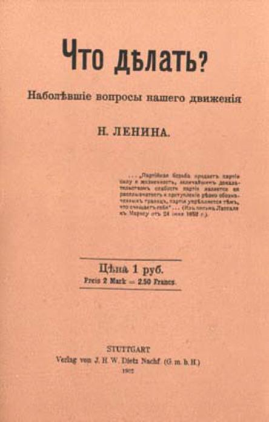

Что делать?
Наболевшие вопросы нашего движения[1]
«... Партийная борьба придает партии силу и жизненность, величайшим доказательством слабости партии является ее расплывчатость и притупление резко обозначенных границ, партия укрепляется тем, что очищает себя...»
(Из письма Лассаля к Марксу от 24 июня 1852 г.)
Написано осенью 1901 — в феврале 1902 г.
Напечатано в марте 1902 г. в Штутгарте отдельной книгой
Печатается по тексту книги, сверенному с текстом сборника: Вл. Ильин. «За 12 лет», 1907 [1]

Обложка книги В. И. Ленина «Что делать?». — 1902 г.
Уменьшено [2]
Предисловие
Предлагаемая брошюра должна была, по первоначальному плану автора, быть посвящена подробному развитию тех мыслей, которые высказаны в статье «С чего начать?» («Искра»[2] №4, май 1901 г.)[3]. И мы должны прежде всего принести извинение читателю за позднее исполнение данного там (и повторенного в ответ на многие частные запросы и письма) обещания. Одной из причин такого запоздания явилась попытка объединения всех заграничных социал-демократических организаций, предпринятая в июне истекшего (1901) года[4]. Естественно было дождаться результатов этой попытки, ибо при удаче ее пришлось бы, может быть, излагать организационные взгляды «Искры» под несколько иным углом зрения, и во всяком случае такая удача обещала бы положить очень быстро конец существованию двух течений в русской социал-демократии. Как известно читателю, попытка окончилась неудачей и, как мы постараемся доказать ниже, не могла не окончиться так после нового поворота «Рабочего Дела»[5] в № 10 к «экономизму». Оказалось безусловно необходимым вступить в решительную борьбу с этим расплывчатым и мало определенным, но зато тем более устойчивым и способным возрождаться в разнообразных формах направлением. Сообразно этому видоизменился и весьма значительно расширился первоначальный план брошюры. [3]
Главной темой ее должны были быть три вопроса, поставленные в статье «С чего начать?». Именно: вопросы о характере и главном содержании нашей политической агитации, о наших организационных задачах, о плане построения одновременно и с разных концов боевой общерусской организации. Вопросы эти давно уже интересуют автора, пытавшегося поднять их еще в «Рабочей Газете»[6] при одной из неудавшихся попыток ее возобновления (см. гл. V). Но первоначальное предположение ограничиться в брошюре разбором только трех этих вопросов и изложить свои воззрения по возможности в положительной форме, не прибегая или почти не прибегая к полемике, оказалось совершенно неосуществимым по двум причинам. С одной стороны, «экономизм» оказался гораздо более живучим, чем мы предполагали (мы употребляем слово «экономизм» в широком смысле, как оно было пояснено в № 12 «Искры» (декабрь 1901 г.) в статье «Беседа с защитниками экономизма», наметившей, так сказать, конспект предлагаемой читателю брошюры[7]). Стало несомненным, что различные взгляды на решение этих трех вопросов объясняются в гораздо большей степени коренной противоположностью двух направлений в русской социал-демократии, чем расхождением в частностях. С другой стороны, недоумение «экономистов» по поводу фактического проведения в «Искре» наших воззрений показывало с очевидностью, что мы часто говорим буквально на разных языках, что мы не можем поэтому ни до чего договориться, если не будем начинать ab οvο[8], что необходимо сделать попытку возможно более популярного, поясняемого самыми многочисленными и конкретными примерами, систематического «объяснения» со всеми «экономистами» по всем коренным пунктам наших разногласий. И я решил сделать такую попытку «объясниться», вполне сознавая, что это очень сильно увеличит размеры брошюры и замедлит ее выход, но не видя в то же время никакой возможности иначе исполнить данное мной в статье «С чего начать?» обещание. К изви[4]нению по поводу опоздания мне приходится таким образом прибавить еще извинение по поводу громадных недостатков в литературной отделке брошюры: я должен был работать до последней степени наспех, отрываемый притом всякими другими работами.
Разбор указанных выше трех вопросов составляет, по-прежнему, главную тему брошюры, но начать мне пришлось с двух более общих вопросов: почему такой «невинный» и «естественный» лозунг, как «свобода критики», является для нас настоящим боевым сигналом? почему мы не можем столковаться даже по основному вопросу о роли социал-демократии по отношению к стихийному массовому движению? Далее, изложение взглядов на характер и содержание политической агитации превратилось в объяснение разницы между тред-юнионистской и социал-демократической политикой, а изложение взглядов на организационные задачи — в объяснение разницы между удовлетворяющим «экономистов» кустарничеством и необходимой, на наш взгляд, организацией революционеров. Затем, на «плане» общерусской политической газеты я тем более настаиваю, чем несостоятельнее были сделанные против него возражения и чем менее ответили мне по существу на поставленный в статье «С чего начать?» вопрос о том, как могли бы мы одновременно со всех концов приняться за возведение необходимой нам организации. Наконец, в заключительной части брошюры я надеюсь показать, что мы сделали все от нас зависевшее, чтобы предупредить решительный разрыв с «экономистами», который оказался, однако, неизбежным; — что «Раб. Дело» приобрело особое, «историческое», если хотите, значение тем, что всего полнее, всего рельефнее выразило не последовательный «экономизм», а тот разброд и те шатания, которые составили отличительную черту целого периода в истории русской социал-демократии; — что поэтому приобретает значение и чрезмерно подробная, на первый взгляд, полемика с «Раб. Делом», ибо мы не можем идти вперед, если мы окончательно не ликвидируем этого периода.
Н. Ленин
Февраль 1902 г. [5]
I Догматизм и «свобода критики»
а) Что значит «свобода критики»?
«Свобода критики» — это, несомненно, самый модный лозунг в настоящее время, всего чаще употребляемый в спорах между социалистами и демократами всех стран. На первый взгляд, трудно себе представить что-либо более странное, чем эти торжественные ссылки одной из спорящих сторон на свободу критики. Неужели из среды передовых партий раздались голоса против того конституционного закона большинства европейских стран, который обеспечивает свободу науки и научного исследования? «Тут что-то не так!» — должен будет сказать себе всякий сторонний человек, который услыхал повторяемый на всех перекрестках модный лозунг, но не вник еще в сущность разногласия между спорящими. «Этот лозунг, очевидно, одно из тех условных словечек, которые, как клички, узаконяются употреблением и становятся почти нарицательными именами».
В самом деле, ни для кого не тайна, что в современной международной[9] социал-демократии образовались два [6] направления, борьба между которыми то разгорается и вспыхивает ярким пламенем, то затихает и тлеет под пеплом внушительных «резолюций о перемирии». В чем состоит «новое» направление, которое «критически» относится к «старому, догматическому» марксизму, это с достаточной определенностью сказал Бернштейн и показал Мильеран.
Социал-демократия должна из партии социальной революции превратиться в демократическую партию социальных реформ. Это политическое требование Бернштейн обставил целой батареей довольно стройно согласованных «новых» аргументов и соображений. Отрицалась возможность научно обосновать социализм и доказать, с точки зрения материалистического понимания истории, его необходимость и неизбежность; отрицался факт растущей нищеты, пролетаризации и обострения капиталистических противоречий; объявлялось несостоятельным самое понятие о «конечной цели» и безусловно отвергалась идея диктатуры пролетариата; отрицалась принципиальная противоположность либерализма и социализма; отрицалась теория классовой борьбы, неприложимая будто бы к строго демократическому обществу, управляемому согласно воле большинства, и т. д.
Таким образом, требование решительного поворота от революционной социал-демократии к буржуазному социал-реформаторству сопровождалось не менее решительным поворотом к буржуазной критике всех основных идей марксизма. А так как эта последняя критика велась уже издавна против марксизма и с политической трибуны и с университетской кафедры, и в массе брошюр и в ряде ученых трактатов, так как вся подрастающая молодежь образованных классов в течение десятилетий систематически воспитывалась на этой критике, — то неудивительно, что «новое критическое» направление [7] в социал-демократии вышло как-то сразу вполне законченным, точно Минерва из головы Юпитера[15]. По своему содержанию, этому направлению не приходилось развиваться и складываться: оно прямо было перенесено из буржуазной литературы в социалистическую.
Далее. Если теоретическая критика Бернштейна и его политические вожделения оставались еще кому-либо неясными, то французы позаботились о наглядной демонстрации «новой методы». Франция и на этот раз оправдала свою старинную репутацию «страны, в истории которой борьба классов, более чем где-либо, доводилась до решительного конца» (Энгельс, из предисловия к сочинению Маркса: «Der 18 Brumaire»)[16]. Французские социалисты стали не теоретизировать, а прямо действовать; более развитые в демократическом отношении политические условия Франции позволили им сразу перейти к «практическому бернштейнианству» во всех его последствиях. Мильеран дал прекрасный образчик этого практического бернштейнианства, — недаром Мильерана так усердно бросились защищать и восхвалять и Бернштейн, и Фольмар! В самом деле: если социал-демократия в сущности есть просто партия реформ и должна иметь смелость открыто признать это, — тогда социалист не только вправе вступить в буржуазное министерство, но должен даже всегда стремиться к этому. Если демократия в сущности означает уничтожение классового господства, — то отчего же социалистическому министру не пленять весь буржуазный мир речами о сотрудничестве классов? Отчего не оставаться ему в министерстве даже после того, как убийства рабочих жандармами показали в сотый и тысячный раз истинный характер демократического сотрудничества классов? Отчего бы ему не принять лично участия в приветствовании царя, которого французские социалисты зовут теперь не иначе как героем виселицы, кнута и ссылки (knouteur, pendeur et déportateur)? A возмездием за это бесконечное унижение и самооплевание социализма перед всем миром, за развращение социалистического сознания рабочих [8] масс — этого единственного базиса, который может обеспечить нам победу, — в возмездие за это громкие проекты мизерных реформ, мизерных до того, что у буржуазных правительств удавалось добиться большего!
Кто не закрывает себе намеренно глаз, тот не может не видеть, что новое «критическое» направление в социализме есть не что иное, как новая разновидность оппортунизма. И если судить о людях не по тому блестящему мундиру, который они сами себе надели, не по той эффектной кличке, которую они сами себе взяли, а по тому, как они поступают и что они на самом деле пропагандируют, — то станет ясно, что «свобода критики» есть свобода оппортунистического направления в социал-демократии, свобода превращать социал-демократию в демократическую партию реформ, свобода внедрения в социализм буржуазных идей и буржуазных элементов.
Свобода — великое слово, но под знаменем свободы промышленности велись самые разбойнические войны, под знаменем свободы труда — грабили трудящихся. Такая же внутренняя фальшь заключается в современном употреблении слова: «свобода критики». Люди, действительно убежденные в том, что они двинули вперед науку, требовали бы не свободы новых воззрений наряду с старыми, а замены последних первыми. А современные выкрикивания «да здравствует свобода критики!» слишком напоминают басню о пустой бочке.
Мы идем тесной кучкой по обрывистому и трудному пути, крепко взявшись за руки. Мы окружены со всех сторон врагами, и нам приходится почти всегда идти под их огнем. Мы соединились, по свободно принятому решению, именно для того, чтобы бороться с врагами и не оступаться в соседнее болото, обитатели которого с самого начала порицали нас за то, что мы выделились в особую группу и выбрали путь борьбы, а не путь примирения. И вот некоторые из нас принимаются кричать: пойдемте в это болото! — а когда их начинают стыдить, они возражают: какие вы отсталые люди! и как вам не совестно отрицать за нами свободу звать вас на лучшую дорогу! — О да, господа, вы свободны не только звать, но и идти куда вам угодно, хотя бы в болото; [9] мы находим даже, что ваше настоящее место именно в болоте, и мы готовы оказать вам посильное содействие к вашему переселению туда. Но только оставьте тогда наши руки, не хватайтесь за нас и не пачкайте великого слова свобода, потому что мы ведь тоже «свободны» идти, куда мы хотим, свободны бороться не только с болотом, но и с теми, кто поворачивает к болоту!
б) Новые защитники «свободы критики»
И вот этот-то лозунг («свобода критики») торжественно выдвинут в самое последнее время «Раб. Делом» (№ 10), органом заграничного «Союза русских социал-демократов»[17], выдвинут не как теоретический постулат, а как политическое требование, как ответ на вопрос: «возможно ли объединение действующих за границей социал-демократических организаций?» — «Для прочного объединения необходима свобода критики» (стр. 36).
Из этого заявления вытекают два совершенно определенных вывода: 1. «Рабоч. Дело» берет под свою защиту оппортунистическое направление в международной социал-демократии вообще; 2. «Р. Дело» требует свободы оппортунизма в русской социал-демократии. Рассмотрим эти выводы.
«Р. Делу» «в особенности» не нравится «склонность «Искры» и «Зари»[18] пророчить разрыв между Горой и Жирондой[19] международной социал-демократии»[20].
«Нам вообще, — пишет редактор «Р. Д.» Б. Кричевский, — разговор о Горе и Жиронде в рядах социал-демократии представляется поверхностной исторической аналогией, странной под пером марксиста: Гора и Жиронда представляли не разные темпераменты или умственные течения, как это может казаться историкам-идеологам, а разные классы или слои — среднюю бур[10]жуазию, с одной стороны, и мелкое мещанство с пролетариатом, с другой. В современном же социалистическом движении нет столкновения классовых интересов, оно все целиком, во всех (курс. Б. Кр.) своих разновидностях, включая и самых отъявленных бернштейнианцев, стоит на почве классовых интересов пролетариата, его классовой борьбы за политическое и экономическое освобождение» (стр. 32—33).
Смелое утверждение! Не слыхал ли Б. Кричевский о том, давно уже подмеченном, факте, что именно широкое участие в социалистическом движении последних лет слоя «академиков» обеспечило такое быстрое распространение бернштейнианства? А главное, — на чем основывает наш автор свое мнение, что и «самые отъявленные бернштейнианцы» стоят на почве классовой борьбы за политическое и экономическое освобождение пролетариата? Неизвестно. Решительная защита самых отъявленных бернштейнианцев ровно никакими ни доводами, ни соображениями не подкрепляется. Автор думает, очевидно, что раз он повторяет то, чтó говорят про себя и самые отъявленные бернштейнианцы, — то его утверждение и не нуждается в доказательствах. Но можно ли представить себе что-либо более «поверхностное», как это суждение о целом направлении на основании того, чтó говорят сами про себя представители этого направления? Можно ли представить себе что-либо более поверхностное, как дальнейшая «мораль» о двух различных и даже диаметрально противоположных типах или дорогах партийного развития (стр. 34—35 «Р. Д.»)? Немецкие социал-демократы, видите ли, признают полную свободу критики, — французы же нет, и именно их пример показывает весь «вред нетерпимости».
Именно пример Б. Кричевского — ответим мы на это — показывает, что иногда называют себя марксистами люди, которые смотрят на историю буквально «по Иловайскому». Чтобы объяснить единство германской и раздробленность французской социалистической партии, вовсе нет надобности копаться в особенностях истории той и другой страны, сопоставлять условия военного полуабсолютизма и республиканского парламентаризма, разбирать последствия Коммуны и [11] исключительного закона о социалистах[22], сравнивать экономический быт и экономическое развитие, вспоминать о том, как «беспримерный рост германской социал-демократии» сопровождался беспримерной в истории социализма энергией борьбы не только с теоретическими (Мюльбергер, Дюринг[23], катедер-социалисты[24]), но и с тактическими (Лассаль) заблуждениями, и проч. и проч. Все это лишнее! Французы ссорятся, потому что они нетерпимы, немцы едины, потому что они пай-мальчики.
И заметьте, что посредством этого бесподобного глубокомыслия «отводится» факт, всецело опровергающий защиту бернштейнианцев. Стоят ли они на почве классовой борьбы пролетариата, этот вопрос окончательно и бесповоротно может быть решен только историческим опытом. Следовательно, наиболее важное значение имеет в этом отношении именно пример Франции, как единственной страны, в которой бернштейнианцы попробовали встать самостоятельно на ноги, при горячем одобрении своих немецких коллег (а отчасти и русских оппортунистов: ср. «Р. Д.» № 2—3, стр. 83—84). Ссылка на «непримиримость» французов — помимо своего «исторического» (в ноздревском смысле) значения — оказывается просто попыткой замять сердитыми словами очень неприятные факты.
Да и немцев мы вовсе еще не намерены подарить Б. Кричевскому и прочим многочисленным защитникам «свободы критики». Если «самые отъявленные бернштейнианцы» терпимы еще в рядах германской партии, то [12] лишь постольку, поскольку они подчиняются и ганноверской резолюции, решительно отвергнувшей «поправки» Бернштейна[27], и любекской, содержащей в себе (несмотря на всю дипломатичность) прямое предостережение Бернштейну[28]. Можно спорить, с точки зрения интересов немецкой партии, о том, насколько уместна была дипломатичность, лучше ли в данном случае худой мир, чем добрая ссора, можно расходиться, одним словом, в оценке целесообразности того или другого способа отклонить бернштейнианство, но нельзя не видеть факта, что германская партия дважды отклонила бернштейнианство. Поэтому думать, что пример немцев подтверждает тезис: «самые отъявленные бернштейнианцы стоят на почве классовой борьбы пролетариата за его экономическое и политическое освобождение» — значит совершенно не понимать происходящего у всех перед глазами[29].
Мало того. «Раб. Дело» выступает, как мы уже заметили, перед русской социал-демократией с требованием «свободы критики» и с защитой бернштейнианства. Очевидно, ему пришлось убедиться в том, что у нас несправедливо обижали наших «критиков» и бернштейнианцев. Каких же именно? кто? где? когда? в чем именно состояла несправедливость? — Об этом «Р. Дело» молчит, не упоминая ни единого раза ни об одном русском критике и бернштейнианце! Нам остается только сделать одно из двух возможных предположений. Или несправедливо обиженной стороной является не кто [13] иной, как само «Р. Дело» (это подтверждается тем, что в обеих статьях десятого номера речь идет только об обидах, нанесенных «Зарей» и «Искрой» «Р. Делу»), Тогда чем объяснить такую странность, что «Р. Дело», столь упорно отрекавшееся всегда от всякой солидарности с бернштейнианством, не могло защитить себя, не замолвив словечка за «самых отъявленных бернштейнианцев» и за свободу критики? Или несправедливо обижены какие-то третьи лица. Тогда каковы могут быть мотивы умолчания о них?
Мы видим, таким образом, что «Р. Дело» продолжает ту игру в прятки, которой оно занималось (как мы покажем ниже) с самого своего возникновения. А затем обратите внимание на это первое фактическое применение хваленой «свободы критики». На деле она сейчас же свелась не только к отсутствию всякой критики, но и к отсутствию самостоятельного суждения вообще. То самое «Р. Дело», которое умалчивает точно о секретной болезни (по меткому выражению Старовера[31]) о русском бернштейнианстве, предлагает для лечения этой болезни просто-напросто списать последний немецкий рецепт против немецкой разновидности болезни! Вместо свободы критики — рабская,.. хуже: обезьянья подражательность! Одинаковое социально-политическое содержание современного интернационального оппортунизма проявляется в тех или иных разновидностях, сообразно национальным особенностям. В одной стране группа оппортунистов выступала издавна под особым флагом, в другой оппортунисты пренебрегали теорией, ведя практически политику радикалов-социалистов, в третьей — несколько членов революционной партии перебежали в лагерь оппортунизма и стараются добиться своих целей не открытой борьбой за принципы и за новую тактику, а постепенным, незаметным и, если можно так выразиться, ненаказуемым развращением своей партии, в четвертой — такие же перебежчики употребляют те же приемы в потемках политического рабства и при совершенно оригинальном взаимоотношении «легальной» и «нелегальной» деятельности и проч. Браться же говорить о свободе критики и бернштей-[14]нианства, как условии объединения русских социал-демократов, и при этом не давать разбора того, в чем именно проявилось и какие особенные плоды принесло русское бернштейнианство, — это значит браться говорить для того, чтобы ничего не сказать.
Попробуем же мы сами сказать, хотя бы в нескольких словах, то, чего не пожелало сказать (или, может быть, не сумело и понять) «Р. Дело».
в) Критика в россии
Основная особенность России в рассматриваемом отношении состоит в том, что уже самое начало стихийного рабочего движения, с одной стороны, и поворота передового общественного мнения к марксизму, с другой, ознаменовалось соединением заведомо разнородных элементов под общим флагом и для борьбы с общим противником (устарелым социально-политическим мировоззрением). Мы говорим о медовом месяце «легального марксизма». Это было вообще чрезвычайно оригинальное явление, в самую возможность которого не мог бы даже поверить никто в 80-х или начале 90-х годов. В стране самодержавной, с полным порабощением печати, в эпоху отчаянной политической реакции, преследовавшей самомалейшие ростки политического недовольства и протеста, — внезапно пробивает себе дорогу в подцензурную литературу теория революционного марксизма, излагаемая эзоповским, но для всех «интересующихся» понятным языком. Правительство привыкло считать опасной только теорию (революционного) народовольчества, не замечая, как водится, ее внутренней эволюции, радуясь всякой направленной против нее критике. Пока правительство спохватилось, пока тяжеловесная армия цензоров и жандармов разыскала нового врага и обрушилась на него, — до тех пор прошло немало (на наш русский счет) времени. А в это время выходили одна за другой марксистские книги, открывались марксистские журналы и газеты, марксистами становились повально все, марксистам льстили, за марксистами ухаживали, издатели восторгались [15] необычайно ходким сбытом марксистских книг. Вполне понятно, что среди окруженных этим чадом начинающих марксистов оказался не один «писатель, который зазнался»...[32]
В настоящее время об этой полосе можно говорить спокойно, как о прошлом. Ни для кого не тайна, что кратковременное процветание марксизма на поверхности нашей литературы было вызвано союзом людей крайних с людьми весьма умеренными. В сущности, эти последние были буржуазными демократами, и этот вывод (до очевидности подкрепленный их дальнейшим «критическим» развитием) напрашивался кое перед кем еще во времена целости «союза»[33].
Но если так, то не падает ли наибольшая ответственность за последующую «смуту» именно на революционных социал-демократов, которые вошли в этот союз с будущими «критиками»? Такой вопрос, вместе с утвердительным ответом на него, приходится слышать иногда от людей, чересчур прямолинейно смотрящих на дело. Но эти люди совершенно неправы. Бояться временных союзов хотя бы и с ненадежными людьми может только тот, кто сам на себя не надеется, и ни одна политическая партия без таких союзов не могла бы существовать. А соединение с легальными марксистами было своего рода первым действительно политическим союзом русской социал-демократии. Благодаря этому союзу была достигнута поразительно быстрая победа над народничеством и громадное распространение вширь идей марксизма (хотя и в вульгаризированном виде). Притом союз заключен был не совсем без всяких «условий». Доказательство: сожженный в 1895 г. цензурой марксистский сборник «Материалы к вопросу о хозяйственном развитии России». Если литературное соглашение с легальными марксистами можно сравнить с политическим союзом, то эту книгу можно сравнить с политическим договором. [16]
Разрыв вызван был, конечно, не тем, что «союзники» оказались буржуазными демократами. Напротив, представители этого последнего направления — естественные и желательные союзники социал-демократии, поскольку дело идет о ее демократических задачах, выдвигаемых на первый план современным положением России. Но необходимым условием такого союза является полная возможность для социалистов раскрывать рабочему классу враждебную противоположность его интересов и интересов буржуазии. А то бернштейнианство и «критическое» направление, к которому повально обратилось большинство легальных марксистов, отнимало эту возможность и развращало социалистическое сознание, опошляя марксизм, проповедуя теорию притупления социальных противоречий, объявляя нелепостью идею социальной революции и диктатуры пролетариата, сводя рабочее движение и классовую борьбу к узкому тред-юнионизму и «реалистической» борьбе за мелкие, постепенные реформы. Это вполне равносильно было отрицанию со стороны буржуазной демократии права на самостоятельность социализма, а следовательно, и права на его существование; это означало на практике стремление превратить начинающееся рабочее движение в хвост либералов.
Естественно, что при таких условиях разрыв был необходим. Но «оригинальная» особенность России сказалась в том, что этот разрыв означал простое удаление социал-демократов из наиболее всем доступной и широко распространенной «легальной» литературы. В ней укрепились «бывшие марксисты», вставшие «под знак критики» и получившие почти что монополию на «разнос» марксизма. Клики: «против ортодоксии» и «да здравствует свобода критики» (повторяемые теперь «Р. Делом») сделались сразу модными словечками, и что против этой моды не устояли и цензоры с жандармами, это видно из таких фактов, как появление трех русских изданий книги знаменитого (геростратовски знаменитого) Бернштейна[35] или как рекомендация Зубатовым книг Бернштейна, г. Прокоповича и проч. («Искра» № 10)[36]. На социал-демократов легла теперь трудная [17] сама по себе, и невероятно затрудненная еще чисто внешними препятствиями, задача борьбы с новым течением. А это течение не ограничилось областью литературы. Поворот к «критике» сопровождался встречным влечением практиков социал-демократов к «экономизму».
Как возникала и росла связь и взаимозависимость легальной критики и нелегального «экономизма», этот интересный вопрос мог бы послужить предметом особой статьи. Нам достаточно отметить здесь несомненное существование этой связи. Пресловутое «Credo»[37] потому и приобрело такую заслуженную знаменитость, что оно откровенно формулировало эту связь и проболтало основную политическую тенденцию «экономизма»: рабочие пусть ведут экономическую борьбу (точнее было бы сказать: тред-юнионистскую борьбу, ибо последняя объемлет и специфически рабочую политику), а марксистская интеллигенция пусть сливается с либералами для «борьбы» политической. Тред-юнионистская работа «в народе» оказывалась исполнением первой, легальная критика — второй половины этой задачи. Это заявление было таким прекрасным оружием против «экономизма», что если бы не было «Credo» — его стоило бы выдумать.
«Credo» не было выдумано, но оно было опубликовано помимо воли и, может быть, даже против воли его авторов. По крайней мере, пишущему эти строки, который принимал участие в извлечении на свет божий новой «программы»[18**], приходилось слышать жалобы и упреки по поводу того, что набросанное ораторами резюме их взглядов было распространено в копиях, получило ярлык «Credo» и попало даже в печать вместе с протестом! Мы касаемся этого эпизода, потому что он вскрывает очень любопытную черту нашего «экономизма»: боязнь гласности. Это именно черта «экономизма» [18] вообще, а не одних только авторов «Credo»: ее проявляли и «Рабочая Мысль»[38], самый прямой и самый честный сторонник «экономизма», и «Р. Дело» (возмущаясь опубликованием «экономических» документов в «Vademecum'e»[39]), и Киевский комитет, не пожелавший года два тому назад дать разрешение на опубликование своего «Profession de foi»[40] вместе с написанным против него опровержением[41], и многие, многие отдельные представители «экономизма».
[18**]: Речь идет о протесте 17-ти против «Credo». Пишущий эти строки участвовал в составлении этого протеста (конец 1899 года). Протест вместе с «Credo» был напечатан за границей весной 1900 года[42]. В настоящее время из статьи г-жи Кусковой (кажется, в «Былом»[43]) уже известно, что автором «Credo» была она, а среди заграничных «экономистов» того времени виднейшую роль играл г. Прокопович. (Примечание автора к изданию 1907 г. Ред.) Авт.
Эта боязнь критики, проявляемая сторонниками свободы критики, не может быть объяснена одним лукавством (хотя кое-когда, несомненно, не обходится и без лукавства: нерасчетливо открывать для натиска противников неокрепшие еще ростки нового направления!). Нет, большинство «экономистов» совершенно искренно смотрит (и, по самому существу «экономизма», должны смотреть) с недоброжелательством на всякие теоретические споры, фракционные разногласия, широкие политические вопросы, проекты сорганизовывать революционеров и т. п. «Сдать бы все это за границу!» — сказал мне однажды один из довольно последовательных «экономистов», и он выразил этим очень распространенное (и опять-таки чисто тред-юнионистское) воззрение: наше дело — рабочее движение, рабочие организации здесь, в нашей местности, а остальное — выдумки доктринеров, «переоценка идеологии», как выразились авторы письма в № 12 «Искры» в унисон с № 10 «Р. Дела».
Спрашивается теперь: ввиду таких особенностей русской «критики» и русского бернштейнианства в чем должна была бы состоять задача тех, кто на деле, а не на словах только, хотел быть противником оппортунизма? Во-первых, надо было позаботиться о возобновлении той теоретической работы, которая только-только была начата эпохой легального марксизма и которая падала теперь опять на нелегальных деятелей; без такой работы невозможен был успешный рост движения. Во-вторых, необходимо было активно выступить [19] на борьбу с легальной «критикой», вносившей сугубый разврат в умы. В-третьих, надо было активно выступить против разброда и шатания в практическом движении, разоблачая и опровергая всякие попытки сознательно или бессознательно принижать нашу программу и нашу тактику.
Что «Р. Дело» не делало ни того, ни другого, ни третьего, это известно, и ниже нам придется подробно выяснять эту известную истину с самых различных сторон. Теперь же мы хотим только показать, в каком вопиющем противоречии находится требование «свободы критики» с особенностями нашей отечественной критики и русского «экономизма». Взгляните, в самом деле, на текст той резолюции, которой «Союз русских социал-демократов за границей» подтвердил точку зрения «Р. Дела»:
«В интересах дальнейшего идейного развития социал-демократии мы признаем свободу критики социал-демократической теории в партийной литературе безусловно необходимой, поскольку критика не идет вразрез с классовым и революционным характером этой теории» («Два съезда», стр. 10).
И мотивировка: резолюция «в первой своей части совпадает с резолюцией любекского партейтага по поводу Бернштейна»... В простоте душевной, «союзники» и не замечают, какое testimonium paupertatis (свидетельство о бедности) подписывают они себе этим копированием!., «но... во второй части более тесно ограничивает свободу критики, чем это сделал любекский партейтаг».
Итак, резолюция «Союза» направлена против русских бернштейнианцев? Иначе было бы полным абсурдом ссылаться на Любек! Но это неверно, что она «тесно ограничивает свободу критики». Немцы своей ганноверской резолюцией отклонили пункт за пунктом именно те поправки, которые делал Бернштейн, а любекской — объявили предостережение Бернштейну лично, назвав его в резолюции. Между тем, наши «свободные» подражатели ни единым звуком не намекают ни на одно проявление специально русской «критики» и русского «экономизма»; при этом умолчании голая ссылка на классовый и революционный характер теории оставляет гораздо больше простора лжетолкованиям, особенно [20] если «Союз» отказывается отнести к оппортунизму «так называемый экономизм» («Два съезда», стр. 8, к п. I). Это, однако, мимоходом. Главное же то, что позиции оппортунистов по отношению к революционным социал-демократам диаметрально противоположны в Германии и в России. В Германии революционные социал-демократы стоят, как известно, за сохранение того, что есть: за старую программу и тактику, всем известную и опытом многих десятилетий разъясненную во всех деталях. «Критики» же хотят внести изменения, и так как этих критиков ничтожное меньшинство, а ревизионистские стремления их очень робки, то можно понять мотивы, по которым большинство ограничивается сухим отклонением «новшества». У нас же в России критики и «экономисты» стоят за сохранение того, что есть: «критики» хотят, чтобы их продолжали считать марксистами и обеспечили им ту «свободу критики», которой они во всех смыслах пользовались (ибо никакой партийной связи они, в сущности, никогда не признавали[45], да и не было у нас такого общепризнанного партийного органа, который мог бы «ограничить» свободу критики хотя бы советом); «экономисты» хотят, чтобы революционеры признавали «полноправность движения в настоящем» («Р. Д.» № 10, стр. 25), т. е. «законность» существования того, что существует; чтобы «идеологи» не пытались «совлечь» движение с того пути, который «определяется взаимодействием материальных элементов и материальной среды» («Письмо» в № 12 «Искры»); чтобы [21] признали желательным вести ту борьбу, «какую только возможно вести рабочим при данных обстоятельствах», а возможной признали ту борьбу, «которую они ведут в действительности в данную минуту» («Отдельное приложение к «Р. Мысли»», стр. 14). Наоборот, мы, революционные социал-демократы, недовольны этим преклонением пред стихийностью, т. е. перед тем, чтó есть «в данную минуту»; мы требуем изменения господствующей в последние годы тактики, мы заявляем, что, «прежде, чем объединяться, и для того, чтобы объединиться, необходимо сначала решительно и определенно размежеваться» (из объявления об издании «Искры»)[46]. Одним словом, немцы остаются при данном, отклоняя изменения; мы требуем изменения данного, отвергая преклонение пред этим данным и примирение с ним.
Этой «маленькой» разницы и не заметили наши «свободные» копировальщики немецких резолюций!
г) Энгельс о значении теоретической борьбы
«Догматизм, доктринерство», «окостенение партии — неизбежное наказание за насильственное зашнуровывание мысли», — таковы те враги, против которых рыцарски ополчаются поборники «свободы критики» в «Раб. Деле». — Мы очень рады постановке на очередь этого вопроса и предложили бы только дополнить его другим вопросом:
А судьи кто?
Перед нами два объявления о литературном издательстве. Одно — «Программа периодического органа Союза рус. с.-д. «Раб. Дело»» (оттиск из № 1 «Р. Д.»). Другое — «Объявление о возобновлении изданий группы «Освобождение труда»»[47]. Оба помечены 1899 годом, когда «кризис марксизма» давно уже стоял на очереди дня. И что же? В первом произведении вы напрасно стали бы искать указания на это явление и определенного изложения той позиции, которую намерен занять по этому вопросу новый орган. О теоретической работе и ее на-[22]сущных задачах в данное время — ни слова ни в этой программе, ни в тех дополнениях к ней, которые принял третий съезд «Союза» 1901 года[48] («Два съезда», стр. 15—18). За все это время редакция «Р. Дела» оставляла в стороне теоретические вопросы, несмотря на то, что они волновали всех социал-демократов всего мира.
Другое объявление, наоборот, прежде всего указывает на ослабление в последние годы интереса к теории, настоятельно требует «зоркого внимания к теоретической стороне революционного движения пролетариата» и призывает к «беспощадной критике бернштейновских и других антиреволюционных тенденций» в нашем движении. Вышедшие номера «Зари» показывают, как выполнялась эта программа.
Итак, мы видим, что громкие фразы против окостенения мысли и проч. прикрывают собой беззаботность и беспомощность в развитии теоретической мысли. Пример русских социал-демократов особенно наглядно иллюстрирует то общеевропейское явление (давно уже отмеченное и немецкими марксистами), что пресловутая свобода критики означает не замену одной теории другою, а свободу от всякой целостной и продуманной теории, означает эклектизм и беспринципность. Кто сколько-нибудь знаком с фактическим состоянием нашего движения, тот не может не видеть, что широкое распространение марксизма сопровождалось некоторым принижением теоретического уровня. К движению, ради его практического значения и практических успехов, примыкало немало людей, очень мало и даже вовсе не подготовленных теоретически. Можно судить поэтому, какое отсутствие такта проявляет «Раб. Дело», когда выдвигает с победоносным видом изречение Маркса: «каждый шаг действительного движения важнее дюжины программ»[49]. Повторять эти слова в эпоху теоретического разброда, это все равно что кричать «таскать вам не перетаскать!» при виде похоронной процессии. Да и взяты эти слова Маркса из его письма о Готской программе[50], в котором он резко порицает допущенный эклектизм в формулировке принципов: [23] если уже надо было соединяться — писал Маркс вожакам партии — то заключайте договоры, ради удовлетворения практических целей движения, но не допускайте торгашества принципами, не делайте теоретических «уступок». Вот какова была мысль Маркса, а у нас находятся люди, которые, во имя его, стараются ослабить значение теории!
Без революционной теории не может быть и революционного движения. Нельзя достаточно настаивать на этой мысли в такое время, когда с модной проповедью оппортунизма обнимается увлечение самыми узкими формами практической деятельности. А для русской социал-демократии значение теории усиливается еще тремя обстоятельствами, о которых часто забывают, именно: во-первых, тем, что наша партия только еще складывается, только еще вырабатывает свою физиономию и далеко еще не закончила счетов с другими направлениями революционной мысли, грозящими совлечь движение с правильного пути. Напротив, именно самое последнее время ознаменовалось (как давно уже предсказывал «экономистам» Аксельрод[51]) оживлением не социал-демократических революционных направлений. При таких условиях «неважная» на первый взгляд ошибка может вызвать самые печальные последствия, и только близорукие люди могут находить несвоевременными или излишними фракционные споры и строгое различение оттенков. От упрочения того или другого «оттенка» может зависеть будущее русской социал-демократии на много и много лет.
Во-вторых, социал-демократическое движение международно, по самому своему существу. Это означает не только то, что мы должны бороться с национальным шовинизмом. Это означает также, что начинающееся в молодой стране движение может быть успешно лишь при условии претворения им опыта других стран. А для такого претворения недостаточно простого знакомства с этим опытом или простого переписывания последних резолюций. Для этого необходимо уменье критически относиться к этому опыту и самостоятельно проверять его. Кто только представит себе, как ги-[24]гантски разрослось и разветвилось современное рабочее движение, тот поймет, какой запас теоретических сил и политического (а также революционного) опыта необходим для выполнения этой задачи.
В-третьих, национальные задачи русской социал-демократии таковы, каких не было еще ни перед одной социалистической партией в мире. Нам придется ниже говорить о тех политических и организационных обязанностях, которые возлагает на нас эта задача освобождения всего народа от ига самодержавия. Теперь же мы хотим лишь указать, что роль передового борца может выполнить только партия, руководимая передовой теорией. А чтобы хоть сколько-нибудь конкретно представить себе, чтó это означает, пусть читатель вспомнит о таких предшественниках русской социал-демократии, как Герцен, Белинский, Чернышевский и блестящая плеяда революционеров 70-х годов; пусть подумает о том всемирном значении, которое приобретает теперь русская литература; пусть... да довольно и этого!
Приведем замечания Энгельса по вопросу о значении теории в социал-демократическом движении, относящиеся к 1874 году. Энгельс признает не две формы великой борьбы социал-демократии (политическую и экономическую), — как это принято делать у нас, — а три, ставя наряду с ними и теоретическую борьбу. Его напутствие практически и политически окрепшему немецкому рабочему движению так поучительно с точки зрения современных вопросов и споров, что читатель не посетует на нас, надеемся, за длинную выписку из предисловия к брошюре «Der deutsche Bauernkrieg»[52], которая давно уже стала величайшей библиографической редкостью:
«Немецкие рабочие имеют два существенных преимущества пред рабочими остальной Европы. Первое — то, что они принадлежат к наиболее теоретическому народу Европы и что они сохранили в себе тот теоретический смысл, который почти совершенно утрачен так [25] называемыми «образованными» классами в Германии. Без предшествующей ему немецкой философии, в особенности философии Гегеля, никогда не создался бы немецкий научный социализм, — единственный научный социализм, который когда-либо существовал. Без теоретического смысла у рабочих этот научный социализм никогда не вошел бы до такой степени в их плоть и кровь, как это мы видим теперь. А как необъятно велико это преимущество, это показывает, с одной стороны, то равнодушие ко всякой теории, которое является одной из главных причин того, почему английское рабочее движение так медленно двигается вперед, несмотря на великолепную организацию отдельных ремесл, — а с другой стороны, это показывает та смута и те шатания, которые посеял прудонизм, в его первоначальной форме у французов и бельгийцев, в его карикатурной, Бакуниным приданной, форме — у испанцев и итальянцев.
Второе преимущество состоит в том, что немцы приняли участие в рабочем движении почти что позже всех. Как немецкий теоретический социализм никогда не забудет, что он стоит на плечах Сен-Симона, Фурье и Оуэна — трех мыслителей, которые, несмотря на всю фантастичность и весь утопизм их учений, принадлежат к величайшим умам всех времен и которые гениально предвосхитили бесчисленное множество таких истин, правильность которых мы доказываем теперь научно, — так немецкое практическое рабочее движение не должно никогда забывать, что оно развилось на плечах английского и французского движения, что оно имело возможность просто обратить себе на пользу их дорого купленный опыт, избежать теперь их ошибок, которых тогда в большинстве случаев нельзя было избежать. Где были бы мы теперь без образца английских тред-юнионов и французской политической борьбы рабочих, без того колоссального толчка, который дала в особенности Парижская Коммуна?
Надо отдать справедливость немецким рабочим, что они с редким уменьем воспользовались выгодами своего положения. Впервые с тех пор, как существует рабочее движение, борьба ведется планомерно во всех трех ее [26] направлениях, согласованных и связанных между собой: в теоретическом, политическом и практически-экономическом (сопротивление капиталистам). В этом, так сказать, концентрическом нападении и заключается сила и непобедимость немецкого движения.
С одной стороны, вследствие этого выгодного их положения, с другой стороны, вследствие островных особенностей английского движения и насильственного подавления французского, немецкие рабочие поставлены в данный момент во главе пролетарской борьбы. Как долго события позволят им занимать этот почетный пост, этого нельзя предсказать. Но, покуда они будут занимать его, они исполнят, надо надеяться, как подобает, возлагаемые им на них обязанности. Для этого требуется удвоенное напряжение сил во всех областях борьбы и агитации. В особенности обязанность вождей будет состоять в том, чтобы все более и более просвещать себя по всем теоретическим вопросам, все более и более освобождаться от влияния традиционных, принадлежащих старому миросозерцанию, фраз и всегда иметь в виду, что социализм, с тех пор как он стал наукой, требует, чтобы с ним и обращались как с наукой, т. е. чтобы его изучали. Приобретенное таким образом, все более проясняющееся сознание необходимо распространять среди рабочих масс с все большим усердием и все крепче сплачивать организацию партии и организацию профессиональных союзов...
... Если немецкие рабочие будут так же идти вперед, то они будут — не то что маршировать во главе движения — это вовсе не в интересах движения, чтобы рабочие одной какой-либо нации маршировали во главе его, — но будут занимать почетное место в линии борцов; и они будут стоять во всеоружии, если неожиданно тяжелые испытания или великие события потребуют от них более высокого мужества, более высокой решимости и энергии»[53].
Слова Энгельса оказались пророческими. Через несколько лет немецких рабочих постигли неожиданно тяжелые испытания в виде исключительного закона о социалистах. И немецкие рабочие действительно [27] встретили их во всеоружии и сумели победоносно выйти из них.
Русскому пролетариату предстоят испытания еще неизмеримо более тяжкие, предстоит борьба с чудовищем, по сравнению с которым исключительный закон в конституционной стране кажется настоящим пигмеем. История поставила теперь перед нами ближайшую задачу, которая является наиболее революционной из всех ближайших задач пролетариата какой бы то ни было другой страны. Осуществление этой задачи, разрушение самого могучего оплота не только европейской, но также (можем мы сказать теперь) и азиатской реакции сделало бы русский пролетариат авангардом международного революционного пролетариата. И мы вправе рассчитывать, что добьемся этого почетного звания, заслуженного уже нашими предшественниками, революционерами 70-х годов, если мы сумеем воодушевить наше в тысячу раз более широкое и глубокое движение такой же беззаветной решимостью и энергией.
II. Стихийность масс и сознательность социал-демократии
Мы сказали, что наше движение, гораздо более широкое и глубокое, чем движение 70-х годов, необходимо воодушевить такою же, как тогда, беззаветной решимостью и энергией. В самом деле, до сих пор, кажется, еще никто не сомневался в том, что сила современного движения — пробуждение масс (и, главным образом, промышленного пролетариата), а слабость его — недостаток сознательности и инициативности руководителей-революционеров.
Однако в самое последнее время сделано сногсшибательное открытие, грозящее перевернуть все господствовавшие до сих пор взгляды по данному вопросу. Это открытие сделано «Р. Делом», которое, полемизируя с «Искрой» и «Зарей», не ограничилось одними частными возражениями, а попыталось свести «общее разногла[28]сие» к более глубокому корню — к «различной оценке сравнительного значения стихийного и сознательно «планомерного» элемента». Обвинительный тезис «Рабоч. Дела» гласит: «преуменьшение значения объективного или стихийного элемента развития»[29*]. Мы скажем на это: если бы полемика «Искры» и «Зари» не дала даже ровно никаких других результатов кроме того, что побудила «Р. Дело» додуматься до этого «общего разногласия», то и один этот результат дал бы нам большое удовлетворение: до такой степени многозначителен этот тезис, до такой степени ярко освещает он всю суть современных теоретических и политических разногласий между русскими социал-демократами.
[29*]: «Раб. Дело» № 10, сент. 1901 г., стр. 17 и 18. Курсив «Раб. Дела». Авт.
Вот почему вопрос об отношении сознательности к стихийности представляет громадный общий интерес, и на этом вопросе следует остановиться со всей подробностью.
а) Начало стихийного подъема
Мы отметили в предыдущей главе повальное увлечение теорией марксизма русской образованной молодежи в половине 90-х годов. Такой же повальный характер приняли около того же времени рабочие стачки после знаменитой петербургской промышленной войны 1896 года[54]. Их распространение по всей России явно свидетельствовало о глубине вновь поднимающегося народного движения, и если уже говорить о «стихийном элементе», то, конечно, именно это стачечное движение придется признать прежде всего стихийным. Но ведь и стихийность стихийности — рознь. Стачки бывали в России и в 70-х и в 60-х годах (и даже в первой половине XIX века), сопровождаясь «стихийным» разрушением машин и т. п. По сравнению с этими «бунтами» стачки 90-х годов можно даже назвать «сознательными» — до такой степени значителен тот шаг вперед, который сделало за это время рабочее движение. Это показывает нам, что «стихийный элемент» представляет из себя, в сущности, не что иное, как зачаточную форму [29] сознательности. И примитивные бунты выражали уже собой некоторое пробуждение сознательности: рабочие теряли исконную веру в незыблемость давящих их порядков, начинали... не скажу понимать, а чувствовать необходимость коллективного отпора, и решительно порывали с рабской покорностью перед начальством. Но это было все же гораздо более проявлением отчаяния и мести, чем борьбой. Стачки 90-х годов показывают нам гораздо больше проблесков сознательности: выставляются определенные требования, рассчитывается наперед, какой момент удобнее, обсуждаются известные случаи и примеры в других местах и т. д. Если бунты были восстанием просто угнетенных людей, то систематические стачки выражали уже собой зачатки классовой борьбы, но именно только зачатки. Взятые сами по себе, эти стачки были борьбой тред-юнионистской, но еще не социал-демократической, они знаменовали пробуждение антагонизма рабочих и хозяев, но у рабочих не было, да и быть не могло сознания непримиримой противоположности их интересов всему современному политическому и общественному строю, то есть сознания социал-демократического. В этом смысле стачки 90-х годов, несмотря на громадный прогресс по сравнению с «бунтами», оставались движением чисто стихийным.
Мы сказали, что социал-демократического сознания у рабочих и не могло быть. Оно могло быть принесено только извне. История всех стран свидетельствует, что исключительно своими собственными силами рабочий класс в состоянии выработать лишь сознание тред-юнионистское, т. е. убеждение в необходимости объединяться в союзы, вести борьбу с хозяевами, добиваться от правительства издания тех или иных необходимых для рабочих законов и т. п.[55] Учение же социализма выросло из тех философских, исторических, экономических теорий, которые разрабатывались образованными представителями имущих классов, интеллигенцией. [30] Основатели современного научного социализма, Маркс и Энгельс, принадлежали и сами, по своему социальному положению, к буржуазной интеллигенции. Точно так же и в России теоретическое учение социал-демократии возникло совершенно независимо от стихийного роста рабочего движения, возникло как естественный и неизбежный результат развития мысли у революционно-социалистической интеллигенции. К тому времени, о котором у нас идет речь, т. е. к половине 90-х годов, это учение не только было уже вполне сложившейся программой группы «Освобождение труда», но и завоевало на свою сторону большинство революционной молодежи в России.
Таким образом, налицо было и стихийное пробуждение рабочих масс, пробуждение к сознательной жизни и сознательной борьбе, и наличность вооруженной социал-демократическою теориею революционной молодежи, которая рвалась к рабочим. При этом особенно важно установить тот часто забываемый (и сравнительно мало известный) факт, что первые социал-демократы этого периода, усердно занимаясь экономической агитацией — (и вполне считаясь в этом отношении с действительно полезными указаниями тогда еще рукописной брошюры «Об агитации»[56]) — не только не считали ее единственной своей задачей, а, напротив, с самого начала выдвигали и самые широкие исторические задачи русской социал-демократии вообще и задачу ниспровержения самодержавия в особенности. Так, например, той группой петербургских социал-демократов, которая основала «Союз борьбы за освобождение рабочего класса»[57], был составлен еще в конце 1895 года первый номер газеты под названием «Рабочее Дело». Вполне готовый к печати этот номер был схвачен жандармами в набег с 8-го на 9-е декабря 1895 года у одного из членов группы, Анат. Алекс. Ванеева[58], и «Раб. Делу» первой [31] формации не суждено было увидеть света. Передовая статья этой газеты (которую, может быть, лет через 30 извлечет какая-нибудь «Русская Старина» из архивов департамента полиции) обрисовывала исторические задачи рабочего класса в России и во главе этих задач ставила завоевание политической свободы[59]. Затем была статья «О чем думают наши министры?»[60], посвященная полицейскому разгрому Комитетов грамотности, и ряд корреспонденций не только из Петербурга, но и из других местностей России (напр., о побоище рабочих в Ярославской губ.[61]). Таким образом этот, если не ошибаемся, «первый опыт» русских социал-демократов 90-х годов представлял из себя газету не узко местного, тем более не «экономического» характера, стремившуюся соединить стачечную борьбу с революционным движением против самодержавия и привлечь к поддержке социал-демократии всех угнетенных политикой реакционного мракобесия. И никто, хоть сколько-нибудь знакомый с состоянием движения в то время, не усомнится, что подобная газета встретила бы полное сочувствие и рабочих столицы и революционной интеллигенции и получила бы самое широкое распространение. Неуспех же предприятия доказал лишь, что тогдашние социал-демократы оказались не в силах удовлетворить насущный запрос момента вследствие недостатка у них революционного опыта и практической подготовленности. То же самое надо сказать и про «СПБ. Рабочий Листок»[62] и в особенности про «Рабочую Газету» и про «Манифест» образованной весною 1898 года Российской социал-демократической рабочей партии[63]. Само собою разумеется, что нам и в голову не приходит ставить эту неподготовленность в вину тогдашним деятелям. Но для того, чтобы воспользоваться опытом движения и извлечь из этого опыта практические уроки, необходимо дать себе полный отчет о причинах и значении того или другого недостатка. Поэтому крайне важно установить, что часть (может быть, даже большинство) действовавших в 1895—1898 гг. социал-демо[32]кратов вполне справедливо считали возможным тогда же, в самом начале «стихийного» движения, выступать с самой широкой программой и боевой тактикой[64]. Неподготовленность же большинства революционеров, будучи явлением вполне естественным, никаких особенных опасений возбуждать не могла. Раз постановка задач была правильная, раз была энергия на повторные попытки осуществить эти задачи, — временные неудачи представляли из себя полбеды. Революционная опытность и организаторская ловкость — вещи наживные. Была бы только охота вырабатывать в себе требуемые качества! Было бы только сознание недостатков, равносильное в революционном деле больше чем половине исправления!
Но полбеды сделалось настоящей бедой, когда это сознание стало меркнуть (а оно было очень живо у деятелей названных выше групп), когда появились люди, — и даже социал-демократические органы, — которые недостаток готовы были возвести в добродетель, которые попытались даже теоретически обосновать свое раболепство и преклонение пред стихийностью. Этому направлению, содержание которого очень неточно характеризуется слишком узким для его выражения понятием «экономизма», пора подвести итоги.
б) Преклонение пред стихийностью. «Рабочая мысль»
Прежде чем переходить к литературным проявлениям этого преклонения, отметим следующий характерный факт (сообщенный нам из упомянутого выше источника), [33] который бросает некоторый свет на то, как в среде действовавших в Петербурге товарищей возникала и росла рознь будущих двух направлений русской социал-демократии. В начале 1897 года А. А. Ванееву и некоторым из его товарищей пришлось участвовать, перед отправкой их в ссылку, на одном частном собрании, где сошлись «старые» и «молодые» члены «Союза борьбы за освобождение рабочего класса»[65]. Беседа велась главным образом об организации и в частности о том самом «Уставе рабочей кассы», который в окончательном своем виде напечатан в № 9—10 «Листка «Работника»»[66] (стр. 46). Между «стариками» («декабристами», как их звали тогда в шутку петербургские социал-демократы) и некоторыми из «молодых» (принимавшими впоследствии близкое участие в «Раб. Мысли») сразу обнаружилось резкое разногласие и разгорелась горячая полемика. «Молодые» защищали главные основания устава в том виде, как он напечатан. «Старики» говорили, что нам нужно прежде всего вовсе не это, а упрочение «Союза борьбы» в организацию революционеров, которой должны быть соподчинены различные рабочие кассы, кружки для пропаганды среди учащейся молодежи и т. п. Само собою разумеется, что спорившие далеки были от мысли видеть в этом разногласии начало расхождения, считая его, наоборот, единичным и случайным. Но этот факт показывает, что возникновение и распространение «экономизма» шло и в России отнюдь не без борьбы с «старыми» социал-демократами (это часто забывают нынешние «экономисты»). И если эта борьба не оставила, по большей части, «документальных» следов, то причина этого единственно та, что состав работающих кружков менялся невероятно часто, никакая преемственность не устанавливалась, а потому и разногласия не фиксировались никакими документами.
Возникновение «Раб. Мысли» вывело «экономизм» на свет божий, но тоже не сразу. Надо конкретно представить себе условия работы и кратковременность жизни массы русских кружков (а конкретно представляет себе это только тот, кто это пережил), чтобы понять, как много случайного было в успехе или неуспехе но[34]вого направления в разных городах и как долго ни сторонники, ни противники этого «нового» не могли, буквально-таки не имели никакой возможности определить, действительно ли это особое направление или просто выражение неподготовленности отдельных лиц. Например, первые гектографированные номера «Раб. Мысли» остались даже совершенно неизвестны громадному большинству социал-демократов, и если мы теперь можем ссылаться на передовицу первого ее номера, то только благодаря перепечатке ее в статье В. И—а («Листок «Работника»» № 9—10, стр. 47 и сл.), который не преминул, разумеется, усердно — не по разуму усердно — расхвалить новую газету, столь резко отличавшуюся от названных нами выше газет и проектов газет[67]. А на передовице этой стоит остановиться — настолько рельефно выразила она весь дух «Раб. Мысли» и «экономизма» вообще.
Указав на то, что руке в синем обшлаге не удержать развития рабочего движения, передовица продолжает: «... Такой живучестью рабочее движение обязано тому, что рабочий сам берется наконец за свою судьбу, вырвав ее из рук руководителей», и этот основной тезис подробно развивается дальше. На самом деле, руководители (т. е. социал-демократы, организаторы «Союза борьбы») были вырваны полицией из рук, можно сказать, рабочих[68], — а дело представляется так, будто рабочие вели борьбу с этими руководителями и освободились от их ига! Вместо того, чтобы звать вперед, к упрочению революционной организации и расширению политической деятельности, стали звать назад, к одной тред-юнионистской борьбе. Провозгласили, что «экономическая основа движения затемняется стремлением постоянно не забывать политический идеал», что девиз рабочего движения — «борьба за экономическое положение» (!) или, еще лучше, «рабочие для рабочих»; объявлялось, что стачечные кассы «дороже для движения, чем сотня других организаций» (сравните это, относящееся к октябрю 1897 года, утверждение с спором «декабристов» с «молодыми» в начале 1897 года) и т. п. Словечки в том роде, что во главу угла надо ставить не «сливки» рабочих, а «среднего» рабочего, массового рабочего, что «политика всегда послушно следует за экономикой»[69] и т. д. и т. д., сделались модой и приобрели неотразимое влияние на массу привлекаемой к движению молодежи, знакомой в большинстве случаев только с обрывками марксизма в легальном его изложении.
Это было полным подавлением сознательности стихийностью — стихийностью тех «социал-демократов», которые повторяли «идеи» г-на В. В., стихийностью тех рабочих, которые поддавались тому доводу, что копейка на рубль ближе и дороже, чем всякий социализм и всякая политика, что они должны вести «борьбу, зная, что борются они не для каких-то будущих поколений, а для себя и своих детей» (передовая № 1 «Р. Мысли»). Подобные фразы составляли всегда излюбленное оружие тех западноевропейских буржуа, которые, ненавидя социализм, сами работали (вроде немецкого «социал-политика» Гирша) над пересаживанием английского тред-юнионизма на родную почву, говоря рабочим, что только профессиональная борьба[70] есть именно борьба для самих себя и своих детей, а не для каких-то будущих поколений с каким-то будущим социализмом, — и теперь «В. В. русской социал-демокра[36]тии» принялись повторять эти буржуазные фразы. Важно отметить здесь три обстоятельства, которые нам очень пригодятся при дальнейшем разборе современных разногласий[71].
Во-первых, указанное нами подавление сознательности стихийностью произошло тоже стихийным путем. Это кажется каламбуром, но это — увы! — горькая правда. Оно произошло не путем открытой борьбы двух совершенно противоположных воззрений и победы одного над другим, а путем «вырывания» жандармами все большего и большего числа революционеров-«стариков» и путем все большего и большего выступления на сцену «молодых» «В. В. русской социал-демократии». Всякий, кто — не скажу: участвовал в современном русском движении, а хотя бы только нюхал его воздух, превосходно знает, что дело обстоит именно так. И если мы тем не менее особенно настаиваем на том, чтобы читатель вполне уяснил себе этот общеизвестный факт, если мы для наглядности, так сказать, приводим данные о «Рабочем Деле» первой формации и о споре между «стариками» и «молодыми» в начале 1897 года, — то это потому, что на незнание широкой публикой (или совсем юной молодежью) этого факта спекулируют люди, хвастающиеся своим «демократизмом». Мы вернемся еще к этому ниже.
Во-вторых, уже на первом литературном проявлении «экономизма» мы можем наблюдать то в высшей степени своеобразное и крайне характерное для понимания всех разногласий в среде современных социал-демократов явление, что сторонники «чисто рабочего движения», поклонники самой тесной и самой «органической» (выражение «Раб. Дела») связи с пролетарской борьбой, противники всякой нерабочей интеллигенции (хотя бы это была и социалистическая интеллигенция) вынуждены прибегать для защиты своей позиции к доводам [37] буржуазных «только тред-юнионистов». Это показывает нам, что «Р. Мысль», с самого своего начала, принялась — бессознательно для самой себя — осуществлять программу «Credo». Это показывает, — (чего никак не может понять «Р. Дело»), — что всякое преклонение пред стихийностью рабочего движения, всякое умаление роли «сознательного элемента», роли социал-демократии означает тем самым, — совершенно независимо от того, желает ли этого умаляющий или нет, — усиление влияния буржуазной идеологии на рабочих. Все, кто толкует о «переоценке идеологии»[72], о преувеличении роли сознательного элемента[73] и т. п., воображают, что чисто рабочее движение само по себе может выработать и выработает себе самостоятельную идеологию, лишь бы только рабочие «вырвали из рук руководителей свою судьбу». Но это глубокая ошибка. В дополнение к сказанному выше приведем еще следующие, глубоко справедливые и важные слова К. Каутского, сказанные им по поводу проекта новой программы австрийской социал-демократической партии[74]:
[^50]. На Венском съезде Австрийской социал-демократической партии, происходившем 2—6 ноября (н. ст.) 1901 года, была принята новая партийная программа взамен старой, Гайнфельдской программы (1888). В проекте новой программы, подготовленном специальной комиссией (В. Адлер и др.) по поручению Брюннского съезда 1899 года, были сделаны серьезные уступки бернштейнианству, что вызвало ряд критических замечаний; в частности К. Каутский в статье «Die Revision des Programms der Sozialdemokratie in Österreich» («Пересмотр программы австрийской социал-демократии»), опубликованной в журнале «Die Neue Zeit», 1901 — 1902, № 3, высказался за сохранение принципиальной части Гайнфельдской программы, как более полно и правильно выражающей понимание социал-демократией общего хода исторического процесса и задач рабочего класса. — 38.
«Многие из наших ревизионистских критиков полагают, будто Маркс утверждал, что экономическое развитие и классовая борьба создают не только условия социалистического производства, но также и непосредственно порождают сознание (курсив К. К.) его необходимости. И вот эти критики возражают, что страна наиболее высокого капиталистического развития, Англия, всего более чужда этому сознанию. На основании проекта можно было бы думать, что этот якобы ортодоксально-марксистский взгляд, опровергаемый указанным способом, разделяет и комиссия, вырабатывавшая австрийскую программу. В проекте значится: «Чем более капиталистическое развитие увеличивает пролетариат, тем более он вынуждается и получает возможность вести борьбу против капитализма. Пролетариат приходит к сознанию» возможности и необходимости социализма. В такой связи социалистическое сознание представляется необходимым непосредственным результатом пролетарской классовой борьбы. А это совершенно неверно. Разумеется, социализм, как учение, столь же коренится в современных экономических отношениях, как и классовая борьба пролетариата, столь же, как и эта по[38]следняя, вытекает из борьбы против порождаемой капитализмом бедности и нищеты масс, но социализм и классовая борьба возникают рядом одно с другим, а не одно из другого, возникают при различных предпосылках. Современное социалистическое сознание может возникнуть только на основании глубокого научного знания. В самом деле, современная экономическая наука настолько же является условием социалистического производства, как и современная, скажем, техника, а пролетариат при всем своем желании не может создать ни той, ни другой; обе они возникают из современного общественного процесса. Носителем же науки является не пролетариат, а буржуазная интеллигенция (курсив К. К.): в головах отдельных членов этого слоя возник ведь и современный социализм, и ими уже был сообщен выдающимся по своему умственному развитию пролетариям, которые затем вносят его в классовую борьбу пролетариата там, где это допускают условия. Таким образом, социалистическое сознание есть нечто извне внесенное (von außen Hineingetragenes) в классовую борьбу пролетариата, а не нечто стихийно (urwüchsig) из нее возникшее. Соответственно этому старая Гайнфельдская программа и говорила совершенно справедливо, что задачей социал-демократии является внесение в пролетариат (буквально: наполнение пролетариата) сознания его положения и сознания его задачи. В этом не было бы надобности, если бы это сознание само собой проистекало из классовой борьбы. Новый же проект перенял это положение из старой программы и пришил его к вышеприведенному положению. Но это совершенно перервало ход мысли...»
Раз о самостоятельной, самими рабочими массами в самом ходе их движения вырабатываемой идеологии не может быть и речи[76], то вопрос стоит только так: буржуазная или социалистическая идеология. Середины тут нет (ибо никакой «третьей» идеологии не выработало человечество, да и вообще в обществе, раздираемом классовыми противоречиями, и не может быть никогда [39] внеклассовой или надклассовой идеологии). Поэтому всякое умаление социалистической идеологии, всякое отстранение от нее означает тем самым усиление идеологии буржуазной. Толкуют о стихийности. Но стихийное развитие рабочего движения идет именно к подчинению его буржуазной идеологии, идет именно по программе «Credo», ибо стихийное рабочее движение есть тред-юнионизм, есть Nur-Gewerkschaftlerei, a тред-юнионизм означает как раз идейное порабощение рабочих буржуазией. Поэтому наша задача, задача социал-демократии, состоит в борьбе со стихийностью, состоит в том, чтобы совлечь рабочее движение с этого стихийного стремления тред-юнионизма под крылышко буржуазии и привлечь его под крылышко революционной социал-демократии. Фраза авторов «экономического» письма в № 12 «Искры», что никакие усилия самых вдохновенных идеологов не могут совлечь рабочего движения с пути, определяемого взаимодействием материальных элементов и материальной среды, совершенно равносильна поэтому отказу от социализма, и если бы эти авторы способны были продумать то, что они говорят, до конца бесстрашно и последовательно, как должен продумывать свои мысли всякий, кто выступает на арену литературной и общественной деятельности, то им ничего не осталось бы, как «сложить на пустой груди ненужные руки» и... и предоставить поле действия гг. Струве и Прокоповичам, которые тянут рабочее движение «по линии наименьшего сопротивления», т. е. по линии буржуазного тред-юнионизма, или гг. Зубатовым, которые тянут его по линии поповско-жандармской «идеологии».
Вспомните пример Германии. В чем состояла историческая заслуга Лассаля пред немецким рабочим движением? В том, что он совлек это движение с того пути прогрессистского тред-юнионизма и кооперативизма, на который оно стихийно направлялось (при благосклонном участии Шульце-Деличей и им подобных). Для исполнения этой задачи нужно было нечто, совсем не похожее на разговоры о преуменьшении стихийного элемента, о тактике-процессе, о взаимодействии элементов и среды и т. п. Для этого нужна была отчаянная борьба со стихийностью, и только в результате такой, долгие-долгие годы ведшейся борьбы достигнуто было, например, то, что рабочее население Берлина из опоры прогрессистской партии сделалось одной из лучших крепостей социал-демократии. И борьба эта отнюдь не закончена и посейчас (как могло бы показаться людям, изучающим историю немецкого движения по Прокоповичу, а философию его по Струве[77]). И сейчас немецкий рабочий класс, если можно так выразиться, раздроблен между несколькими идеологиями: часть рабочих объединена в католические и монархические рабочие союзы, другая — в гирш-дункеровские[78], основанные буржуазными поклонниками английского тред-юнионизма, третья — в союзы социал-демократические. Последняя часть неизмеримо больше всех остальных, но этого главенства социал-демократическая идеология могла добиться и это главенство она сможет сохранить только путем неуклонной борьбы со всеми остальными идеологиями.
Но почему же — спросит читатель — стихийное движение, движение по линии наименьшего сопротивления идет именно к господству буржуазной идеологии? По той простой причине, что буржуазная идеология по происхождению своему гораздо старше, чем социалистическая, что она более всесторонне разработана, что она обладает неизмеримо бóльшими средствами распространения[79]. И чем моложе социалистическое движение в какой-либо стране, тем энергичнее должна быть поэтому борьба против всех попыток упрочить несоциалистическую идеологию, тем решительнее надо предостерегать рабочих от тех плохих советчиков, которые [41] кричат против «преувеличения сознательного элемента» и т. п. Авторы «экономического» письма громят, в унисон с «Раб. Делом», нетерпимость, свойственную младенческому периоду движения. Мы ответим на это: да, наше движение действительно находится в младенческом состоянии, и для того, чтобы скорее возмужать, оно должно именно заразиться нетерпимостью по отношению к людям, задерживающим его рост своим преклонением пред стихийностью. Нет ничего смешнее и ничего вреднее, как корчить из себя стариков, давно уже переживших все решительные эпизоды борьбы!
В-третьих, первый номер «Раб. Мысли» показывает нам, что название «экономизм» (от которого мы не думаем, разумеется, отказываться, ибо так или иначе, а эта кличка уже установилась) недостаточно точно передает сущность нового направления. «Раб. Мысль» не отрицает совершенно политической борьбы: в том уставе кассы, который напечатан в № 1 «Раб. Мысли», говорится о борьбе с правительством. «Рабочая Мысль» полагает лишь, что «политика всегда послушно следует за экономикой» (а «Рабочее Дело» варьирует этот тезис, уверяя в своей программе, что «в России более, чем во всякой другой стране, экономическая борьба неразрывна с политической»). Эти положения «Рабочей Мысли» и «Рабочего Дела» совершенно неверны, если понимать под политикой социал-демократическую политику. Очень часто экономическая борьба рабочих бывает связана (хотя и не неразрывно) с политикой буржуазной, клерикальной и проч., как мы уже видели. Положения «Раб. Дела» верны, если понимать под политикой политику тред-юнионистскую, т. е. общее стремление всех рабочих добиваться себе от государства тех или иных мероприятий, направленных против бедствий, свойственных их положению, но еще не устраняющих этого положения, т. е. не уничтожающих подчинения труда капиталу. Это стремление действительно обще и английским тред-юнионистам, враждебно относящимся к социализму, и католическим рабочим, и «зубатовским» рабочим, и проч. Есть политика и политика. Таким образом, мы видим, что и по отношению к политической борьбе [42] «Раб. Мысль» проявляет не столько отрицание ее, сколько преклонение пред ее стихийностью, пред ее бессознательностью. Вполне признавая стихийно вырастающую из самого рабочего движения политическую борьбу (вернее: политические пожелания и требования рабочих), она совершенно отказывается от самостоятельной выработки специфической социал-демократической политики, отвечающей общим задачам социализма и современным русским условиям. Ниже мы покажем, что такова же ошибка и «Раб. Дела».
в) «Группа самоосвобождения»[80] и «Рабочее дело»
Мы разобрали так подробно мало известную и почти забытую в настоящее время передовицу первого номера «Раб. Мысли», потому что она всех раньше и всех рельефнее выразила ту общую струю, которая потом выплывала на свет божий бесчисленными мелкими струйками. В. И — ъ был совершенно прав, когда, расхваливая первый номер и передовицу «Раб. Мысли», сказал, что она написана «резко, с задором» («Листок «Работника»» № 9—10, стр. 49). Всякий убежденный в своем мнении человек, думающий, что он дает нечто новое, пишет «с задором» и пишет так, что рельефно выражает свои взгляды. Только у людей, привыкших сидеть между двух стульев, нет никакого «задора», только такие люди способны, похвалив вчера задор «Раб. Мысли», нападать сегодня за «полемический задор» на ее противников.
Не останавливаясь на «Отдельном приложении к «Раб. Мысли»» (нам придется ниже по различным поводам ссылаться на это произведение, всего последовательнее выражающее идеи «экономистов»), мы отметим только вкратце «Воззвание группы самоосвобождения рабочих» (март 1899 г., перепечатано в лондонском «Накануне»[81] №7, июль 1899 г.). Авторы этого воззвания очень справедливо говорят, что «рабочая Россия еще только просыпается, только осматривается кругом и инстинктивно хватается за первые попавшиеся средства борьбы», [43] но делают из этого тот же неправильный вывод, как и «Р. Мысль», забывая, что инстинктивность и есть бессознательность (стихийность), которой должны прийти на помощь социалисты, что «первыми попавшимися» средствами борьбы всегда будут в современном обществе тред-юнионистские средства борьбы, а «первой попавшейся» идеологией — буржуазная (тред-юнионистская) идеология. Точно так же не «отрицают» эти авторы и политики, а говорят только (только!), вслед за г. В. В., что политика есть надстройка, а потому «политическая агитация должна быть надстройкой над агитацией в пользу борьбы экономической, должна вырастать на почве этой борьбы и идти за нею».
Что касается до «Р. Дела», то оно прямо начало свою деятельность с «защиты» «экономистов». Сказав прямую неправду в первом же своем номере (№ 1, стр. 141—142), будто оно «не знает, о каких молодых товарищах говорил Аксельрод», предостерегавший «экономистов» в своей известной брошюре[82], «Раб. Дело» в разгоревшейся по поводу этой неправды полемике с Аксельродом и Плехановым должно было признать, что оно «в форме недоумения хотело защитить всех более молодых заграничных социал-демократов от этого несправедливого обвинения» (обвинения «экономистов» Аксельродом в узости)[83]. На самом деле, обвинение это было вполне справедливо, и «Р. Дело» прекрасно знало, что оно падало, между прочим, и на члена его редакции В. И—на. Замечу кстати, что в указанной полемике Аксельрод был совершенно прав и «Р. Дело» совершенно не право в толковании моей брошюры: «Задачи русских социал-демократов»[84]. Эта брошюра писана в 1897 году, еще до появления «Раб. Мысли», когда я считал и вправе был считать господствующим первоначальное направление СПБ. «Союза борьбы», охарактеризованное мной выше. И по крайней мере до половины 1898 года это направление действительно было господствующим. [44] Поэтому ссылаться в опровержение существования и опасности «экономизма» на брошюру, излагавшую взгляды, которые были вытеснены в С.-Петербурге в 1897—1898 г. «экономическими» взглядами, «Р. Дело» не имело ни малейшего права[85].
Но «Р. Дело» не только «защищало» «экономистов», а также и само сбивалось постоянно на их основные заблуждения. Источник этой сбивчивости лежал в двусмысленном понимании следующего тезиса программы «Р. Дела»: «важнейшим явлением русской жизни, которое главным образом будет определять задачи (курс. наш) и характер литературной деятельности Союза, мы считаем возникшее за последние годы массовое рабочее движение» (курс. «Р. Д.»). Что массовое движение есть явление важнейшее, об этом не может быть спора. Но весь вопрос в том, как понимать «определение задач» этим массовым движением. Понимать это можно двояко: или в смысле преклонения пред стихийностью этого движения, т. е. сведения роли социал-демократии до простого прислужничества рабочему движению как таковому (понимание «Раб. Мысли», «Группы самоосвобождения» и прочих «экономистов»); или же в том смысле, что массовое движение ставит перед нами новые теоретические, политические, организационные задачи, гораздо более сложные, чем те, которыми можно было удовлетворяться в период до возникновения массового движения. «Раб. Дело» склонялось и склоняется именно к первому пониманию, потому что оно ни о каких новых задачах ничего определенного не говорило, а [45] рассуждало все время именно так, как будто бы это «массовое движение» избавляет нас от необходимости ясно сознать и решить выдвигаемые им задачи. Достаточно сослаться на то, что «Р. Дело» считало невозможным ставить массовому рабочему движению первой задачей — низвержение самодержавия, принижая эту задачу (во имя массового движения) до задачи борьбы за ближайшие политические требования («Ответ», стр. 25).
Минуя статью редактора «Раб. Дела» Б. Кричевского в № 7 — «Экономическая и политическая борьба в русском движении», статью, повторяющую те же самые ошибки[86], перейдем прямо к № 10 «Р. Дела». Мы не станем, конечно, входить в разбор отдельных возражений Б. Кричевского и Мартынова против «Зари» и «Искры». Нас интересует здесь только та принципиальная позиция, которую заняло в № 10 «Рабочее Дело». Мы не будем, например, разбирать того курьеза, что «Р. Дело» усмотрело «диаметральное противоречие» между положением:
«Социал-демократия не связывает себе рук, не суживает своей деятельности одним каким-нибудь заранее придуманным планом или приемом политической [46] борьбы, — она признает все средства борьбы, лишь бы они соответствовали наличным силам партии» и т. д. (№ 1 «Искры»)[87]
и положением:
«Если нет крепкой организации, искушенной в политической борьбе при всякой обстановке и во всякие периоды, то не может быть и речи о том систематическом, освещенном твердыми принципами и неуклонно проводимом плане деятельности, который только и заслуживает названия тактики» (№ 4 «Искры»)[88].
Смешать принципиальное признание всех средств борьбы, всех планов и приемов, лишь бы они были целесообразны, — с требованием в данный политический момент руководиться неуклонно проводимым планом, если хочешь толковать о тактике, это значило все равно что смешать признание медициной всяких систем лечения с требованием держаться одной определенной системы при лечении данной болезни. Но в том-то и дело, что «Раб. Дело», само страдая болезнью, которую мы назвали преклонением пред стихийностью, не хочет признать никаких «систем лечения» этой болезни. Оно сделало поэтому замечательное открытие, что «тактика-план противоречит основному духу марксизма» (№ 10, стр. 18), что тактика есть «процесс роста партийных задач, растущих вместе с партией» (стр. 11, курс. «Р. Д.»). Это последнее изречение имеет все шансы сделаться знаменитым изречением, неразрушимым памятником «направления» «Раб. Дела». На вопрос: «куда идти?» руководящий орган дает ответ: движение есть процесс изменения расстояния между исходным и последующим пунктами движения. Это несравненное глубокомыслие представляет из себя, однако, не только курьез (тогда бы на нем не стоило особенно останавливаться), но и программу целого направления, именно: ту самую программу, которую Р. М. (в «Отдельном приложении к «Раб. Мысли»») выразил словами: желательна та борьба, которая возможна, а возможна та, которая идет в данную [47] минуту. Это как раз направление безграничного оппортунизма, пассивно приспособляющегося к стихийности.
«Тактика-план противоречит основному духу марксизма!» Да это клевета на марксизм, превращение его в ту самую карикатуру, которую противопоставляли нам в войне с нами народники. Это именно принижение инициативы и энергии сознательных деятелей, тогда как марксизм дает, напротив, гигантский толчок инициативе и энергии социал-демократа, открывая ему самые широкие перспективы, отдавая (если можно так выразиться) в его распоряжение могучие силы миллионов и миллионов «стихийно» поднимающегося на борьбу рабочего класса! Вся история международной социал-демократии кишит планами, которые выдвигались то одним, то другим политическим вождем, оправдывая дальновидность и верность политических, организационных взглядов одного, обнаруживая близорукость и политические ошибки другого. Когда Германия испытала один из величайших исторических переломов — образование империи, открытие рейхстага, дарование всеобщего избирательного права, — один план социал-демократической политики и работы вообще был у Либкнехта, другой у Швейцера. Когда на германских социалистов обрушился исключительный закон, — один план был у Моста и Гассельмана, готовых просто звать к насилию и террору, другой — у Хёхберга, Шрамма и (отчасти) Бернштейна, которые стали было проповедовать социал-демократам, что они своей неразумной резкостью и революционностью вызвали закон и должны теперь заслужить примерным поведением прощение; третий план — у тех, кто подготовлял и осуществлял издание нелегального органа[89]. Глядя назад, много лет спустя после того, как борьба из-за вопроса о выборе пути закончилась и история сказала свое последнее решение о пригодности выбранного пути, — нетрудно, конечно, проявить глубокомыслие изречением о росте партийных задач, растущих вместе с партией. Но в момент смуты[90], [48] когда русские «критики» и «экономисты» принижают социал-демократию до тред-юнионизма, а террористы усиленно проповедуют принятие «тактики-плана», повторяющего старые ошибки, в такой момент ограничиваться подобным глубокомыслием значит выдавать себе «свидетельство о бедности». В момент, когда многие русские социал-демократы страдают именно недостатком инициативы и энергии, недостатком «размаха политической пропаганды, агитации и организации»[91], недостатком «планов» более широкой постановки революционной работы, — в такой момент говорить: «тактика-план противоречит основному духу марксизма» — значит не только теоретически опошлять марксизм, но и практически тащить партию назад.
«Революционер-социал-демократ имеет задачей, — поучает нас далее «Р. Дело», — своей сознательной работой только ускорять объективное развитие, а не отменять его или заменять его субъективными планами. «Искра» в теории все это знает. Но огромное значение, справедливо придаваемое марксизмом сознательной революционной работе, увлекает ее на практике, благодаря ее доктринерскому взгляду на тактику, к преуменьшению значения объективного или стихийного элемента развития» (стр. 18).
Опять величайшая теоретическая путаница, достойная г-на В. В. с братиею. Мы спросили бы нашего философа: в чем может выразиться «преуменьшение» объективного развития со стороны составителя субъективных планов? Очевидно в том, что он упустит из виду, что это объективное развитие создает или укрепляет, губит или ослабляет такие-то классы, слои, группы, такие-то нации, группы наций и т. п., обусловливая этим такую-то и такую-то международную политическую группировку сил, позицию революционных партий и проч. Но вина такого составителя будет состоять тогда не в преуменьшении стихийного элемента, а в преуменьшении, наоборот, сознательного элемента, ибо у него не хватит «сознательности» для правильного понимания объективного [49] развития. Поэтому один уже разговор об «оценке сравнительного (курс. «Рабочего Дела») значения» стихийности и сознательности обнаруживает полное отсутствие «сознательности». Если известные «стихийные элементы развития» доступны вообще человеческому сознанию, то неправильная оценка их будет равносильна «преуменьшению сознательного элемента». А если они недоступны сознанию, то мы их не знаем и говорить о них не можем. О чем же толкует Б. Кричевский? Если он находит ошибочными «субъективные планы» «Искры» (а он их именно объявляет ошибочными), то он должен был бы показать, какие именно объективные факты игнорируются этими планами, и обвинить «Искру» за это игнорирование в недостатке сознательности, в «преуменьшении сознательного элемента», выражаясь его языком. Если же он, недовольный субъективными планами, не имеет других аргументов, кроме ссылки на «преуменьшение стихийного элемента» (!!), то он доказывает этим лишь, что он (1) теоретически — понимает марксизм à la Кареевы и Михайловские, достаточно осмеянные Бельтовым, (2) практически — вполне доволен теми «стихийными элементами развития», которые увлекали наших легальных марксистов в бернштейнианство, а наших социал-демократов в «экономизм», и что он «зело сердит» на людей, решившихся во что бы то ни стало совлечь русскую социал-демократию с пути «стихийного» развития.
А дальше уже идут совсем веселые вещи. «Подобно тому, как люди, несмотря ни на какие успехи естественных наук, будут размножаться стародедовским способом, — так и появление на свет нового общественного порядка, несмотря ни на какие успехи общественных наук и рост сознательных борцов, и впредь будет являться результатом преимущественно стихийных взрывов» (19). Подобно тому, как стародедовская мудрость гласит: чтобы иметь детей, кому ума недоставало? — так мудрость «новейших социалистов» (à la Нарцис Тупорылов[92]) гласит: чтобы участвовать в стихийном появлении на свет нового общественного порядка, ума хватит у всякого. Мы думаем тоже, что у всякого [50] хватит. Для такого участия достаточно поддаваться — «экономизму», когда царит «экономизм», — терроризму, когда возник терроризм. Так, «Раб. Дело» весной этого года, когда так важно было предостеречь от увлечения террором, с недоумением стояло перед «новым» для него вопросом. А теперь, полгода спустя, когда вопрос перестал быть такой злобой дня, оно в одно и то же время преподносит нам и заявление: «мы думаем, что задачей социал-демократии не может и не должно быть противодействие подъему террористических настроений» («Р. Д.» № 10, стр. 23) и резолюцию съезда: «Систематический наступательный террор съезд признает несвоевременным» («Два съезда», стр. 18). Как это замечательно ясно и связно! Не противодействуем, — но объявляем несвоевременным, притом объявляем так, что несистематический и оборонительный террор «резолюцией» не объемлется. Надо признать, что такая резолюция очень безопасна и вполне гарантирована от ошибочности, — как гарантирован от ошибок человек, который говорил для того, чтобы ничего не сказать! И для составления такой резолюции нужно только одно: уметь держаться за хвост движения. Когда «Искра» посмеялась над тем, что «Раб. Дело» объявило вопрос о терроре новым вопросом[93], то «Р. Дело» сердито обвинило «Искру» в «прямо невероятной претензии навязывать партийной организации решение тактических вопросов, данное группой писателей-эмигрантов более 15 лет тому назад» (стр. 24). Действительно, какая претенциозность и какое преувеличение сознательного элемента: решать вопросы заранее теоретически с тем, чтобы потом убеждать в правильности этого решения и организацию, и партию, и массу![94] То ли дело просто зады повторять и, никому ничего не «навязывая», подчиняться каждому «повороту» и в сторону «экономизма», и в сторону терроризма. «Раб. Дело» даже обобщает этот великий завет житейской мудрости, обвиняя «Искру» и «Зарю» [51] в «противопоставлении своей программы движению как духа, витающего над бесформенным хаосом» (стр. 29). В чем же состоит роль социал-демократии, как не в том, чтобы быть «духом», не только витающим над стихийным движением, но и поднимающим это последнее до «своей программы»? Не в том же ведь, чтобы тащиться в хвосте движения: в лучшем случае это бесполезно для движения, в худшем — очень и очень вредно. «Рабочее» же «Дело» не только следует этой «тактике-процессу», но и возводит ее в принцип, так что и направление его вернее было бы назвать не оппортунизм, а (от слова: хвост) хвостизмом. И нельзя не признаться, что люди, твердо решившие всегда идти за движением в качестве его хвоста, навсегда и абсолютно гарантированы от «преуменьшения стихийного элемента развития».
* * *
Итак, мы убедились, что основная ошибка «нового направления» в русской социал-демократии состоит в преклонении пред стихийностью, в непонимании того, что стихийность массы требует от нас, социал-демократов, массы сознательности. Чем больше стихийный подъем масс, чем шире становится движение, тем еще несравненно быстрее возрастает требование на массу сознательности и в теоретической, и в политической, и в организационной работе социал-демократии.
Стихийный подъем масс в России произошел (и продолжает происходить) с такой быстротой, что социал-демократическая молодежь оказалась неподготовленной к исполнению этих гигантских задач. Эта неподготовленность — наша общая беда, беда всех русских социал-демократов. Подъем масс шел и ширился непрерывно и преемственно, не только не прекращаясь там, где он начался, но и захватывая новые местности и новые слои населения (под влиянием рабочего движения оживилось брожение учащейся молодежи, интеллигенции вообще, даже и крестьянства). Революционеры же отставали от этого подъема и в своих «теориях», и в своей деятельности, им не удавалось создать непре[52]рывной и преемственной организации, способной руководить всем движением.
В первой главе мы констатировали принижение «Раб. Делом» наших теоретических задач и «стихийное» повторение им модного клича «свобода критики»: у повторявших не хватило «сознательности» понять диаметральную противоположность позиций «критиков»-оппортунистов и революционеров в Германии и в России.
В следующих главах мы рассмотрим, как выражалось это преклонение пред стихийностью в области политических задач и в организационной работе социал-демократии.
III. Тред-юнионистская и социал-демократическая политика
Начнем опять-таки с похвалы «Раб. Делу». «Обличительная литература и пролетарская борьба» — так озаглавил Мартынов свою статью в № 10 «Рабочего Дела» о разногласиях с «Искрой». «Мы не можем ограничиться одним обличением порядков, стоящих на пути ее (рабочей партии) развития. Мы должны также откликаться на ближайшие и текущие интересы пролетариата» (стр. 63) — так формулировал он суть этих разногласий. «... «Искра»... фактически есть орган революционной оппозиции, обличающий наши порядки и преимущественно политические порядки... Мы же работаем и будем работать для рабочего дела в тесной органической связи с пролетарской борьбой» (там же). Нельзя не быть благодарным Мартынову за эту формулировку. Она приобретает выдающийся общий интерес, ибо охватывает, в сущности, вовсе не одни только разногласия наши с «Р. Делом», но и все вообще разногласия между нами и «экономистами» по вопросу о политической борьбе. Мы показали уже, что «экономисты» не отрицают безусловно «политику», а только сбиваются постоянно с социал-демократического на тред-юнионистское понимание политики. Совершенно [53] так же сбивается и Мартынов, и мы согласны поэтому взять именно его за образец экономических заблуждений по данному вопросу. За такой выбор — мы постараемся показать это — на нас не вправе будут претендовать ни авторы «Отдельного приложения к «Раб. Мысли»», ни авторы прокламации «Группы самоосвобождения», ни авторы «экономического» письма в № 12 «Искры».
а) Политическая агитация и ее сужение экономистами
Всем известно, что широкое распространение и упрочение экономической[95] борьбы русских рабочих шло рука об руку с созданием «литературы» экономических (фабричных и профессиональных) обличений. Главным содержанием «листков» были обличения фабричных порядков, и среди рабочих скоро вспыхнула настоящая страсть к обличениям. Как только рабочие увидали, что кружки социал-демократов хотят и могут доставлять им нового рода листовки, говорящие всю правду о нищенской жизни, непомерно тяжелом труде и бесправном положении их, — они стали, можно сказать, засыпать корреспонденциями с фабрик и заводов. Эта «обличительная литература» производила громадную сенсацию не только на той фабрике, порядки которой бичевал данный листок, но и на всех фабриках, где что-нибудь слышали о разоблаченных фактах. А так как нужды и бедствия рабочих разных заведений и разных профессий имеют много общего, то «правда про рабочую жизнь» восхищала всех. Среди самых отсталых рабочих развилась настоящая страсть «печататься» — благородная страсть к этой зачаточной форме войны со всем современным общественным порядком, построенным на грабеже и угнетении. И «листки» в громадном большинстве [54] случаев были действительно объявлением войны, потому что разоблачение оказывало страшно возбуждающее действие, вызывало со стороны рабочих общее требование устранить самые вопиющие безобразия и готовность поддержать эти требования стачками. Сами фабриканты в конце концов до такой степени должны были признать значение этих листков, как объявления войны, что сплошь да рядом не хотели и дожидаться самой войны. Обличения, как и всегда, сделались сильны одним уже фактом своего появления, приобрели значение могучего нравственного давления. Случалось не раз, что одного появления листка оказывалось достаточно для удовлетворения всех или части требований. Одним словом, экономические (фабричные) обличения были и теперь остаются важным рычагом экономической борьбы. И это значение сохранится за ними, пока будет существовать капитализм, порождающий необходимо самозащиту рабочих. В самых передовых европейских странах можно наблюдать и теперь, как обличение безобразий какого-нибудь захолустного «промысла» или какой-нибудь всеми забытой отрасли домашней работы служит исходным пунктом к пробуждению классового сознания, к началу профессиональной борьбы и распространения социализма[96].
Преобладающее большинство русских социал-демократов последнего времени было почти всецело поглощено этой работой по организации фабричных обличений. Достаточно вспомнить «Раб. Мысль», чтобы видеть, [55] до какой степени доходило это поглощение, как при этом забывалось, что сама по себе это, в сущности, еще не социал-демократическая, а только тред-юнионистская деятельность. Обличения захватывали, в сущности, только отношения рабочих данной профессии к их хозяевам и достигали только того, что продавцы рабочей силы научались выгоднее продавать этот «товар» и бороться с покупателем на почве чисто коммерческой сделки. Эти обличения могли сделаться (при условии известного использования их организацией революционеров) началом и составной частью социал-демократической деятельности, но могли также (а при условии преклонения пред стихийностью должны были) вести к «только-профессиональной» борьбе и к не социал-демократическому рабочему движению. Социал-демократия руководит борьбой рабочего класса не только за выгодные условия продажи рабочей силы, а и за уничтожение того общественного строя, который заставляет неимущих продаваться богачам. Социал-демократия представляет рабочий класс не в его отношении к данной только группе предпринимателей, а в его отношении ко всем классам современного общества, к государству, как организованной политической силе. Понятно отсюда, что социал-демократы не только не могут ограничиться экономической борьбой, но и не могут допустить, чтобы организация экономических обличений составляла их преобладающую деятельность. Мы должны активно взяться за политическое воспитание рабочего класса, за развитие его политического сознания. С этим теперь, после первого натиска на «экономизм» со стороны «Зари» с «Искрой», «все согласны» (хотя некоторые только на словах, как мы сейчас увидим).
Спрашивается, в чем же должно состоять политическое воспитание? Можно ли ограничиться пропагандой идеи о враждебности рабочего класса самодержавию? Конечно, нет. Недостаточно объяснять политическое угнетение рабочих (как недостаточно было объяснять им противоположность их интересов интересам хозяев). Необходимо агитировать по поводу каждого конкретного проявления этого угнетения (как мы стали агити[56]ровать по поводу конкретных проявлений экономического гнета). А так как это угнетение падает на самые различные классы общества, так как оно проявляется в самых различных областях жизни и деятельности, и профессиональной, и общегражданской, и личной, и семейной, и религиозной, и научной, и проч. и проч., то не очевидно ли, что мы не исполним своей задачи развивать политическое сознание рабочих, если мы не возьмем на себя организацию всестороннего политического обличения самодержавия? Ведь для того, чтобы агитировать по поводу конкретных проявлений гнета, надо обличить эти проявления (как надо было обличать фабричные злоупотребления, чтобы вести экономическую агитацию)?
Казалось бы, это ясно? Но именно тут-то и оказывается, что с необходимостью всесторонне развивать политическое сознание «все» согласны только на словах. Тут-то и оказывается, что «Раб. Дело», например, не только не брало на себя задачи организовать (или положить почин организации) всесторонних политических обличений, но стало тащить назад и «Искру», которая взялась за эту задачу. Слушайте: «Политическая борьба рабочего класса есть лишь» (именно не лишь) «наиболее развитая, широкая и действительная форма экономической борьбы» (программа «Раб. Дела», «Р. Д.» № 1, стр. 3). «Теперь перед социал-демократами стоит задача — как придать по возможности самой экономической борьбе политический характер» (Мартынов в № 10, стр. 42). «Экономическая борьба есть наиболее широко применимое средство для вовлечения массы в активную политическую борьбу» (резолюция съезда Союза и «поправки»: «Два съезда», стр. 11 и 17). Все эти положения проникают собой «Раб. Дело», как видит читатель, с самого его возникновения и вплоть до последних «инструкций редакции», и все они выражают, очевидно, один взгляд на политическую агитацию и борьбу. Присмотритесь же к этому взгляду с точки зрения господствующего у всех «экономистов» мнения, что политическая агитация должна следовать за экономической. Верно ли это, что экономическая борьба есть [57] вообще[97] «наиболее широко применимое средство» для вовлечения массы в политическую борьбу? Совершенно неверно. Нисколько не менее «широко применимым» средством такого «вовлечения» являются все и всяческие проявления полицейского гнета и самодержавного бесчинства, а отнюдь не такие только проявления, которые связаны с экономической борьбой. Земские начальники и телесное наказание крестьян, взяточничество чиновников и обращение полиции с городским «простонародьем», борьба с голодающими и травля народного стремления к свету и знанию, выколачивание податей и преследование сектантов, муштровка солдат и солдатское обращение со студентами и либеральной интеллигенцией, — почему все эти и тысячи других подобных проявлений гнета, непосредственно не связанных с «экономической» борьбой, представляют из себя вообще менее «широко применимые» средства и поводы политической агитации, вовлечения массы в политическую борьбу? Как раз напротив: в общей сумме тех жизненных случаев, когда рабочий страдает (за себя или за близких ему людей) от бесправия, произвола и насилия, — лишь небольшое меньшинство составляет, несомненно, случаи полицейского гнета именно в профессиональной борьбе. К чему же заранее суживать размах политической агитации, объявляя «наиболее широко применимым» лишь одно из средств, наряду с которыми для социал-демократа должны стоять другие, вообще говоря, не менее «широко применимые»?
Во времена давно, давно прошедшие (год тому назад!..) «Раб. Дело» писало: «Ближайшие политические требования становятся доступными для массы после одной [58] или, в крайнем случае, нескольких стачек», «как только правительство пустило в ход полицию и жандармерию» (№ 7, стр. 15, август 1900 года). Эта оппортунистическая теория стадий в настоящее время уже отвергнута Союзом, который делает нам уступку, заявляя: «нет никакой необходимости с самого начала вести политическую агитацию только на экономической почве» («Два съезда», стр. 11). Будущий историк русской социал-демократии из одного этого отрицания «Союзом» части своих старых заблуждений увидит лучше, чем из всяких длинных рассуждений, до какого принижения доводили социализм наши «экономисты»! Но какая же наивность была со стороны Союза воображать, что ценой этого отказа от одной формы сужения политики нас можно побудить согласиться на другую форму сужения! Не логичнее ли было бы и тут сказать, что экономическую борьбу следует вести как можно более широко, что ей всегда следует пользоваться для политической агитации, но «нет никакой необходимости» считать экономическую борьбу наиболее широко применимым средством для вовлечения массы в активную политическую борьбу?
Союз придает значение тому, что он заменил выражением «наиболее широко применимое средство» выражение «лучшее средство», стоящее в соответственной резолюции 4-го съезда Еврейского рабочего союза (Бунда)[98]. Мы, право, затруднились бы сказать, какая из этих резолюций лучше: по нашему мнению, обе хуже. И Союз и Бунд сбиваются тут (отчасти, может быть, даже бессознательно, под влиянием традиции) на экономическое, тред-юнионистское толкование политики. Дело нисколько, в сущности, не меняется от того, производится ли это посредством словечка: «лучший» или посредством словечка: «наиболее широко применимый». Если бы Союз сказал, что «политическая агитация на экономической почве» есть наиболее широко применяемое (а не «применимое») средство, то он был бы прав но отношению к известному периоду в развитии нашего социал-демократического движения. Именно он был бы прав по отношению к «экономистам», [59] по отношению к многим практикам (если не к большинству их) 1898—1901 годов, ибо эти практики-«экономисты», действительно, политическую агитацию применяли (поскольку они вообще ее применяли!) почти исключительно на экономической почве. Такую политическую агитацию признавали и даже рекомендовали, как мы видели, и «Раб. Мысль» и «Группа самоосвобождения»! «Раб. Дело» должно было решительно осудить то, что полезное дело экономической агитации сопровождалось вредным сужением политической борьбы, а оно вместо того объявляет наиболее широко применяемое («экономистами») средство наиболее широко применимым! Неудивительно, что, когда мы называем этих людей «экономистами», им ничего не остается, как ругать нас на все корки и «мистификаторами», и «дезорганизаторами», и «папскими нунциями», и «клеветниками»[99], как плакать перед всеми и каждым, что им нанесли кровную обиду, как заявлять чуть ли не с клятвами: «в «экономизме» теперь решительно ни одна социал-демократическая организация не повинна»[100]. Ах, эти клеветники, злые — политики! Не нарочно ли они весь «экономизм» выдумали, чтобы наносить людям, из-за одного только своего человеконенавистничества, обиды кровные?
Какой конкретный, реальный смысл имеет, в устах Мартынова, постановка социал-демократии задачи: «придать самой экономической борьбе политический характер»? Экономическая борьба есть коллективная борьба рабочих с хозяевами за выгодные условия продажи рабочей силы, за улучшение условий труда и жизни рабочих. Эта борьба по необходимости является борьбой профессиональной, потому что условия труда крайне разнообразны в разных профессиях, и, след., борьба за улучшение этих условий не может не вестись по профессиям (профессиональными союзами на Западе, профессиональными временными соединениями и листками в России и т. п.). Придать «самой экономической борьбе [60] политический характер» значит, следовательно, добиваться осуществления тех же профессиональных требований, того же профессионального улучшения условий труда посредством «законодательных и административных мероприятий» (как выражается Мартынов на следующей, 43, странице своей статьи). Это именно делают и всегда делали все профессиональные рабочие союзы. Загляните в сочинение основательных ученых (и «основательных» оппортунистов) супругов Вебб, и вы увидите, что английские рабочие союзы давным-давно уже сознали и осуществляют задачу «придать самой экономической борьбе политический характер», давным-давно борются за свободу стачек, за устранение всех и всяческих юридических препятствий кооперативному и профессиональному движению, за издание законов в защиту женщин и детей, за улучшение условий труда посредством санитарного и фабричного законодательства и пр.
Таким образом за пышной фразой: «придать самой экономической борьбе политический характер», которая звучит «ужасно» глубокомысленно и революционно, прячется, в сущности, традиционное стремление принизить социал-демократическую политику до политики тред-юнионистской! Под видом исправления односторонности «Искры», которая ставит — видите ли — «революционизирование догмы выше революционизирования жизни»[101], нам преподносят как нечто новое борьбу за экономические реформы. В самом деле, ровно ничего другого, кроме борьбы за экономические реформы, не содержится в фразе: «придать самой экономической борьбе политический характер». И Мартынов сам бы мог додуматься до этого нехитрого вывода, если бы хорошенько вник в значение своих собственных слов. «Наша партия, — говорит он, выдвигая свое самое тяжелое орудие против «Искры», — могла бы и должна [61] была бы ставить правительству конкретные требования законодательных и административных мероприятий против экономической эксплуатации, против безработицы, против голода и т. д.» (стр. 42—43 в № 10 «Р. Д.»). Конкретные требования мероприятий — разве это не есть требование социальных реформ? И мы спрашиваем еще раз беспристрастных читателей, клевещем ли мы на рабочеделенцев (да простят мне это неуклюжее ходячее словечко!), называя их скрытыми бернштейнианцами, когда они выдвигают, как свое разногласие с «Искрой», тезис о необходимости борьбы за экономические реформы?
Революционная социал-демократия всегда включала и включает в свою деятельность борьбу за реформы. Но «экономической» агитацией она пользуется для предъявления правительству не только требования всяких мероприятий, а также (и прежде всего) требования перестать быть самодержавным правительством. Кроме того, она считает своей обязанностью предъявлять правительству это требование не только на почве экономической борьбы, а и на почве всех вообще проявлений общественно-политической жизни. Одним словом, она подчиняет борьбу за реформы, как часть целому, революционной борьбе за свободу и за социализм. Мартынов же воскрешает в иной форме теорию стадий, стараясь предписать непременно экономический, так сказать, путь развития политической борьбы. Выступая в момент революционного подъема с особой якобы «задачей» борьбы за реформы, он этим тащит партию назад и играет на руку и «экономическому» и либеральному оппортунизму.
Далее. Стыдливо спрятав борьбу за реформы под напыщенный тезис: «придать самой экономической борьбе политический характер», Мартынов выставил как нечто особое одни только экономические (и даже одни только фабричные) реформы. Почему он это сделал, мы не знаем. Может быть, по недосмотру? Но если бы он имел в виду не только «фабричные» реформы, то тогда весь его тезис, только что нами приведенный, потерял бы всякий смысл. Может быть, потому, что он считает возможными и вероятными со стороны прави[62]тельства «уступки» только в области экономической?[102] Если да, то это странное заблуждение: уступки возможны и бывают и в области законодательства о розге, о паспортах, о выкупных платежах, о сектантстве, о цензуре и проч. и проч. «Экономические» уступки (или лжеуступки) для правительства, разумеется, всего дешевле и всего выгоднее, ибо оно надеется внушить этим доверие рабочим массам к себе. Но именно потому мы, социал-демократы, и не должны никоим образом и абсолютно ничем давать место мнению (или недоразумению), будто для нас дороже экономические реформы, будто мы именно их считаем особо важными и т. п. «Такие требования, — говорит Мартынов о выдвинутых им выше конкретных требованиях законодательных и административных мероприятий, — не были бы пустым звуком, потому что, суля известные осязательные результаты, они могли бы быть активно поддержаны рабочей массой»... Мы не «экономисты», о нет! Мы только пресмыкаемся так же рабски пред «осязательностью» конкретных результатов, как господа Бернштейны, Прокоповичи, Струве, Р. М. и tutti quanti[103]! Мы только даем понять (вместе с Нарцисом Тупорыловым), что все, что не «сулит осязательных результатов», есть «пустой звук»! Мы только выражаемся так, как будто рабочая масса неспособна (и не доказала уже вопреки тем, кто сваливает на нее свое филистерство, свою способность) активно поддерживать всякий протест против самодержавия, даже абсолютно никаких осязательных результатов ей не сулящий!
Возьмите хотя бы те же, самим Мартыновым приведенные примеры о «мероприятиях» против безработицы и голода. В то время, как «Рабоч. Дело» занимается, судя по его обещанию, выработкой и разработкой «конкретных (в форме законопроектов?) требований законодательных и административных мероприятий», [63] «сулящих осязательные результаты», — в это время «Искра», «неизменно ставящая революционизирование догмы выше революционизирования жизни», старалась объяснить неразрывную связь безработицы со всем капиталистическим строем, предупреждала, что «голод идет», обличала полицейскую «борьбу с голодающими» и возмутительные «временно-каторжные правила», в это время «Заря» выпускала отдельным оттиском, как агитационную брошюру, часть посвященного голоду «Внутреннего обозрения»[104]. Но, боже мой, как «односторонни» при этом были неисправимо-узкие ортодоксы, глухие к велениям «самой жизни» догматики! Ни в одной из их статей не было — о ужас! — ни одного, ну можете себе представить: решительно ни одного «конкретного требования», «сулящего осязательные результаты»! Несчастные догматики! Отдать их в науку Кричевским и Мартыновым для убеждения в том, что тактика есть процесс роста, растущего и т. д., и что нужно самой экономической борьбе придать политический характер!
«Экономическая борьба рабочих с хозяевами и с правительством («экономическая борьба с правительством»!!), кроме своего непосредственного революционного значения, имеет еще то значение, что она наталкивает рабочих непрерывно на вопрос об их политическом бесправии» (Мартынов, стр. 44). Мы выписали эту цитату не для того, чтобы повторять в сотый и тысячный раз сказанное уже выше, а для того, чтобы особо поблагодарить Мартынова за эту новую и превосходную формулировку: «Экономическая борьба рабочих с хозяевами и с правительством». Какая прелесть! С каким неподражаемым талантом, с каким мастерским элиминированием[105] всех частных разногласий и различий в оттенках между «экономистами» выражена здесь в кратком и ясном положении вся суть «экономизма», начиная с призыва рабочих к «политической борьбе, которую они ведут в интересах общих, имея в виду улучшение положения всех рабочих»[106], продолжая теорией стадии и кончая резо[64]люцией съезда о «наиболее широкой применимости» и проч. «Экономическая борьба с правительством» есть именно тред-юнионистская политика, от которой до социал-демократической политики еще очень и очень далеко.
б) Повесть о том, как мартынов углубил Плеханова
«Как много появилось у нас в последнее время социал-демократических Ломоносовых!» заметил однажды один товарищ, имея в виду поразительную склонность многих из склонных к «экономизму» лиц доходить непременно «своим умом» до великих истин (вроде той, что экономическая борьба наталкивает рабочих на вопрос о бесправии) и игнорировать при этом, с великолепным пренебрежением гениального самородка, все то, чтó дало уже предыдущее развитие революционной мысли и революционного движения. Именно таким самородком является Ломоносов-Мартынов. Загляните в его статью: «Очередные вопросы» и вы увидите, как он подходит «своим умом» к тому, чтó давно уже сказано Аксельродом (о котором наш Ломоносов, разумеется, хранит полное молчание), как он начинает, например, понимать, что мы не можем игнорировать оппозиционность тех или иных слоев буржуазии («Р. Д.» № 9, стр. 61, 62, 71 — сравни с «Ответом» Аксельроду редакции «Р. Дела», стр. 22, 23—24) и т. п. Но — увы! — только «подходит» и только «начинает», не более того, ибо мысли Аксельрода он все-таки настолько еще не понял, что говорит об «экономической борьбе с хозяевами и правительством». В течение трех лет (1898—1901) «Раб. Дело» собиралось с силами, чтобы понять Аксельрода, и — и все-таки его не поняло! Может быть, это происходит тоже от того, что социал-демократия, «подобно человечеству», всегда ставит себе одни лишь осуществимые задачи?
Но Ломоносовы отличаются не только тем, что они многого не знают (это бы еще было полбеды!), а также и тем, что они не сознают своего невежества. Это уже настоящая беда, и эта беда побуждает их сразу браться за «углубление» Плеханова. [65]
«С тех пор, как Плеханов писал названную книжку («О задачах социалистов в борьбе с голодом в России»), много воды утекло, — рассказывает Ломоносов-Мартынов. — Социал-демократы, которые руководили в течение 10 лет экономической борьбой рабочего класса... не успели еще дать широкое теоретическое обоснование партийной тактики. Теперь этот вопрос назрел, и, если бы мы захотели дать такое теоретическое обоснование, мы несомненно должны были бы значительно углубить те принципы тактики, которые развивал некогда Плеханов... Мы должны были бы теперь определить разницу между пропагандой и агитацией иначе, чем это сделал Плеханов» (Мартынов только что привел слова Плеханова: «пропагандист дает много идей одному лицу или нескольким лицам, а агитатор дает только одну или только несколько идей, зато он дает их целой массе лиц»). «Под пропагандой мы понимали бы революционное освещение всего настоящего строя или частичных его проявлений, безразлично, — делается ли это в форме доступной для единиц или для широкой массы. Под агитацией, в строгом смысле слова (sic!), мы понимали бы призыв массы к известным конкретным действиям, способствование непосредственному революционному вмешательству пролетариата в общественную жизнь».
Поздравляем русскую — да и международную — социал-демократию с новой, мартыновской, терминологией, более строгой и более глубокой. До сих пор мы думали (вместе с Плехановым, да и со всеми вожаками международного рабочего движения), что пропагандист, если он берет, например, тот же вопрос о безработице, должен разъяснить капиталистическую природу кризисов, показать причину их неизбежности в современном обществе, обрисовать необходимость его преобразования в социалистическое общество и т. д. Одним словом, он должен дать «много идей», настолько много, что сразу все эти идеи, во всей их совокупности, будут усваиваться лишь немногими (сравнительно) лицами. Агитатор же, говоря о том же вопросе, возьмет самый известный всем его слушателям и самый выдающийся пример, — скажем, смерть от голодания безработной семьи, усиление нищенства и т. п. — и направит все свои усилия на то, чтобы, пользуясь этим, всем и каждому знакомым фактом, дать «массе» одну идею: идею о бессмысленности противоречия между ростом богатства и ростом нищеты, постарается возбудить в массе недовольство и возмущение этой вопи[66]ющей несправедливостью, предоставляя полное объяснение этого противоречия пропагандисту. Пропагандист действует поэтому главным образом печатным, агитатор — живым словом. От пропагандиста требуются не те качества, что от агитатора. Каутского и Лафарга мы назовем, например, пропагандистами, Бебеля и Геда — агитаторами. Выделять же третью область или третью функцию практической деятельности, относя к этой функции «призыв массы к известным конкретным действиям», есть величайшая несуразица, ибо «призыв», как единичный акт, либо естественно и неизбежно дополняет собой и теоретический трактат, и пропагандистскую брошюру, и агитационную речь, либо составляет чисто исполнительную функцию. В самом деле, возьмите, например, теперешнюю борьбу германских социал-демократов против хлебных пошлин. Теоретики пишут исследования о таможенной политике, «призывая», скажем, бороться за торговые договоры и за свободу торговли; пропагандист делает то же в журнале, агитатор — в публичных речах. «Конкретные действия» массы — в данный момент представляют из себя подпись петиций рейхстагу о неповышении хлебных пошлин. Призыв к этим действиям исходит посредственно от теоретиков, пропагандистов и агитаторов, непосредственно — от тех рабочих, которые разносят по фабрикам и по всяческим частным квартирам подписные листы. По «мартыновской терминологии» выходит, что Каутский и Бебель — оба пропагандисты, а разносчики подписных листов — агитаторы, не так ли?
Пример немцев напомнил мне немецкое слово Verballhornung, по-русски буквально: обалгорнивание. Иван Балгорн был лейпцигский издатель в XVI веке; издал он букварь, причем поместил, по обычаю, и рисунок, изображающий петуха; но только вместо обычного изображения петуха со шпорами на ногах он изобразил петуха без шпор, но с парой яиц около него. А на обложке букваря добавил: «исправленное издание Ивана Балгорна». Вот с тех пор немцы и говорят Verballhornung про такое «исправление», которое на деле есть ухудшение. И невольно вспоминаешь про Балгорна, [67] когда видишь, как Мартыновы «углубляют» Плеханова...
К чему «изобрел» наш Ломоносов эту путаницу? К иллюстрации того, что «Искра» «обращает внимание только на одну сторону дела, так же, как Плеханов это делал еще полтора десятка лет тому назад» (39). «У «Искры», по крайней мере для настоящего времени, задачи пропаганды отодвигают на задний план задачи агитации» (52). Если перевести это последнее положение с мартыновского языка на общечеловеческий язык (ибо человечество еще не успело принять вновь открытой терминологии), то мы получим следующее: у «Искры» задачи политической пропаганды и политической агитации отодвигают на задний план задачу «ставить правительству конкретные требования законодательных и административных мероприятий», «сулящие известные осязательные результаты» (или требования социальных реформ, если позволительно еще хоть разочек употребить старую терминологию старого человечества, которое еще не доросло до Мартынова). Предлагаем читателю сравнить с этим тезисом следующую тираду:
«Поражает нас в этих программах» (программах революционных социал-демократов) «и вечное выставление ими на первый план преимуществ деятельности рабочих в (несуществующем у нас) парламенте при полном игнорировании ими (благодаря их революционному нигилизму) важности участия рабочих в существующих у нас законодательных собраниях фабрикантов по фабричным делам... или хотя бы участия рабочих в городском самоуправлении...»
Автор этой тирады выражает немного прямее, яснее и откровеннее ту самую мысль, до которой дошел своим умом Ломоносов-Мартынов. Автор же этот — Р. М. в «Отдельном приложении к «Раб. Мысли»» (стр. 15).
в) Политические обличения и «воспитание революционной активности»
Выдвигая против «Искры» свою «теорию» «повышения активности рабочей массы», Мартынов на самом деле обнаружил стремление принизить эту активность, ибо предпочтительным, особо важным, «наиболее широко [68] применимым» средством пробуждения и поприщем этой активности он объявил ту же экономическую борьбу, пред которой пресмыкались и все «экономисты». Потому и характерно это заблуждение, что оно свойственно далеко не одному Мартынову. На самом же деле «повышение активности рабочей массы» может быть достигнуто только при том условии, если мы не будем ограничиваться «политической агитацией на экономической почве». А одним из основных условий необходимого расширения политической агитации является организация всесторонних политических обличений. Иначе как на этих обличениях не может воспитаться политическое сознание и революционная активность масс. Поэтому деятельность такого рода составляет одну из важнейших функций всей международной социал-демократии, ибо и политическая свобода нисколько не устраняет, а только несколько передвигает сферу направления этих обличений. Например, германская партия особенно укрепляет свои позиции и расширяет свое влияние именно благодаря неослабной энергии ее политически-обличительной кампании. Сознание рабочего класса не может быть истинно политическим сознанием, если рабочие не приучены откликаться на все и всяческие случаи произвола и угнетения, насилия и злоупотребления, к каким бы классам ни относились эти случаи; — и притом откликаться именно с социал-демократической, а не с иной какой-либо точки зрения. Сознание рабочих масс не может быть истинно классовым сознанием, если рабочие на конкретных и притом непременно злободневных (актуальных) политических фактах и событиях не научатся наблюдать каждый из других общественных классов во всех проявлениях умственной, нравственной и политической жизни этих классов; — не научатся применять на практике материалистический анализ и материалистическую оценку всех сторон деятельности и жизни всех классов, слоев и групп населения. Кто обращает внимание, наблюдательность и сознание рабочего класса исключительно или хотя бы преимущественно на него же, — тот не социал-демократ, ибо самопознание рабочего класса [69] неразрывно связано с полной отчетливостью не только теоретических... вернее даже сказать: не столько теоретических, сколько на опыте политической жизни выработанных представлений о взаимоотношении всех классов современного общества. Вот почему так глубоко вредна и так глубоко реакционна по своему практическому значению проповедь наших «экономистов», что экономическая борьба есть наиболее широко применимое средство вовлечения масс в политическое движение. Чтобы стать социал-демократом, рабочий должен ясно представлять себе экономическую природу и социально-политический облик помещика и попа, сановника и крестьянина, студента и босяка, знать их сильные и слабые стороны, уметь разбираться в тех ходячих фразах и всевозможных софизмах, которыми прикрывает каждый класс и каждый слой свои эгоистические поползновения и свое настоящее «нутро», уметь разбираться в том, какие учреждения и законы отражают и как именно отражают те или другие интересы. А это «ясное представление» не почерпнешь ни из какой книжки: его могут дать только живые картины и по горячим следам составленные обличения того, что происходит в данный момент вокруг нас, о чем говорят по-своему или хотя бы перешептываются все и каждый, что выражается в таких-то событиях, в таких-то цифрах, в таких-то судебных приговорах и проч., и проч., и проч. Эти всесторонние политические обличения представляют из себя необходимое и основное условие воспитания революционной активности масс.
Почему русский рабочий мало еще проявляет свою революционную активность по поводу зверского обращения полиции с народом, по поводу травли сектантов, битья крестьян, по поводу безобразий цензуры, истязаний солдат, травли самых невинных культурных начинаний и т. п.? Не потому ли, что его не «наталкивает» на это «экономическая борьба», что ему мало «сулит» это «осязательных результатов», мало дает «положительного»? Нет, подобное мнение есть, повторяем, не что иное, как попытка свалить с больной головы на здоровую, свалить свое собственное филистерство (берн[70]штейнианство тож) на рабочую массу. Мы должны винить себя, свою отсталость от движения масс, что мы не сумели еще организовать достаточно широких, ярких, быстрых обличений всех этих гнусностей. Сделай мы это (а мы должны сделать и можем сделать это), — и самый серый рабочий поймет или почувствует, что над студентом и сектантом, мужиком и писателем ругается и бесчинствует та самая темная сила, которая так гнетет и давит его на каждом шагу его жизни, а, почувствовав это, он захочет, неудержимо захочет отозваться и сам, он сумеет тогда — сегодня устроить кошачий концерт цензорам, завтра демонстрировать пред домом усмирившего крестьянский бунт губернатора, послезавтра проучить тех жандармов в рясе, что делают работу святой инквизиции, и т. д. Мы еще очень мало, почти ничего не сделали для того, чтобы бросать в рабочие массы всесторонние и свежие обличения. Многие из нас и не сознают еще этой своей обязанности, а стихийно волочатся за «серой текущей борьбой» в узких рамках фабричного быта. При таком положении дел говорить: ««Искра» имеет тенденцию умалять значение поступательного хода серой текущей борьбы по сравнению с пропагандой блестящих и законченных идей» (Мартынов, стр. 61) — значит тащить партию назад, значит защищать и прославлять нашу неподготовленность, отсталость.
Что же касается до призыва массы к действию, то это выйдет само собой, раз только есть налицо энергичная политическая агитация, живые и яркие обличения. Поймать кого-либо на месте преступления и заклеймить перед всеми и повсюду тотчас же — это действует само по себе лучше всякого «призыва», это действует зачастую так, что потом и нельзя будет определить, кто собственно «призывал» толпу и кто собственно выдвинул тот или иной план демонстрации и т. п. Призвать — не в общем, а в конкретном смысле слова — можно только на месте действия, призвать может только тот, кто сам и сейчас идет. А наше дело, дело социал-демократических публицистов, углублять, расширять и усиливать политические обличения и политическую агитацию. [71]
Кстати о «призывах». Единственным органом, который до весенних событий призвал рабочих активно вмешаться в такой, не сулящий решительно никаких осязательных результатов рабочему, вопрос, как отдача студентов в солдаты, — была «Искра». Тотчас же после опубликования распоряжения 11 января об «отдаче 183 студентов в солдаты» «Искра» поместила статью об этом (№ 2, февраль) и, до какого бы то ни было начала демонстраций, прямо звала «рабочего идти на помощь студенту», звала «народ» открыто ответить правительству на его дерзкий вызов[107]. Мы спрашиваем всех и каждого: как и чем объяснить то выдающееся обстоятельство, что, говоря так много о «призывах», выделяя «призывы» даже в особый вид деятельности, Мартынов ни словечком не упомянул об этом призыве? И не филистерством ли является после этого мартыновское объявление «Искры» одностороннею, так как она недостаточно «призывает» к борьбе за требования, «сулящие осязательные результаты»?
Наши «экономисты», и в том числе «Рабочее Дело», имели успех благодаря тому, что подделывались под неразвитых рабочих. Но рабочий-социал-демократ, рабочий-революционер (а число таких рабочих все растет) отвергнет с негодованием все эти рассуждения о борьбе за требования, «сулящие осязательные результаты», и проч., ибо он поймет, что это только варианты старой песенки о копейке на рубль. Такой рабочий скажет своим советчикам из «Р. Мысли» и из «Раб. Дела»: зря вы суетитесь, господа, вмешиваясь чересчур усердно в то дело, с которым мы и сами справляемся, и отлынивая от исполнения ваших настоящих обязанностей. Совсем ведь это неумно, когда вы говорите, что задача социал-демократов придать самой экономической борьбе политический характер; это только начало, и не в этом главная задача социал-демократов, ибо во всем мире и в России в том числе полиция нередко сама начинает придавать экономической борьбе политический характер, рабочие сами научаются понимать, за кого [72] стоит правительство[108]. Ведь та «экономическая борьба рабочих с хозяевами и правительством», с которой вы носитесь, точно с открытой вами Америкой, — ведется в массе русских захолустий самими рабочими, слышавшими о стачках, но о социализме почитай-что ничего и не слыхавшими. Ведь та «активность» нас, рабочих, которую вы все хотите поддерживать, выставляя конкретные требования, сулящие осязательные результаты, в нас уже есть, и мы сами в нашей будничной, профессиональной, мелкой работе выставляем эти конкретные требования зачастую без всякой помощи интеллигентов. Но нам мало такой активности; мы не дети, которых можно накормить кашицей одной «экономической» политики; мы хотим знать все то, что знают и другие, мы хотим подробно познакомиться со всеми сторонами политической жизни и активно участвовать во всяком и каждом политическом событии. Для этого нужно, чтобы интеллигенты поменьше твердили то, что мы и сами знаем[109], а побольше дали нам того, чего мы еще [73] не знаем, чего мы сами из своего фабричного и «экономического» опыта и узнать никогда не можем, именно: политического знания. Это знание можете приобрести себе вы, интеллигенты, и вы обязаны доставлять нам его во сто и в тысячу раз больше, чем вы это делали до сих пор, и притом доставлять не в виде только рассуждений, брошюр и статей (которые часто бывают — простите за откровенность! — скучноваты), а непременно в виде живых обличений того, что именно в данное время делает наше правительство и наши командующие классы во всех областях жизни. Исполняйте-ка поусерднее эту свою обязанность, и поменьше толкуйте о «повышении активности рабочей массы». У нас активности гораздо больше, чем вы думаете, и мы умеем поддерживать открытой, уличной борьбой даже требования, никаких «осязательных результатов» не сулящие! И не вам «повышать» нашу активность, ибо у вас самих как раз активности-то и не хватает. Поменьше преклоняйтесь пред стихийностью и побольше думайте о повышении своей активности, господа!
г) Что общего между экономизмом и терроризмом?
Выше, в примечании, мы сопоставили «экономиста» и не социал-демократа-террориста, случайно оказавшихся солидарными. Но, вообще говоря, между теми и другими есть не случайная, а необходимая внутренняя связь, о которой нам еще ниже придется говорить и [74] коснуться которой необходимо именно по вопросу о воспитании революционной активности. У «экономистов» и современных террористов есть один общий корень: это именно то преклонение пред стихийностью, о котором мы говорили в предыдущей главе, как о явлении общем, и которое мы рассматриваем теперь в его влиянии на область политической деятельности и политической борьбы. На первый взгляд, наше утверждение может показаться парадоксом: до такой степени велика, по-видимому, разница между людьми, подчеркивающими «серую текущую борьбу», — и людьми, зовущими к наиболее самоотверженной борьбе отдельных лиц. Но это не парадокс. «Экономисты» и террористы преклоняются перед разными полюсами стихийного течения: «экономисты» — перед стихийностью «чисто рабочего движения», террористы — перед стихийностью самого горячего возмущения интеллигентов, не умеющих или не имеющих возможности связать революционную работу в одно целое с рабочим движением. Кто изверился или никогда не верил в эту возможность, тому действительно трудно найти иной выход своему возмущенному чувству и своей революционной энергии, кроме террора. Таким образом, преклонение пред стихийностью в обоих указанных нами направлениях есть не что иное, как начало осуществления знаменитой программы «Credo»: рабочие ведут себе свою «экономическую борьбу с хозяевами и правительством» (да простит нам автор «Credo», что мы выражаем его мысль мартыновскими словами! Мы находим, что вправе делать это, ибо и в «Credo» говорится о том, как рабочие в экономической борьбе «наталкиваются на политический режим»), — а интеллигенты ведут себе своими силами политическую борьбу, естественно, при помощи террора! Это совершенно логичный и неизбежный вывод, на котором нельзя не настаивать, хотя бы те, кто начинает осуществлять эту программу, сами и не сознавали его неизбежности. Политическая деятельность имеет свою логику, не зависящую от сознания тех, кто в самых лучших намерениях взывает либо к террору, либо к приданию политического характера самой экономической борьбе. [75] Благими намерениями вымощен ад, и в данном случае благие намерения не спасают еще от стихийного влечения по «линии наименьшего сопротивления», по линии чисто буржуазной программы «Credo». He случайно ведь также и то обстоятельство, что многие русские либералы — и явные либералы и носящие марксистскую маску — всей душой сочувствуют террору и стараются поддержать подъем террористических настроений в данный момент.
И вот, когда возникла «революционно-социалистическая группа Свобода», поставившая себе задачей именно всестороннее содействие рабочему движению, но с включением в программу террора и с эмансипированием, так сказать, себя от социал-демократии, — то этот факт дал еще и еще подтверждение замечательной прозорливости П. Б. Аксельрода, который буквально предсказал эти результаты социал-демократических шатаний еще в конце 1897 года («К вопросу о современных задачах и тактике») и набросал свои знаменитые «две перспективы». Все последующие споры и разногласия между русскими социал-демократами заключаются уже, как растение в семячке, в этих двух перспективах[111].
С указанной точки зрения становится понятно и то, что «Раб. Дело», не устоявшее против стихийности «экономизма», не устояло также и против стихийности терроризма. Очень интересно здесь отметить ту особенную аргументацию в защиту террора, которую выдвинула «Свобода». Устрашающую роль террора она «со[76]вершенно отрицает» («Возрождение революционизма», стр. 64), но зато выдвигает его «эксцитативное (возбуждающее) значение». Это характерно, во-первых, как одна из стадий разложения и упадка того традиционного (досоциал-демократического) круга идей, который заставлял держаться за террор. Признать, что правительство теперь «устрашить» — а следовательно, и дезорганизовать — террором нельзя, — значит, в сущности, совершенно осудить террор как систему борьбы, как программой освящаемую сферу деятельности. Во-вторых, это еще более характерно, как образец непонимания наших насущных задач в деле «воспитания революционной активности масс». «Свобода» пропагандирует террор как средство «возбуждать» рабочее движение, дать ему «сильный толчок». Трудно себе представить аргументацию, которая бы более наглядно опровергала сама себя! Неужели, спрашивается, в русской жизни мало еще таких безобразий, что нужно выдумывать особые «возбуждающие» средства? И, с другой стороны, если кто не возбуждается и невозбудим даже русским произволом, то не очевидно ли, что на единоборство правительства с горсткой террористов он тоже будет смотреть «ковыряя в носу»? В том-то и дело, что рабочие массы очень возбуждаются гнусностями русской жизни, но мы не умеем собирать, если можно так выразиться, и концентрировать все те капли и струйки народного возбуждения, которые высачиваются русской жизнью в количестве неизмеримо большем, чем все мы себе представляем и думаем, но которые надо именно соединить в один гигантский поток. Что это осуществимая задача, это неопровержимо доказывает громадный рост рабочего движения и отмеченная уже выше жадность рабочих к политической литературе. Призывы же к террору, равно как и призывы к тому, чтобы придать самой экономической борьбе политический характер, представляют из себя разные формы отлыниванья от самой настоятельной обязанности русских революционеров: организовать ведение всесторонней политической агитации. «Свобода» хочет заменить агитацию террором, признаваясь прямо, что, «раз начнется усиленная, энергичная [77] агитация в массах, его эксцитативная (возбуждающая) роль сыграна» (стр. 68 «Возрожд. революцион.»). Это как раз и показывает, что и террористы и «экономисты» недооценивают революционную активность масс, вопреки явному свидетельству весенних событий[112], причем одни бросаются искать искусственных «возбудителей», другие говорят о «конкретных требованиях». И те и другие недостаточно обращают внимание на развитие своей собственной активности в деле политической агитации и организации политических обличений. А заменить этого дела невозможно ничем другим ни теперь, ни когда бы то ни было в иное время.
д) Рабочий класс как передовой борец за демократию
Мы видели, что ведение самой широкой политической агитации, а следовательно, и организация всесторонних политических обличений есть безусловно необходимая и настоятельнее всего необходимая задача деятельности, если это деятельность истинно социал-демократическая. Но мы сделали этот вывод, исходя только из самой насущной потребности рабочего класса в политическом знании и политическом воспитании. Между тем только такая постановка вопроса была бы слишком узка, игнорировала бы общедемократические задачи всякой социал-демократии вообще и современной русской социал-демократии в особенности. Чтобы возможно конкретнее пояснить это положение, попробуем подойти к делу с самой «близкой» для «экономиста», именно с практической стороны. «Все согласны», что необходимо развивать политическое сознание рабочего класса. Спрашивается, как это сделать и что надо для того, чтобы это сделать? Экономическая борьба «наталкивает» рабочих только на вопросы об отношении правительства к рабочему классу и поэтому, сколько бы мы ни трудились над задачей «придать самой экономической [78] борьбе политический характер», мы никогда не сможем развить политическое сознание рабочих (до ступени социал-демократического политического сознания) в рамках этой задачи, ибо самые эти рамки узки. Мартыновская формула ценна для нас вовсе не потому, что она иллюстрирует способность Мартынова путать, а потому, что она рельефно выражает основную ошибку всех «экономистов», именно убеждение, что можно развить классовое политическое сознание рабочих извнутри, так сказать, их экономической борьбы, т. е. исходя только (или хотя бы главным образом) из этой борьбы, базируясь только (или хотя бы главным образом) на этой борьбе. Такой взгляд в корне ошибочен, — и именно потому, что «экономисты», сердясь на нас за полемику против них, не хотят подумать хорошенько об источнике разногласий, и получается такая вещь, что мы буквально не понимаем друг друга, говорим на разных языках.
Классовое политическое сознание может быть принесено рабочему только извне, то есть извне экономической борьбы, извне сферы отношений рабочих к хозяевам. Область, из которой только и можно почерпнуть это знание, есть область отношений всех классов и слоев к государству и правительству, область взаимоотношений между всеми классами. Поэтому на вопрос: что делать, чтобы принести рабочим политическое знание? нельзя давать один только тот ответ, которым в большинстве случаев довольствуются практики, не говоря уже о практиках, склонных к «экономизму», именно ответ: «идти к рабочим». Чтобы принести рабочим политическое знание, социал-демократы должны идти во все классы населения, должны рассылать во все стороны отряды своей армии.
Мы нарочно выбираем такую угловатую формулировку, нарочно выражаемся упрощенно резко — вовсе не из желания говорить парадоксы, а для того, чтобы хорошенько «натолкнуть» «экономистов» на те задачи, которыми они непростительно пренебрегают, на то различие между тред-юнионистской и социал-демократической политикой, которого они не хотят понять. [79] И потому мы просим читателя не горячиться, а внимательно дослушать нас до конца.
Возьмите наиболее распространенный в последние годы тип кружка социал-демократов и присмотритесь к его работе. Он имеет «связи с рабочими» и удовлетворяется этим, издавая листки, в которых бичуются фабричные злоупотребления, пристрастное к капиталистам поведение правительства и полицейские насилия; на собраниях с рабочими беседа не выходит обыкновенно или почти не выходит за пределы тех же тем; рефераты и беседы по истории революционного движения, по вопросам внутренней и внешней политики нашего правительства, по вопросам экономической эволюции России и Европы и положения в современном обществе тех или иных классов и т. п. представляют из себя величайшую редкость, о систематическом приобретении и расширении связей в других классах общества никто и не помышляет. В сущности, идеалом деятеля рисуется в большинстве случаев для членов такого кружка нечто гораздо более похожее на секретаря тред-юниона, чем на социалиста — политического вождя. Ибо секретарь любого, например, английского тред-юниона всегда помогает рабочим вести экономическую борьбу, организует фабричные обличения, разъясняет несправедливость законов и мероприятий, стесняющих свободу стачек, свободу выставления сторожевых постов (для предупреждения всех и каждого, что на данном заводе стачка), разъясняет пристрастность третейского судьи, принадлежащего к буржуазным классам народа, и пр. и пр. Одним словом, всякий секретарь тред-юниона ведет и помогает вести «экономическую борьбу с хозяевами и с правительством». И нельзя достаточно настаивать на том, что это еще не социал-демократизм, что идеалом социал-демократа должен быть не секретарь тред-юниона, а народный трибун, умеющий откликаться на все и всякие проявления произвола и гнета, где бы они ни происходили, какого бы слоя или класса они ни касались, умеющий обобщать все эти проявления в одну картину полицейского насилия и капиталистической эксплуа[80]тации, умеющий пользоваться каждой мелочью, чтобы излагать пред всеми свои социалистические убеждения и свои демократические требования, чтобы разъяснять всем и каждому всемирно-историческое значение освободительной борьбы пролетариата. Сравните, например, таких деятелей, как Роберт Найт (известный секретарь и вождь общества котельщиков, одного из самых могущественных английских тред-юнионов) и Вильгельм Либкнехт — и попробуйте применить к ним те противоположения, в которые укладывает Мартынов свои разногласия с «Искрой». Вы увидите, — я начинаю перелистывать статью Мартынова, — что Р. Найт гораздо больше «призывал массы к известным конкретным действиям» (39), а В. Либкнехт больше занимался «революционным освещением всего настоящего строя или частичных его проявлений» (38—39); что Р. Найт «формулировал ближайшие требования пролетариата и указывал на средства к их осуществлению» (41), а В. Либкнехт, делая и это, не отказывался также «одновременно руководить активной деятельностью разных оппозиционных слоев», «диктовать для них положительную программу действий»[114] (41); что Р. Найт старался именно «придать по возможности самой экономической борьбе политический характер» (42) и прекрасно умел «ставить правительству конкретные требования, сулящие известные осязательные результаты» (43), тогда как В. Либкнехт гораздо более занимался «односторонними» «обличениями» (40); что Р. Найт больше придавал значения «поступательному ходу серой текущей борьбы» (61), а В. Либкнехт — «пропаганде блестящих и законченных идей» (61); что В. Либкнехт создавал из руководимой им газеты именно «орган революционной оппозиции, обличающий наши порядки, и преимущественно политические порядки, поскольку они сталкиваются с интересами самых различных слоев населения» (63), тогда как Р. Найт «работал для рабочего дела в тесной органической связи с пролетарской борьбой» (63) — [81] если понимать «тесную и органическую связь» в смысле того преклонения пред стихийностью, которое мы изучали выше на примерах Кричевского и Мартынова — и «суживал сферу своего воздействия», уверенный, конечно, как и Мартынов, в том, что он «тем самым осложнял самое воздействие» (63). Одним словом, вы увидите, что de facto Мартынов принижает социал-демократию до тред-юнионизма, хотя делает он это, разумеется, отнюдь не потому, чтобы он не желал добра социал-демократии, а просто потому, что он немножечко поспешил углублять Плеханова вместо того, чтобы дать себе труд понять Плеханова.
Но вернемся к нашему изложению. Мы сказали, что социал-демократ, если он не на словах только стоит за необходимость всестороннего развития политического сознания пролетариата, должен «идти во все классы населения». Являются вопросы: как это сделать? есть ли у нас силы для этого? есть ли почва для такой работы во всех других классах? не будет ли это означать отступление или вести к отступлению от классовой точки зрения? Остановимся на этих вопросах.
«Идти во все классы населения» мы должны и в качестве теоретиков, и в качестве пропагандистов, и в качестве агитаторов, и в качестве организаторов. Что теоретическая работа социал-демократов должна направляться на изучение всех особенностей социального и политического положения отдельных классов, — в этом никто не сомневается. Но делается в этом отношении очень и очень мало, непропорционально мало сравнительно с работой, направленной на изучение особенностей фабричного быта. В комитетах и кружках вы встретите людей, углубляющихся даже в специальное ознакомление с каким-нибудь железоделательным производством, — но почти не найдете примеров, чтобы члены организаций (вынужденные, как это часто бывает, отойти по тем или иным причинам от практической работы) специально занимались собиранием материалов по какому-нибудь злободневному вопросу нашей общественной и политической жизни, могущему дать повод [82] для социал-демократической работы в других слоях населения. Говоря о малой подготовленности большинства современных руководителей рабочего движения, нельзя не упомянуть и о подготовке в этом отношении, ибо это тоже связано с «экономическим» пониманием «тесной органической связи с пролетарской борьбой». Но главное, разумеется, — пропаганда и агитация во всех слоях народа. Западноевропейскому социал-демократу облегчают эту задачу народные собрания и сходки, на которые приходит всякий желающий, — облегчает парламент, в котором он говорит пред депутатами от всех классов. У нас нет ни парламента, ни свободы сходок, — но мы умеем тем не менее устраивать собрания с рабочими, которые хотят слушать социал-демократа. Мы должны также уметь устраивать собрания с представителями всех и всяческих классов населения, какие только хотят слушать демократа. Ибо тот не социал-демократ, кто забывает на деле, что «коммунисты поддерживают всякое революционное движение»[115], что мы обязаны поэтому пред всем народом излагать и подчеркивать общедемократические задачи, не скрывая ни на минуту своих социалистических убеждений. Тот не социал-демократ, кто забывает на деле о своей обязанности быть впереди всех в постановке, обострении и разрешении всякого общедемократического вопроса.
«С этим решительно все согласны!» — перебивает нас нетерпеливый читатель — и новая инструкция для редакции «Раб. Дела», принятая на последнем союзном съезде, прямо говорит: «Поводами к политической пропаганде и агитации должны служить все явления и события общественной и политической жизни, которые затрагивают пролетариат либо непосредственно как особый класс, либо как авангард всех революционных сил в борьбе за свободу» («Два съезда», стр. 17, курсив наш). Да, это очень верные и очень хорошие слова, и мы были бы вполне довольны, если бы «Р. Дело» понимало их, если бы оно не говорило наряду с этими словами того, что идет вразрез с ними. Мало ведь назвать себя «авангардом», передовым отрядом, — надо и действовать [83] так, чтобы все остальные отряды видели и вынуждены были признать, что мы идем впереди. И мы спрашиваем читателя: неужели же представители остальных «отрядов» такие дураки, чтобы поверить нам на слово насчет «авангарда»? Представьте только себе конкретно такую картину. В «отряд» русских образованных радикалов или либеральных конституционалистов является социал-демократ и говорит: мы — авангард; «теперь перед нами стоит задача — как придать по возможности самой экономической борьбе политический характер». Сколько-нибудь умный радикал или конституционалист (а среди русских радикалов и конституционалистов много умных людей) только усмехнется, услыхав такую речь, и скажет (про себя, конечно, ибо он в большинстве случаев опытный дипломат): «ну, и простоват же этот «авангард»! Не понимает даже того, что ведь это наша задача, задача передовых представителей буржуазной демократии — придать самой экономической борьбе рабочих политический характер. Ведь и мы, как и все западноевропейские буржуа, хотим втянуть рабочих в политику, но только именно в тред-юнионистскую, а не в социал-демократическую политику. Тред-юнионистская политика рабочего класса есть именно буржуазная политика рабочего класса. А формулировка этим «авангардом» его задачи есть именно формулировка тред-юнионистской политики! Поэтому пускай даже называют они себя, сколько угодно, социал-демократами. Не ребенок же я, в самом деле, чтобы мне из-за ярлыков горячиться! Только пусть не поддаются этим зловредным ортодоксальным догматикам, пусть оставляют «свободу критики» за теми, кто бессознательно тащит социал-демократию в тред-юнионистское русло!»
И легкая усмешка нашего конституционалиста превратится в гомерический хохот, когда он узнает, что говорящие об авангарде социал-демократии социал-демократы в настоящее время почти полного господства стихийности в нашем движении всего больше на свете боятся «преуменьшения стихийного элемента», боятся «уменьшить значение поступательного хода серой те[84]кущей борьбы по сравнению с пропагандой блестящих и законченных идей» и проч. и проч.! «Передовой» отряд, который боится, как бы сознательность не обогнала стихийности, который боится выдвинуть смелый «план», вынуждающий общее признание и у несогласно мыслящих! Да уж не смешивают ли они слово авангард с словом арьергард? Вдумайтесь, в самом деле, в следующее рассуждение Мартынова. Он говорит на стр. 40, что обличительная тактика «Искры» одностороння, что, «сколько бы мы ни сеяли недоверия и ненависти к правительству, мы цели не достигнем, покуда нам не удастся развить достаточную активную общественную энергию для его низвержения». Это, в скобках сказать, знакомая уже нам забота о повышении активности массы при стремлении принизить свою активность. Но дело теперь не в этом. Мартынов говорит здесь, следовательно, о революционной энергии («для низвержения»). И к какому же он приходит выводу? Так как в обычное время разные общественные слои неизбежно идут вразброд, то «ввиду этого ясно, что мы, социал-демократы, не можем одновременно руководить активной деятельностью разных оппозиционных слоев, не можем для них диктовать положительную программу действий, не можем им указывать, какими способами следует изо дня в день бороться за свои интересы... Либеральные слои уже сами позаботятся о той активной борьбе за свои ближайшие интересы, которая их столкнет лицом к лицу с нашим политическим режимом» (41). Таким образом, начав говорить о революционной энергии, об активной борьбе за низвержение самодержавия, Мартынов сейчас же сбился на профессиональную энергию, на активную борьбу за ближайшие интересы! Понятно само собой, что мы не можем руководить борьбой студентов, либералов и проч. за их «ближайшие интересы», но ведь не об этом же была речь, почтеннейший «экономист»! Речь шла о возможном и необходимом участии разных общественных слоев в низвержении самодержавия, а этой «активной деятельностью разных оппозиционных слоев» мы не только можем, но и непременно должны [85] руководить, если мы хотим быть «авангардом». О том, чтобы наши студенты, наши либералы и пр. «сталкивались лицом к лицу с нашим политическим режимом», позаботятся не только они сами, — об этом прежде всего и больше всего позаботится сама полиция и сами чиновники самодержавного правительства. Но «мы», если мы хотим быть передовыми демократами, должны позаботиться о том, чтобы наталкивать людей, недовольных собственно только университетскими или только земскими и т. п. порядками, на мысль о негодности всего политического порядка. Мы должны взять на себя задачу организовать такую всестороннюю политическую борьбу под руководством нашей партии, чтобы посильную помощь этой борьбе и этой партии могли оказывать и действительно стали оказывать все и всякие оппозиционные слои. Мы должны вырабатывать из практиков социал-демократов таких политических вождей, которые бы умели руководить всеми проявлениями этой всесторонней борьбы, умели в нужную минуту «продиктовать положительную программу действий» и волнующимся студентам, и недовольным земцам, и возмущенным сектантам, и обиженным народным учителям, и проч., и проч. Поэтому совершенно неверно утверждение Мартынова, что «по отношению к ним мы можем выступать лишь в отрицательной роли обличителя порядков... Мы можем только рассеивать их надежды на разные правительственные комиссии» (курсив наш). Говоря это, Мартынов показывает тем самым, что он ровнехонько ничего не понимает в вопросе о действительной роли революционного «авангарда». И если читатель примет это во внимание, то ему станет понятен истинный смысл следующих заключительных слов Мартынова: ««Искра» есть орган революционной оппозиции, обличающий наши порядки, и преимущественно политические порядки, поскольку они сталкиваются с интересами самых различных слоев населения. Мы же работаем и будем работать для рабочего дела в тесной органической связи с пролетарской борьбой. Суживая сферу своего воздействия, мы тем самым осложняем самое воздействие» (63). Истинный смысл этого вывода [86] такой: «Искра» хочет поднимать тред-юнионистскую политику рабочего класса (которой по недоразумению, неподготовленности или по убеждению ограничиваются у нас так часто практики) до социал-демократической политики. А «Раб. Дело» хочет принижать социал-демократическую политику до тред-юнионистской. И при этом еще оно уверяет всех и каждого, что это — «вполне совместимые позиции в общем деле» (63). О, sancta simplicitas![116]
Пойдем дальше. Есть ли у нас силы для того, чтобы направить свою пропаганду и агитацию во все классы населения? Конечно, да. Наши «экономисты», склонные нередко отрицать это, упускают из виду тот гигантский шаг вперед, который сделало наше движение с 1894 (приблизительно) по 1901 г. Истинные «хвостисты», они живут зачастую в представлениях давно миновавшего периода начала движения. Тогда у нас действительно было поразительно мало сил, тогда была естественна и законна решимость всецело уйти в работу среди рабочих и сурово осуждать всякие отклонения от нее, тогда вся задача состояла в том, чтобы упрочиться в рабочем классе. Теперь в движение втянута гигантская масса сил, к нам идут все лучшие представители молодого поколения образованных классов, везде и повсюду по всей провинции вынуждены сидеть люди, принимавшие уже или желающие принять участие в движении, люди, тяготеющие к социал-демократии (тогда как в 1894 г. по пальцам можно было пересчитать русских социал-демократов). Один из основных политических и организационных недостатков нашего движения, — что мы не умеем занять все эти силы, дать всем подходящую работу (подробнее мы скажем об этом в следующей главе). Громадное большинство этих сил совершенно лишено возможности «идти к рабочим», так что об опасности отвлечь силы от нашего основного дела не может быть и речи. А для доставления рабочим настоящего, всестороннего и живого политического знания необходимы «свои люди», социал-демократы, везде и повсюду, [87] во всех общественных слоях, на всяких позициях, дающих возможность знать внутренние пружины нашего государственного механизма. И необходимы такие люди не только в пропагандистском и агитационном, но еще более в организационном отношении.
Есть ли почва для деятельности во всех классах населения? Кто не видит этого, тот опять-таки отстает своей сознательностью от стихийного подъема масс. Рабочее движение вызвало и продолжает вызывать недовольство в одних, надежды на поддержку оппозиции в других, сознание невозможности самодержавия и неизбежности его краха в третьих. Мы были бы только на словах «политиками» и социал-демократами (как очень и очень часто бывает в действительности), если бы не сознавали своей задачи использовать все и всякие проявления недовольства, собрать и подвергнуть обработке все крупицы хотя бы зародышевого протеста. Не говорим уже о том, что вся многомиллионная масса трудящегося крестьянства, кустарей, мелких ремесленников и проч. всегда жадно стала бы слушать проповедь сколько-нибудь умелого социал-демократа. Но разве можно указать хотя бы один класс населения, в котором не было бы людей, групп и кружков, недовольных бесправием и произволом, а потому доступных проповеди социал-демократа, как выразителя самых наболевших общедемократических нужд? А кто хочет конкретно представить себе эту политическую агитацию социал-демократа во всех классах и слоях населения, тому мы укажем на политические обличения в широком смысле этого слова, как на главное (но, разумеется, не единственное) средство этой агитации.
«Мы должны, — писал я в статье «С чего начать?» («Искра» № 4, май 1901 г.), о которой нам придется подробно беседовать ниже, — пробудить во всех сколько-нибудь сознательных слоях народа страсть политических обличений. Не надо смущаться тем, что политически обличительные голоса так слабы, редки и робки в настоящее время. Причина этого — отнюдь не повальное примирение с полицейским произволом. Причина — та, что у людей, способных и готовых обли[88]чать, нет трибуны, с которой бы они могли говорить, — нет аудитории, страстно слушающей и ободряющей ораторов, — что они не видят нигде в народе такой силы, к которой бы стоило труда обращаться с жалобой на «всемогущее» русское правительство... Мы в состоянии теперь, и мы обязаны создать трибуну для всенародного обличения царского правительства; — такой трибуной должна быть социал-демократическая газета»[117].
Именно такой идеальной аудиторией для политических обличений является рабочий класс, которому всестороннее и живое политическое знание нужно прежде всего и больше всего; который наиболее способен претворять это знание в активную борьбу, хотя бы она никаких «осязательных результатов» и не сулила. А трибуной для всенародных обличений может быть только общерусская газета. «Без политического органа немыслимо в современной Европе движение, заслуживающее название политического», а Россия в этом отношении, несомненно, относится также к современной Европе. Печать давно стала уже у нас силой — иначе бы правительство не тратило десятков тысяч рублей на подкуп ее и на субсидирование разных Катковых и Мещерских. И не новость в самодержавной России, что нелегальная печать проламывала цензурные запоры и заставляла открыто говорить о себе легальные и консервативные органы. Так было и в 70-х и даже в 50-х годах. А во сколько раз шире и глубже теперь те народные слои, которые готовы читать нелегальную печать и учиться по ней, «как жить и как умереть», употребляя выражение рабочего, обратившегося с письмом в «Искру» (№ 7)[118]. Политические обличения являются именно таким объявлением войны правительству, как экономические обличения — объявляют войну фабриканту. И это объявление войны имеет тем большее нравственное значение, чем шире и сильнее эта обличительная кампания, чем многочисленнее и решительнее тот общественный класс, который объявляет войну, чтобы начать [89] войну. Политические обличения являются поэтому уже сами по себе одним из могучих средств разложения враждебного строя, средств отвлечения от врага его случайных или временных союзников, средств посеять вражду и недоверие между постоянными участниками самодержавной власти.
Авангардом революционных сил сумеет стать в наше время только партия, которая сорганизует действительно всенародные обличения. А это слово: «всенародные» имеет очень большое содержание. Громадное большинство обличителей из нерабочего класса (а чтобы стать авангардом, надо именно привлечь другие классы) — трезвые политики и хладнокровные деловые люди. Они прекрасно знают, как небезопасно «жаловаться» даже на низшего чиновника, а не то что на «всемогущее» русское правительство. И они обратятся к нам с жалобой только тогда, когда увидят, что эта жалоба действительно способна оказать действие, что мы представляем из себя политическую силу. Чтобы стать таковой в глазах посторонних лиц, надо много и упорно работать над повышением нашей сознательности, инициативности и энергии; для этого недостаточно повесить ярлык «авангард» на теорию и практику арьергарда.
Но если мы должны взять на себя организацию действительно всенародных обличений правительства, то в чем же выразится тогда классовый характер нашего движения? — спросит и спрашивает уже нас усердный не по разуму поклонник «тесной органической связи с пролетарской борьбой». — Да вот именно в том, что организуем эти всенародные обличения мы, социал-демократы; — в том, что освещение всех поднимаемых агитацией вопросов будет даваться в неуклонно социал-демократическом духе без всяких потачек умышленным и неумышленным искажениям марксизма; — в том, что вести эту всестороннюю политическую агитацию будет партия, соединяющая в одно неразрывное целое и натиск на правительство от имени всего народа, и революционное воспитание пролетариата, наряду с охраной его политической самостоятельно[90]сти, и руководство экономической борьбой рабочего класса, утилизацию тех стихийных столкновений его с его эксплуататорами, которые поднимают и привлекают в наш лагерь новые и новые слои пролетариата!
Но одной из самых характерных черт «экономизма» является именно непонимание этой связи — более того: этого совпадения самой насущной потребности пролетариата (всестороннее политическое воспитание посредством политической агитации и политических обличений) и потребности общедемократического движения. Непонимание выражается не только в «мартыновских» фразах, но также и в тождественных по смыслу с этими фразами ссылках на классовую якобы точку зрения. Вот, напр., как выражаются об этом авторы «экономического» письма в № 12 «Искры»[119]: «Тот же основной недостаток «Искры» (переоценка идеологии) является причиной ее непоследовательности в вопросах об отношении социал-демократии к различным общественным классам и направлениям. Решив посредством теоретических выкладок...» (а не посредством «роста партийных задач, растущих вместе с партией...») «задачу о немедленном переходе к борьбе против абсолютизма и чувствуя, вероятно, всю трудность этой задачи для рабочих при настоящем положении дел»... (и не только чувствуя, но прекрасно зная, что рабочим эта задача кажется менее трудной, чем заботящимся о малых детях «экономическим» интеллигентам, ибо рабочие готовы драться даже за требования, не сулящие, говоря языком незабвенного Мартынова, никаких «осязательных результатов»)... «но не имея терпения ждать дальнейшего накопления ими сил для этой борьбы, «Искра» начинает искать союзников в рядах либералов и интеллигенции...». [91]
Да, да, мы действительно потеряли уже всякое «терпение» «ждать» того блаженного, давным-давно уже нам всякими «примирителями» обещанного, времени, когда наши «экономисты» перестанут сваливать свою отсталость на рабочих, оправдывать недостаток своей энергии недостатком будто бы сил у рабочих. Мы спросим наших «экономистов»: в чем должно состоять «накопление рабочими сил для этой борьбы»? Не очевидно ли, что в политическом воспитании рабочих, в изобличении пред ними всех сторон нашего гнусного самодержавия? И не ясно ли, что как раз для этой работы нам и нужны «союзники в рядах либералов и интеллигенции», готовые делиться с нами обличениями политического похода на земцев, учителей, статистиков, студентов и проч.? Неужели в самом деле так уже трудно понять эту удивительно «хитрую механику»? Неужели П. Б. Аксельрод не твердит уже вам с 1897 года: «Задача приобретения русскими социал-демократами приверженцев и прямых или косвенных союзников среди непролетарских классов решается прежде всего и главным образом характером пропагандистской деятельности в среде самого пролетариата»?[120] А Мартыновы и прочие «экономисты» все-таки продолжают представлять себе дело так, что рабочие сначала должны «экономической борьбой с хозяевами и с правительством» накопить себе силы (для тред-юнионистской политики), а потом уже «перейти», — должно быть, от тред-юнионистского «воспитания активности» к социал-демократической активности!
«... В своих поисках, — продолжают «экономисты», — «Искра» нередко сходит с классовой точки зрения, затушевывая классовые противоречия и выдвигая на первый план общность недовольства правительством, хотя причины и степень этого недовольства у «союзников» весьма различны. Таковы, напр., отношения «Искры» к земству»... «Искра» будто бы «обещает неудовлетворенным правительственными подачками дворянам помощь рабочего класса, ни словом при этом не обмолвившись о классовой розни этих слоев населения». Если читатель обратится к статьям «Самодержавие и земство» (№№ 2 и 4 «Искры»)[121], о которых, вероятно, говорят ав[92]торы письма, то увидит, что эти статьи[122] посвящены отношению правительства к «мягкой агитации сословно-бюрократического земства», к «самодеятельности даже имущих классов». В статье говорится, что рабочему нельзя смотреть равнодушно на борьбу правительства против земства, и земцы приглашаются бросить мягкие речи и сказать твердое и резкое слово, когда пред правительством встанет во весь рост революционная социал-демократия. С чем несогласны тут авторы письма? — неизвестно. Думают ли они, что рабочий «не поймет» слов: «имущие классы» и «сословно-бюрократическое земство»? — что подталкивание земцев к переходу от мягких к резким словам есть «переоценка идеологии»? Воображают ли они, что рабочие могут «накопить в себе силы» для борьбы с абсолютизмом, если они не будут знать об отношении абсолютизма и к земству? Все это опять-таки остается неизвестным. Ясно только одно: что авторы очень смутно представляют себе политические задачи социал-демократии. Еще яснее это из их фразы: «Таково же» (т. е. тоже «затемняющее классовые антагонизмы») «отношение «Искры» и к студенческому движению». Вместо призыва рабочих публичной демонстрацией заявить, что настоящим очагом насилия, бесчинства и разнузданности является не студенчество, а русское правительство (№ 2 «Искры»[123]) — мы должны были, вероятно, поместить рассуждение в духе «Р. Мысли»! И подобные мысли высказываются социал-демократами осенью 1901 года, после февральских и мартовских событий, накануне нового студенческого подъема, обнаруживающего, что и в этой области «стихийность» протеста против самодержавия обгоняет сознательное руководство движением со стороны социал-демократии. Стихийное стремление рабочих заступиться за избиваемых полицией и казаками студентов обгоняет сознательную деятельность социал-демократической организации! [93]
«Между тем, в других статьях, — продолжают авторы письма, — «Искра» резко осуждает всякие компромиссы и выступает, например, на защиту нетерпимого поведения гедистов». Мы советуем людям, которые так самоуверенно и так легкомысленно заявляют обыкновенно по поводу разногласий в среде современных социал-демократов, что-де эти разногласия несущественны и раскола не оправдывают, — пораздумать хорошенько над этими словами. Возможна ли успешная работа в одной организации людей, которые говорят, что в деле выяснения враждебности самодержавия самым различным классам, в деле ознакомления рабочих с оппозицией самодержавию самых различных слоев мы сделали еще поразительно мало — и людей, которые видят в этом деле «компромисс», очевидно, компромисс с теорией «экономической борьбы с хозяевами и с правительством»?
Мы говорили о необходимости внести классовую борьбу в деревню по поводу сорокалетия освобождения крестьян (№ 3)[124] и о непримиримости самоуправления и самодержавия по поводу тайной записки Витте (№ 4); мы нападали на крепостничество землевладельцев и служащего им правительства по поводу нового закона (№ 8)[125] и приветствовали нелегальный земский съезд, поощряя земцев перейти к борьбе от униженных ходатайств (№ 8)[126]; — мы поощряли студентов, начинавших понимать необходимость политической борьбы и переходивших к таковой (№ 3), и в то же время бичевали «дикое непонимание», обнаруженное сторонниками «только студенческого» движения, приглашавшими студентов не участвовать в уличных демонстрациях (№ 3, по поводу воззвания Исполнительного комитета московского студенчества от 25 февраля); — мы разоблачали «бессмысленные мечтания» и «лживое лицемерие» либеральных лукавцев газеты «Россия»[127] (№ 5) и в то же время отмечали бешенство правительственного застенка, который «творил расправу над мирными лите[94]раторами, над старыми профессорами и учеными, над известными либеральными земцами» (№ 5: «Полицейский набег на литературу»)[128]; мы разоблачали настоящее значение программы «государственной попечительности о благоустройстве быта рабочих» и приветствовали «ценное признание», что «лучше преобразованиями сверху предупредить требования таковых снизу, чем дожидаться последнего» (№ 6)[129]; — мы поощряли статистиков-протестантов (№ 7) и порицали статистиков-штрейкбрехеров (№ 9)[130]. Кто усматривает в этой тактике затемнение классового сознания пролетариата и компромисс с либерализмом, — тот тем самым обнаруживает, что он совершенно не понимает истинного значения программы «Credo» и de facto проводит именно эту программу, сколько бы он от нее ни отрекался! Потому что он тем самым тащит социал-демократию к «экономической борьбе с хозяевами и с правительством» и пасует пред либерализмом, отказываясь от задачи активно вмешиваться в каждый «либеральный» вопрос и определять свое, социал-демократическое, отношение к этому вопросу.
е) Еще раз «клеветники», еще раз «мистификаторы»
Эти любезные слова принадлежат, как помнит читатель, «Раб. Делу», которое отвечает таким образом на наше обвинение его в «косвенном подготовлении почвы для превращения рабочего движения в орудие буржуазной демократии». В простоте душевной «Раб. Дело» решило, что это обвинение есть не что иное, как полемическая выходка: порешили, дескать, эти злые догматики наговорить нам всяких неприятностей: ну, а что же может быть более неприятного, как явиться орудием буржуазной демократии? И вот печатается жирным шрифтом «опровержение»: «ничем не прикрашенная клевета» («Два съезда», стр. 30), «мистификация» (31), «маскарад» (33). Подобно Юпитеру, «Р. Дело» (хотя оно и мало похоже на Юпитера) сердится именно потому, [95] что оно неправо, доказывая своими торопливыми ругательствами неспособность вдуматься в ход мысли своих противников. А ведь немного надо бы подумать, чтобы понять, почему всякое преклонение пред стихийностью массового движения, всякое принижение социал-демократической политики до тред-юнионистской есть именно подготовление почвы для превращения рабочего движения в орудие буржуазной демократии. Стихийное рабочее движение само по себе способно создать (и неизбежно создает) только тред-юнионизм, а тред-юнионистская политика рабочего класса есть именно буржуазная политика рабочего класса. Участие рабочего класса в политической борьбе и даже в политической революции нисколько еще не делает его политики социал-демократической политикой. Не вздумает ли отрицать это «Р. Дело»? Не вздумает ли оно наконец изложить перед всеми прямо и без уверток свое понимание наболевших вопросов международной и русской социал-демократии? — О нет, оно никогда не вздумает ничего подобного, ибо оно твердо держится того приема, который можно назвать приемом «сказываться в нетях». Я не я, лошадь не моя, я не извозчик. Мы не «экономисты», «Раб. Мысль» не «экономизм», в России нет вообще «экономизма». Это — замечательно ловкий и «политичный» прием, имеющий только то маленькое неудобство, что органы, его практикующие, принято называть кличкой: «чего изволите?».
«Раб. Делу» кажется, что вообще буржуазная демократия в России есть «фантом» («Два съезда», с. 32)[131]. Счастливые люди! Подобно страусу, прячут они голову под крыло и воображают, что от этого исчезает все окружающее. Ряд либеральных публицистов, ежемесячно оповещающих всех о своем торжестве по поводу [96] распадения и даже исчезновения марксизма; ряд либеральных газет («СПБ. Ведомости»[132], «Русские Ведомости»[133] и мн. др.), поощряющих тех либералов, которые несут рабочим брентановское понимание классовой борьбы[134] и тред-юнионистское понимание политики; — плеяда критиков марксизма, истинные тенденции которых так хорошо раскрыло «Credo» и литературные товары которых одни только безданно-беспошлинно гуляют по России; — оживление революционных не социал-демократических направлений, особенно после февральских и мартовских событий; — все это, должно быть, фантом! Все это не имеет ровно никакого отношения к буржуазной демократии!
«Раб. Делу», как и авторам «экономического» письма в № 12 «Искры», следовало бы «пораздумать над тем, почему это весенние события вызвали такое оживление революционных не социал-демократических направлений, вместо того, чтобы вызвать усиление авторитета и престижа социал-демократии»? — Потому, что мы оказались не на высоте задачи, активность рабочих масс оказалась выше нашей активности, у нас не нашлось налицо достаточно подготовленных революционных руководителей и организаторов, которые бы прекрасно знали настроение во всех оппозиционных слоях и умели встать во главе движения, превратить стихийную демонстрацию в политическую, расширить ее политический характер и т. д. При таких условиях нашей отсталостью неизбежно будут пользоваться более подвижные, более энергичные революционеры не социал-демократы, и рабочие, как бы они самоотверженно и энергично ни дрались с полицией и войском, как бы они революционно ни выступали, окажутся только силой, поддерживающей этих революционеров, окажутся арьергардом буржуазной демократии, а не социал-демократическим авангардом. Возьмите германскую социал-демократию, у которой наши «экономисты» хотят перенять только ее слабые стороны. Отчего ни одно политическое событие в Германии не проходит без того, чтобы не повлиять на большее и большее усиление авторитета и престижа социал-демократии? Оттого, что социал-демократия [97] всегда оказывается впереди всех в наиболее революционной оценке этого события, в защите всякого протеста против произвола. Она не убаюкивает себя рассуждениями, что экономическая борьба натолкнет рабочих на вопрос об их бесправии и что конкретные условия фатально толкают рабочее движение на революционный путь. Она вмешивается во все области и все вопросы общественной и политической жизни, и в вопрос о неутверждении Вильгельмом городского головы из буржуазных прогрессистов (немцев еще не успели просветить наши «экономисты», что это есть, в сущности, компромисс с либерализмом!), и в вопрос об издании закона против «безнравственных» сочинений и изображений, и в вопрос о правительственном влиянии на выбор профессоров и проч. и т. п. Везде они оказываются впереди всех, возбуждая политическое недовольство во всех классах, расталкивая сонных, подтягивая отсталых, давая всесторонний материал для развития политического сознания и политической активности пролетариата. И в результате получается то, что к передовому политическому борцу проникаются уважением даже сознательные враги социализма, и нередко важный документ не только из буржуазных, но даже и бюрократических и придворных сфер каким-то чудом попадает в редакционный кабинет «Vorwärts'a».
Вот где лежит разгадка того кажущегося «противоречия», которое до такой степени превосходит меру понимания «Раб. Дела», что оно только воздевает руки горе и кричит: «маскарад»! Представьте себе в самом деле: мы, «Раб. Дело», ставим во главу угла массовое рабочее движение (и печатаем это жирным шрифтом!), мы предостерегаем всех и каждого от преуменьшения значения стихийного элемента, мы хотим придать самой, самой, самой экономической борьбе политический характер, мы хотим остаться в тесной и органической связи с пролетарской борьбой! А нам говорят, что мы подготовляем почву для превращения рабочего движения в орудие буржуазной демократии. И кто говорит это? Люди, которые вступают в «компромисс» с либерализмом, вмешиваясь в каждый «либеральный» вопрос [98] (какое непонимание «органической связи с пролетарской борьбой»!), обращая так много внимания и на студентов и даже (о ужас!) на земцев! Люди, которые вообще хотят уделять больший (по сравнению с «экономистами») процент своих сил на деятельность среди непролетарских классов населения! Это ли не «маскарад»??
Бедное «Раб. Дело»! Додумается ли оно когда-нибудь до разгадки этой хитрой механики?
IV. Кустарничество экономистов и организация революционеров
Разобранные нами выше утверждения «Раб. Дела», что экономическая борьба есть наиболее широко применимое средство политической агитации, что наша задача теперь — придать самой экономической борьбе политический характер и т. п., выражают собою узкое понимание не только наших политических, но и наших организационных задач. Для «экономической борьбы с хозяевами и с правительством» совершенно не нужна, — а потому на такой борьбе не может и выработаться, — общерусская централизованная организация, объединяющая в один общий натиск все и всяческие проявления политической оппозиции, протеста и возмущения, организация, состоящая из революционеров по профессии и руководимая настоящими политическими вождями всего народа. Да это и понятно. Характер организации всякого учреждения естественно и неизбежно определяется содержанием деятельности этого учреждения. Поэтому «Раб. Дело» своими вышеразобранными утверждениями освящает и узаконяет не только узость политической деятельности, но и узость организационной работы. И в этом случае, как и всегда, оно является органом, сознательность которого пасует пред стихийностью. А между тем преклонение пред стихийно складывающимися формами организации, отсутствие сознания того, насколько узка и примитивна [99] наша организационная работа, какие еще мы «кустари» в этой важной области, отсутствие этого сознания, говорю я, представляет собою настоящую болезнь нашего движения. Это не болезнь упадка, а болезнь роста, само собою разумеется. Но именно теперь, когда волна стихийного возмущения захлестывает, можно сказать, нас, как руководителей и организаторов движения, особенно необходима самая непримиримая борьба против всякой защиты отсталости, против всякого узаконения узости в этом деле, особенно необходимо пробудить в каждом, кто участвует в практической работе или только собирается взяться за нее, недовольство господствующим у нас кустарничеством и непреклонную решимость избавиться от него.
а) Что такое кустарничество?
Попробуем ответить на этот вопрос маленькой картинкой деятельности типичного социал-демократического кружка 1894—1901 годов. Мы уже указывали на повальное увлечение марксизмом учащейся молодежи этого периода. Это увлечение относилось, разумеется, не только и даже не столько к марксизму, как к теории, а как к ответу на вопрос: «что делать?», как к призыву идти в поход на врага. И новые ратники шли в поход с удивительно первобытным снаряжением и подготовкой. В массе случаев не было даже почти никакого снаряжения и ровно никакой подготовки. Шли на войну, как мужики от сохи, захватив одну только дубину. Кружок студентов, без всякой связи с старыми деятелями движения, без всякой связи с кружками в других местностях или даже в других частях города (или в иных учебных заведениях), без всякой организации отдельных частей революционной работы, без всякого систематического плана деятельности на сколько-нибудь значительный период, заводит связи с рабочими и берется за дело. Кружок развертывает постепенно более и более широкую пропаганду и агитацию, привлекает фактом своего выступления сочувствие довольно широких слоев рабочих, сочувствие [100] некоторой части образованного общества, доставляющего деньги и отдающего в распоряжение «Комитету» новые и новые группы молодежи. Растет обаяние комитета (или союза борьбы), растет размах его деятельности, и он расширяет эту деятельность совершенно стихийно: те же люди, которые год или несколько месяцев тому назад выступали в студенческих кружках и решали вопрос: «куда идти?», которые заводили и поддерживали сношения с рабочими, изготовляли и выпускали листки, заводят связи с другими группами революционеров, раздобывают литературу, берутся за издание местной газеты, начинают говорить об устройстве демонстрации, переходят, наконец, к открытым военным действиям (причем этим открытым военным действием может явиться, смотря по обстоятельствам, и первый же агитационный листок, и первый номер газеты, и первая демонстрация). И обыкновенно первое же начало этих действий ведет за собою немедленно полный провал. Немедленно и полный именно потому, что эти военные действия явились не результатом систематического, заранее обдуманного и исподволь подготовленного плана длинной и упорной борьбы, а просто стихийным ростом традиционно ведущейся кружковой работы; потому что полиция, естественно, почти всегда знала всех главных деятелей местного движения, «зарекомендовавших» себя еще со студенческой скамьи, и только выжидала самого удобного для нее момента облавы, нарочно давая кружку достаточно разрастись и развернуться, чтобы иметь осязательный corpus delicti[135], и нарочно оставляя всегда нескольких известных ей лиц «на разводку» (как гласит техническое выражение, употребляемое, насколько мне известно, и нашим братом, и жандармами). Такую войну нельзя не сравнить с походом вооруженных дубинами шаек крестьян против современного войска. И надо только удивляться жизненности движения, которое ширилось, росло и одерживало победы, несмотря на это полное отсутствие подготовки у сражавшихся. Правда, [101] с исторической точки зрения, примитивность снаряжения была не только неизбежна вначале, но даже законна, как одно из условий широкого привлечения ратников. Но как только начались серьезные военные действия (а они начались уже, в сущности, с летних стачек 1896 года), — недостатки нашей военной организации стали все сильнее и сильнее давать себя чувствовать. Опешив на первых порах и наделав ряд ошибок (вроде обращения к обществу с описанием злодейств социалистов или ссылки рабочих из столиц в промышленные центры провинции), правительство вскоре приспособилось к новым условиям борьбы и сумело поставить на надлежащие места свои, вооруженные всеми усовершенствованиями, отряды провокаторов, шпионов и жандармов. Погромы стали так часто повторяться, захватывать такую массу лиц, выметать до такой степени начисто местные кружки, что рабочая масса теряла буквально всех руководителей, движение приобретало невероятно скачкообразный характер, и абсолютно никакой преемственности и связности работы не могло установиться. Поразительная раздробленность местных деятелей, случайность состава кружков, неподготовленность и узкий кругозор в области теоретических, политических и организационных вопросов были неизбежным результатом описанных условий. Дело дошло до того, что в некоторых местах рабочие в силу недостатка у нас выдержки и конспиративности проникаются недоверием к интеллигенции и сторонятся от нее: интеллигенты, говорят они, слишком необдуманно приводят к провалам!
Что это кустарничество стало, наконец, ощущаться всеми мыслящими социал-демократами, как болезнь, — это знает каждый, сколько-нибудь знакомый с движением. А чтобы читатель, незнакомый с ним, не подумал, что мы «конструируем» искусственно особую стадию или особую болезнь движения, — мы сошлемся на упомянутого уже раз свидетеля. Пусть не посетуют на нас за длинную выписку.
«Если постепенный переход к более широкой практической деятельности, — пишет Б—в в № 6 «Раб. Дела», — переход, [102] находящийся в прямой зависимости от общего переходного времени, переживаемого русским рабочим движением, является характерной чертой... то есть еще другая не менее интересная черта в общем механизме русской рабочей революции. Мы говорим о том общем недостатке годных к действию революционных сил[136], который ощущается не только в Петербурге, но и во всей России. С общим оживлением рабочего движения, с общим развитием рабочей массы, с все учащающимися случаями стачек, с все более открытой массовой борьбой рабочих, усиливающей правительственные преследования, аресты, ссылку и высылку, этот недостаток в качественно высоких революционных силах становится все заметнее и, несомненно, остается не без влияния на глубину и общий характер движения. Многие стачки проходят без сильного и непосредственного воздействия революционных организаций... чувствуется недостаток в агитационных листках и нелегальной литературе... рабочие кружки остаются без агитаторов... Рядом с этим замечается постоянная нужда в денежных средствах. Словом, рост рабочего движения опережает рост и развитие революционных организаций. Наличный состав действующих революционеров оказывается слишком незначительным, чтобы сосредоточить в своих руках влияние на всю волнующуюся рабочую массу, чтобы придать всем волнениям хотя бы оттенок стройности и организованности... Отдельные кружки, отдельные революционеры не собраны, не объединены, не составляют единой, сильной и дисциплинированной организации с планомерно развитыми частями»... И, оговорившись, что немедленное появление новых кружков, на место разбитых, «доказывает только жизненность движения... но не показывает еще наличность достаточного количества вполне пригодных революционных деятелей», автор заключает: «Практическая неподготовленность петербургских революционеров сказывается и в результатах их работы. Последние процессы, особенно групп «Самоосвобождение» и «Борьба труда с капиталом»[137], ясно показали, что молодой агитатор, незнакомый детально с условиями труда, а следовательно, и агитации на данном заводе, не знающий принципов конспирации и усвоивший» (усвоивший ли?) «только общие взгляды социал-демократии, может проработать каких-нибудь 4, 5, 6 месяцев. Затем наступает арест, часто влекущий за собой разгром всей организации или по крайней мере части ее. Спрашивается, возможна ли успешная и плодотворная деятельность группы, если время существования этой группы определяется месяцами? Очевидно, недостатки существующих организаций нельзя целиком относить на счет переходного времени... очевидно, количественный и, главное, качественный состав действующих организаций играет здесь немаловажную роль, и первой задачей наших социал-демократов... должно быть реальное объединение организаций при строгом выборе членов». [103]
б) Кустарничество и экономизм
Мы должны теперь остановиться на вопросе, который наверное напрашивается уже у всякого читателя. Можно ли ставить в связь это кустарничество, как болезнь роста, свойственную всему движению, с «экономизмом», как с одним из течений в русской социал-демократии? Мы думаем, что да. Практическая неподготовленность, неумелость организационной работы обща действительно всем нам, в том числе и тем, кто с самого начала неуклонно стоял на точке зрения революционного марксизма. И за неподготовленность самое по себе никто не мог бы, конечно, и винить практиков. Но кроме неподготовленности в понятие «кустарничества» входит еще и нечто другое: узкий размах всей революционной работы вообще, непонимание того, что на этой узкой работе и не может сложиться хорошая организация революционеров, наконец — и это главное — попытки оправдать эту узость и возвести в особую «теорию», т. е. преклонение пред стихийностью и в этой области. Раз только обнаружились такие попытки, — стало уже несомненным, что кустарничество связано с «экономизмом» и что мы не избавимся от узости нашей организационной деятельности, не избавившись от «экономизма» вообще (т. е. узкого понимания и теории марксизма и роли социал-демократии и политических задач ее). А попытки эти обнаружились в двояком направлении. Одни стали говорить: рабочая масса не выдвинула еще сама таких широких и боевых политических задач, которые ей «навязывают» революционеры, она должна еще бороться за ближайшие политические требования, вести «экономическую борьбу с хозяевами и с правительством»[138] (а этой «доступной» массовому движению борьбе естественно соответствует и «доступная» даже самой неподготовленной молодежи организация). Другие, далекие от всякой «постепеновщины», стали говорить: возможно и должно «совершить политическую революцию», но для этого нет никакой надобности в создании крепкой организации революционеров, воспиты[104]вающей пролетариат стойкой и упорной борьбой; для этого достаточно, чтобы мы все схватились за «доступную» и знакомую уже дубину. Говоря без аллегорий — чтобы мы устроили всеобщую стачку[139]; или чтобы мы возбудили «вялый» ход рабочего движения посредством «эксцитативного террора»[140]. Оба эти направления, и оппортунисты и «революционисты», пасуют пред господствующим кустарничеством, не верят в возможность избавления от него, не понимают нашей первой и самой настоятельной практической задачи: создать организацию революционеров, способную обеспечить энергию, устойчивость и преемственность политической борьбы.
Мы сейчас привели слова Б—ва: «рост рабочего движения опережает рост и развитие революционных организаций». Это «ценное сообщение близкого наблюдателя» (отзыв редакции «Рабочего Дела» о статье Б—ва) имеет для нас двойную ценность. Оно показывает, что мы были правы, усматривая основную причину современного кризиса в русской социал-демократии в отсталости руководителей («идеологов», революционеров, социал-демократов) от стихийного подъема масс. Оно показывает, что именно прославлением и защитой кустарничества являются все эти рассуждения авторов «экономического» письма (в № 12 «Искры»), Б. Кричевского и Мартынова об опасности преуменьшать значение стихийного элемента, серой текущей борьбы, о тактике-процессе и проч. Эти люди, которые без пренебрежительной гримасы не могут произносить слово: «теоретик», которые называют «чутьем к жизни» свое коленопреклонение пред житейской неподготовленностью и неразвитостью, обнаруживают на деле непонимание самых настоятельных наших практических задач. Людям отставшим кричат: идите в ногу! не опережайте! Людям, страдающим от недостатка энергии и инициативы в организационной работе, от [105] недостатка «планов» широкой и смелой постановки дела, кричат о «тактике-процессе»! Основной наш грех состоит в принижении наших политических и организационных задач до ближайших, «осязательных», «конкретных» интересов текущей экономической борьбы, — а нам продолжают напевать: самой экономической борьбе надо придать политический характер! Еще раз: это буквально такое же «чутье к жизни», которое обнаруживал герой народного эпоса, кричавший: «таскать вам не перетаскать!» при виде похоронной процессии.
Вспомните, с каким несравненным, поистине «нарцисовским» высокомерием поучали эти мудрецы Плеханова: «рабочим кружкам вообще (sic!) недоступны политические задачи в действительном, практическом смысле этого слова, т. е. в смысле целесообразной и успешной практической борьбы за политические требования» («Ответ редакции «Р. Д.»»,стр. 24). Есть кружки и кружки, господа! Кружку «кустарей», конечно, недоступны политические задачи, покуда эти кустари не сознали своего кустарничества и не избавились от него. Если же эти кустари кроме того влюблены в свое кустарничество, если они пишут слово «практический» непременно курсивом и воображают, что практичность требует принижения своих задач до уровня понимания самых отсталых слоев массы, — то тогда, разумеется, эти кустари безнадежны, и им, действительно, вообще недоступны политические задачи. Но кружку корифеев, вроде Алексеева и Мышкина, Халтурина и Желябова, доступны политические задачи в самом действительном, в самом практическом смысле этого слова, доступны именно потому и постольку, поскольку их горячая проповедь встречает отклик в стихийно пробуждающейся массе, поскольку их кипучая энергия подхватывается и поддерживается энергией революционного класса. Плеханов был тысячу раз прав, когда он не только указал этот революционный класс, не только доказал неизбежность и неминуемость его стихийного пробуждения, но и поставил даже перед «рабочими кружками» высокую и великую политическую задачу. А вы ссылаетесь на возникшее с тех пор массовое дви[106]жение для того, чтобы принизить эту задачу, — для того, чтобы сузить энергию и размах деятельности «рабочих кружков». Что это такое, как не влюбленность кустаря в свое кустарничество? Вы хвастаетесь своей практичностью, а не видите того, знакомого всякому русскому практику факта, какие чудеса способна совершить в революционном деле энергия не только кружка, но даже отдельной личности. Или вы думаете, что в нашем движении не может быть таких корифеев, которые были в 70-х годах? Почему бы это? Потому что мы мало подготовлены? Но мы подготовляемся, будем подготовляться и подготовимся! Правда, на стоячей воде «экономической борьбы с хозяевами и с правительством» образовалась у нас, к несчастью, плесень, появились люди, которые становятся на колени и молятся на стихийность, благоговейно созерцая (по выражению Плеханова) «заднюю» русского пролетариата. Но мы сумеем избавиться от этой плесени. Именно теперь русский революционер, руководимый истинно революционной теорией, опираясь на истинно революционный и стихийно пробуждающийся класс, может наконец — наконец! — выпрямиться во весь свой рост и развернуть все свои богатырские силы. Для этого нужно только, чтобы среди массы практиков, среди еще большей массы людей, мечтающих о практической работе уже со школьной скамьи, всякое поползновение принизить наши политические задачи и размах нашей организационной работы встречало насмешку и презрение. И мы добьемся этого, будьте спокойны, господа!
В статье «С чего начать?» я писал против «Рабочего Дела»: «В 24 часа можно изменить тактику агитации по какому-нибудь специальному вопросу, тактику проведения какой-нибудь детали партийной организации, а изменить не только в 24 часа, но хотя бы даже в 24 месяца свои взгляды на то, нужна ли вообще, всегда и безусловно, боевая организация и политическая агитация в массе, могут только люди без всяких устоев»[141]. «Рабочее Дело» отвечает: «Это единственное [107] из претендующих на фактический характер обвинение «Искры» ни на чем не основано. Читатели «Р. Дела» хорошо знают, что мы с самого начала не только звали к политической агитации, не дожидаясь появления «Искры»»... (говоря при этом, что не только рабочим кружкам, «но и массовому рабочему движению невозможно ставить первой политической задачей — низвержение абсолютизма», а только борьбу за ближайшие политические требования, и что «ближайшие политические требования становятся доступными для массы после одной или, в крайнем случае, нескольких стачек»)... «а и своими изданиями доставляли из-за границы действующим в России товарищам единственный социал-демократический политически-агитационный материал»... (причем вы в этом единственном материале не только применяли наиболее широко политическую агитацию лишь на почве экономической борьбы, но и додумались наконец до того, что эта суженная агитация «наиболее широко применима». И вы не замечаете, господа, что ваша аргументация доказывает именно необходимость появления «Искры» — при такого рода единственном материале — и необходимость борьбы «Искры» с «Рабочим Делом»?)... «С другой стороны, наша издательская деятельность на деле подготовляла тактическое единство партии»... (единство убеждения в том, что тактика есть процесс роста партийных задач, растущих вместе с партией? Ценное единство!)... «и тем самым возможность «боевой организации», для создания которой Союз делал вообще все доступное для заграничной организации» («Р. Д.» № 10, стр. 15). Напрасная попытка извернуться! Что вы делали все для вас доступное, этого я никогда и не думал отрицать. Я утверждал и утверждаю, что пределы «доступного» вам суживаются близорукостью вашего понимания. Смешно и говорить о «боевой организации» для борьбы за «ближайшие политические требования» или для «экономической борьбы с хозяевами и с правительством».
Но если читатель хочет видеть перлы «экономической» влюбленности в кустарничество, то он, разумеется, [108] должен обратиться от эклектического и неустойчивого «Раб. Дела» к последовательной и решительной «Раб. Мысли». «Теперь два слова о собственно так называемой революционной интеллигенции, — писал Р. М. в «Отдельном приложении», стр. 13, — она, правда, не раз показала на деле свою полную готовность «вступить в решительную схватку с царизмом». Вся беда только в том, что, беспощадно преследуемая политической полицией, наша революционная интеллигенция принимала борьбу с этой политической полицией за политическую борьбу с самодержавием. Поэтому-то для нее до сих пор и остается невыясненным вопрос, «откуда взять силы для борьбы с самодержавием?»».
Не правда ли, как бесподобно это великолепное пренебрежение к борьбе с полицией со стороны поклонника (в худом смысле поклонника) стихийного движения? Нашу конспиративную неумелость он готов оправдать тем, что нам, при стихийном массовом движении, и не важна, в сущности, борьба с политической полицией!! Под этим чудовищным выводом подпишутся очень и очень немногие: до такой степени наболел у всех вопрос о недостатках наших революционных организаций. Но если под ним не подпишется, например, Мартынов, то только потому, что он не умеет или не имеет смелости додумывать до конца своих положений. В самом деле, разве такая «задача», как выставление массой конкретных требований, сулящих осязательные результаты, требует особенной заботливости о создании прочной, централизованной, боевой организации революционеров? разве эту «задачу» не выполняет и такая масса, которая вовсе не «борется с политической полицией»? Больше того: разве эта задача была бы выполнима, если бы кроме немногих руководителей за нее не брались также (в громадном большинстве) такие рабочие, которые вовсе неспособны «бороться с политической полицией»? Такие рабочие, средние люди массы, способны проявить гигантскую энергию и самоотвержение в стачке, в уличной борьбе с полицией и войском, способны (и одни только могут) решить исход всего нашего движения, — но именно борьба с политической [109] полицией требует особых качеств, требует революционеров по профессии. И мы должны заботиться не только о том, чтобы масса «выставляла» конкретные требования, но и о том, чтобы масса рабочих «выставляла» все в большем числе таких революционеров по профессии. Мы подошли таким образом к вопросу о соотношении между организацией профессиональных революционеров и чисто рабочим движением. Мало отразившийся в литературе, этот вопрос много занимал нас, «политиков», в разговорах и спорах с более или менее тяготеющими к «экономизму» товарищами. На нем стоит особо остановиться. Но сначала закончим еще одной цитатой иллюстрацию нашего положения о связи кустарничества с «экономизмом».
«Группа «Осв. труда», — писал г. N. N. в своем «Ответе», — требует прямой борьбы с правительством, не взвесив, где материальная сила для этой борьбы, не указав, где пути для нее». И, подчеркнув последние слова, автор делает к слову «пути» такое примечание: «Это обстоятельство не может быть объяснено конспиративными целями, так как в программе речь идет не о заговоре, а о массовом движении. Масса же не может идти тайными путями. Разве возможна тайная стачка? Разве возможна тайная манифестация и петиция?» («Vademecum», стр. 59.) Автор вплотную подошел и к этой «материальной силе» (устроители стачек и манифестаций) и к «путям» для борьбы, но оказался все-таки в растерянном недоумении, ибо он «преклоняется» пред массовым движением, т. е. смотрит на него как на нечто, избавляющее нас от нашей, революционной, активности, а не как на нечто, долженствующее ободрять и подталкивать нашу революционную активность. Тайная стачка невозможна — для участников ее и непосредственно соприкасающихся с ней лиц. Но для массы русских рабочих эта стачка может остаться (и большей частью остается) «тайной», ибо правительство позаботится отрезать всякое сношение с стачечниками, позаботится сделать невозможным всякое распространение сведений о стачке. Вот тут уже нужна специальная «борьба с политической полицией», борьба, которую никогда [110] не сможет активно вести столь же широкая масса, какая участвует в стачках. Эту борьбу должны организовать «по всем правилам искусства» люди, профессионально занятые революционной деятельностью. Организация этой борьбы не стала менее нужной оттого, что в движение стихийно втягивается масса. Напротив, от этого организация становится более нужной, ибо мы, социалисты, не исполнили бы своих прямых обязанностей перед массой, если бы не сумели помешать полиции делать тайной (а иногда и сами не подготовляли тайно) всякую стачку и всякую манифестацию. Суметь же это мы в состоянии именно потому, что стихийно пробуждающаяся масса будет выдвигать также из своей среды все большее и большее число «революционеров по профессии» (если мы не вздумаем на всякие лады приглашать рабочих топтаться на одном месте).
в) Организация рабочих и организация революционеров
Если понятие политической борьбы для социал-демократа покрывается понятием «экономической борьбы с хозяевами и правительством», то естественно ожидать, что понятие «организация революционеров» будет для него более или менее покрываться понятием: «организация рабочих». И это действительно случается, так что, разговаривая об организации, мы оказываемся буквально говорящими на разных языках. Как сейчас помню, например, разговор с одним довольно последовательным «экономистом», которого мне не доводилось знать раньше[142]. Речь зашла о брошюре «Кто совершит политическую революцию?», и мы быстро сошлись на том, что ее основной недостаток — игнорирование вопроса об организации. Мы воображали уже, что мы солидарны друг с другом — но... разговор идет дальше, и оказывается, что мы говорим про разное. Мой собеседник обвиняет автора за игнорирование стачечных касс, обществ взаимопомощи и т. п., я же имел в виду организацию революционеров, необходимую для «совершения» политической революции. И, как только [111] обнаружилось это разногласие, — я не запомню уже, чтобы мне приходилось вообще по какому бы то ни было принципиальному вопросу соглашаться с этим «экономистом»!
В чем же состоял источник наших разногласий? Да именно в том, что «экономисты» постоянно сбиваются с социал-демократизма на тред-юнионизм и в организационных, как и в политических, задачах. Политическая борьба социал-демократии гораздо шире и сложнее, чем экономическая борьба рабочих с хозяевами и правительством. Точно так же (и вследствие этого) организация революционной социал-демократической партии неизбежно должна быть иного рода, чем организация рабочих для такой борьбы. Организация рабочих должна быть, во-первых, профессиональной; во-вторых, она должна быть возможно более широкой; в-третьих, она должна быть возможно менее конспиративной (я говорю, разумеется, здесь и ниже, имея в виду только самодержавную Россию). Наоборот, организация революционеров должна обнимать прежде всего и главным образом людей, которых профессия состоит из революционной деятельности (потому я и говорю об организации революционеров, имея в виду революционеров-социал-демократов). Пред этим общим признаком членов такой организации должно совершенно стираться всякое различие рабочих и интеллигентов, не говоря уже о различии отдельных профессий тех и других. Эта организация необходимо должна быть не очень широкой и возможно более конспиративной. Остановимся на этом трояком различии.
В странах с политической свободой различие профессиональной и политической организации совершенно ясно, как ясно и различие тред-юнионов и социал-демократии. Отношения последней к первым неизбежно видоизменяются, конечно, в разных странах смотря по историческим, юридическим и другим условиям, — они могут быть более или менее тесными, сложными и проч. (они должны быть, с нашей точки зрения, возможно более тесными и возможно менее сложными), но о совпадении организации профессиональных союзов [112] с организацией социал-демократической партии в свободных странах нет и речи. В России же гнет самодержавия стирает, на первый взгляд, всякое различие между социал-демократической организацией и рабочим союзом, ибо всякие рабочие союзы и всякие кружки запрещены, ибо главное проявление и орудие экономической борьбы рабочих — стачка — является вообще уголовным (а иногда даже политическим!) проступком. Таким образом, наши условия, с одной стороны, очень «наталкивают» ведущих экономическую борьбу рабочих на политические вопросы, а, с другой стороны, «наталкивают» социал-демократов на смешение тред-юнионизма и социал-демократизма (и наши Кричевские, Мартыновы и К°, усердно толкуя о «наталкивании» первого рода, не замечают «наталкивания» второго рода). В самом деле, представьте себе людей, на 99 сотых поглощенных «экономической борьбой с хозяевами и правительством». Одни из них в течение всего периода их деятельности (4—6 мес.) ни разу не натолкнутся на вопрос о необходимости более сложной организации революционеров; другие «натолкнутся», пожалуй, на сравнительно распространенную бернштейнианскую литературу, из которой почерпнут убеждение в сугубой важности «поступательного хода серой текущей борьбы». Третьи, наконец, увлекутся, может быть, соблазнительной идеей явить миру новый образец «тесной и органической связи с пролетарской борьбой», связи профессионального и социал-демократического движения. Чем позже выступает страна на арену капитализма, а следовательно, и рабочего движения, — могут рассуждать такие люди, — тем больше могут социалисты принимать участия в профессиональном движении и оказывать ему поддержку, тем меньше может и должно быть не социал-демократических профессиональных союзов. До сих пор такое рассуждение вполне правильно, но беда в том, что идут еще дальше и мечтают о полном слиянии социал-демократизма и тред-юнионизма. Мы сейчас увидим на примере «Устава С.-Петербургского Союза борьбы», как вредно отражаются эти мечты на наших организационных планах. [113]
Организации рабочих для экономической борьбы должны быть профессиональными организациями. Всякий социал-демократ-рабочий должен по мере возможности оказывать содействие и активно работать в этих организациях. Это так. Но вовсе не в наших интересах требовать, чтобы членами «цеховых» союзов могли быть только социал-демократы: это сузило бы размеры нашего влияния на массу. Пусть в цеховом союзе участвует всякий рабочий, понимающий необходимость объединения для борьбы с хозяевами и с правительством. Самая цель цеховых союзов была бы недостижима, если бы они не объединяли всех, кому доступна хотя бы только одна эта элементарная ступень понимания, если бы эти цеховые союзы не были бы очень широкими организациями. И чем шире эти организации, тем шире будет и наше влияние на них, влияние, оказываемое не только «стихийным» развитием экономической борьбы, но и прямым, сознательным воздействием социалистических членов союза на товарищей. Но при широком составе организации невозможна строгая конспирация (требующая гораздо большей подготовки, чем необходимо для участия в экономической борьбе). Как примирить это противоречие между необходимостью широкого состава и строгой конспирации? Как достигнуть того, чтобы цеховые организации были возможно менее конспиративны? Для этого может быть, вообще говоря, только два пути: либо легализация цеховых союзов (в некоторых странах предшествовавшая легализации социалистических и политических союзов), либо сохранение организации тайной, но настолько «свободной», мало оформленной, lose, как говорят немцы, чтобы конспирация для массы членов сводилась почти к нулю.
Легализация несоциалистических и неполитических рабочих союзов в России уже началась, и не может подлежать никакому сомнению, что каждый шаг нашего быстро растущего социал-демократического рабочего движения будет умножать и поощрять попытки этой легализации, — попытки, исходящие главным образом от сторонников существующего строя, но отчасти и от самих рабочих и от либеральной интеллигенции. Знамя [114] легализации уже выкинуто Васильевыми и Зубатовыми, содействие ей уже обещано и дано гг. Озеровыми и Вормсами, среди рабочих есть уже последователи нового течения. И мы не можем отныне не считаться с этим течением. Как считаться, — об этом среди социал-демократов вряд ли может быть два мнения. Мы обязаны неуклонно разоблачать всякое участие Зубатовых и Васильевых, жандармов и попов в этом течении и разъяснять рабочим истинные намерения этих участников. Мы обязаны разоблачать также всякие примирительные, «гармонические» нотки, которые будут проскальзывать в речах либеральных деятелей на открытых собраниях рабочих, — все равно, берут ли они эти ноты в силу искреннего своего убеждения в желательности мирного сотрудничества классов, в силу ли желания подслужиться начальству или, наконец, просто по неловкости. Мы обязаны, наконец, предостерегать рабочих от той ловушки, которую им ставит зачастую полиция, высматривая «людей с огоньком» на этих открытых собраниях и в дозволенных обществах, пытаясь чрез посредство легальных организаций ввести провокаторов и в нелегальные.
Но делать все это — вовсе не значит забывать о том, что в конце концов легализация рабочего движения принесет пользу именно нам, а отнюдь не Зубатовым. Напротив, как раз своей обличительной кампанией мы и отделяем плевелы от пшеницы. Плевелы мы уже указали. Пшеница, это — привлечение внимания еще более широких и самых отсталых слоев рабочих к социальным и политическим вопросам, это — освобождение нас, революционеров, от таких функций, которые по существу легальны (распространение легальных книг, взаимопомощь и т. п.) и развитие которых неизбежно будет давать нам все больший и больший материал для агитации. В этом смысле мы можем и должны сказать Зубатовым и Озеровым: старайтесь, господа, старайтесь! Поскольку вы ставите рабочим ловушку (в смысле ли прямого провокаторства или в смысле «честного» развращения рабочих «струвизмом») — мы уже позаботимся о вашем разоблачении. Поскольку [115] вы делаете действительный шаг вперед, — хотя бы в форме самого «робкого зигзага», но шаг вперед — мы скажем: сделайте одолжение! Действительным шагом вперед может быть только действительное, хотя бы миниатюрное, расширение простора для рабочих. А всякое такое расширение послужит на пользу нам и ускорит появление таких легальных обществ, в которых не провокаторы будут ловить социалистов, а социалисты будут ловить себе адептов. Одним словом, наше дело теперь бороться с плевелами. Не наше дело растить в комнатных горшках пшеницу. Вырывая плевелы, мы тем самым очищаем почву для возможного прорастания семян пшеницы. И покуда Афанасии Иванычи с Пульхериями Ивановнами занимаются комнатным растениеводством, мы должны готовить жнецов, которые сумели бы и косить сегодняшние плевелы, и жать завтрашнюю пшеницу[143].
Итак, посредством легализации решать вопрос о создании возможно менее конспиративной и возможно более широкой профессиональной организации мы не можем (но были бы очень рады, если бы Зубатовы и Озеровы открыли нам хотя частичную возможность такого решения, — для чего нам следует как можно энергичнее воевать с ними!). Остается путь тайных профессиональных организаций, и мы должны оказать всяческое содействие рабочим, которые уже вступают (как нам доподлинно известно) на этот путь. Профессиональные организации не только могут принести громадную пользу в деле развития и упрочения экономической борьбы, но и стать весьма важным пособником политической агитации и революционной организации. Для того, чтобы достигнуть этого результата, для того, [116] чтобы направить начинающееся профессиональное движение в желательное для социал-демократии русло, — необходимо прежде всего ясно представить себе нелепость того плана организации, с которым вот уже почти пять лет носятся петербургские «экономисты». План этот изложен и в «Уставе рабочей кассы» июля 1897 года («Лист. «Раб.»» № 9—10, стр. 46, — из № 1 «Раб. Мысли») и в «Уставе союзной рабочей организации» октября 1900 года (особый листок, печатанный в С.-Петербурге и упомянутый в № 1 «Искры»). Основной недостаток обоих уставов — детальное оформление широкой рабочей организации и смешение с этой последнею организации революционеров. Возьмем второй устав, как более разработанный. Корпус его состоит из пятидесяти двух параграфов: 23 параграфа излагают устройство, порядок ведения дел и пределы ведомства «рабочих кружков», устраиваемых на каждой фабрике («не более 10 человек») и выбирающих «центральные (фабричные) группы». «Центральная группа — гласит § 2 — следит за всем, что происходит на ее фабрике или заводе, и ведет хронику событий на нем». «Центральная группа ежемесячно дает отчет всем плательщикам о состоянии кассы» (§ 17) и т. п. 10 параграфов посвящены «районной организации» и 19 — крайне сложному сплетению «Комитета рабочей организации» и «Комитета СПБ. Союза борьбы» (выборные от каждого района и от «исполнительных групп» — «групп пропагандистов, для сношения с провинцией, для сношения с заграницей, для заведования складами, издательской, кассовой»).
Социал-демократия = «исполнительные группы» по отношению к экономической борьбе рабочих! Трудно было бы рельефнее демонстрировать, как сбивается мысль «экономиста» с социал-демократизма на тред-юнионизм, как чуждо ему всякое представление о том, что социал-демократ должен прежде всего думать об организации революционеров, способных руководить всей освободительной борьбой пролетариата. Говорить о «политическом освобождении рабочего класса», о борьбе с «царским произволом» — и писать такие уставы организации значит не иметь ровно никакого понятия [117] о настоящих политических задачах социал-демократии. Ни единый из полусотни параграфов не обнаруживает и проблеска понимания того, что необходима самая широкая политическая агитация в массах, освещающая все стороны русского абсолютизма, весь облик разных общественных классов в России. Да и не только политические, даже тред-юнионистские цели неосуществимы при таком уставе, ибо они требуют организации по профессиям, о которой вовсе и не упоминается.
Но едва ли не всего более характерна поразительная тяжеловесность всей этой «системы», пытающейся связать каждую отдельную фабрику с «комитетом» постоянной нитью единообразных и до смешного мелочных правил, при трехстепенной системе выборов. Сдавленная узким кругозором «экономизма», мысль ударяется здесь в детали, от которых так и отдает волокитой и канцелярщиной. На деле, конечно, три четверти всех этих параграфов никогда не применяются, но зато жандармам такая «конспиративная» организация с центральной группой на каждой фабрике облегчает устройство неимоверно широких провалов. Польские товарищи пережили уже такую полосу движения, когда все увлекались широким основанием рабочих касс, но они очень скоро отказались от этой мысли, убедившись, что доставляют только обильную жатву жандармам. Если мы хотим широких рабочих организаций и не хотим широких провалов, не хотим доставлять удовольствия жандармам, то мы должны стремиться к тому, чтобы эти организации были совершенно не оформлены. — Возможно ли будет тогда функционирование их? — А вот посмотрите на эти функции: «... следить за всем, что происходит на фабрике, и вести хронику событий на ней» (§ 2 устава). Неужели это непременно нужно оформливать? Неужели это не может быть еще лучше достигнуто корреспонденциями в нелегальные газеты без всякого образования для этого особых групп? «... Руководить борьбой рабочих за улучшение их положения на заводе» (§ 3 устава). Опять не к чему оформливать. Какие требования хотят выдвинуть рабочие, это всякий мало-мальски толковый агитатор выве[118]дает досконально из простой беседы, а выведав, сумеет передать в узкую уже, а не широкую, организацию революционеров для доставки соответствующего листка. «... Организовать кассу... со взносом по 2 коп. с рубля» (§9) — и затем ежемесячно давать всем отчет о кассе (§ 17), исключать неплатящих членов (§ 10) и т. п. Вот это для полиции прямо рай, потому что ничего нет легче проникнуть во всю эту конспирацию «центральной фабричной кассы» и деньги конфисковать и всех лучших людей убрать. Не проще ли пускать копеечные или двухкопеечные марки со штемпелем известной (очень узкой и очень конспиративной) организации, или без всяких марок делать сборы, отчеты по которым печатает, с известным условным паролем, нелегальная газета? Цель будет достигнута та же, а жандармы во сто раз труднее доберутся тогда до нитей.
Я мог бы продолжать свой примерный разбор устава, но думаю, что и сказанного довольно. Маленькое, тесно сплоченное ядро самых надежных, опытных и закаленных рабочих, имеющее доверенных людей в главных районах и связанное, по всем правилам строжайшей конспирации, с организацией революционеров, вполне сможет выполнить, при самом широком содействии массы и без всякого оформления, все функции, которые лежат на профессиональной организации, и кроме того выполнить именно так, как это желательно для социал-демократии. Только таким путем и можно достигнуть упрочения и развития, вопреки всем жандармам, социал-демократического профессионального движения.
Мне возразят: организация до такой степени lose[144], что она и вовсе не оформлена, что в ней и членов-то даже, заведомых и зарегистрированных, никаких нет, не может быть и названа организацией. — Может быть. Я за названием не гонюсь. Но все, что нужно, эта «организация без членов» сделает и обеспечит с самого начала прочную связь наших будущих тред-юнионов с социализмом. А кто хочет широкой организации [119] рабочих с выборами, отчетами, всеобщими голосованиями и пр. при абсолютизме, — тот просто неисправимый утопист.
Мораль отсюда простая: если мы начнем с прочной постановки крепкой организации революционеров, то мы сможем обеспечить устойчивость движения в его целом, осуществить и социал-демократические и собственно тред-юнионистские цели. Если же мы начнем с наиболее якобы «доступной» массе (а на деле с наиболее доступной жандармам и делающей революционеров наиболее доступными полиции) широкой рабочей организации, то мы ни тех, ни других целей не осуществим, от кустарничества не избавимся и своей раздробленностью, своей вечной разгромленностью будем только делать наиболее доступными массе тред-юнионы зубатовского или озеровского типа.
В чем же собственно должны состоять функции этой организации революционеров? — Об этом мы сейчас подробно побеседуем. Но сначала разберем еще одно весьма типичное рассуждение нашего террориста, который опять-таки оказывается (печальная его судьба!) в ближайшем соседстве с «экономистом». В журнале для рабочих «Свобода» (№ 1) есть статья «Организация», автор которой хочет защитить своих знакомых, иваново-вознесенских рабочих-«экономистов».
«Плохо, — пишет он, — когда толпа безмолвна, бессознательна, когда движение идет не с низов. Вот посмотрите: студенты из университетского города разъезжаются на праздники или на лето по домам — и рабочее движение приостанавливается. Разве такое рабочее движение, подталкиваемое со стороны, может быть действительной силой? Куда там... Оно еще не выучилось ходить своими ногами, и его водят на помочах. И так во всем: студенты разъехались — остановка; выхватили наиболее способных из сливок — молоко закисло; арестовали «Комитет» — пока-то устроится новый, опять затишье; да неизвестно еще, какой устроится — может быть, совсем непохожий на прежний: тот говорил одно, а этот скажет обратное. Связь между вчерашним и завтрашним днем теряется, опыт прошлого не в поученье будущему. И все оттого, что нет корней в глубине, в толпе, работает не сотня дураков, а десяток умников. Десяток всегда можно выловить щучьим хайлом, но, раз организация охватывает толпу, все идет от толпы, — ничье усердие не в состоянии погубить дела» (63 стр.). [120]
Факты описаны верно. Картинка нашего кустарничества недурная. Но выводы — достойные «Рабочей Мысли» и по их неразумности, и по их политической бестактности. Это — верх неразумия, ибо автор смешивает философский и социально-исторический вопрос о «корнях» движения в «глубине» с технически-организационным вопросом о лучшей борьбе с жандармами. Это — верх политической бестактности, ибо вместо того, чтобы апеллировать от плохих руководителей к хорошим руководителям, автор апеллирует от руководителей вообще к «толпе». Это — такая же попытка тащить нас назад в организационном отношении, как в политическом отношении тащит назад мысль о замене политической агитации эксцитативным террором. Я, право, испытываю настоящий embarras de richesses[145], не зная, с чего начать разбор преподносимой нам «Свободою» путаницы. Попробую начать, для наглядности, с примера. Возьмите немцев. Надеюсь, вы не станете отрицать, что у них организация охватывает толпу, все идет от толпы, рабочее движение научилось ходить своими ногами? А между тем как умеет эта миллионная толпа ценить «десяток» своих испытанных политических вождей, как крепко держится она за них! В парламенте бывало не раз, что депутаты враждебных партий дразнили социалистов: «хороши демократы! на словах только у вас движение рабочего класса, — а на деле выступает все та же компания вожаков. Все тот же Бебель, все тот же Либкнехт из года в год, из десятилетия в десятилетие. Да ваши якобы-выборные делегаты от рабочих более несменяемы, чем назначаемые императором чиновники!» Но немцы встречали только презрительной усмешкой эти демагогические попытки противопоставить «вожакам» «толпу», разжечь в последней дурные и тщеславные инстинкты, отнять у движения его прочность и его устойчивость посредством подрыва доверия массы к «десятку умников». У немцев достаточно уже развита политическая мысль, достаточно накоплено политического опыта, чтобы понимать, что без «десятка» [121] талантливых (а таланты не рождаются сотнями), испытанных, профессионально подготовленных и долгой школой обученных вождей, превосходно спевшихся друг с другом, невозможна в современном обществе стойкая борьба ни одного класса. Немцы видывали и в своей среде демагогов, которые льстили «сотням дураков», превознося их над «десятками умников», льстили «мускулистому кулаку» массы, возбуждая ее (подобно Мосту или Гассельману) на необдуманно «революционные» действия и поселяя недоверие к выдержанным и стойким вождям. И только благодаря неуклонной и непримиримой борьбе со всеми и всяческими демагогическими элементами внутри социализма так вырос и окреп немецкий социализм. А наши мудрецы в такой период, когда весь кризис русской социал-демократии объясняется тем, что у стихийно пробужденных масс не оказывается налицо достаточно подготовленных, развитых и опытных руководителей, вещают с глубокомыслием Иванушки: «плохо, когда движение идет не с низов»!
«Комитет из студентов не годится, он неустойчив». — Совершенно справедливо. Но отсюда вывод тот, что нужен комитет из профессиональных революционеров, все равно, студент ли или рабочий сумеет выработать из себя профессионального революционера. А вы делаете вывод тот, что не след подталкивать рабочее движение со стороны! По своей политической наивности вы и не замечаете, что играете этим на руку нашим «экономистам» и нашему кустарничеству. В чем это выражалось, позвольте спросить, «подталкивание» наших рабочих нашими студентами? Единственно в том, что студент нес рабочему те обрывки политического знания, которые у него были, те крохи социалистических идей, которые ему перепали (ибо главная умственная пища современного студента — легальный марксизм и не мог дать ничего кроме азбуки, кроме крох). Этакого-то «подталкивания со стороны» не слишком много, а, наоборот, слишком мало, безбожно и бессовестно мало было в нашем движении, ибо мы чересчур усердно варились в собственном соку, чересчур рабски [122] преклонялись пред элементарной «экономической борьбой рабочих с хозяевами и с правительством». Этаким-то «подталкиванием» во сто раз больше должны заниматься и будем заниматься мы, революционеры по профессии. Но именно тем, что вы выбираете такое гнусное слово, как «подталкивание со стороны», которое неизбежно вызывает у рабочего (по крайней мере, у рабочего, столь же неразвитого, как неразвиты вы) недоверие ко всем, кто несет ему со стороны политическое знание и революционный опыт, вызывает инстинктивное желание дать отпор всем таким людям, — вы оказываетесь демагогом, а демагоги худшие враги рабочего класса.
Да, да! Не спешите поднимать вопль по поводу «нетоварищеских приемов» моей полемики! Я и не думаю заподазривать чистоту ваших намерений, я уже сказал, что демагогом можно сделаться и в силу одной только политической наивности. Но я показал, что вы опустились до демагогии. И я никогда не устану повторять, что демагоги худшие враги рабочего класса. Худшие именно потому, что они разжигают дурные инстинкты толпы, что неразвитым рабочим невозможно распознать этих врагов, выступающих и иногда искренне выступающих в качестве их друзей. Худшие — потому, что в период разброда и шатания, в период, когда только еще складывается физиономия нашего движения, нет ничего легче, как демагогически увлечь толпу, которую потом только самые горькие испытания смогут убедить в ее ошибке. Вот почему лозунгом момента для современного русского социал-демократа должна быть решительная борьба и против опускающейся до демагогии «Свободы» и против опускающегося до демагогии «Рабочего Дела» (о чем еще подробно будет говорено[146] ниже).
«Десяток умников легче выловить, чем сотню дураков». Эта великолепная истина (за преподнесение [123] которой вам всегда будет аплодировать сотня дураков) кажется самоочевидной только благодаря тому, что вы во время хода рассуждения перескочили с одного вопроса на другой. Вы начали говорить и продолжаете говорить о вылавливании «комитета», о вылавливании «организации», а теперь перескочили на вопрос о вылавливании «корней» движения «в глубине». Конечно, наше движение неуловимо только потому, что оно имеет сотни и сотни тысяч корней в глубине, но речь-то ведь идет совсем не об этом. В смысле «корней в глубине» нас не могут «выловить» и теперь, несмотря на все наше кустарничество, и тем не менее все мы жалуемся и не можем не жаловаться на вылавливание «организаций», разрушающее всякую преемственность движения. А раз вы поставите вопрос о вылавливании организаций и не будете сбиваться с него, то я вам скажу, что десяток умников выловить гораздо труднее, чем сотню дураков. И я буду защищать это положение, сколько бы вы ни науськивали на меня толпу за мой «антидемократизм» и т. п. Под «умниками» в отношении организационном надо разуметь только, как я уже не раз указывал, профессиональных революционеров, все равно — из студентов или из рабочих они выработаются. И вот я утверждаю: 1) что ни одно революционное движение не может быть прочно без устойчивой и хранящей преемственность организации руководителей; 2) что, чем шире масса, стихийно вовлекаемая в борьбу, составляющая базис движения и участвующая в нем, тем настоятельнее необходимость в такой организации и тем прочнее должна быть эта организация (ибо тем легче всяким демагогам увлечь неразвитые слои массы); 3) что такая организация должна состоять главным образом из людей, профессионально занимающихся революционной деятельностью; 4) что в самодержавной стране, чем более мы сузим состав членов такой организации до участия в ней таких только членов, которые профессионально занимаются революционной деятельностью и получили профессиональную подготовку в искусстве борьбы с политической полицией, тем труднее будет «выловить» такую организацию, и — 5) — [124] тем шире будет состав лиц и из рабочего класса и из остальных классов общества, которые будут иметь возможность участвовать в движении и активно работать в нем.
Предлагаю нашим «экономистам», террористам и «экономистам-террористам»[147] опровергнуть эти положения, из которых я остановлюсь сейчас на двух последних. Вопрос о легкости выловить «десяток умников» и «сотню дураков» сводится к разобранному выше вопросу о том, возможна ли массовая организация при необходимости строжайшей конспирации. Широкую организацию мы никогда не сможем поставить на ту конспиративную высоту, без которой не может быть и речи об устойчивой и хранящей преемственность борьбе с правительством. И сосредоточение всех конспиративных функций в руках возможно небольшого числа профессиональных революционеров вовсе не означает, что эти последние будут «думать за всех», что толпа не будет принимать деятельного участия в движении. Напротив, эти профессиональные революционеры будут выдвигаться толпой все в большем числе, ибо толпа будет тогда знать, что недостаточно собраться нескольким студентам и ведущим экономическую борьбу рабочим, чтобы составить «комитет», а что необходимо годами вырабатывать из себя профессионального революционера, и толпа будет «думать» не об одном только кустарничестве, а именно о такой выработке. Централизация конспиративных функций организации вовсе не означает централизации всех функций движения. Активное участие самой широкой массы в нелегальной [125] литературе не уменьшится, а вдесятеро усилится оттого, что «десяток» профессиональных революционеров централизует конспиративные функции этого дела. Так и только так мы добьемся того, что чтение нелегальной литературы, сотрудничество в ней, отчасти даже и распространение ее почти перестанут быть конспиративным делом, ибо полиция скоро поймет нелепость и невозможность судебной и административной волокиты по поводу каждого экземпляра из разбрасываемых тысячами изданий. И это относится не только к печати, а и ко всем функциям движения, вплоть до демонстрации. Самое активное и самое широкое участие в ней массы не только не пострадает, а, напротив, много выиграет от того, что «десяток» испытанных, профессионально-вышколенных не менее нашей полиции, революционеров централизует все конспиративные стороны дела, подготовление листков, выработку приблизительного плана, назначение отряда руководителей для каждого района города, для каждого фабричного квартала, для каждого учебного заведения и т. п. (я знаю, мне возразят о «недемократичности» моих воззрений, но я отвечу на это, совсем неумное, возражение подробно ниже). Централизация наиболее конспиративных функций организацией революционеров не обессилит, а обогатит широту и содержательность деятельности целой массы других организаций, рассчитанных на широкую публику и потому возможно менее оформленных и возможно менее конспиративных: и рабочих профессиональных союзов, и рабочих кружков самообразования и чтения нелегальной литературы, и социалистических, а также демократических кружков во всех других слоях населения и проч. и проч. Такие кружки, союзы и организации необходимы повсюду в самом широком числе, с самыми разнообразными функциями, но нелепо и вредно смешивать их с организацией революционеров, стирать грань между ними, угашать в массе и без того невероятно потускневшее сознание того, что для «обслуживания» массового движения нужны люди, специально посвящающие себя целиком социал-демократической деятельности, и что [126] такие люди должны с терпением и упорством вырабатывать из себя профессиональных революционеров.
Да, это сознание невероятно потускнело. Основной наш грех в организационном отношении — что мы своим кустарничеством уронили престиж революционера на Руси. Дряблый и шаткий в вопросах теоретических, с узким кругозором, ссылающийся на стихийность массы в оправдание своей вялости, более похожий на секретаря тред-юниона, чем на народного трибуна, не умеющий выдвинуть широкого и смелого плана, который бы внушил уважение и противникам, неопытный и неловкий в своем профессиональном искусстве, — борьбе с политической полицией, — помилуйте! это — не революционер, а какой-то жалкий кустарь.
Пусть не обижается на меня за это резкое слово ни один практик, ибо, поскольку речь идет о неподготовленности, я отношу его прежде всего к самому себе. Я работал в кружке[148], который ставил себе очень широкие, всеобъемлющие задачи, — и всем нам, членам этого кружка, приходилось мучительно, до боли страдать от сознания того, что мы оказываемся кустарями в такой исторический момент, когда можно было бы, видоизменяя известное изречение, сказать: дайте нам организацию революционеров — и мы перевернем Россию! И чем чаще мне с тех пор приходилось вспоминать о том жгучем чувстве стыда, которое я тогда испытывал, тем больше у меня накоплялось горечи против тех лжесоциал-демократов, которые своей проповедью «позорят революционера сан», которые не понимают того, что наша задача — не защищать принижение революционера до кустаря, а поднимать кустарей до революционеров.
г) Размах организационной работы
Мы слышали выше от Б—ва «о том недостатке годных к действию революционных сил, который ощущается не только в Петербурге, но и по всей России». И вряд ли кто станет оспаривать этот факт. Но вопрос в том, как объяснить его? Б—в пишет: [127]
«Мы не будем вдаваться в выяснение исторических причин этого явления; скажем только, что общество, деморализованное продолжительной политической реакцией и разрозненное совершившимися и совершающимися экономическими изменениями, выделяет из своей среды крайне малое число лиц, годных к революционной работе; что рабочий класс, выделяя революционеров-рабочих, отчасти пополняет ряды нелегальных организаций, — но что число таких революционеров не отвечает потребностям времени. Тем более, что рабочий, занятый на фабрике 11 1/2 часов, по своему положению может исполнять преимущественно функции агитатора; пропаганда же и организация, доставка и воспроизведение нелегальной литературы, выпуск прокламаций и т. д. поневоле главной тяжестью ложатся на крайне незначительные интеллигентные силы» («Р. Дело» № 6, с. 38—39).
Мы во многом не согласны с этим мнением Б—ва и особенно не согласны с подчеркнутыми нами словами, которые особенно рельефно показывают, что, исстрадавшись (как и всякий сколько-нибудь думавший практик) от нашего кустарничества, Б—в не может, вследствие его придавленности «экономизмом», нащупать выход из невыносимого положения. Нет, общество выделяет крайне много лиц, годных для «дела», но мы не умеем утилизировать всех их. Критическое, переходное состояние нашего движения в рассматриваемом отношении можно формулировать словами: людей нет и — людей масса. Людей масса, потому что и рабочий класс и все более и более разнообразные слои общества выделяют с каждым годом все больше и больше недовольных, желающих протестовать, готовых оказать посильное содействие борьбе с абсолютизмом, невыносимость которого еще не всеми сознается, но все более широкой массой и все острее ощущается. И в то же время людей нет, потому что нет руководителей, нет политических вождей, нет организаторских талантов, способных поставить такую широкую и в то же время единую и стройную работу, которая бы давала применение каждой, хотя бы самой незначительной силе. «Рост и развитие революционных организаций» отстает не только от роста рабочего движения, чтó признает и Б—в, но и от роста общедемократического движения во всех слоях народа. (Впрочем, в настоящее время, вероятно, Б—в признал бы и это дополнением к его [128] выводу.) Размах революционной работы слишком узок сравнительно с широким стихийным базисом движения, слишком придавлен убогой теорией «экономической борьбы с хозяевами и с правительством». А между тем в настоящее время не только политические агитаторы, но и организаторы-социал-демократы должны «идти во все классы населения»[149]. И вряд ли хоть один практик усомнится в том, что социал-демократы могли бы распределить тысячи дробных функций своей организационной работы между отдельными представителями самых различных классов. Недостаток специализации — один из самых крупных недостатков нашей техники, на который так горько и так справедливо жалуется Б—в. Чем мельче будут отдельные «операции» общего дела, тем больше можно найти лиц, способных к выполнению таких операций (и совершенно неспособных в большинстве случаев к тому, чтобы стать профессиональными революционерами), и тем труднее для полиции «выловить» всех этих «детальных работников», тем труднее для нее смастерить из поимки человека на какой-либо мелочи «дело», окупающее расходы казны на «охрану». А что касается числа готовых оказывать нам содействие лиц, то мы уже и в предыдущей главе указывали на гигантскую перемену, происшедшую в этом отношении за каких-нибудь пять лет. Но, с другой стороны, и для того, чтобы собрать воедино все эти мелкие дроби, и для того, чтобы не раздробить вместе с функциями движения самого движения, и для того, чтобы внушить исполнителю мелких функций ту веру в необходимость и значение его работы, без которой он никогда и не будет работать[150], — для всего этого [129] необходима именно крепкая организация испытанных революционеров. При такой организации вера в силу партии укрепится тем более и распространится тем шире, чем конспиративнее будет эта организация, — а ведь на войне, известное дело, важнее всего внушить веру в свои силы не только своей армии, но и неприятелю и всем нейтральным элементам; дружественный нейтралитет может иногда решить дело. При такой организации, стоящей на твердом теоретическом базисе и располагающей социал-демократическим органом, нечего будет бояться того, что движение собьют с пути многочисленные, привлеченные к нему, «сторонние» элементы (напротив, именно теперь, при господствующем кустарничестве, мы наблюдаем, как многие социал-демократы тянут по линии «Credo», воображая только себя социал-демократами). Одним словом, специализация необходимо предполагает централизацию и, в свою очередь, безусловно требует ее.
Но сам же Б—в, так прекрасно обрисовавший всю необходимость специализации, недостаточно оценивает ее, по нашему мнению, во второй части приведенного рассуждения. Число революционеров из рабочих недостаточно, говорит он. Это совершенно справедливо, и мы опять-таки подчеркиваем, что «ценное сообщение близкого наблюдателя» вполне подтверждает наш взгляд на причины современного кризиса в социал-демократии, а следовательно, и на средства исцеления от него. Не только вообще отстают революционеры от стихийного подъема масс, но даже и рабочие-революционеры отстают от стихийного подъема рабочих масс. А этот [130] факт самым наглядным образом подтверждает, даже с «практической» точки зрения, не только нелепость, но и политическую реакционность той «педагогии», которою нас так часто угощают при обсуждении вопроса о наших обязанностях по отношению к рабочим. Этот факт свидетельствует, что самая первая, самая настоятельная наша обязанность — содействие выработке рабочих-революционеров, стоящих на таком же уровне в отношении партийной деятельности, как и интеллигенты-революционеры (мы подчеркиваем слова: в отношении партийной деятельности, ибо в других отношениях достижение такого же уровня рабочими, хотя и необходимо, но далеко не так легко и не так настоятельно). Поэтому главное внимание должно быть обращено на то, чтобы поднимать рабочих до революционеров, отнюдь не на то, чтобы опускаться самим непременно до «рабочей массы», как хотят «экономисты», непременно до «рабочих-середняков», как хочет «Свобода» (поднимающаяся в этом отношении на вторую ступеньку экономической «педагогии»). Я далек от мысли отрицать необходимость популярной литературы для рабочих и особо популярной (только, конечно, не балаганной) литературы для особенно отсталых рабочих. Но меня возмущает это постоянное припутывание педагогии к вопросам политики, к вопросам организации. Ведь вы, господа радетели о «рабочем-середняке», в сущности, скорее оскорбляете рабочих своим желанием непременно нагнуться, прежде чем заговорить о рабочей политике или о рабочей организации. Да говорите же вы о серьезных вещах выпрямившись, и предоставьте педагогию педагогам, а не политикам и не организаторам! Разве среди интеллигенции нет тоже передовиков, «середняков» и «массы»? Разве для интеллигенции не признается также всеми необходимость популярной литературы и не пишется эта литература? Но представьте только себе, что в статье об организации студентов или гимназистов автор станет, как открытие какое-то, разжевывать, что нужна прежде всего организация «студентов-середняков». Такого автора наверное осмеют — и поделом. Да вы дайте нам, скажут ему, [131] организационные идейки, ежели они у вас есть, а уж там мы сами разберем, кто из нас «середняк», кто выше и кто ниже. А ежели у вас своих организационных идеек нет, — все ваши потуги насчет «массы» и «середняков» окажутся просто скучными. Поймите же, что самые уже вопросы о «политике», об «организации» настолько серьезны, что об них нельзя говорить иначе как вполне серьезно: можно и должно подготовлять рабочих (и студентов и гимназистов) к тому, чтобы с ними можно было заговорить об этих вопросах, но, раз уже вы заговорили о них, давайте настоящие ответы, не пятьтесь назад, к «середнякам» или к «массе», не отделывайтесь прибаутками или фразами[151].
Рабочий-революционер для полной подготовки к своему делу тоже должен становиться профессиональным революционером. Поэтому не прав Б—в, когда он говорит, что так как рабочий занят на фабрике по 11 1/2 часов, то остальные революционные функции (кроме агитации) «поневоле главной тяжестью ложатся на крайне незначительные интеллигентные силы». Вовсе это не «поневоле» так делается, а по нашей отсталости, потому что мы не сознаем своей обязанности помогать всякому выдающемуся по своим способностям рабочему превращаться в профессионального агитатора, организатора, пропагандиста, развозчика и пр. и пр. В этом отношении мы прямо позорно расхищаем свои силы, не умея беречь то, что надо особенно заботливо растить и выращивать. Посмотрите на немцев: у них во сто раз больше сил, чем у нас, но они прекрасно понимают, что действительно способные агитаторы и пр. выделяются «середняками» вовсе не слишком часто. Поэтому они тотчас же стараются поставить всякого способного рабочего в такие условия, при которых его способности [132] могли бы получить полное развитие и полное применение: его делают профессиональным агитатором, его побуждают расширить поприще его деятельности, распространяя ее с одной фабрики на все ремесло, с одной местности на всю страну. Он приобретает опытность и ловкость в своей профессии, он расширяет свой кругозор и свои знания, он наблюдает бок о бок выдающихся политических вождей других местностей и других партий, он старается подняться сам на такую же высоту и соединить в себе знание рабочей среды и свежесть социалистических убеждений с той профессиональной выучкой, без которой пролетариат не может вести упорную борьбу с великолепно обученными рядами его врагов. Так и только так выдвигаются из рабочей массы Бебели и Ауэры. Но то, что в политически свободной стране делается в значительной степени само собою, то у нас должны систематически проводить наши организации. Сколько-нибудь талантливый и «подающий надежды» агитатор из рабочих не должен работать на фабрике по 11 часов. Мы должны позаботиться о том, чтобы он жил на средства партии, чтобы он умел вовремя перейти на нелегальное положение, чтобы он переменял место своей деятельности, ибо иначе он не выработает большой опытности, не расширит своего кругозора, не сумеет продержаться несколько, по крайней мере, лет в борьбе с жандармами. Чем шире и глубже становится стихийный подъем рабочих масс, тем больше выдвигают они не только талантливых агитаторов, но и талантливых организаторов и пропагандистов и «практиков» в хорошем смысле (которых так мало среди нашей интеллигенции, большей частью немножко по-российски халатной и неповоротливой). Когда у нас будут отряды специально подготовленных и прошедших длинную школу рабочих-революционеров (и притом, разумеется, революционеров «всех родов оружия»), — тогда с этими отрядами не совладает никакая политическая полиция в мире, ибо эти отряды людей, беззаветно преданных революции, будут пользоваться также беззаветным доверием самых широких рабочих масс. И это — наша прямая вина, что мы [133] слишком мало «подталкиваем» рабочих на эту общую им с «интеллигентами» дорогу профессионально-революционной выучки, слишком часто тащим их назад своими глупыми речами о том, чтó «доступно» рабочей массе, «рабочим-середнякам» и т. п.
В этих, как и в других, отношениях узкий размах организационной работы стоит в несомненной и неразрывной (хотя громадным большинством «экономистов» и начинающих практиков несознаваемой) связи с сужением нашей теории и наших политических задач. Преклонение пред стихийностью вызывает какую-то боязнь хотя на шаг отойти от «доступного» массе, боязнь подняться слишком высоко над простым прислуживанием ближайшим и непосредственным запросам массы. Не бойтесь, господа! Помните, что мы стоим в организационном отношении так низко, что нелепа даже самая мысль о том, чтобы мы могли подняться слишком высоко!
д) «Заговорщическая» организация и «демократизм»
А есть среди нас очень много людей, которые так чутки к «голосу жизни», что всего больше боятся именно этого, обвиняя тех, кто держится излагаемых здесь взглядов, в «народовольчестве», в непонимании «демократизма» и проч. Приходится остановиться на этих обвинениях, которые подхватило, разумеется, и «Рабочее Дело».
Пишущему эти строки очень хорошо известно, что петербургские «экономисты» обвиняли в народовольчестве еще «Рабочую Газету» (что и понятно, если сравнить ее с «Раб. Мыслью»). Нас нисколько не удивило поэтому, когда, вскоре после возникновения «Искры», один товарищ сообщил нам, что социал-демократы города X называют «Искру» «народовольческим» органом. Нам это обвинение, разумеется, было только лестно, ибо какого же порядочного социал-демократа не обвиняли «экономисты» в народовольчестве?
Вызываются эти обвинения недоразумениями двоякого рода. Во-первых, у нас так плохо знают историю [134] революционного движения, что называют «народовольчеством» всякую идею о боевой централизованной организации, объявляющей решительную войну царизму. Но та превосходная организация, которая была у революционеров 70-х годов и которая нам всем должна бы была служить образцом, создана вовсе не народовольцами, а землевольцами, расколовшимися на чернопередельцев и народовольцев[152]. Таким образом, видеть в боевой революционной организации что-либо специфически народовольческое нелепо и исторически и логически, ибо всякое революционное направление, если оно только действительно думает о серьезной борьбе, не может обойтись без такой организации. Не в том состояла ошибка народовольцев, что они постарались привлечь к своей организации всех недовольных и направить эту организацию на решительную борьбу с самодержавием. В этом состоит, наоборот, их великая историческая заслуга. Ошибка же их была в том, что они опирались на теорию, которая в сущности была вовсе не революционной теорией, и не умели или не могли неразрывно связать своего движения с классовой борьбой внутри развивающегося капиталистического общества. И только самое грубое непонимание марксизма (или «понимание» его в духе «струвизма») могло породить мнение, что возникновение массового, стихийного рабочего движения избавляет нас от обязанности создать такую же хорошую, какая была у землевольцев, создать еще несравненно лучшую организацию революционеров. Напротив, это движение именно возлагает на нас эту обязанность, ибо стихийная борьба пролетариата и не сделается настоящей «классовой борьбой» его до тех пор, пока эта борьба не будет руководима крепкой организацией революционеров.
Во-вторых, многие — и в том числе, по-видимому, Б. Кричевский («Р. Д.» № 10, с. 18) — неправильно понимают ту полемику против «заговорщического» взгляда на политическую борьбу, которую вели всегда социал-демократы. Мы восставали и всегда будем, конечно, восставать против сужения политической [135] борьбы до заговора[153], но это, разумеется, вовсе не означало отрицание необходимости крепкой революционной организации. И, напр., в брошюре, названной в примечании, наряду с полемикой против сведения политической борьбы к заговору, обрисовывается (как социал-демократический идеал) организация, настолько крепкая, чтобы она могла «прибегнуть для нанесения решительного удара абсолютизму» и к «восстанию» и ко всякому «другому приему атаки»[154]. По своей форме такая крепкая революционная организация в самодержавной стране может быть названа и «заговорщической» организацией, ибо французское слово «конспирация» равносильно русскому «заговор», а конспиративность необходима для такой организации в максимальной степени. Конспиративность есть настолько необходимое условие такой организации, что все остальные условия (число членов, подбор их, функции и проч.) должны быть сообразованы с ним. Было бы поэтому величайшей наивностью бояться обвинения в том, что мы, социал-демократы, хотим создать заговорщическую организацию. Эти обвинения должны быть так же лестны для каждого врага «экономизма», как и обвинения в «народовольчестве».
Нам возразят: такая могучая и строго тайная организация, концентрирующая в своих руках все нити конспиративной деятельности, организация по необходимости централистическая, может слишком легко броситься в преждевременную атаку, может необдуманно обострить движение, раньше чем это можно и нужно по росту политического недовольства, по силе [136] брожения и озлобления в рабочем классе и проч. Мы ответим на это: абстрактно говоря, нельзя, конечно, отрицать, что боевая организация может повести на необдуманный бой, который может кончиться вовсе не необходимым при других условиях поражением. Но ограничиваться абстрактными соображениями в таком вопросе невозможно, ибо всякое сражение включает в себя абстрактную возможность поражения, и нет другого средства уменьшить эту возможность, как организованная подготовка сражения. Если же мы поставим вопрос на конкретную почву современных русских условий, то придется сделать положительный вывод, что крепкая революционная организация безусловно необходима именно для того, чтобы придать устойчивость движению и предохранить его от возможности необдуманных атак. Именно теперь, при отсутствии такой организации и при быстром стихийном росте революционного движения, наблюдаются уже две противоположные крайности (которые, как им и полагается, «сходятся»): то совершенно несостоятельный «экономизм» и проповедь умеренности, то столь же несостоятельный «эксцитативный террор», стремящийся «в развивающемся и укрепляющемся, но еще находящемся ближе к началу, чем к концу, движении искусственно вызвать симптомы его конца» (В. З. в «Заре» № 2—3, с. 353). И пример «Раб. Дела» показывает, что есть уже социал-демократы, пасующие пред обеими крайностями. Такое явление неудивительно, помимо остальных причин, и потому, что «экономическая борьба с хозяевами и с правительством» никогда не удовлетворит революционера, и противоположные крайности всегда будут возникать то здесь, то там. Только централизованная боевая организация, выдержанно проводящая социал-демократическую политику и удовлетворяющая, так сказать, все революционные инстинкты и стремления, в состоянии предохранить движение от необдуманной атаки и подготовить обещающую успех атаку.
Нам возразят далее, что излагаемый взгляд на организацию противоречит «демократическому принципу». [137] Насколько предыдущее обвинение специфически русского происхождения, настолько это — специфически заграничного характера. И только заграничная организация («Союз русских с.-д.») могла дать своей редакции, в число прочих инструкций, следующую:
«Организационный принцип. В интересах успешного развития и объединения социал-демократии следует подчеркивать, развивать, бороться за широкий демократический принцип ее партийной организации, что особенно необходимо ввиду обнаруживавшихся в рядах нашей партии антидемократических тенденций» («Два съезда», стр. 18).
Как именно борется «Раб. Дело» с «антидемократическими тенденциями» «Искры», это мы увидим в следующей главе. А теперь присмотримся поближе к этому «принципу», выдвигаемому «экономистами». Всякий согласится, вероятно, что «широкий демократический принцип» включает в себя два следующие необходимые условия: во-первых, полную гласность и, во-вторых, выборность всех функций. Без гласности смешно было бы говорить о демократизме, и притом такой гласности, которая не ограничивалась бы членами организации. Мы назовем демократической организацию немецкой социалистической партии, ибо в ней все делается открыто, вплоть до заседаний партийного съезда; но никто не назовет демократической организацией — такую, которая закрыта от всех не членов покровом тайны. Спрашивается, какой же смысл имеет выставление «широкого демократического принципа», когда основное условие этого принципа неисполнимо для тайной организации? «Широкий принцип» оказывается просто звонкой, но пустой фразой. Мало того. Эта фраза свидетельствует о полном непонимании насущных задач момента в организационном отношении. Все знают, как велика господствующая у нас неконспиративность «широкой» массы революционеров. Мы видели, как горько жалуется на это Б—в, требующий совершенно справедливо «строгого выбора членов» («Р. Д.» № 6, стр. 42). И вот являются люди, хвастающиеся своим «чутьем к жизни», которые при таком положении дел подчеркивают не необходимость строжайшей кон[138]спирации и строжайшего (а след., более тесного) выбора членов, а — «широкий демократический принцип»! Это называется попасть пальцем в небо.
Не лучше обстоит дело и со вторым признаком демократизма, — с выборностью. В странах с политической свободой это условие подразумевается само собою. «Членом партии считается всякий, кто признает принципы партийной программы и поддерживает партию по мере своих сил» — гласит первый параграф организационного устава немецкой социал-демократической партии. И так как вся политическая арена открыта перед всеми, как подмостки сцены перед зрителями театра, то это признание или непризнание, поддержка или противодействие известны всем и каждому и из газет и из народных собраний. Все знают, что такой-то политический деятель начал с того-то, пережил такую-то эволюцию, проявил себя в минуту жизни трудную так-то, отличается вообще такими-то качествами, — и потому, естественно, такого деятеля могут с знанием дела выбирать или не выбирать на известную партийную должность все члены партии. Всеобщий (в буквальном смысле слова) контроль за каждым шагом человека партии на его политическом поприще создает автоматически действующий механизм, дающий то, что называется в биологии «выживанием наиболее приспособленных». «Естественный отбор» полной гласности, выборности и всеобщего контроля обеспечивает то, что каждый деятель оказывается в конце концов «на своей полочке», берется за наиболее подходящее его силам и способностям дело, испытывает на себе самом все последствия своих ошибок и доказывает перед глазами всех свою способность сознавать ошибки и избегать их.
Попробуйте-ка вставить эту картину в рамки нашего самодержавия! Мыслимо ли у нас, чтобы все, «кто признает принципы партийной программы и поддерживает партию по мере своих сил», контролировали каждый шаг революционера-конспиратора? Чтобы все они выбирали из числа последних того или другого, когда революционер обязан в интересах работы скрывать от девяти десятых этих «всех», кто он такой? Вдумайтесь [139] хоть немного в настоящее значение тех громких слов, с которыми выступает «Раб. Дело», и вы увидите, что «широкий демократизм» партийной организации в потемках самодержавия, при господстве жандармского подбора, есть лишь пустая и вредная игрушка. Это — пустая игрушка, ибо на деле никогда никакая революционная организация широкого демократизма не проводила и не может проводить даже при всем своем желании. Это — вредная игрушка, ибо попытки проводить на деле «широкий демократический принцип» облегчают только полиции широкие провалы и увековечивают царящее кустарничество, отвлекают мысль практиков от серьезной, настоятельной задачи вырабатывать из себя профессиональных революционеров к составлению подробных «бумажных» уставов о системах выборов. Только за границей, где нередко собираются люди, не имеющие возможности найти себе настоящего, живого дела, могла кое-где и особенно в разных мелких группах развиться эта «игра в демократизм».
Чтобы показать читателю всю неблаговидность излюбленного приема «Раб. Дела» выдвигать такой благовидный «принцип», как демократизм в революционном деле, мы сошлемся опять-таки на свидетеля. Свидетель этот — Е. Серебряков, редактор лондонского журнала «Накануне», — питает большую слабость к «Раб. Делу» и большую ненависть к Плеханову и «плехановцам»; в статьях по поводу раскола заграничного «Союза русских социал-демократов» «Накануне» решительно взяло сторону «Р. Дела» и обрушилось целой тучей жалких слов на Плеханова[155]. Тем ценнее для нас этот свидетель по данному вопросу. В № 7 «Накануне» (июль 1899 г.), в статье: «По поводу воззвания Группы самоосвобождения рабочих» Е. Серебряков указывал на «неприличие» поднимать вопросы «о самообольщении, о главенстве, о так называемом ареопаге в серьезном революционном движении» и писал, между прочим:
«Мышкин, Рогачев, Желябов, Михайлов, Перовская, Фигнер и пр. никогда не считали себя вожаками, и никто их не выбирал и не назначал, хотя в действительности они были таковыми, [140] ибо как в период пропаганды, так и в период борьбы с правительством они взяли на себя наибольшую тяжесть работы, шли в наиболее опасные места, и их деятельность была наиболее продуктивна. И главенство являлось не результатом их желаний, а доверия к их уму, к их энергии и преданности со стороны окружающих товарищей. Бояться же какого-то ареопага (а если не бояться, то зачем писать о нем), который может самовластно управлять движением, уже слишком наивно. Кто же его будет слушать?»
Мы спрашиваем читателя, чем отличается «ареопаг» от «антидемократических тенденций»? И не очевидно ли, что «благовидный» организационный принцип «Р. Дела» точно так же и наивен и неприличен, — наивен, потому что «ареопага» или людей с «антидемократическими тенденциями» никто просто не станет слушаться, раз не будет «доверия к их уму, энергии и преданности со стороны окружающих товарищей». Неприличен, — как демагогическая выходка, спекулирующая на тщеславие одних, на незнакомство с действительным состоянием нашего движения других, на неподготовленность и незнакомство с историей революционного движения третьих. Единственным серьезным организационным принципом для деятелей нашего движения должна быть: строжайшая конспирация, строжайший выбор членов, подготовка профессиональных революционеров. Раз есть налицо эти качества, — обеспечено и нечто большее, чем «демократизм», именно: полное товарищеское доверие между революционерами. А это большее безусловно необходимо для нас, ибо о замене его демократическим всеобщим контролем у нас в России не может быть и речи. И было бы большой ошибкой думать, что невозможность действительно «демократического» контроля делает членов революционной организации бесконтрольными: им некогда думать об игрушечных формах демократизма (демократизма внутри тесного ядра пользующихся полным взаимным доверием товарищей), но свою ответственность чувствуют они очень живо, зная притом по опыту, что для избавления от негодного члена организация настоящих революционеров не остановится ни пред какими средствами. Да и есть у нас довольно развитое, имеющее за собой [141] целую историю, общественное мнение русской (и международной) революционной среды, карающее с беспощадной суровостью всякое отступление от обязанностей товарищества (а ведь «демократизм», настоящий, не игрушечный демократизм входит, как часть в целое, в это понятие товарищества!). Примите все это во внимание — и вы поймете, какой затхлый запах заграничной игры в генеральство поднимается от этих разговоров и резолюций об «антидемократических тенденциях»!
Надо заметить еще, что другой источник таких разговоров, т. е. наивность, питается также смутностью представлений о том, что такое демократия. В книге супругов Вебб об английских тред-юнионах есть любопытная глава: «Примитивная демократия». Авторы рассказывают там, как английские рабочие в первый период существования их союзов считали необходимым признаком демократии, чтобы все делали всё по части управления союзами: не только все вопросы решались голосованиями всех членов, но и должности отправлялись всеми членами по очереди, Нужен был долгий исторический опыт, чтобы рабочие поняли нелепость такого представления о демократии и необходимость представительных учреждений, с одной стороны, профессиональных должностных лиц, с другой. Нужно было несколько случаев финансового краха союзных касс, чтобы рабочие поняли, что вопрос о пропорциональном отношении платимых взносов и получаемых пособий не может быть решен одним только демократическим голосованием, а требует также голоса специалиста по страховому делу. Возьмите, далее, книгу Каутского о парламентаризме и народном законодательстве, — и вы увидите, что выводы теоретика-марксиста совпадают с уроком многолетней практики «стихийно» объединявшихся рабочих. Каутский решительно восстает против примитивного понимания демократии Риттингхаузеном, высмеивает людей, готовых во имя ее требовать, чтобы «народные газеты прямо редактировались народом», доказывает необходимость профессиональных журналистов, парламентариев и пр. для социал-демократического руководства классовой борьбой [142] пролетариата, нападает на «социализм анархистов и литераторов», в «погоне за эффектами» превозносящих прямое народное законодательство и не понимающих весьма условной применимости его в современном обществе.
Кто работал практически в нашем движении, тот знает, как широко распространено среди массы учащейся молодежи и рабочих «примитивное» воззрение на демократию. Неудивительно, что это воззрение проникает и в уставы и в литературу. «Экономисты» бернштейнианского толка писали в своем уставе: «§ 10. Все дела, касающиеся интересов всей союзной организации, решаются большинством голосов всех членов ее». «Экономисты» террористского толка вторят им: «необходимо, чтобы комитетские решения обходили все кружки и только тогда становились действительными решениями» («Свобода» № 1, с. 67). Заметьте, что это требование широко применять референдум выдвигается сверх требования построить на выборном начале всю организацию! Мы далеки от мысли, конечно, осуждать за это практиков, имевших слишком мало возможности познакомиться с теорией и практикой действительно демократических организаций. Но когда «Раб. Дело», которое претендует на руководящую роль, ограничивается при таких условиях резолюцией о широком демократическом принципе, то как же не назвать это простой «погоней за эффектом»?
е) Местная и общерусская работа
Если возражения против излагаемого здесь плана организации с точки зрения ее недемократизма и заговорщического характера совершенно неосновательны, то остается еще вопрос, очень часто выдвигаемый и заслуживающий подробного рассмотрения. Это вопрос о соотношении местной и общерусской работы. Высказывается опасение, не поведет ли образование централистической организации к перемещению центра тяжести с первой на вторую? не повредит ли это движению, ослабив прочность наших связей с рабочей массой и вообще устойчивость местной агитации? Мы ответим [143] на это, что наше движение последних лет страдает как раз от того, что местные деятели чересчур поглощены местной работой; что поэтому несколько передвинуть центр тяжести на общерусскую работу безусловно необходимо; что такое передвижение не ослабит, а укрепит и прочность наших связей и устойчивость нашей местной агитации. Возьмем вопрос о центральном и местных органах и попросим читателя не забывать, что газетное дело является для нас не более как примером, иллюстрирующим неизмеримо более широкое и разностороннее революционное дело вообще.
В первый период массового движения (1896—1898 гг.) делается местными деятелями попытка поставить общерусский орган — «Рабочую Газету»; в следующий период (1898—1900 гг.) — движение делает громадный шаг вперед, но внимание руководителей всецело поглощается местными органами. Если подсчитать вместе все эти местные органы, то окажется[156], что приходится круглым счетом по одному номеру газеты в месяц. Разве это не наглядная иллюстрация нашего кустарничества? Разве это не показывает с очевидностью отсталости нашей революционной организации от стихийного подъема движения? Если бы то же число номеров газет было выпущено не раздробленными местными группами, а единой организацией, — мы не только сберегли бы массу сил, но и обеспечили бы неизмеримо большую устойчивость и преемственность нашей работы. Это простое соображение слишком часто упускают из виду и те практики, которые активно работают почти исключительно над местными органами (к сожалению, в громадном большинстве случаев это и сейчас обстоит так), и те публицисты, которые проявляют в данном вопросе удивительное дон-кихотство. Практик довольствуется обыкновенно тем соображением, что местным деятелям «трудно»[157] заняться поста[144]новкой общерусской газеты и что лучше местные газеты, чем никаких газет. Последнее, конечно, вполне справедливо, и мы не уступим никакому практику в признании громадного значения и громадной пользы местных газет вообще. Но ведь речь идет не об этом, а о том, нельзя ли избавиться от раздробленности и кустарничества, так наглядно выражающихся в 30 номерах местных газет по всей России за 2 1/2 года. Не ограничивайтесь же бесспорным, но слишком общим положением о пользе местных газет вообще, а имейте также мужество открыто признать их отрицательные стороны, обнаруженные опытом двух с половиной лет. Этот опыт свидетельствует, что местные газеты при наших условиях оказываются в большинстве случаев принципиально неустойчивыми, политически лишенными значения, в отношении расхода революционных сил — непомерно дорогими, в отношении техническом — совершенно неудовлетворительными (я имею в виду, разумеется, не технику печатания, а частоту и регулярность выхода). И все указанные недостатки — не случайность, а неизбежный результат той раздробленности, которая, с одной стороны, объясняет преобладание местных газет в рассматриваемый период, а с другой стороны, поддерживается этим преобладанием. Отдельной местной организации прямо-таки не под силу обеспечить принципиальную устойчивость своей газеты и поставить ее на высоту политического органа, не под силу собрать и использовать достаточный материал для освещения всей нашей политической жизни. А тот довод, которым защищают обыкновенно необходимость многочисленных местных газет в свободных странах — дешевизна их при печатании местными рабочими и большая полнота и быстрота информации местного населения — этот довод обращается у нас, как свидетельствует опыт, против местных газет. Они оказываются непомерно дорогими, в смысле расхода революционных сил, и особенно редко выходящими по той простой причине, что для нелегальной газеты, как бы она мала ни была, необходим такой громадный конспиративный аппарат, который требует фабричной крупной [145] промышленности, ибо в кустарной мастерской и не изготовить этого аппарата. Примитивность же конспиративного аппарата ведет сплошь и рядом к тому (всякий практик знает массу примеров такого рода), что полиция пользуется выходом и распространением одного-двух номеров для массового провала, сметающего все настолько чисто, что приходится начинать опять сначала. Хороший конспиративный аппарат требует хорошей профессиональной подготовки революционеров и последовательнейшим образом проведенного разделения труда, а оба эти требования совершенно неподсильны для отдельной местной организации, как бы сильна она в данную минуту ни была. Не говоря уже об общих интересах всего нашего движения (принципиально-выдержанное социалистическое и политическое воспитание рабочих), но и специально местные интересы лучше обслуживаются не местными органами: это кажется парадоксом только на первый взгляд, а на деле указанный нами опыт двух с половиной лет неопровержимо доказывает это. Всякий согласится, что если бы все те местные силы, которые выпустили 30 номеров газет, работали над одной газетой, то эта последняя легко дала бы 60, если не сто, номеров, а следовательно, и полнее отразила бы все особенности движения чисто местного характера. Несомненно, что такая сорганизованность нелегка, но надо же, чтобы мы сознали ее необходимость, чтобы каждый местный кружок думал и активно работал над ней, не ожидая толчка извне, не обольщаясь той доступностью, той близостью местного органа, которая — на основании данных нашего революционного опыта — оказывается в значительной степени призрачной.
И плохую услугу оказывают практической работе те, мнящие себя особенно близкими к практикам, публицисты, которые не видят этой призрачности и отделываются удивительно-дешевым и удивительно-пустым рассуждением: нужны местные газеты, нужны районные газеты, нужны общерусские газеты. Конечно, все это, вообще говоря, нужно, но нужно ведь тоже и думать об условиях среды и момента, раз берешься за [146] конкретный организационный вопрос. Разве это не донкихотство в самом деле, когда «Свобода» (№ 1, стр. 68), специально «останавливаясь на вопросе о газете», пишет: «Нам кажется, что во всяком мало-мальски значительном месте скопления рабочих — должна быть своя собственная рабочая газета. Не привозная откуда-нибудь, а именно своя собственная». Если этот публицист не хочет думать о значении своих слов, то подумайте хоть вы за него, читатель: сколько в России десятков, если не сотен, «мало-мальски значительных мест скопления рабочих», и каким бы это было увековечением нашего кустарничества, если бы действительно всякая местная организация принялась за свою собственную газету! Как бы облегчила эта раздробленность задачу наших жандармов вылавливать — и притом без «мало-мальски значительного» труда — местных деятелей в самом начале их деятельности, не давая развиться из них настоящим революционерам! — В общероссийской газете — продолжает автор — не интересны были бы описания проделок фабрикантов и «мелочей фабричной жизни в разных, не своих городах», а «орловцу о своих орловских делах вовсе не скучно читать. Каждый раз он знает, кого «прохватили», кого «пробрали», и дух его играет» (стр. 69). Да, да, дух орловца играет, но слишком «играет» также и мысль нашего публициста. Тактична ли эта защита крохоборства? — вот о чем следовало бы ему подумать. Мы никому не уступим в признании необходимости и важности фабричных обличений, но надо же помнить, что мы дошли уже до того, что петербуржцам стало скучно читать петербургские корреспонденции петербургской газеты «Рабочая Мысль». Для фабричных обличений на местах у нас всегда были и всегда должны будут остаться листки, — но тип газеты мы должны поднимать, а не принижать до фабричного листка. Для «газеты» нам нужны обличения не столько «мелочей», сколько крупных, типичных недостатков фабричной жизни, обличения, сделанные на примерах особенно рельефных и способные потому заинтересовать всех рабочих и всех руководителей движения, способные [147] действительно обогатить их знания, расширить их кругозор, положить начало пробуждению нового района, нового профессионального слоя рабочих.
«Затем, в местной газете все проделки фабричного начальства, других ли властей можно схватывать сейчас же на горячем месте. А до газеты общей, далекой пока-то дойдет известие — на месте уже и позабыть успели о том, что случилось: «Когда, бишь, это — дай бог памяти!»» (там же). Вот именно: дай бог памяти! Изданные в 2 1/2 года 30 номеров приходятся, как мы узнаем из того же источника, на 6 городов. Это дает на один город в среднем по номеру газеты в полгода! И если даже наш легкомысленный публицист утроит в своем предположении производительность местной работы (чтó было бы безусловно неправильно по отношению к среднему городу, ибо в рамках кустарничества невозможно значительное расширение производительности), — то все-таки получим только по номеру в два месяца, т. е. нечто вовсе непохожее на «схватыванье на горячем месте». А между тем достаточно объединиться десяти местным организациям и отрядить своих делегатов на активные функции по оборудованию общей газеты, — и тогда можно было бы по всей России «схватывать» не мелочи, а действительно выдающиеся и типичные безобразия раз в две недели. В этом не усомнится никто, знакомый с положением дел в наших организациях. О поимке же врага на месте преступления, если понимать это серьезно, а не в смысле только красного словца, нечего и думать нелегальной газете вообще: это доступно только подметному листку, ибо предельный срок для такой поимки не превышает большей частью одного-двух дней (возьмите, например, обычную кратковременную стачку или фабричное побоище или демонстрацию и т. п.).
«Рабочий живет не только на фабрике, но и в городе», — продолжает наш автор, поднимаясь от частного к общему с такой строгой последовательностью, которая сделала бы честь самому Борису Кричевскому. И он указывает на вопросы о городских думах, городских больницах, городских школах, требуя, чтобы рабочая [148] газета не обходила молчанием городские дела вообще. — Требование само по себе прекрасное, но иллюстрирующее особенно наглядно ту бессодержательную абстрактность, которой слишком часто ограничиваются при рассуждении о местных газетах. Во-первых, если бы действительно «во всяком мало-мальски значительном месте скопления рабочих» появились газеты с таким подробным городским отделом, как хочет «Свобода», то это неминуемо выродилось бы, при наших русских условиях, в настоящее крохоборство, повело бы к ослаблению сознания о важности общерусского революционного натиска на царское самодержавие, усилило бы очень живучие и скорее притаившиеся или, придавленные, чем вырванные с корнем, ростки того направления, которое уже прославилось знаменитым изречением о революционерах, слишком много говорящих о несуществующем парламенте и слишком мало о существующих городских думах[159]. Мы говорим: неминуемо, подчеркивая этим, что «Свобода» заведомо не хочет этого, а хочет обратного. Но одних благих намерений недостаточно. — Для того, чтобы поставить освещение городских дел в надлежащую перспективу ко всей нашей работе, нужно сначала, чтобы эта перспектива была вполне выработана, твердо установлена не одними только рассуждениями, но и массой примеров, чтобы она приобрела уже прочность традиции. Этого у нас далеко еще нет, а нужно это именно сначала, прежде чем позволительно будет думать и толковать о широкой местной прессе.
Во-вторых, чтобы действительно хорошо и интересно написать о городских делах, надо хорошо и не по книжке только знать эти дела. А социал-демократов, обладающих этим знанием, почти совершенно нет во всей России. Чтобы писать в газете (а не в популярной брошюре) о городских и государственных делах, надо иметь свежий, разносторонний, умелым человеком собранный и обработанный материал. А для того, чтобы собирать и обрабатывать такой материал, недостаточна «примитивная демократия» примитивного кружка, в котором все делают всё и забавляются игрой в референдумы. [149] Для этого необходим штаб специалистов-писателей, специалистов-корреспондентов, армия репортеров-социал-демократов, заводящих связи везде и повсюду, умеющих проникнуть во все и всяческие «государственные тайны» (которыми российский чиновник так важничает и которые он так легко разбалтывает), пролезть во всякие «закулисы», армия людей, обязанных «по должности» быть вездесущими и всезнающими. И мы, партия борьбы против всякого экономического, политического, социального, национального гнета, можем и должны найти, собрать, обучить, мобилизовать и двинуть в поход такую армию всезнающих людей, — но ведь это надо еще сделать! А у нас не только еще не сделано в громадном большинстве местностей ни шагу в этом направлении, но нет даже сплошь да рядом и сознания необходимости сделать это. Поищите-ка в нашей социал-демократической прессе живых и интересных статей, корреспонденции и обличений наших дипломатических, военных, церковных, городских, финансовых и пр. и пр. дел и делишек: вы не найдете почти ничего или совсем мало[160]. Вот почему «меня всегда страшно сердит, когда придет человек и наговорит очень красивых и прекрасных вещей» о необходимости «во всяком мало-мальски значительном месте скопления рабочих» газет, обличающих и фабричные, и городские, и государственные безобразия!
Преобладание местной прессы над центральною есть признак либо скудости, либо роскоши. Скудости — когда движение не выработало еще сил для крупного производства, когда оно прозябает еще в кустарниче[150]стве и почти тонет в «мелочах фабричной жизни». Роскоши — когда движение вполне осилило уже задачу всесторонних обличений и всесторонней агитации, так что кроме центрального органа становятся необходимы многочисленные местные. Пусть решает уже каждый для себя, о чем свидетельствует преобладание местных газет у нас в настоящее время. Я же ограничусь точной формулировкой своего вывода, чтобы не подать повода к недоразумениям. До сих пор у нас большинство местных организаций думает почти исключительно о местных органах и почти только над ними активно работает. Это ненормально. Должно быть наоборот: чтобы большинство местных организаций думало главным образом об общерусском органе и главным образом над ним работало. До тех пор, пока не будет этого, мы не сумеем поставить ни одной газеты, сколько-нибудь способной действительно обслуживать движение всесторонней агитацией в печати. А когда это будет, — тогда нормальное отношение между необходимым центральным и необходимыми местными органами установится само собой.
* * *
На первый взгляд может показаться, что к области специально-экономической борьбы неприменим вывод о необходимости передвинуть центр тяжести с местной на общерусскую работу: непосредственным врагом рабочих являются здесь отдельные предприниматели или группы их, не связанные организацией, хотя бы отдаленно напоминающей чисто военную, строго централистическую, руководимую до самых мелочей единой волей организацию русского правительства, нашего непосредственного врага в политической борьбе.
Но это не так. Экономическая борьба — мы уже много раз указывали на это — есть профессиональная борьба, и потому она требует объединения по профессиям рабочих, а не только по месту работы их. И это профессиональное объединение становится тем более настоятельно необходимым, чем быстрее идет вперед объединение наших предпринимателей во всякого рода общества [151] и синдикаты. Наша раздробленность и наше кустарничество прямо мешают этому объединению, для которого необходима единая общерусская организация революционеров, способная взять на себя руководство общерусскими профессиональными союзами рабочих. Мы уже говорили выше о желательном типе организации для этой цели и теперь добавим только несколько слов в связи с вопросом о нашей прессе.
Что в каждой социал-демократической газете должен быть отдел профессиональной (экономической) борьбы, — это едва ли кем-нибудь подвергается сомнению. Но рост профессионального движения заставляет думать и о профессиональной прессе. Нам кажется, однако, что о профессиональных газетах в России, за редкими исключениями, пока не может быть и речи: это — роскошь, а у нас нет сплошь да рядом и хлеба насущного. Подходящей к условиям нелегальной работы и необходимой теперь уже формой профессиональной прессы должны были бы быть у нас профессиональные брошюры. В них следовало бы собирать и систематически группировать легальный[162] и нелегальный материал по вопросу об условиях труда в данном промысле, о различии [152] в этом отношении разных местностей в России, о главных требованиях рабочих данной профессии, о недостатках относящегося к ней законодательства, о выдающихся случаях экономической борьбы рабочих этого цеха, о зачатках, современном состоянии и нуждах их профессиональной организации и т. п. Такие брошюры, во-первых, избавили бы нашу социал-демократическую прессу от массы таких профессиональных подробностей, которые специально интересуют только рабочих данного ремесла; во-вторых, они фиксировали бы результаты нашего опыта в профессиональной борьбе, сохраняли бы собираемый материал, который теперь буквально теряется в массе листков и отрывочных корреспонденции, и обобщали этот материал; в-третьих, они могли бы служить своего рода руководством для агитаторов, ибо условия труда изменяются сравнительно медленно, основные требования рабочих данного ремесла чрезвычайно устойчивы (ср. требования ткачей московского района в 1885 г.[163] и петербургского в 1896 г.), и свод этих требований и нужд мог бы годами служить прекрасным пособием для экономической агитации в отсталых местностях или среди отсталых слоев рабочих; примеры успешных стачек в одном районе, данные о более высоком уровне жизни, о лучших условиях труда в одной местности поощряли бы и рабочих других местностей к новой и новой борьбе; в-четвертых, взяв на себя почин обобщения профессиональной борьбы и закрепив таким образом связь русского профессионального движения с социализмом, социал-демократия позаботилась бы в то же время о том, чтобы наша тред-юнионистская работа занимала не слишком малую и не слишком большую долю в общей сумме нашей социал-демократической работы. Местной организации, если она оторвана от организаций в других городах, очень трудно, иногда даже почти невозможно бывает соблюсти при этом правильную пропорцию (и пример «Рабочей Мысли» показывает, до какого чудовищного преувеличения в сторону тред-юнионизма можно при этом доходить). Но общерусская организация революционеров, стоящая на неуклонной точке зрения [153] марксизма, руководящая всей политической борьбой и располагающая штабом профессиональных агитаторов, никогда не затруднится в определении этой правильной пропорции.
V. «План» общерусской политической газеты
«Самый крупный промах «Искры» в этом отношении», — пишет Б. Кричевский («Р. Д.» № 10, с. 30), обвиняя нас в тенденции «превратить теорию, путем ее изолирования от практики, в мертвую доктрину», — «ее «план» общепартийной организации» (т. е. статья «С чего начать?»[165]). И Мартынов вторит ему, заявляя, что «тенденция «Искры» умалять значение поступательного хода серой текущей борьбы по сравнению с пропагандой блестящих и законченных идей... увенчалась планом организации партии, который она предлагает в № 4 в статье «С чего начать?»» (там же, с. 61). Наконец, в самое последнее время к людям, возмущенным этим «планом» (кавычки должны выражать ироническое к нему отношение), присоединился и Л. Надеждин в только что полученной нами брошюре «Канун революции» (издание знакомой уже нам «революционно-социалистической группы» Свобода), где заявляется, что «говорить теперь об организации, тянущейся нитками от общерусской газеты, — это плодить кабинетные мысли и кабинетную работу» (стр. 126), это — проявление «литературщины» и т. п.
Что наш террорист оказался солидарным с защитниками «поступательного хода серой текущей борьбы», — это не может нас удивить после того, как мы проследили корни этой близости в главах о политике и об организации. Но мы должны заметить теперь же, что Л. Надеждин, и один только он, попытался добросовестно вникнуть в ход мысли не понравившейся ему статьи, попытался ответить на нее по существу, — между тем как «Раб. Дело» не сказало ровно ничего [154] по существу, а постаралось только запутать вопрос посредством целой кучи непристойных демагогических выходок. И, как это ни неприятно, приходится потратить время сначала на расчистку авгиевой конюшни.
а) Кто обиделся за статью «С чего начать?»?[166]
Приведем букетец тех выражений и восклицаний, с которыми обрушилось на нас «Раб. Дело». «Не газета может создать партийную организацию, а наоборот»... «Газета, стоящая над партией, вне ее контроля и независимая от нее благодаря собственной сети агентов»... «Каким чудом «Искра» забыла о фактически существующих социал-демократических организациях той партии, к которой она принадлежит?»... «Обладатели твердых принципов и соответственного плана являются и верховными регуляторами реальной борьбы партии, диктующими ей выполнение своего плана»... «План изгоняет наши живые и жизненные организации в царство теней и хочет вызвать к жизни фантастическую сеть агентов»... «Если бы план «Искры» был приведен в исполнение, он привел бы к полному вытравлению следов складывавшейся у нас Российской социал-демократической рабочей партии»... «Орган пропагандистский становится бесконтрольным, самодержавным законодателем всей практической революционной борьбы»... «Как должна отнестись наша партия к ее полному подчинению автономной редакции» и т. д. и т. д.
Как видит читатель из содержания и тона этих цитат, «Раб. Дело» обиделось. Но обиделось оно не за себя, а за организации и комитеты нашей партии, которых будто бы «Искра» хочет изгнать в царство теней и даже вытравить их следы. Какие ужасы, подумаешь! Странно только одно. Статья «С чего начать?» появилась в мае 1901 года, статьи «Р. Дела» — в сентябре 1901 года, [155] теперь уже половина января 1902 года. За все эти 5 месяцев (и до сентября и после сентября) ни один комитет и ни одна организация партии не выступила с формальным протестом против этого чудища, которое хочет комитеты и организации изгнать в царство теней! А ведь за это время и в «Искре» и в массе других, местных и не местных, изданий появились десятки и сотни сообщений из всех концов России. Как это произошло, что те, кого хотят изгнать в царство теней, не заметили этого и не обиделись на это, — а обиделось третье лицо?
Произошло это оттого, что комитеты и другие организации заняты настоящим делом, а не игрой в «демократизм». Комитеты прочли статью «С чего начать?», увидели, что это попытка «выработать известный план организации, чтобы к постройке ее могло быть приступлено со всех сторон», и так как они прекрасно знали и видели, что ни одна из этих «всех сторон» не подумает «приступить к постройке», пока не убедится в ее необходимости и верности архитектурного плана, то они, естественно, и не подумали «обижаться» за продерзость людей, сказавших в «Искре»: «Ввиду неотложной важности вопроса мы решаемся, с своей стороны, предложить вниманию товарищей набросок плана, подробнее развиваемого нами в подготовляемой к печати брошюре»[167]. Неужели можно было, при добросовестном отношении к делу, не понять того, что если товарищи примут предложенный их вниманию план, то они будут проводить его не из «подчинения», а из убеждения в его необходимости для нашего общего дела, а если они не примут его, — то «набросок» (какое претенциозное слово, не правда ли?) так и останется простым наброском? Неужели это не демагогия, когда с наброском плана воюют не только тем, что «разносят» его и советуют товарищам отвергнуть этот план, — а тем, что науськивают малоопытных в революционном деле людей на авторов наброска за одно то, что они смеют «законодательствовать», выступать «верховными регуляторами», т. е. смеют предлагать набросок плана?? Может [156] ли наша партия развиваться и идти вперед, если за попытку поднять местных деятелей до более широких взглядов, задач, планов и т. п. будут возражать не только с точки зрения неверности этих взглядов, а с точки зрения «обид» за то, что нас «хотят» «поднимать»? Ведь вот Л. Надеждин тоже «разнес» наш план, но до такой демагогии, которая уже не может быть объяснена одной наивностью или примитивностью политических взглядов, он не опустился, обвинение в «инспекторстве над партией» он отверг решительно и с самого начала. И потому Надеждину можно и должно на его критику плана ответить по существу, а «Раб. Делу» можно ответить только презрением.
Но презрение к унижающемуся до криков о «самодержавии» и «подчинении» писателю не избавляет еще нас от обязанности распутать ту путаницу, которая преподносится такими людьми читателю. И вот тут мы можем наглядно показать всем, какого пошиба эти ходячие фразы о «широком демократизме». Нас обвиняют в забвении комитетов, в желании или попытке изгнать их в царство теней и пр. Как ответить на эти обвинения, когда мы не можем рассказать читателю почти ничего фактического о наших действительных отношениях к комитетам, не можем по условиям конспирации? Люди, бросающие хлесткое и раздражающее толпу обвинение, оказываются впереди нас благодаря их развязности, благодаря их пренебрежительному отношению к обязанностям революционера, который тщательно скрывает от глаз света те отношения и связи, которые он имеет, которые он налаживает или пытается наладить. Понятно, что конкурировать на поприще «демократизма» с такими людьми мы раз навсегда отказываемся. Что же касается до непосвященного во все партийные дела читателя, то единственным средством исполнить свой долг по отношению к нему является рассказ не о том, чтó есть и чтó находится im Werden[168], а о частичке того, что было и о чем позволительно рассказывать, как о прошлом. [157]
Бунд намекает на наше «самозванство»[169], заграничный «Союз» обвиняет нас в попытке вытравить следы партии. Извольте, господа. Вы получите полное удовлетворение, когда мы расскажем публике четыре факта из прошлого[170].
Первый[171] факт. Члены одного из «Союзов борьбы», принимавшие непосредственное участие в образовании нашей партии и в посылке делегата на партийный съезд, основавший ее, договариваются с одним из членов группы «Искры» об основании особой рабочей библиотеки для обслуживания нужд всего движения. Основать рабочую библиотеку не удается, и написанные для нее брошюры «Задачи русских социал-демократов» и «Новый фабричный закон»[172] попадают окольным путем и через третьих лиц за границу, где их и печатают.
Второй факт. Члены Центр, комитета Бунда обращаются к одному из членов группы «Искры» с предложением сорганизовать, как Бунд тогда выражался, «литературную лабораторию». Притом они указывают, что если это не удастся сделать, то наше движение может сильно пойти назад. Результатом переговоров является брошюра «Рабочее дело в России»[173].
Третий факт. Центральный комитет Бунда чрез посредство одного провинциального городка обращается к одному из членов «Искры» с предложением принять на себя редакцию возобновляемой «Рабочей Газеты» и получает, конечно, согласие. Предложение затем изменяется: предлагают сотрудничество, ввиду новой комбинации с редакцией. И на это получается, разумеется, согласие. Посылаются статьи (которые удалось сохранить) — «Наша программа» — с прямым проте[158]стом против бернштейниады, поворота в легальной литературе и «Рабочей Мысли»; «Наша ближайшая задача» («организация правильно выходящего и тесно связанного со всеми местными группами органа партии»; недостатки господствующего «кустарничества»); «Насущный вопрос» (разбор возражения, что надо сначала развить деятельность местных групп, прежде чем браться за постановку общего органа; настаивание на первостепенной важности «революционной организации» — на необходимости «довести организацию, дисциплину и конспиративную технику до высшей степени совершенства»)[175]. Предложение возобновить «Рабочую Газету» не осуществляется, и статьи остаются не напечатанными.
Четвертый факт. Член комитета, организующий второй очередной съезд нашей партии, сообщает члену группы «Искры» программу съезда и ставит кандидатуру этой группы на функцию редактирования возобновляемой «Рабочей Газеты». Его предварительный, так сказать, шаг санкционируется затем и тем комитетом, к которому он принадлежал, и Центр, комитетом Бунда; группа «Искры» получает указание о месте и времени съезда, но (неуверенная, можно ли ей будет, по некоторым причинам, послать делегата на этот съезд) составляет также письменный доклад съезду. В этом докладе проводится та мысль, что одним выбором Центрального Комитета мы не только не решим вопроса об объединении в такое время полного разброда, как переживаемое нами, но и рискуем компрометировать великую идею создания партии в случае нового быстрого и полного провала, который более чем вероятен при господствующей неконспиративности; что надо начать поэтому с приглашения всех комитетов и всех других организаций поддерживать возобновленный общий орган, который реально свяжет все комитеты фактической связью, реально подготовит группу руководителей всем движением, — а превратить такую созданную комитетами группу в ЦК комитеты и партия легко уже сумеют, раз [159] такая группа вырастет и окрепнет. Съезд, однако, не осуществляется вследствие ряда провалов, и доклад по конспиративным соображениям уничтожается, будучи прочтен только несколькими товарищами, в том числе уполномоченными одного комитета.
Пусть теперь читатель сам судит о характере таких приемов, как намек на самозванство со стороны Бунда или как довод «Раб. Дела», что мы хотим изгнать комитеты в царство теней, «заменить» организацию партии организацией распространения идей одной газеты. Да именно комитетам, по неоднократным приглашениям их, и докладывали мы о необходимости принять определенный план общей работы. Именно для партийной организации разрабатывали мы этот план в статьях в «Рабочую Газету» и в докладе съезду партии, опять-таки по приглашению тех, кто занимал такое влиятельное положение в партии, что брал на себя инициативу ее (фактического) восстановления. И только после того, как окончились неудачей двукратные попытки партийной организации вместе с нами возобновить центральный орган партии официально, мы сочли своей прямой обязанностью выступить с органом неофициальным для того, чтобы при третьей попытке товарищи имели уже перед собою известные результаты опыта, а не одни гадательные предположения. В настоящее время некоторые результаты этого опыта находятся уже у всех перед глазами, и все товарищи могут судить, правильно ли мы понимали свою обязанность и что следует думать о людях, которые стараются ввести в заблуждение лиц, незнакомых с ближайшим прошлым, из досады на то, что мы доказывали одним — их непоследовательность в «национальном» вопросе, другим — непозволительность беспринципных шатаний.
б) Может ли газета быть коллективным организатором?
Весь гвоздь статьи «С чего начать?» состоит в постановке именно этого вопроса и в утвердительном его решении. Единственную, известную нам, попытку разобрать этот вопрос по существу и доказать необходи[160]мость отрицательного его решения делает Л. Надеждин, доводы которого мы и воспроизведем целиком:
«... Нам очень нравится постановка в «Искре» (№ 4) вопроса о необходимости общерусской газеты, но мы никак не можем согласиться, чтобы эта постановка подходила под заглавие статьи: «С чего начать?». Это одно из дел, несомненно крайне важных, но не им, не целой серией популярных листков, не горою прокламаций может быть положено начало боевой организации для революционного момента. Необходимо приступить к сильным политическим организациям на местах. У нас их нет, у нас шла главным образом работа среди интеллигентных рабочих, массы же вели почти что исключительно экономическую борьбу. Если не воспитаются сильные политические организации на местах, что значит хотя бы и превосходно поставленная общерусская газета? Неопалимая купина, сама горящая, не сгорающая, но и никого не зажигающая! Вокруг нее, в деле для нее соберется народ, сорганизуется — думает «Искра». Да ему гораздо ближе собраться и сорганизоваться вокруг дела более конкретного! Таким может и должна явиться широкая постановка местных газет, приготовление теперь же рабочих сил к демонстрациям, постоянная работа местных организаций среди безработных (неотступно распространять между ними листки и листовки, созывать их на собрания, на отпоры правительству и т. п.). Надо на местах завязать живую политическую работу, и когда явится необходимым объединение на этой реальной почве, — оно будет не искусственным, не бумажным, — не газетами достигается такое объединение местных работ в общерусское дело!» («Канун рев.», с. 54).
Мы подчеркивали те места этой красноречивой тирады, которые наиболее рельефно показывают и неправильность оценки автором нашего плана и неправильность его точки зрения вообще, противопоставляемой здесь «Искре». Если не воспитаются сильные политические организации на местах, — ничего не будет значить и превосходнейшая общерусская газета. — Совершенно справедливо. Но в том-то и суть, что нет иного средства воспитать сильные политические организации, как посредством общерусской газеты. Автор просмотрел самое существенное заявление «Искры», сделанное ею до перехода к изложению ее «плана»: необходим «призыв к выработке революционной организации, способной объединить все силы и руководить движением не только по названию, но и на самом деле, т. е. быть всегда готовой к поддержке всякого протеста [161] и всякой вспышки, пользуясь ими для умножения и укрепления военных сил, годных для решительного боя». Но принципиально-то с этим теперь, после февраля и марта, все согласятся — продолжает «Искра» — а нам нужно не принципиальное, а практическое решение вопроса, нужно немедленно выставить такой определенный план постройки, чтобы сейчас же с разных сторон все могли приняться за постройку. А нас опять от практического решения тащат назад — к принципиально верной, бесспорной, великой, но совершенно недостаточной, совершенно непонятной для широкой массы работающих истине: «воспитывать сильные политические организации»! Не об этом уже идет речь, почтенный автор, а о том, как именно воспитывать и воспитать надо!
Неверно, что «у нас шла главным образом работа среди интеллигентных рабочих, массы же вели почти что исключительно экономическую борьбу». В такой форме это положение сбивается на обычное для «Свободы» и ошибочное в корне противопоставление интеллигентных рабочих «массе». У нас и интеллигентные-то рабочие в последние годы «почти что исключительно вели экономическую борьбу». Это с одной стороны. А с другой стороны, никогда и массы не научатся вести политическую борьбу, покуда мы не поможем воспитаться руководителям этой борьбы и из интеллигентных рабочих, и из интеллигентов; воспитаться же такие руководители могут исключительно на систематической, текущей оценке всех сторон нашей политической жизни, всех попыток протеста и борьбы различных классов и по различным поводам. Поэтому говорить о «воспитании политических организаций» и в то же время противопоставлять «бумажное дело» политической газеты — «живой политической работе на местах» просто смешно! Да ведь «Искра» и подводит свой «план» газеты к «плану» выработать такую «боевую готовность», чтобы поддерживать и движение безработных, и крестьянские бунты, и недовольство земцев, и «возмущение населения против зарвавшегося царского башибузука» и проч. Ведь всякий знакомый с движением знает доско[162]нально, что об этом даже и не думает громадное большинство местных организаций, что многие из намечаемых здесь перспектив «живой политической работы» ни разу еще не проводились в жизни ни единой организацией, что попытка, напр., обратить внимание на рост недовольства и протеста в земской интеллигенции вызывает чувство растерянного недоумения и у Надеждина («господи, да не для земцев ли этот орган?», «Канун», с. 129), и у «экономистов» (№ 12 «Искры», письмо), и у многих практиков. При этих условиях «начать» можно только с того, чтобы побудить людей думать обо всем этом, побудить их суммировать и обобщать все и всяческие проблески брожения и активной борьбы. «Живую политическую работу» можно начать в наше время принижения социал-демократических задач исключительно с живой политической агитации, невозможной без общерусской, часто выходящей и правильно распространяемой газеты.
Люди, усматривающие в «плане» «Искры» проявление «литературщины», не поняли совершенно самой сути плана, увидев цель в том, что выдвигается как наиболее подходящее в настоящий момент средство. Эти люди не дали себе труда подумать о двух сравнениях, которыми наглядно иллюстрировался предлагаемый план. Постановка общерусской политической газеты — говорилось в «Искре» — должна быть основной нитью, держась которой мы могли бы неуклонно развивать, углублять и расширять эту организацию (т. е. революционную организацию, всегда готовую к поддержке всякого протеста и всякой вспышки). Скажите, пожалуйста: когда каменщики кладут в разных местах камни громадной и совершенно невиданной постройки, — не «бумажное» ли это дело проведение нитки, помогающей находить правильное место для кладки, указывающей на конечную цель общей работы, дающей возможность пустить в ход не только каждый камень, но и каждый кусок камня, который, смыкаясь с предыдущими и последующими, возводит законченную и всеобъемлющую линию? И разве мы не переживаем как раз такого момента в нашей партийной жизни, когда у нас [163] есть и камни и каменщики, а не хватает именно видимой для всех нити, за которую все могли бы взяться? Пусть кричат, что, протягивая нить, мы хотим командовать: если бы мы хотели командовать, господа, мы бы написали вместо «Искра № 1» — «Рабочая Газета № 3», как нам предлагали некоторые товарищи и как мы имели бы полное право сделать после тех событий, о которых было рассказано выше. Но мы не сделали этого: мы хотели оставить себе свободные руки для непримиримой борьбы со всякими лжесоциал-демократами; мы хотели, чтобы нашу нитку, ежели она проведена правильно, стали уважать за ее правильность, а не за то, что она проведена официальным органом.
«Вопрос объединения местной деятельности в центральных органах вертится в заколдованном кругу, — поучает нас Л. Надеждин, — для объединения требуется однородность элементов, а эта однородность сама может быть создана только чем-нибудь объединяющим, но это объединяющее может явиться продуктом сильных местных организаций, которые теперь отнюдь не отличаются однородным характером». Истина столь же почтенная и столь же бесспорная, как и та, что надо воспитывать сильные политические организации. Истина столь же, как и та, бесплодная. Всякий вопрос «вертится в заколдованном кругу», ибо вся политическая жизнь есть бесконечная цепь из бесконечного ряда звеньев. Все искусство политика в том и состоит, чтобы найти и крепко-крепко уцепиться за такое именно звенышко, которое всего меньше может быть выбито из рук, которое всего важнее в данный момент, которое всего более гарантирует обладателю звенышка обладание всей цепью[176]. Будь у нас отряд опытных каменщиков, настолько спевшихся, чтобы они и без нитки могли класть камни именно там, где нужно (это вовсе не невозможно, если говорить абстрактно), — тогда мы могли [164] бы, пожалуй, взяться и за другое звенышко. Но в том-то и беда, что опытных и спевшихся каменщиков у нас еще нет, что камни сплошь да рядом кладутся совсем зря, кладутся не по общей нитке, а до того раздробленно, что неприятель сдувает их, как будто бы это были не камни, а песчинки.
Другое сравнение: «Газета — не только коллективный пропагандист и коллективный агитатор, но также и коллективный организатор. В этом последнем отношении ее можно сравнить с лесами, которые строятся вокруг возводимого здания, намечают контуры постройки, облегчают сношения между отдельными строителями, помогают им распределять работу и обозревать общие результаты, достигнутые организованным трудом»[177]. Не правда ли, как это похоже на преувеличение своей роли литератором, человеком кабинетной работы? Леса для самого жилища вовсе не требуются, леса строятся из худшего материала, леса возводятся на небольшой срок и выкидываются в печку, раз только здание хотя бы вчерне закончено. Относительно построек революционных организаций опыт свидетельствует, что их и без лесов удается иногда построить — возьмите семидесятые годы. Но теперь у нас и представить себе нельзя возможности возвести без лесов необходимую для нас постройку.
Надеждин не соглашается с этим и говорит: «вокруг газеты, в деле для нее соберется народ, сорганизуется — думает «Искра». Да ему гораздо ближе собраться и сорганизоваться вокруг дела более конкретного!» Так, так: «гораздо ближе вокруг более конкретного»... Русская пословица говорит: не плюй в колодец, — пригодится воды напиться. Но есть люди, чтó не прочь напиться и из такого колодца, в который уже наплевано. До каких только гадостей не договорились наши великолепные легальные «критики марксизма» и нелегальные поклонники «Рабочей Мысли» во имя этой [165] большей конкретности! Как придавлено все наше движение нашей узостью, безынициативностью и робостью, оправдываемой традиционными доводами «гораздо ближе вокруг более конкретного»! И Надеждин, — считающий себя особенно чутким к «жизни», осуждающий особенно строго «кабинетных» людей, обвиняющий (с претензией на остроумие) «Искру» в слабости везде видеть «экономизм», воображающий, что он стоит гораздо выше этого деления на ортодоксов и критиков, — не замечает того, что он играет своими доводами на руку возмущающей его узости, что он пьет из самого что ни на есть проплеванного колодца! Да, самого искреннего возмущения узостью, самого горячего желанья поднять преклоняющихся перед ней людей еще недостаточно, если возмущающийся носится без руля и без ветрил и так же «стихийно», как и революционеры 70-х годов, хватается за «эксцитативный террор», за «аграрный террор», за «набат» и т. п. Посмотрите на это «более конкретное», вокруг чего — он думает — «гораздо ближе» будет собраться и сорганизоваться: 1. местные газеты; 2. приготовление к демонстрациям; 3. работа среди безработных. С первого же взгляда видно, что все эти дела выхвачены совершенно случайно, наудачу, чтобы сказать что-нибудь, ибо, как бы мы ни смотрели на них, видеть в них что-либо специально пригодное «собрать и сорганизовать» совсем уже несуразно. Ведь тот же самый Надеждин парой страниц ниже говорит: «пора бы нам просто констатировать факт: на местах ведется крайне жалкая работа, комитеты не делают и десятой части того, что могли бы делать... те объединяющие центры, какие у нас есть теперь, это — фикция, это — революционная канцелярщина, взаимное пожалование друг друга в генералы, и так будет до тех пор, пока не вырастут местные сильные организации». В этих словах, несомненно, наряду с преувеличениями, заключается много горькой истины, и неужели Надеждин не видит связи между жалкой работой на местах и той узостью кругозора деятелей, узостью размаха их деятельности, которые неизбежны при неподготовленности замыкающихся [166] в рамки местных организаций деятелей? Неужели он, подобно автору статьи об организации в «Свободе», забыл о том, как переход к широкой местной прессе (с 1898 года) сопровождался особенным усилением «экономизма» и «кустарничества»? Да если бы даже и возможна была сколько-нибудь удовлетворительная постановка «широкой местной прессы» (а мы показали выше, что она невозможна, за исключением совершенно особенных случаев), то и тогда местные органы не могли бы «собрать и сорганизовать» все силы революционеров для общего натиска на самодержавие, для руководства единой борьбой. Не забудьте, что речь идет здесь только о «собирающем», об организаторском значении газеты, и мы могли бы предложить защищающему раздробленность Надеждину им же поставленный иронический вопрос: «не получили ли мы откуда-нибудь в наследство 200 000 революционных организаторских сил?». Далее, «приготовление к демонстрациям» нельзя противопоставлять плану «Искры» уже потому, что этот план как раз самые широкие демонстрации и предусматривает как одну из целей; речь же идет о выборе практического средства. Надеждин опять запутался здесь, упустив из виду, что «приготовлять» демонстрации (до сих пор происходившие в громадном большинстве случаев совершенно стихийно) может только уже «собранное и сорганизованное» войско, а мы именно не умеем собрать и сорганизовать. «Работа среди безработных». Опять та же путаница, ибо это тоже представляет из себя одно из военных действий мобилизованного войска, а не план мобилизовать войско. До какой степени и тут недооценивает Надеждин вреда нашей раздробленности, отсутствия у нас «200 000 сил», видно из следующего. «Искру» упрекали многие (в том числе и Надеждин) за бедность сведений о безработице, за случайность корреспонденций о самых обыденных явлениях деревенской жизни. Упрек справедлив, но «Искра» тут «без вины виновата». Мы стараемся «провести ниточку» и через деревню, но каменщиков там почти нигде нет, и приходится поощрять всякого, сообщающего даже обыденный факт, — в надежде, что это умножит число [167] сотрудников по этой области и научит всех нас выбирать, наконец, и действительно выпуклые факты. Но материала-то для учебы так мало, что без обобщения его по всей России учиться решительно не на чем. Несомненно, что человек, обладающий хотя приблизительно такими же агитаторскими способностями и таким знанием жизни босяка, какие видны у Надеждина, мог бы оказать агитацией среди безработных неоценимые услуги движению, — но такой человек зарыл бы в землю свой талант, если бы не позаботился оповещать всех русских товарищей о каждом шаге своей работы на поученье и пример людям, которые, в массе своей, и не умеют еще взяться за новое дело.
О важности объединения, о необходимости «собрать и сорганизовать» говорят теперь решительно все, но нет в большинстве случаев никакого определенного представления о том, с чего начать и как вести это дело объединения. Все согласятся, наверное, что если мы «объединяем» отдельные — скажем, районные — кружки одного города, то для этого необходимы общие учреждения, т. е. не одно только общее званье «союза», а действительно общая работа, обмен материалом, опытом и силами, распределение функций уже не только по районам, а по специальностям всей городской деятельности. Всякий согласится, что солидный конспиративный аппарат не окупится (если можно употребить коммерческое выражение) «средствами» (и материальными и личными, разумеется) одного района, что на этом узком поприще не развернуться таланту специалиста. То же самое относится, однако, и к объединению разных городов, ибо и такое поприще, как отдельная местность, оказывается и оказалось уже в истории нашего социал-демократического движения непомерно узким: мы это подробно доказывали выше на примере и политической агитации и организационной работы. Надо, необходимо надо и прежде всего надо расширить это поприще, создать фактическую связь между городами на регулярной общей работе, ибо раздробленность придавливает людей, которые «сидят, как в яме» (по выражению автора одного письма в «Искру»[178]), не зная, [168] чтó делается на белом свете, у кого им поучиться, как добыть себе опыт, как удовлетворить желание широкой деятельности. И я продолжаю настаивать, что эту фактическую связь можно начать создавать только на общей газете, как единственном регулярном общерусском предприятии, суммирующем итоги самых разнообразных видов деятельности и тем подталкивающем людей идти неустанно вперед по всем многочисленным путям, ведущим к революции, как все дороги ведут в Рим. Если мы не на словах только хотим объединения, то надо, чтобы каждый местный кружок тотчас же уделил, скажем, четверть своих сил активной работе над общим делом, и газета сразу показывает ему[179] общий абрис, размеры и характер этого дела, показывает, какие именно пробелы всего сильнее ощущаются во всей общерусской деятельности, где нет агитации, где слабы связи, какие колесики громадного общего механизма мог бы данный кружок подправить или заменить лучшими. Кружок, не работавший еще, а только ищущий работы, мог бы начинать уже не как кустарь в отдельной маленькой мастерской, не ведающий ни развития «промышленности» до него, ни общего состояния данных промышленных способов производства, а как участник широкого предприятия, отражающего весь общереволюционный натиск на самодержавие. И чем совершеннее была бы отделка каждого колесика, чем больше число детальных работников над общим делом, тем чаще становилась бы наша сеть и тем меньше смятения в общих рядах вызывали бы неизбежные провалы.
Фактическую связь начала бы создавать уже одна функция распространения газеты (если бы таковая заслуживала названия газеты, т. е. выходила регулярно и не раз в месяц, как выходят толстые журналы, а раза четыре в месяц). Теперь сношения между городами по [169] надобностям революционного дела являются величайшей редкостью и, во всяком случае, исключением; тогда эти сношения стали бы правилом и обеспечивали, разумеется, не только распространение газеты, а также (что гораздо важнее) обмен опытом, материалами, силами и средствами. Размах организационной работы сразу стал бы во много раз шире, и успех одной местности поощрял бы постоянно к дальнейшему усовершенствованию, к желанию воспользоваться готовым уже опытом действующего в другом конце страны товарища. Местная работа стала бы гораздо богаче и разностороннее, чем теперь: политические и экономические обличения, собираемые по всей России, давали бы умственную пищу рабочим всех профессий и всех ступеней развития, давали материал и повод для бесед и чтений по самым разнообразным вопросам, поднятым к тому же и намеками легальной печати, и разговорами в обществе, и «стыдливыми» правительственными сообщениями. Каждая вспышка, каждая демонстрация оценивалась и обсуждалась бы со всех сторон во всех концах России, вызывая желание не отстать от других, сделать лучше других — (мы, социалисты, вовсе не отвергаем вообще всякого соревнования, всякой «конкуренции»!), — подготовить сознательно то, что в первый раз вышло как-то стихийно, воспользоваться благоприятными условиями данной местности или данного момента для видоизменения плана атаки и проч. В то же время это оживление местной работы не приводило бы к тому отчаянному «предсмертному» напряжению всех сил и постановке ребром всех людей, каковым является зачастую теперь всякая демонстрация или всякий номер местной газеты: с одной стороны, полиции гораздо труднее добраться до «корней», раз неизвестно, в какой местности надо искать их; с другой стороны, регулярная общая работа приучала бы людей сообразовать силу данной атаки с данным состоянием сил такого-то отряда общей армии (сейчас о таком сообразовании почти никто никогда и не думает, ибо атаки случаются на девять десятых стихийно) и облегчала бы «перевозку» из дру[170]гого места не только литературы, но и революционных сил.
Теперь эти силы истекают в массе случаев кровью на узкой местной работе, а тогда являлась бы возможность и постоянно были бы поводы перебрасывать сколько-нибудь способного агитатора или организатора из конца в конец страны. Начиная с маленькой поездки по делам партии на счет партии, люди привыкали бы переходить целиком на содержание партии, делаться профессиональными революционерами, вырабатывать из себя настоящих политических вождей.
И если бы нам действительно удалось достигнуть того, чтобы все или значительное большинство местных комитетов, местных групп и кружков активно взялись за общее дело, мы могли бы в самом недалеком будущем поставить еженедельную газету, регулярно распространяемую в десятках тысяч экземпляров по всей России. Эта газета стала бы частичкой громадного кузнечного меха, раздувающего каждую искру классовой борьбы и народного возмущения в общий пожар. Вокруг этого, самого по себе очень еще невинного и очень еще небольшого, но регулярного и в полном значении слова общего дела систематически подбиралась и обучалась бы постоянная армия испытанных борцов. По лесам или подмосткам этой общей организационной постройки скоро поднялись и выдвинулись бы из наших революционеров социал-демократические Желябовы, из наших рабочих русские Бебели, которые встали бы во главе мобилизованной армии и подняли весь народ на расправу с позором и проклятьем России.
Вот о чем нам надо мечтать!
* * *
«Надо мечтать!» Написал я эти слова и испугался. Мне представилось, что я сижу на «объединительном съезде», против меня сидят редакторы и сотрудники «Рабочего Дела». И вот встает товарищ Мартынов и грозно обращается ко мне: «А позвольте вас спросить, имеет ли еще автономная редакция право мечтать без [171] предварительного опроса комитетов партии?». А за ним встает товарищ Кричевский и (философски углубляя товарища Мартынова, который уже давно углубил товарища Плеханова) еще более грозно продолжает: «Я иду дальше. Я спрашиваю, имеет ли вообще право мечтать марксист, если он не забывает, что по Марксу человечество всегда ставит себе осуществимые задачи и что тактика есть процесс роста задач, растущих вместе с партией?».
От одной мысли об этих грозных вопросах у меня мороз подирает по коже, и я думаю только — куда бы мне спрятаться. Попробую спрятаться за Писарева.
«Разлад разладу рознь, — писал по поводу вопроса о разладе между мечтой и действительностью Писарев. — Моя мечта может обгонять естественный ход событий или же она может хватать совершенно в сторону, туда, куда никакой естественный ход событий никогда не может прийти. В первом случае мечта не приносит никакого вреда; она может даже поддерживать и усиливать энергию трудящегося человека... В подобных мечтах нет ничего такого, что извращало или парализовало бы рабочую силу. Даже совсем напротив. Если бы человек был совершенно лишен способности мечтать таким образом, если бы он не мог изредка забегать вперед и созерцать воображением своим в цельной и законченной картине то самое творение, которое только что начинает складываться под его руками, — тогда я решительно не могу представить, какая побудительная причина заставляла бы человека предпринимать и доводить до конца обширные и утомительные работы в области искусства, науки и практической жизни... Разлад между мечтой и действительностью не приносит никакого вреда, если только мечтающая личность серьезно верит в свою мечту, внимательно вглядываясь в жизнь, сравнивает свои наблюдения с своими воздушными замками и вообще добросовестно работает над осуществлением своей фантазии. Когда есть какое-нибудь соприкосновение между мечтой и жизнью, тогда все обстоит благополучно»[180]. [172]
Вот такого-то рода мечтаний, к несчастью, слишком мало в нашем движении. И виноваты в этом больше всего кичащиеся своей трезвенностью, своей «близостью» к «конкретному» представители легальной критики и нелегального «хвостизма».
в) какого типа организация нам нужна?
Из предыдущего читатель видит, что наша «тактика-план» состоит в отрицании немедленного призыва к штурму, в требовании устроить «правильную осаду неприятельской крепости», или иначе в требовании направить все усилия на то, чтобы собрать, сорганизовать и мобилизовать постоянное войско. Когда мы осмеяли «Рабочее Дело» за его прыжок от «экономизма» к воплям о штурме (раздавшимся в апреле 1901 г. в № 6 «Листка «Р. Дела»»[181]), оно обрушилось, разумеется, на нас с обвинением в «доктринерстве», непонимании революционного долга, в призыве к осторожности и т. п. Нас нисколько не удивили, конечно, эти обвинения в устах людей, не имеющих никаких устоев и отделывающихся глубокомысленной «тактикой-процессом», как не удивило и то, что такие обвинения повторил Надеждин, питающий вообще самое величественное презрение к прочным программным и тактическим устоям.
Говорят, что история не повторяется. Но Надеждин изо всех сил старается повторить ее и усердно копирует Ткачева, разнося «революционное культурничество», крича о «набате вечевого колокола», об особой «точке зрения кануна революции» и т. п. Он забывает, по-видимому, известное изречение, что если оригинал исторического события представляет из себя трагедию, то копия с него является лишь фарсом[182]. Подготовленная проповедью Ткачева и осуществленная посредством «устрашающего» и действительно устрашавшего террора попытка захватить власть — была величественна, а «эксцитативный» террор маленького Ткачева просто смешон и особенно смешон, когда дополняется идеей организации середняков. [173]
«Если бы «Искра», — пишет Надеждин, — вышла из своей сферы литературщины, она увидела бы, что это (такие явления, как письмо рабочего в «Искре» № 7, и т. п.) симптомы того, что очень-очень скоро начнется «штурм», и говорить теперь (sic!) об организации, тянущейся нитками от общерусской газеты, это — плодить кабинетные мысли и кабинетную работу». Посмотрите же, какая это невообразимая путаница: с одной стороны, эксцитативный террор и «организация середняков» наряду с мнением, что «гораздо ближе» собраться вокруг «более конкретного», вроде местных газет, — а с другой стороны, «теперь» говорить об общерусской организации значит плодить кабинетные мысли, т. е., говоря прямее и проще, «теперь» уже поздно! А «широкая постановка местных газет», — это не поздно, почтеннейший Л. Надеждин? И сравните с этим точку зрения и тактику «Искры»: эксцитативный террор — пустяки, говорить об организации именно середняков и о широкой постановке местных газет значит открывать настежь дверь «экономизму». Надо говорить о единой общерусской организации революционеров, и говорить о ней не поздно до тех самых пор, когда начнется настоящий, а не бумажный штурм.
«Да, насчет организации у нас обстоят дела крайне не блестяще, — продолжает Надеждин, — да, «Искра» совершенно права, говоря, что главная масса наших военных сил — добровольцы и повстанцы... Это хорошо, что вы трезво представляете себе положение наших сил, но зачем же при этом забывать, что толпа вовсе не наша и что поэтому она у нас не спросит, когда открывать военные действия, и пойдет «бунтоваться»... Когда выступит сама толпа с ее стихийной разрушительной силой, ведь она может смять, оттереть «постоянное войско», в которое всё собирались, да не поспели вносить чрезвычайно систематическую организацию». (Курсив наш.)
Удивительная логика! Именно потому, что «толпа не наша», неразумно и неприлично кричать о «штурме» сию минуту, ибо штурм есть атака постоянного войска, а не стихийный взрыв толпы. Именно потому, что толпа может смять и оттереть постоянное войско, нам обязательно необходимо «поспевать» за стихийным подъемом со своей работой «внесения чрезвычайно систематической [174] организации» в постоянное войско, ибо, чем больше «поспеем» мы внести такой организованности, тем более вероятно, что постоянное войско не будет смято толпой, а встанет впереди и во главе толпы. Надеждин путается потому, что воображает, будто это систематически организуемое войско занято чем-либо отрывающим его от толпы, тогда как на самом деле оно занято исключительно всесторонней и всеобъемлющей политической агитацией, т. е. именно работой, сближающей и сливающей воедино стихийно-разрушительную силу толпы и сознательно-разрушительную силу организации революционеров. Ведь вы, господа, валите с больной головы на здоровую, ибо именно группа «Свобода», внося в программу террор, тем самым зовет к организации террористов, а такая организация действительно отвлекла бы наше войско от сближения его с толпой, которая еще, к сожалению, не наша, которая еще, к сожалению, не спрашивает или мало спрашивает нас о том, когда и как открывать военные действия.
«Мы проглядим самое революцию, — продолжает Надеждин пугать «Искру», — как проглядели нынешние события, свалившиеся нам словно снег на голову». Эта фраза, в связи с приведенными выше, наглядно показывает нам нелепость сочиненной «Свободою» особой «точки зрения кануна революции»[183]. Особая «точка зрения» сводится, если прямо говорить, к тому, что «теперь» поздно уже рассуждать и готовиться. Если так, о почтеннейший враг «литературщины», — то к чему же было писать на 132 печатных страницах «о вопросах теории[184] [175] и тактики»? Не находите ли вы, что «точке зрения кануна революции» более приличествовало бы издание 132 тысяч листков с кратким воззванием: «бей их!»?
Проглядеть революцию всего менее рискует именно тот, кто ставит во главу угла всей своей и программы, и тактики, и организационной работы всенародную политическую агитацию, как делает «Искра». Люди, занятые по всей России витьем нитей организации, тянущейся от общерусской газеты, не только не проглядели весенних событий, а дали нам, наоборот, возможность предсказать их. Не проглядели они и тех демонстраций, которые описаны в №№ 13 и 14 «Искры»[185] напротив, они участвовали в них, живо сознавая свою обязанность идти на помощь стихийному подъему толпы и помогая в то же время, чрез посредство газеты, ознакомляться с этими демонстрациями и утилизировать их опыт всем русским товарищам. Не проглядят они, если живы будут, и революции, которая потребует от нас прежде всего и больше всего опытности в агитации, уменья поддерживать (по-социал-демократически поддерживать) всякий протест, уменья направлять стихийное движение, оберегая его и от ошибок друзей, и от ловушек врагов!
Мы подошли таким образом к последнему соображению, которое заставляет нас особенно настаивать на плане организации вокруг общерусской газеты, посредством совместной работы над общей газетой. Только такая организация обеспечит необходимую для социал-демократической боевой организации гибкость, т. е. способность приспособляться немедленно к самым разнообразным и быстро меняющимся условиям борьбы, уменье, «с одной стороны, уклониться от сражения в открытом поле с подавляющим своей силою неприятелем, когда он собрал на одном пункте все силы, а с другой стороны, пользоваться неповоротливостью этого неприятеля и нападать на него там и тогда, где всего менее ожидают нападения»[186]. Было бы величай[176]шей ошибкой строить партийную организацию в расчете только на взрыв и уличную борьбу или только на «поступательный ход серой текущей борьбы». Мы должны всегда вести нашу будничную работу и всегда быть готовы ко всему, потому что предвидеть заранее смену периодов взрыва периодами затишья очень часто бывает почти невозможно, а в тех случаях, когда возможно, нельзя было бы воспользоваться этим предвидением для перестройки организации, ибо смена эта в самодержавной стране происходит поразительно быстро, будучи иногда связана с одним ночным набегом царских янычар[187]. И самое революцию надо представлять себе отнюдь не в форме единичного акта (как мерещится, по-видимому, Надеждиным), а в форме нескольких быстрых смен более или менее сильного взрыва и более или менее сильного затишья. Поэтому основным содержанием деятельности нашей партийной организации, фокусом этой деятельности должна быть такая работа, которая и возможна и нужна, как в период самого сильного взрыва, так и в период полнейшего затишья, именно: работа политической агитации, объединенной по всей России, освещающей все стороны жизни и направленной в самые широкие массы. А эта работа немыслима в современной России без общерусской, очень часто выходящей газеты. Организация, складывающаяся сама собою вокруг этой газеты, организация ее сотрудников (в широком смысле слова, т. е. всех трудящихся над ней) будет именно готова на все, начиная от спасенья чести, престижа и преемственности партии в момент наибольшего революционного «угнетения» и кончая подготовкой, назначением и проведением всенародного вооруженного восстания. [177]
В самом деле, представьте себе очень обычный у нас случай полного провала в одной или нескольких местностях. При отсутствии у всех местных организаций одного общего регулярного дела такие провалы сопровождаются часто перерывом работы на много месяцев. При наличности же общего дела у всех, — достаточно было бы, при самом сильном провале, нескольких недель работы двух-трех энергичных людей, чтобы связать с общим центром новые кружки молодежи, возникающие, как известно, весьма быстро даже теперь; — а когда это общее дело, страдающее от провала, у всех на виду, то новые кружки могут возникать и связываться с ним еще быстрее.
С другой стороны, представьте себе народное восстание. В настоящее время, вероятно, все согласятся, что мы должны думать о нем и готовиться к нему. Но как готовиться? Не назначить же Центральному Комитету агентов по всем местам для подготовки восстания! Если бы у нас и был ЦК, он таким назначением ровно ничего не достиг бы при современных русских условиях. Наоборот, сеть агентов[188], складывающаяся сама собой на работе по постановке и распространению общей газеты, не должна была бы «сидеть и ждать» лозунга к восстанию, а делала бы именно такое регулярное дело, которое гарантировало бы ей наибольшую вероятность успеха в случае восстания. Именно такое дело закрепляло бы связи и с самыми широкими массами рабочих и со всеми недовольными самодержавием слоями, чтó так важно для восстания. Именно на таком деле вырабатывалась бы способность верно оценивать [178] общее политическое положение и, следовательно, способность выбрать подходящий момент для восстания. Именно такое дело приучало бы все местные организации откликаться одновременно на одни и те же волнующие всю Россию политические вопросы, случаи и происшествия, отвечать на эти «происшествия» возможно энергичнее, возможно единообразнее и целесообразнее, — а ведь восстание есть, в сущности, самый энергичный, самый единообразный и самый целесообразный «ответ» всего народа правительству. Именно такое дело, наконец, приучало бы все революционные организации во всех концах России вести самые постоянные и в то же время самые конспиративные сношения, создающие фактическое единство партии, — а без таких сношений невозможно коллективно обсудить план восстания и принять те необходимые подготовительные меры накануне его, которые должны быть сохранены в строжайшей тайне.
Одним словом, «план общерусской политической газеты» не только не представляет из себя плод кабинетной работы лиц, зараженных доктринерством и литературщиной (как это показалось плохо вдумавшимся в него людям), а наоборот, он является самым практическим планом начать со всех сторон и сейчас же готовиться к восстанию, не забывая в то же время ни на минуту своей будничной насущной работы. [179]
Заключение
История русской социал-демократии явственно распадается на три периода.
Первый период обнимает около десяти лет, приблизительно 1884—1894 гг. Это был период возникновения и упрочения теории и программы социал-демократии. Число сторонников нового направления в России измерялось единицами. Социал-демократия существовала без рабочего движения, переживая, как политическая партия, процесс утробного развития.
Второй период обнимает три-четыре года, 1894—1898 гг. Социал-демократия появляется на свет божий, как общественное движение, как подъем народных масс, как политическая партия. Это — период детства и отрочества. С быстротой эпидемии распространяется повальное увлечение интеллигенции борьбой с народничеством и хождением к рабочим, повальное увлечение рабочих стачками. Движение делает громадные успехи. Большинство руководителей — совсем молодые люди, далеко не достигшие того «тридцатипятилетнего возраста», который казался г. Н. Михайловскому какой-то естественной гранью. Благодаря своей молодости, они оказываются неподготовленными к практической работе и поразительно быстро сходят со сцены. Но размах работы у них большей частью был очень широкий. Многие из них начинали революционно мыслить, как народовольцы. Почти все в ранней юности восторженно преклонялись перед героями террора. Отказ от обая[180]тельного впечатления этой геройской традиции стоил борьбы, сопровождался разрывом с людьми, которые во что бы то ни стало хотели остаться верными «Народной воле» и которых молодые социал-демократы высоко уважали. Борьба заставляла учиться, читать нелегальные произведения всяких направлений, заниматься усиленно вопросами легального народничества. Воспитанные на этой борьбе социал-демократы шли в рабочее движение, «ни на минуту» не забывая ни о теории марксизма, озарившей их ярким светом, ни о задаче низвержения самодержавия. Образование партии весной 1898 года было самым рельефным и в то же время последним делом социал-демократов этой полосы.
Третий период подготовляется, как мы видели, в 1897 году и окончательно выступает на смену второго периода в 1898 году (1898—?). Это — период разброда, распадения, шатания. В отрочестве бывает так, что голос у человека ломается. Вот и у русской социал-демократии этого периода стал ломаться голос, стал звучать фальшью, — с одной стороны, в произведениях гг. Струве и Прокоповича, Булгакова и Бердяева, с другой стороны — у В. И—на и P. M., y Б. Кричевского и Мартынова. Но брели розно и шли назад только руководители: само движение продолжало расти и делать громадные шаги вперед. Пролетарская борьба захватывала новые слои рабочих и распространялась по всей России, влияя в то же время косвенно и на оживление демократического духа в студенчестве и в других слоях населения. Сознательность же руководителей спасовала перед широтой и силой стихийного подъема; среди социал-демократов преобладала уже другая полоса — полоса деятелей, воспитавшихся почти только на одной «легальной» марксистской литературе, а ее было тем более недостаточно, чем большей сознательности требовала от них стихийность массы. Руководители не только оказывались позади и в теоретическом отношении («свобода критики») и в практическом («кустарничество»), но пытались защищать свою отсталость всякими выспренними доводами. Социал-демократизм принижался до тред-юнионизма и брентанистами [181] легальной и хвостистами нелегальной литературы. Программа «Credo» начинала осуществляться, особенно когда «кустарничество» социал-демократов вызвало оживление революционных не социал-демократических направлений.
И вот, если читатель упрекнет меня за то, что я чересчур подробно занимался каким-то «Раб. Делом», я отвечу на это: «Р. Дело» приобрело «историческое» значение потому, что всего рельефнее отразило в себе «дух» этого третьего периода[189]. Не последовательный P. M., a именно флюгерствующие Кричевские и Мартыновы могли настоящим образом выразить разброд и шатания, готовность идти на уступки и перед «критикой», и перед «экономизмом», и перед терроризмом. Не величественное пренебрежение к практике со стороны какого-нибудь поклонника «абсолюта» характерно для этого периода, а именно соединение мелкого практицизма с полнейшей теоретической беззаботностью. Не столько прямым отрицанием «великих слов» занимались герои этого периода, сколько их опошлением: научный социализм перестал быть целостной революционной теорией, а превращался в мешанину, к которой «свободно» добавляли жидкости из всякого нового немецкого учебника; лозунг «классовая борьба» не толкал вперед к все более широкой, все более энергичной деятельности, а служил средством успокоения, так как ведь «экономическая борьба неразрывно связана с политической»; идея партии не служила призывом к созданию боевой организации революционеров, а оправдывала какую-то «революционную канцелярщину» и ребяческую игру в «демократические» формы.
Когда кончается третий и начинается четвертый период (во всяком случае предвещаемый уже многими признаками), — мы не знаем. Из области истории мы переходим здесь в область настоящего, отчасти будущего. [182] Но мы твердо верим, что четвертый период поведет к упрочению воинствующего марксизма, что из кризиса русская социал-демократия выйдет окрепшей и возмужавшей, что «на смену» арьергарда оппортунистов выступит действительный передовой отряд самого революционного класса.
В смысле призыва к такой «смене» и сводя вместе все изложенное выше, мы можем на вопрос: что делать? дать краткий ответ:
Ликвидировать третий период.
Приложение[190]
Попытка объединения «Искры» с «Рабочим делом»
Нам остается обрисовать ту тактику, которую приняла и последовательно проводила «Искра» в организационных отношениях к «Раб. Делу». Тактика эта выражена вполне уже в № 1 «Искры», в статье о «Расколе в Заграничном союзе русских социал-демократов»[191]. Мы сразу встали на ту точку зрения, что настоящий «Союз русских социал-демократов за границей», который был признан на первом съезде нашей партии ее заграничным представителем, раскололся на две организации; — что вопрос о представительстве партии остается открытым, будучи только временно и условно решен тем, что на Парижском международном конгрессе в постоянное Международное социалистическое бюро было выбрано от России два члена, по одному от каждой части расколовшегося «Союза»[192]. Мы заявили, что по существу «Раб. Дело» неправо, мы решительно встали в принципиальном отношении на сторону группы «Осв. труда», но отказались в то же время входить в подробности раскола и отметили заслугу «Союза» в области чисто практической работы[193].
Таким образом, наша позиция была до известной степени выжидательная: мы сделали уступку господствовавшему среди большинства русских социал-демократов мнению, что рука об руку с «Союзом» могут работать и самые решительные враги «экономизма», ибо «Союз» не раз заявлял о своем принципиальном согласии с группой «Освобождение труда», не претендуя, будто [184] бы, на самостоятельную физиономию в коренных вопросах теории и тактики. Правильность занятой нами позиции косвенно была подтверждена тем, что почти одновременно с выходом первого номера «Искры» (декабрь 1900) от «Союза» отделились три члена, которые образовали так называемую «Группу инициаторов» и обратились: 1. к заграничному отделу организации «Искры», 2. к революционной организации «Социал-демократ»[194] и 3. к «Союзу» — с предложением посредничества в ведении переговоров о примирении. Первые две организации сразу ответили согласием, третья — отказом. Правда, когда один оратор изложил эти факты на «объединительном» съезде прошлого года, член администрации «Союза» заявил, что их отказ был вызван исключительно тем, что «Союз» был недоволен составом группы инициаторов. Считая своим долгом привести это объяснение, я не могу, однако, не заметить с своей стороны, что считаю его неудовлетворительным: зная о согласии двух организаций на переговоры, «Союз» мог обратиться к ним и через другого посредника или непосредственно.
Весной 1901 г. с прямой полемикой против «Р. Дела» выступила и «Заря» (№ 1, апрель) и «Искра» (№ 4, май)[195]. Последняя особенно напала на «Исторический поворот» «Р. Дела», которое в своем апрельском листке, следовательно, уже после весенних событий, проявило неустойчивость по отношению к увлечению террором и «кровавыми» призывами. Несмотря на эту полемику, «Союз» ответил согласием на возобновление переговоров о примирении при посредстве новой группы «примирителей»[196]. Предварительная конференция из представителей от трех вышеназванных организаций состоялась в июне и выработала проект договора на базисе подробнейшего «принципиального соглашения», напечатанного «Союзом» в брошюре «Два съезда» и Лигой в брошюре «Документы «объединительного» съезда».
Содержание этого принципиального соглашения (или резолюций июньской конференции, как его чаще называют) показывает с полнейшей ясностью, что мы ставили непременным условием соединения самое решительное [185] отрицание всех и всяких проявлений оппортунизма вообще и русского оппортунизма в частности. «Мы отвергаем, — гласит 1 п., — всякие попытки внесения оппортунизма в классовую борьбу пролетариата, — попытки, выразившиеся в так называемом «экономизме», бернштейнианстве, мильеранизме и т. п.». «В круг деятельности социал-демократии входит... идейная борьба со всеми противниками революционного марксизма» (4, с); «Во всех сферах организационно-агитационной деятельности социал-демократия не должна ни на минуту упускать из виду ближайшую задачу русского пролетариата — низвержение самодержавия» (5, а); ... «агитация не только на почве повседневной борьбы наемного труда с капиталом» (5, Ь); ... «не признавая... стадию чисто экономической борьбы и борьбы за частные политические требования» (5, с); ... «считаем важной для движения критику течений, возводящих в принцип... элементарность... и узость низших форм движения» (5, d). Даже совершенно посторонний человек, сколько-нибудь внимательно прочитавший эти резолюции, увидит из самой уже их формулировки, что они направлены против людей, которые были оппортунистами и «экономистами», которые забывали хотя на минуту о задаче низвержения самодержавия, которые признавали теорию стадий, возводили в принцип узость и пр. И кто хотя сколько-нибудь знаком с полемикой против «Р. Дела» группы «Осв. труда», «Зари» и «Искры», тот ни на минуту не усомнится в том, что эти резолюции отвергают пункт за пунктом именно те заблуждения, в которые впадало «Раб. Дело». Поэтому когда на «объединительном» съезде один из членов «Союза» заявил, что статьи в № 10 «Р. Дела» вызваны не новым «историческим поворотом» «Союза», а чрезмерной «абстрактностью»[197] резолюции, — то один оратор имел полное право посмеяться над этим. Резолюции не только не абстрактны — ответил он — а невероятно конкретны: одного взгляда на них достаточно, чтобы видеть, что тут «кого-то ловили». [186]
Это последнее выражение подало повод к характерному эпизоду на съезде. С одной стороны, Б. Кричевский ухватился за слово «ловили», решив, что это — обмолвка, выдающая дурной умысел с нашей стороны («подставить ловушку»), и патетически воскликнул: «Кого же именно, кого тут ловили?». — «Вот, в самом деле, кого?» — иронически спросил Плеханов. — «Я помогу недогадливости товарища Плеханова, — отвечал Б. Кричевский, — я объясню ему, что тут ловили редакцию «Рабочего Дела» (общий хохот). Но мы не дали себя поймать!» (замечания слева: тем хуже для вас!). — С другой стороны, член группы «Борьба» (группы примирителей), говоря против поправок «Союза» к резолюциям и желая защищать нашего оратора, заявил, что выражение «ловили», очевидно, нечаянно сорвалось в пылу полемики.
Что касается меня, то я думаю, что от такой «защиты» не поздоровится оратору, употребившему разбираемое выражение. Я думаю, что слова «кого-то ловили» «в шутку сказаны, да всерьез задуманы»: мы всегда обвиняли «Р. Дело» в неустойчивости, в шатаниях, и потому, естественно, должны были постараться поймать его, чтобы сделать впредь шатания невозможными. О дурном умысле не могло тут быть и речи, ибо дело шло о принципиальной неустойчивости. И мы сумели «поймать» «Союз» настолько по-товарищески[198], что июньские резолюции подписал сам Б. Кричевский и еще один член администрации «Союза».
Статьи в № 10 «Р. Дела» (наши товарищи увидели этот номер только тогда, когда приехали на съезд, за несколько дней до начала заседаний) ясно показали, что с лета по осень в «Союзе» произошел новый поворот: [187] «экономисты» опять взяли верх, и редакция, послушная всякому «веянию», принялась опять защищать «самых отъявленных бернштейнианцев» и «свободу критики», защищать «стихийность» и проповедовать устами Мартынова «теорию сужения» сферы нашего политического воздействия (в видах, будто бы, осложнения самого воздействия). Еще раз подтвердилось меткое замечание Парвуса, что оппортуниста трудно поймать какой бы то ни было формулой: он легко подпишет всякую формулу и легко отступит от нее, так как оппортунизм состоит именно в отсутствии сколько-нибудь определенных и твердых принципов. Сегодня оппортунисты отвергли всякие попытки внесения оппортунизма, отвергли всякую узость, обещали торжественно «ни на минуту не забывать о низвержении самодержавия», вести «агитацию не только на почве повседневной борьбы наемного труда с капиталом» и пр. и пр. А завтра они меняют способ выражения и принимаются за старое под видом защиты стихийности, поступательного хода серой, текущей борьбы, превознесения требований, сулящих осязательные результаты, и т. п. Продолжая утверждать, что в статьях № 10 ««Союз» не видел и не видит никакого еретического отступления от общих принципов проекта конференции» («Два съезда», с. 26), «Союз» обнаруживает этим только полную неспособность или нежелание понять суть разногласий.
После № 10 «Р. Д.» нам оставалось сделать только одну попытку: начать общую дискуссию, чтобы убедиться, солидарен ли весь «Союз» с этими статьями и с своей редакцией. «Союз» особенно недоволен нами за это, обвиняя нас в попытке посеять рознь в «Союзе», в вмешательстве не в свое дело и проч. Обвинения явно неосновательные, ибо при выборной редакции, «поворачивающей» при самом легком ветерке, все зависит именно от направления ветра, и мы определяли это направление в закрытых заседаниях, на которых, кроме членов собравшихся объединяться организаций, никого не было. Внесение от имени «Союза» поправок к июньским резолюциям отняло у нас и последнюю тень надежды на соглашение. Поправки документально [188] засвидетельствовали новый поворот к «экономизму» и солидарность большинства «Союза» с № 10 «Р. Д.». Из круга проявлений оппортунизма вычеркивался «так называемый экономизм» (ввиду якобы «неопределенности смысла» этих трех слов, — хотя из такой мотивировки вытекает лишь необходимость более точно определить сущность широко распространенного заблуждения), вычеркивался и «мильеранизм» (хотя Б. Кричевский защищал его и в «Р. Д.» № 2—3, стр. 83—84 и еще прямее в «Vorwärts'e»[199]). Несмотря на то, что июньские резолюции определенно указали задачу социал-демократии — «руководить всякими проявлениями борьбы пролетариата против всех форм политического, экономического и социального угнетения», требуя тем самым внесения планомерности и единства во все эти проявления борьбы, — «Союз» добавлял еще совершенно лишние слова, что «экономическая борьба является могучим стимулом массового движения» (сами по себе эти слова бесспорны, но, при существовании узкого «экономизма», они не могли не дать повода к лжетолкованиям). Мало того, в июньские резолюции вносилось даже прямое сужение «политики» как посредством удаления слов «ни на минуту» (не забывать о цели низвержения самодержавия), так и посредством добавления слов, что «экономическая борьба есть наиболее широко применимое средство для вовлечения массы в активную политическую борьбу». Понятно, что после внесения таких поправок все ораторы нашей стороны стали один за другим отказываться от слова, находя совершенно бесполезным дальнейшие переговоры с людьми, опять поворачивающими к «экономизму» и обеспечивающими себе свободу шатания.
«Именно то, что «Союз» считал условием sine qua non[201] прочности будущего соглашения, т. е. сохранения самостоятельной физиономии «Р. Д.» и его автономии, — именно это «Искра» считала камнем преткновения для [189] соглашения» («Два съезда», стр. 25). Это очень неточно. На автономию «Р. Дела» мы никогда не посягали[202]. Самостоятельность его физиономии мы действительно безусловно отвергали, если понимать под этим «самостоятельную физиономию» в принципиальных вопросах теории и тактики: июньские резолюции именно и содержат в себе безусловное отрицание такой самостоятельности физиономии, ибо эта «самостоятельность физиономии» на практике всегда означала, повторяем, всяческие шатания и поддержку этими шатаниями господствующего у нас и невыносимого в партийном отношении разброда. Статьями в № 10 и «поправками» «Рабочее Дело» ясно показало свое желание сохранить за собою именно эту самостоятельность физиономии, а такое желание естественно и неизбежно повело к разрыву и объявлению войны. Но мы все готовы были признать «самостоятельную физиономию» «Р. Д.» в смысле сосредоточения его на определенных литературных функциях. Правильное распределение этих функций напрашивалось само собою: 1. научный журнал, 2. политическая газета и 3. популярные сборники и популярные брошюры. Только согласие «Р. Д.» на такое распределение доказало бы искреннее желание его свести окончательно счеты с теми заблуждениями, против которых направлены июньские резолюции, только такое распределение устранило бы всякую возможность трений и обеспечило на самом деле прочность соглашения, послужив в то же время базисом для нового подъема нашего движения и новых успехов его.
Теперь ни один русский социал-демократ не может уже сомневаться в том, что окончательный разрыв революционного направления с оппортунистическим вызван не «организационными» какими-либо обстоятельствами, а именно желанием оппортунистов упрочить самостоятельную физиономию оппортунизма и продолжать вносить в умы путаницу рассуждениями Кричевских и Мартыновых. [190]
Поправка к «Что делать?»[203]
«Группа инициаторов», о которой я рассказываю в брошюре «Что делать?», стр. 141[204], просит меня сделать следующую поправку к изложению ее участия в попытке примирения заграничных социал-демократических организаций: «Из трех членов этой группы только один вышел из «Союза» в конце 1900 года, остальные же — в 1901 году, лишь после того, как они убедились в невозможности добиться от «Союза» согласия на конференцию с заграничной организацией «Искры» и «Революционной организацией Социал-демократ», — в чем и состояло предложение «Группы инициаторов». Это предложение администрация «Союза» сначала отвергла, мотивируя свой отказ от конференции «некомпетентностью» лиц, входящих в состав посреднической «Группы инициаторов», причем выразила желание войти в непосредственные сношения с заграничной организацией «Искры». Вскоре, однако, администрация «Союза» известила «Группу инициаторов», что она после появления первого номера «Искры», в котором напечатана заметка о расколе в «Союзе», изменила свое решение и не желает входить в сношения с «Искрой». Как объяснить после этого заявление члена администрации «Союза», что отказ «Союза» от конференции был вызван исключительно недовольством последнего составом «Группы инициаторов»? Правда, непонятно также [191] согласие администрации «Союза» на конференцию в июне прошлого года: ведь заметка в первом номере «Искры» осталась в силе, а «отрицательное» отношение «Искры» к «Союзу» еще яснее выступило в первой книжке «Зари» и 4-ом номере «Искры», появившихся до июньской конференции».
Н. Ленин
«Искра» № 19, 1 апреля 1902 г.
Печатается по тексту газеты «Искра»
Книга «Что делать? Наболевшие вопросы нашего движения» была задумана В. И. Лениным еще весной 1901 года: написанная в мае статья «С чего начать?» была, по его словам, наброском плана, который был впоследствии подробно развит в «Что делать?» (см. Сочинения, 5 изд., том 5, стр. 9). Вплотную к работе над книгой Ленин приступил только осенью 1901 года. В декабре в «Искре» № 12 была напечатана статья Ленина «Беседа с защитниками экономизма», которую он впоследствии называл конспектом «Что делать?»; в этой статье Ленин писал: «... Мы могли здесь только бегло затронуть спорные вопросы. Подробному разбору их мы посвятим особую брошюру, которая выйдет в свет, мы надеемся, месяца через полтора» (там же, стр. 367). В январе 1902 года Ленин заканчивает работу над книгой, в феврале пишет предисловие, а 10 марта, в «Искре» № 18, было напечатано сообщение о ее выходе из печати.
Книга «Что делать?» сыграла выдающуюся роль в борьбе за революционную марксистскую партию рабочего класса России, в победе ленинско-искровского направления в комитетах и организациях РСДРП, а затем, в 1903 году, на ее II съезде.
В 1902—1903 годах книга получила широкое распространение в социал-демократических организациях всей России; ее находили при обысках и арестах социал-демократов в Киеве и Москве, Петербурге и Нижнем Новгороде, в Казани, Одессе и других городах. ««Что делать?» оказывает... сильное влияние на русских деятелей, — отмечалось в докладе организации «Искры» II съезду РСДРП, — целый ряд лиц, по их собственному признанию, становятся сторонниками «Искры», благодаря влиянию этой книги» («Доклады соц.-демократических комитетов Второму съезду РСДРП». M.—Л., 1930, стр. 44). Книга захватила «особенно тех, кто ближе стоял к русской работе», вспоминала Н. К. Крупская (Воспоминания о Ленине. М., 1957, стр. 52). Секретарь бюро русской организации «Искры» З. П. Кржижановская-Невзорова сообщала из Самары в редакцию «Искры»: «О «Что делать?»... пока слышим только хвалебные отзывы», «написана она превосходно, действительно, и тон прекрасный» («Пролетарская Революция», 1928, № 6—7, стр. 149). Агент «Искры» И. И. Радченко писал из Петербурга: «Везде оперирую ленинским плугом, как самым лучшим производительным возделывателем почвы. Он прекрасно сдирает кору рутины, разрыхляет почву, обещающую произвести злаки. Раз повстречаются на пути плевелы, посеянные «Рабочим Делом», он всегда уничтожает их с корнем. Замечательно!» (Архив Института марксизма-ленинизма при ЦК КПСС). Московский комитет РСДРП обратился в редакцию «Искры» с выражением благодарности В. И. Ленину за «Что делать?». В ответ на это письмо Ленин писал Московскому комитету: «Ваше выражение благодарности за «Что делать?» мы поняли и могли, разумеется, понять только в том смысле, что в этой книге вы нашли ответы на ваши собственные вопросы, что вы сами из непосредственного знакомства с движением вынесли то убеждение в необходимости более смелой, более крупной, более объединенной, более централизованной, более сплоченной вокруг одного газетного центра работы, — которое формулировано и в этой книге» (Сочинения, 4 изд., том 6, стр. 186).
В редакции «Искры» при оценке книги Ленина обнаружились разногласия. Г. В. Плеханов выступил на совещании редакции в Мюнхене в январе 1902 года с критикой некоторых положений книги, в то время как А. Н. Потресов прислал о ней восторженный отзыв. Однако эти разногласия не вышли за рамки редакции «Искры». Основное положение книги «Что делать?»: о соотношении сознательного и стихийного элементов рабочего движения, о руководящей роли партии в революционной классовой борьбе пролетариата, — было сформулировано в проекте программы РСДРП, выработанном редакцией «Искры», по общему согласию всех членов редакции. «Следовательно, — писал В. И. Ленин позднее, при переиздании книги в 1907 году, — ни о какой принципиальной разнице между проектом программы и «Что делать?» по этому вопросу не могло быть и речи» (Сочинения, 4 изд., том 13, стр. 91). На II съезде РСДРП антиискровцы (Мартынов, Акимов) свои выступления против выработанного редакцией «Искры» проекта программы построили на критике «Что делать?»; однако большинство съезда, искровцы (в том числе Плеханов и Мартов) солидаризировались с книгой Ленина, с ее постановкой вопроса о роли «сознательного элемента», т. е. социал-демократии, в революционном движении пролетариата. После II съезда РСДРП, когда меньшевики приступили к систематической ревизии всех основных идей старой «Искры», задачу «опровержения» высказанных в «Что делать?» взглядов Ленина взял на себя Плеханов, заявивший задним числом о своем принципиальном разногласии с ним по вопросу о сознательности и стихийности. Ответом Плеханову явилась статья В. В. Воровского «Плоды демагогии» («Вперед» № 11, 23 (10) марта 1905 года), проредактированная и дополненная Лениным.
Книга «Что делать?» была переиздана В. И. Лениным в сборнике «За 12 лет» (ноябрь 1907 года, на обложке и титульном листе указан 1908 год). Для этого издания Ленин несколько сократил книгу, опустив отдельные подробности и мелкие полемические замечания. В то же время новое издание было дополнено пятью подстрочными примечаниями.
В настоящем томе «Что делать?» печатается по тексту издания 1902 года, сверенному с изданием 1907 года. ↩︎
«Искра» — первая общерусская нелегальная марксистская газета, основанная В. И. Лениным в 1900 году и сыгравшая решающую роль в создании революционной марксистской партии рабочего класса.
Ввиду невозможности выпускать революционную газету в России из-за полицейских преследований Ленин еще в сибирской ссылке обдумал во всех подробностях план издания ее за границей. По окончании ссылки (январь 1900 года) он немедленно приступил к осуществлению этого плана. В феврале 1900 года в Петербурге Ленин вел переговоры с приехавшей нелегально из-за границы В. И. Засулич об участии группы «Освобождение труда» в издании общерусской марксистской газеты. В конце марта — начале апреля 1900 года происходило так называемое «Псковское совещание» В. И. Ленина, Ю. О. Мартова, А. Н. Потресова, С. И. Радченко с «легальными марксистами» — П. Б. Струве и М. И. Туган-Барановским, на котором обсуждался ленинский проект заявления редакции о программе и задачах общерусской газеты («Искра») и научно-политического журнала («Заря»). Ленин объехал ряд городов России (Москву, Петербург, Ригу, Смоленск, Нижний Новгород, Уфу, Самару, Сызрань), установил связи с социал-демократическими группами и отдельными социал-демократами и договорился с ними о поддержке будущей «Искры». По приезде Ленина в Швейцарию, в августе 1900 года, состоялось совещание В. И. Ленина и А. Н. Потресова с членами группы «Освобождение труда» о программе и задачах газеты и журнала, возможных сотрудниках, составе редакции и ее местопребывании; эти переговоры едва не кончились разрывом (см. Сочинения, 5 изд., том 4, стр. 334—352), однако к концу переговоров удалось достичь соглашения с группой «Освобождение труда» по всем спорным вопросам.
Первый номер ленинской «Искры» вышел в декабре 1900 года в Лейпциге, последующие номера выходили в Мюнхене, с июля 1902 года — в Лондоне и с весны 1903 года — в Женеве; большую помощь в организации издания «Искры» оказали германские социал-демократы К. Цеткин, А. Браун и др., живший в те годы в Мюнхене польский революционер Ю. Мархлевский и Г. Квелч — один из руководителей английской Социал-демократической федерации. В редакцию «Искры» входили В. И. Ленин, Г. В. Плеханов, Ю. О. Мартов, П. Б. Аксельрод, А. Н. Потресов и В. И. Засулич. Секретарем редакции сначала была И. Г. Смидович-Леман, а затем, с весны 1901 года, Н. К. Крупская, ведавшая также всей перепиской «Искры» с русскими социал-демократическими организациями.
В центре внимания «Искры» стояли вопросы революционной борьбы пролетариата и всех трудящихся России против царского самодержавия, большое внимание уделялось важнейшим событиям международной жизни, главным образом, международного рабочего движения. Ленин был фактически главным редактором и руководителем «Искры», выступал со статьями по всем основным вопросам строительства партии и классовой борьбы пролетариата России.
«Искра» стала центром объединения партийных сил, собирания и воспитания партийных кадров. В ряде городов России (Петербург, Москва, Самара и др.) были созданы группы и комитеты РСДРП ленинско-искровского направления, а в январе 1902 года на съезде искровцев в Самаре была основана русская организация «Искры». Искровские организации возникали и работали под непосредственным руководством учеников и соратников В. И. Ленина — Н. Э. Баумана, И. В. Бабушкина, С. И. Гусева, М. И. Калинина, П. А. Красикова, Г. М. Кржижановского, Ф. В. Ленгника, П. Н. Лепешинского, И. И. Радченко и др.
По инициативе Ленина и при его непосредственном участии редакция «Искры» разработала проект программы партии (опубликован в №21 «Искры») и подготовила II съезд РСДРП, состоявшийся в июле — августе 1903 года. Ко времени созыва съезда большинство местных социал-демократических организаций России присоединилось к «Искре», одобрило ее тактику, программу и организационный план, признало ее своим руководящим органом. В специальном постановлении съезд отметил исключительную роль «Искры» в борьбе за партию и объявил ее Центральным Органом РСДРП. На II съезде была утверждена редакция в составе Ленина, Плеханова и Мартова. Мартов, настаивавший на сохранении всей прежней шестерки редакторов, отказался войти в редакцию, вопреки решению съезда партии, и №№ 46—51 «Искры» вышли под редакцией Ленина и Плеханова. В дальнейшем Плеханов перешел на позиции меньшевизма и потребовал включения в состав редакции «Искры» всех старых редакторов-меньшевиков, отвергнутых съездом. Ленин не мог согласиться с этим и 19 октября (1 ноября) 1903 года вышел из редакции «Искры»; он был кооптирован в ЦК и оттуда повел борьбу с оппортунистами-меньшевиками. № 52 «Искры» вышел под редакцией одного Плеханова. 13 (26) ноября 1903 года Плеханов единолично, нарушая волю съезда, кооптировал в состав редакции «Искры» бывших ее редакторов-меньшевиков. С № 52 меньшевики превратили «Искру» в свой орган. ↩︎
См. Сочинения, 5 изд., том 5, стр. 1—13. Ред. ↩︎
Весной и летом 1901 года между заграничными социал-демократическими организациями («Союз русских социал-демократов», Заграничный комитет Бунда, революционная организация «Социал-демократ» и заграничный отдел организации «Искры» — «Зари») при посредстве и по инициативе группы «Борьба» велись переговоры о соглашении и объединении. Для подготовки съезда, на котором должно было произойти объединение, в Женеве в июне 1901 года была созвана конференция представителей этих организаций, — отсюда ее название: «июньская» или «женевская» конференция. На этой конференции была выработана резолюция («принципиальное соглашение»), признавшая необходимым сплочение всех социал-демократических сил России и, в частности, объединение заграничных социал-демократических организаций, осудившая оппортунизм во всех его проявлениях и оттенках: «экономизм», бернштейнианство, мильеранизм и т. п. (см. «КПСС в резолюциях и решениях съездов, конференций и пленумов ЦК», ч. I, 1954, стр. 22—24). Однако новый поворот «Союза русских социал-демократов» и его органа — журнала «Рабочее Дело» к оппортунизму (статьи Б. Кричевского «Принципы, тактика и борьба» и А. Мартынова «Обличительная литература и пролетарская борьба» в № 10 «Рабочего Дела» за сентябрь 1901 года и оппортунистические поправки III съезда «Союза» к резолюции июньской конференции) предопределил неудачу попытки объединения.
«Объединительный» съезд заграничных организаций РСДРП происходил 21—22 сентября (4—5 октября) 1901 года в Цюрихе. На съезде были представлены 6 членов организации «Искры» — «Зари» (В. И. Ленин, Н. К. Крупская, Ю. О. Мартов и др.), 8 членов революционной организации «Социал-демократ» (в том числе 3 члена группы «Освобождение труда»: Г. В. Плеханов, П. Б. Аксельрод, В. И. Засулич), 16 членов «Союза русских социал-демократов» (в том числе 5 членов Заграничного комитета Бунда) и 3 члена группы «Борьба». По первому вопросу порядка дня: «Принципиальное соглашение и инструкция редакциям» с яркой речью выступил В. И. Ленин, присутствовавший на съезде под псевдонимом «Фрей» (см. Сочинения, 5 изд., том 5, стр. 271 — 275). Это было первое публичное выступление В. И. Ленина среди русских социал-демократов за границей. На съезде были оглашены оппортунистические поправки и дополнения к июньской резолюции, принятые III съездом «Союза русских социал-демократов». Ввиду этого революционная часть съезда — члены организаций «Искры» — «Зари» и «Социал-демократ» — огласила заявление о невозможности объединения и покинула съезд. По инициативе В. И. Ленина эти организации в октябре 1901 года объединились в Заграничную лигу русской революционной социал-демократии. ↩︎
«Рабочее Дело» — журнал, орган «Союза русских социал-демократов за границей». Выходил в Женеве с апреля 1899 по февраль 1902 года под редакцией Б. Н. Кричевского, П. Ф. Теплова (Сибиряка), В. П. Иваншина, а затем и А. С. Мартынова; вышло 12 номеров (девять книг). Редакция «Рабочего Дела» являлась заграничным центром «экономистов»; «Рабочее Дело» поддерживало бернштейнианский лозунг «свободы критики» марксизма, стояло на оппортунистических позициях в вопросах тактики и организационных задач русской социал-демократии, отрицало революционные возможности крестьянства и т. п. «Рабочедельцы» пропагандировали оппортунистические идеи подчинения политической борьбы пролетариата экономической борьбе, преклонялись перед стихийностью рабочего движения и отрицали руководящую роль партии. Один из редакторов «Рабочего Дела» В. П. Иваншин принимал участие в редактировании «Рабочей Мысли» — органа откровенных «экономистов», которому «Рабочее Дело» оказывало поддержку. На II съезде РСДРП «рабочедельцы» представляли крайне правое, оппортунистическое крыло партии. ↩︎
«Рабочая Газета» — нелегальный орган киевских социал-демократов; выходила в Киеве при участии и под редакцией Б. Л. Эйдельмана, П. Л. Тучапского, Н. А. Вигдорчика и других. Всего вышло два номера газеты: № 1 — в августе 1897 года и № 2 — в декабре (помечен ноябрем) того же года. Ездивший за границу П. Л. Тучапский по поручению редакции ознакомил Г. В. Плеханова и других членов группы «Освобождение труда» с № 1 «Рабочей Газеты» и получил их согласие на сотрудничество в газете. Г. В. Плеханов в письме к членам редакции дал положительную оценку «Рабочей Газеты» как общерусского социал-демократического органа и указал на необходимость уделять больше внимания вопросам политической борьбы пролетариата. № 2 «Рабочей Газеты» в результате связи с группой «Освобождение труда» носил более определенный политический характер. Группировавшиеся вокруг «Рабочей Газеты» социал-демократы вели работу по подготовке I съезда РСДРП. I съезд РСДРП (март 1898 года) признал «Рабочую Газету» официальным органом партии. После съезда вследствие ареста членов Центрального Комитета и редакции «Рабочей Газеты», а также разгрома типографии, третий номер газеты, подготовленный к сдаче в набор, не увидел света. В 1899 году была предпринята попытка возобновить издание «Рабочей Газеты»; об этой попытке рассказывает В. И. Ленин в разделе «а» пятой главы «Что делать?» (см. настоящий том, стр. 158—159). ↩︎
См. Сочинения, 5 изд., том 5, стр. 360—367. Ред. ↩︎
— с самого начала. Ред. ↩︎
Кстати. В истории новейшего социализма это едва ли не единичное и в своем роде чрезвычайно утешительное явление, что распря различных направлений внутри социализма из национальной впервые превратилась в интернациональную. В прежние времена споры между лассальянцами и эйзенахцами[10], между гедистами и поссибилистами[11], между фабианцами и социал-демократами[12], между народовольцами[13] и социал-демократами оставались чисто национальными спорами, отражали чисто национальные особенности, происходили, так сказать, в разных плоскостях. В настоящее время (теперь это уже явственно видно) английские фабианцы, французские министериалисты, немецкие бернштейнианцы[14], русские критики, — все это одна семья, все они друг друга хвалят, друг у друга учатся и сообща ополчаются против «догматического» марксизма. Может быть, в этой первой действительно международной схватке с социалистическим оппортунизмом международная революционная социал-демократия достаточно окрепнет, чтобы положить конец давно уже царящей в Европе политической реакции? Авт. ↩︎
Лассальянцы и эйзенахцы — две партии в германском рабочем движении 60-х и начала 70-х годов XIX века, между которыми шла ожесточенная борьба главным образом по вопросам тактики и прежде всего по самому острому вопросу политической жизни Германии тех лет: о путях ее воссоединения.
Лассальянцы — сторонники и последователи немецкого мелкобуржуазного социалиста Ф. Лассаля, члены Всеобщего германского рабочего союза, который был основан в 1863 году на съезде рабочих обществ в Лейпциге — в противовес буржуазным прогрессистам, стремившимся подчинить рабочий класс своему влиянию. Первым президентом ВГРС был Лассаль, сформулировавший программу и основы тактики Союза. Борьба за всеобщее избирательное право была провозглашена политической программой ВГРС, создание производительных рабочих ассоциаций, субсидируемых государством, — его экономической программой. В своей практической деятельности Лассаль, его сторонники и преемники, приспособлявшиеся к гегемонии Пруссии, поддерживали великодержавническую политику Бисмарка; «объективно, — писал Ф. Энгельс К. Марксу 27 января 1865 года, — это было подлостью и предательством в пользу пруссаков всего рабочего движения» (К. Маркс и Ф. Энгельс. Сочинения, т. XXIII, 1932, стр. 232). К. Маркс и Ф. Энгельс неоднократно и резко критиковали теорию, тактику и организационные принципы лассальянства как оппортунистического течения в германском рабочем движении.
Эйзенахцы — члены Социал-демократической рабочей партии Германии, основанной в 1869 году на учредительном съезде в Эйзенахе. Вождями эйзенахцев были А. Бебель и В. Либкнехт, находившиеся под идейным влиянием К. Маркса и Ф. Энгельса. В эйзенахской программе указывалось, что Социал-демократическая рабочая партия Германии считает себя «секцией Международного товарищества рабочих и разделяет его стремления». Эйзенахцы, благодаря постоянным советам и критике Маркса и Энгельса, проводили более последовательную революционную политику, чем лассальянский Всеобщий германский рабочий союз; в частности, в вопросах воссоединения Германии они отстаивали «демократический и пролетарский путь, борясь с малейшими уступками пруссачеству, бисмарковщине, национализму» (В. И. Ленин. Сочинения, 4 изд., том 19, стр. 265).
Создание Германской империи в 1871 году устранило главное тактическое расхождение между лассальянцами и эйзенахцами, и в 1875 году, под влиянием подъема рабочего движения и усиления правительственных репрессий, обе партии объединились на съезде в Готе в единую Социалистическую рабочую партию Германии (впоследствии — Социал-демократическая партия Германии). О программе, принятой на Готском съезде, см. примечание 37. ↩︎
Гедисты и поссибилисты — революционное и оппортунистическое течения во французском социалистическом движении, образовавшие в 1882 году, после раскола Рабочей партии Франции на Сент-Эгьеннском конгрессе, две партии:
Гедисты — сторонники Ж. Геда и П. Лафарга — левое марксистское течение, отстаивавшее самостоятельную революционную политику пролетариата. Гедисты сохранили название «Рабочая партия Франции» и остались верны принятой в 1880 году Гаврской программе партии, теоретическая часть которой была написана К. Марксом. Они пользовались большим влиянием в промышленных центрах Франции, объединяли передовые элементы рабочего класса.
Поссибилисты (П. Брусе, Б. Малон и др.) — мелкобуржуазное, реформистское течение, отвлекавшее пролетариат от революционных методов борьбы. Поссибилисты образовали «Рабочую социально-революционную партию»; они отрицали революционную программу и революционную тактику пролетариата, затушевывали социалистические цели рабочего движения, предлагали ограничивать борьбу рабочих рамками «возможного» (possible), — отсюда и название партии. Влияние поссибилистов распространялось главным образом на более экономически отсталые районы Франции и менее развитые слои рабочего класса.
В конце XIX — начале XX века, в связи с вступлением «социалиста» Мильерана в буржуазное министерство, в рядах французского социализма происходит новая перегруппировка сил: сторонники революционной классовой борьбы во главе с Ж. Гедом объединились в 1901 году в Социалистическую партию Франции (членов которой также стали называть по имени ее вождя — гедиетами); реформисты, приверженцы сотрудничества с буржуазией и участия в органах управления буржуазного государства («министериалисты»), образовали в 1902 году Французскую социалистическую партию во главе с Ж. Жоресом. В 1905 году обе партии объединились в одну, Французскую социалистическую партию. Во время империалистической войны 1914—1918 годов руководство этой партии (Гед, Самба и др.), изменив делу рабочего класса, перешло на позиции социал-шовинизма. — 6. ↩︎
Фабианцы — члены Фабианского общества, английской реформистской организации, основанной в 1884 году; свое название общество получило по имени римского полководца III века до н. э. Фабия Максима, прозванного «Кунктатором» («Медлителем») за его выжидательную тактику, уклонение от решительных боев в войне с Ганнибалом. Членами Фабианского общества были преимущественно представители буржуазной интеллигенции — ученые, писатели, политические деятели (как, например, С. и Б. Вебб, Б. Шоу, Р. Макдональд и др.); они отрицали необходимость классовой борьбы пролетариата и социалистической революции и утверждали, что переход от капитализма к социализму возможен только путем мелких реформ, постепенных преобразований общества. Враждебное марксизму Фабианское общество играло и играет роль одного из проводников буржуазного влияния на рабочий класс, рассадника оппортунистических и социал-шовинистских идей в английском рабочем движении. В. И. Ленин характеризовал фабианство как «направление крайнего оппортунизма» (Сочинения, 4 изд., том 13, стр. 328). В 1900 году Фабианское общество вошло в лейбористскую партию. «Фабианский социализм» служит одним из источников идеологии лейбористов.
Социал-демократы. — Ленин имеет в виду членов английской Социал-демократической федерации, основанной также в 1884 году. Наряду с реформистами (Гайндман и др.) и анархистами в Социал-демократическую федерацию входила группа революционных социал-демократов, сторонников марксизма (Г. Квелч, Т. Манн, Э. Эвелинг, Элеонора Маркс и др.), составлявших левое крыло социалистического движения Англии. Ф. Энгельс резко критиковал Социал-демократическую федерацию за догматизм и сектантство, за оторванность от массового рабочего движения Англии и игнорирование его особенностей. В 1907 году Социал-демократическая федерация была названа Социал-демократической партией; последняя в 1911 году, совместно с левыми элементами Независимой рабочей партии, образовала Британскую социалистическую партию; в 1920 году большинство членов этой партии приняло участие в основании Коммунистической партии Великобритании. — 6. ↩︎
Народовольцы — члены тайной политической организации народников-террористов «Народная воля», возникшей в августе 1879 года в результате раскола народнической организации «Земля и воля». Во главе «Народной воли» стоял Исполнительный комитет, в состав которого входили А. И. Желябов, А. Д. Михайлов, Μ. Φ. Фроленко, Η. А. Морозов, В. Н. Фигнер, С. Л. Перовская, А. А. Квятковский и др. Оставаясь на позициях утопического народнического социализма, народовольцы, вместе с тем, выдвигали задачи достижения политической свободы. Их программа предусматривала организацию «постоянного народного представительства», избранного на основе всеобщего избирательного права, провозглашение демократических свобод, передачу земли народу, разработку мер по переходу в руки рабочих заводов и фабрик. Ближайшей целью «Народной воли» было свержение царского самодержавия. Но, исходя из ошибочной теории об «активных» героях и «пассивной» толпе, народовольцы рассчитывали добиться переустройства общества без участия народа, своими силами, путем индивидуального террора.
После 1 марта 1881 года (убийство Александра II) правительство жестокими преследованиями, казнями и провокацией разгромило организацию «Народной воли». Неоднократные попытки возродить «Народную волю», предпринимавшиеся на протяжении 80-х годов, были безрезультатны. Так, в 1886 году возникла группа, возглавляемая А. И. Ульяновым (братом В. И. Ленина) и П. Я. Шевыревым, разделявшая традиции «Народной воли». После неудачной попытки организовать покушение на Александра III в 1887 году группа была раскрыта и активные участники ее казнены.
Критикуя ошибочную, утопическую программу народовольцев, В. И. Ленин в то же время с большим уважением отзывался о самоотверженной борьбе членов «Народной воли» с царизмом. В 1899 году, в «Протесте российских социал-демократов», он указывал, что «деятели старой «Народной воли» сумели сыграть громадную роль в русской истории, несмотря на узость тех общественных слоев, которые поддерживали немногих героев, несмотря на то, что знаменем движения служила вовсе не революционная теория» (Сочинения, 5 изд., том 4, стр. 176). — 6. ↩︎
Бернштейнианцы — представители враждебного марксизму течения в германской и международной социал-демократии, возникшего в конце XIX века и названного по имени Эд. Бернштейна, наиболее откровенного представителя право-оппортунистических тенденций в Германской социал-демократической партии.
В 1896—1898 годах Бернштейн выступил в теоретическом органе германской социал-демократии журнале «Die Neue Zeit» («Новое Время») с серией статей «Проблемы социализма», в которых под флагом «свободы критики» пытался подвергнуть пересмотру (ревизии, отсюда — «ревизионизм») философские, экономические и политические основы революционного марксизма и заменить их буржуазными теориями примирения классовых противоречий и классового сотрудничества; он нападал на учение Маркса об обнищании рабочего класса, о растущих классовых противоречиях, о кризисах, о неизбежном крахе капитализма, о социалистической революции и диктатуре пролетариата — и выдвигал программу социал-реформизма, выраженную в формуле «движение — все, конечная цель — ничто». В 1899 году статьи Бернштейна вышли отдельной книгой под заглавием «Предпосылки социализма и задачи социал-демократии». Книга встретила поддержку правого крыла германской социал-демократии и оппортунистических элементов в других партиях II Интернационала, в том числе российских «экономистов».
На съездах Германской социал-демократической партии — Штутгартском (октябрь 1898 г.), Ганноверском (октябрь 1899 г.) и Любекском (сентябрь 1901 г.) — бернштейнианство было осуждено, но партия не отмежевалась от Бернштейна, заняв примиренческую позицию. Бернштейнианцы продолжали открыто пропагандировать ревизионистские идеи в журнале «Sozialistische Monatshefte» («Социалистический Ежемесячник») и в партийных организациях.
Только партия большевиков во главе с В. И. Лениным вела последовательную и решительную борьбу против бернштейнианства и его сторонников в России. Ленин выступил против бернштейнианцев уже в 1899 году, в «Протесте российских социал-демократов» и в статье «Наша программа» (см. Сочинения, 5 изд., том 4, стр. 163—176 и 182—186). Разоблачению бернштейнианства были посвящены также его работы «Марксизм и ревизионизм» (см. Сочинения, 4 изд., том 15, стр. 15—25), «Разногласия в европейском рабочем движении» (там же, том 16, стр. 317—322) и другие. — 6. ↩︎
Юпитер и Минерва — боги древнеримского пантеона. Юпитер — бог неба, света и дождя, громовержец; позднее — верховное божество римского государства. Минерва — богиня войны и покровительница ремесел, наук и искусств. В римской мифологии Юпитер и Минерва отождествляются с греческими богами Зевсом и Афиной; на них переносятся все мифы о Зевсе и Афине, в том числе миф о рождении Афины во всеоружии из головы Зевса. — 8. ↩︎
В. И. Ленин приводит в собственном переводе выдержку из предисловия Ф. Энгельса к третьему немецкому изданию работы К. Маркса «Der achtzehnte Brumaire des Louis Bonaparte» («Восемнадцатое брюмера Луи Бонапарта») (см. К. Маркс и Ф. Энгельс. Избранные произведения в двух томах, т. I, 1955, стр. 210). — 8. ↩︎
«Союз русских социал-демократов за границей» был основан в 1894 году по инициативе группы «Освобождение труда» на условиях признания всеми его членами программы группы. На группу было возложено редактирование изданий «Союза», и в марте 1895 года она передала в пользование «Союза» свою типографию. Летом 1895 года, во время пребывания за границей В. И. Ленина, было принято решение об издании «Союзом» сборников «Работник», причем российские социал-демократы, по предложению которых предпринималось это издание, поставили условием редактирование сборников группой «Освобождение труда». «Союз» выпустил 6 номеров «Работника», 10 номеров «Листка «Работника»», издал работу В. И. Ленина «Объяснение закона о штрафах» (1897), работу Г. В. Плеханова «Новый поход против русской социал-демократии» (1897) и др.
I съезд РСДРП (март 1898 г.) признал «Союз» заграничным представителем партии. В дальнейшем в «Союзе» взяли перевес оппортунистические элементы — «экономисты», или так называемые «молодые». Оппортунистическое большинство I съезда «Союза русских социал-демократов за границей», состоявшегося в Цюрихе в ноябре 1898 года, отказалось выразить солидарность с «Манифестом» I съезда РСДРП. Группа «Освобождение труда» заявила на первом съезде «Союза» о своем отказе редактировать издания «Союза», кроме № 5—6 «Работника» и брошюр В. И. Ленина «Задачи русских социал-демократов» и «Новый фабричный закон», выпуск которых группа оставила за собой. В апреле 1899 года «Союз» приступил к изданию журнала «Рабочее Дело», в редакцию которого вошли «экономисты» Б. Н. Кричевский, В. П. Иваншин (участвовавший в редактировании «Рабочей Мысли») и П. Ф. Теплов. «Союз» выступал с сочувственными заявлениями по адресу Э. Бернштейна, мильеранистов и т. п. Борьба внутри «Союза» продолжалась до его II съезда (апрель 1900 года, Женева) и на съезде. В результате этой борьбы группа «Освобождение труда» и ее единомышленники покинули съезд и образовали самостоятельную организацию «Социал-демократ».
На II съезде РСДРП представители «Союза» занимали крайне оппортунистические позиции и покинули его после признания съездом Заграничной лиги русской революционной социал-демократии единственной организацией партии за границей. Решением II съезда «Союз русских социал-демократов» был распущен (см. «КПСС в резолюциях и решениях съездов, конференций и пленумов ЦК», ч. I, 1954, стр. 56). — 10. ↩︎
«Заря» — марксистский научно-политический журнал, издавался в 1901—1902 годах в Штутгарте редакцией «Искры». Всего вышло четыре номера (три книги) «Зари»: № 1 — в апреле 1901 года (фактически вышел 23 марта нового стиля), № 2—3 — в декабре 1901 года, № 4 — в августе 1902 года. Задачи «Зари» были определены в проекте заявления редакции «Искры» и «Зари», написанном В. И. Лениным в России (см. Сочинения, 5 изд., том 4, стр. 322—333). Поскольку при обсуждении вопроса об издании этих органов за границей, совместно с группой «Освобождение труда», было решено издавать «Зарю» легально, а «Искру» нелегально, в опубликованном в октябре 1900 года заявлении редакции «Искры» о «Заре» уже не упоминалось.
Журнал «Заря» выступал с критикой международного и русского ревизионизма, в защиту теоретических основ марксизма. В «Заре» были напечатаны работы В. И. Ленина: «Случайные заметки», «Гонители земства и Аннибалы либерализма», «Гг. «критики» в аграрном вопросе» (первые четыре главы работы «Аграрный вопрос и «критики Маркса»»), «Внутреннее обозрение», «Аграрная программа русской социал-демократии», а также работы Г. В. Плеханова: «Критика наших критиков. Ч. 1. Г-н П. Струве в роли критика марксовой теории социального развития», «Cant против Канта или духовное завещание г. Бернштейна» и другие. — 10. ↩︎
Гора и Жиронда — название двух политических группировок буржуазии периода французской буржуазной революции конца XVIII века. Горой — якобинцами — называли наиболее решительных представителей революционного класса своего времени — буржуазии, — отстаивавших необходимость уничтожения абсолютизма и феодализма. Жирондисты, в отличие от якобинцев, колебались между революцией и контрреволюцией и шли по пути сделок с монархией.
«Социалистической Жирондой» В. И. Ленин называл оппортунистическое течение в социал-демократии; пролетарскими якобинцами, «Горой» — революционных социал-демократов. После раскола РСДРП на большевиков и меньшевиков Ленин часто подчеркивал, что меньшевики представляют собой жирондистское течение в рабочем движении. — 10. ↩︎
Сравнение двух течений в революционном пролетариате (революционное и оппортунистическое) с двумя течениями в революционной буржуазии XVIII века (якобинское — «Гора» — и жирондистское) было сделано в передовой статье № 2 «Искры» (февраль 1901 г.). Автор этой статьи — Плеханов. Говорить о «якобинстве» в русской социал-демократии до сих пор очень любят и кадеты, и «беззаглавцы»[21], и меньшевики. Но о том, как Плеханов впервые выдвинул это понятие против правого крыла социал-демократии, — об этом ныне предпочитают молчать или... забывать. (Примечание автора к изданию 1907 г. Ред.) Авт. ↩︎
«Беззаглавцы» — полукадетская, полуменьшевистская группа русской буржуазной интеллигенции (С.Н. Прокопович, Е. Д. Кускова, В. Я. Богучарский, В. В. Португалов, В. В. Хижняков и др.), сложившаяся в период начавшегося спада революции 1905—1907 годов. Свое название группа получила по издававшемуся в Петербурге в январе — мае 1906 года под редакцией Прокоповича политическому еженедельнику «Без Заглавия»; позже «беззаглавцы» группировались вокруг левокадетской газеты «Товарищ». Прикрываясь своей формальной беспартийностью, «беззаглавцы» являлись проповедниками идей буржуазного либерализма и оппортунизма, поддерживали ревизионистов российской и международной социал-демократии. — 10. ↩︎
Исключительный закон против социалистов был введен в Германии в 1878 году правительством Бисмарка в целях борьбы с рабочим и социалистическим движением. Этим законом были запрещены все организации социал-демократической партии, массовые рабочие организации, рабочая печать, конфисковывалась социалистическая литература; за годы действия исключительного закона было распущено около 350 социал-демократических организаций, около 900 социал-демократов было выслано из Германии и 1500 брошено в тюрьмы, сотни газет, журналов и непериодических изданий были запрещены. Однако преследования и репрессии не сломили социал-демократическую партию, деятельность которой была перестроена применительно к условиям нелегального существования: за границей издавался центральный орган партии газета «Социал-Демократ» и регулярно (в 1880, 1883 и 1887 гг.) собирались партийные съезды; в Германии, в подполье, быстро возрождались социал-демократические организации и группы, во главе которых стоял нелегальный ЦК. Работая в подполье, партия широко использовала легальные возможности для укрепления связи с массами, — и ее влияние непрерывно росло: число голосов, поданных за социал-демократов на выборах в рейхстаг, увеличилось с 1878 по 1890 год более чем в три раза. Огромную помощь немецким социал-демократам оказывали К. Маркс и Ф. Энгельс. В 1890 году под напором массового и все усиливавшегося рабочего движения исключительный закон против социалистов был отменен. — 12. ↩︎
Когда Энгельс обрушился на Дюринга, ко взглядам последнего склонялись довольно многие представители германской социал-демократии, и обвинения в резкости, нетерпимости, нетоварищеской полемике и проч. сыпались на Энгельса даже публично на съезде партии. Мост с товарищами внес (на съезде 1877 года[25]) предложение об устранении статей Энгельса из «Vorwärts'а»[26], как «не представляющих интереса для громадного большинства читателей», а Вальтейх (Vahlteich) заявил, что помещение этих статей принесло большой вред партии, что Дюринг тоже оказал услуги социал-демократии: «мы должны пользоваться всеми в интересах партии, а если профессора спорят, то «Vorwärts» вовсе не место для ведения таких споров» («Vorwärts», 1877, № 65 от 6-го июня). Как видите, это — тоже пример защиты «свободы критики», и над этим примером не мешало бы подумать нашим легальным критикам и нелегальным оппортунистам, которые так любят ссылаться на пример немцев! Авт. ↩︎
Катедер-социалисты — представители одного из направлений в буржуазной политической экономии 70—80-х годов XIX века, которые проповедовали с университетских кафедр (по-немецки Katheder) под видом социализма буржуазно-либеральный реформизм. Возникновение катедер-социализма было обусловлено страхом эксплуататорских классов перед распространением марксизма и ростом рабочего движения, стремлением буржуазных идеологов найти новые средства, чтобы удерживать в подчинении трудящихся.
Представители катедер-социализма (А. Вагнер, Г. Шмоллер, Л. Брентано, В. Зомбарт и др.) утверждали, что буржуазное государство является надклассовым, способным примирить враждебные классы и постепенно ввести «социализм», не затрагивая интересов капиталистов и по возможности учитывая требования трудящихся. Они предлагали узаконить полицейскую регламентацию наемного труда, возродить средневековые цехи. Реакционную сущность катедер-социализма разоблачали Маркс и Энгельс. Ленин называл катедер-социалистов клопами «полицейски-буржуазной университетской науки» (Сочинения, 4 изд., том 13, стр. 22), ненавидящими революционное учение Маркса. В России взгляды катедер-социалистов проповедовали «легальные марксисты». — 12. ↩︎
27—29 мая (н. ст.) 1877 года в г. Готе состоялся очередной съезд Социалистической рабочей партии Германии. На съезде, при обсуждении вопроса о партийной прессе, были отклонены попытки некоторых делегатов (Мост, Вальтейх) осудить центральный орган партии газету «Vorwärts» («Вперед») за печатание статей Энгельса против Дюринга (вышедших в 1878 году отдельной книгой: «Анти-Дюринг. Переворот в науке, произведенный господином Евгением Дюрингом») и самого Энгельса — за резкость полемики. Вместе с тем по практическим соображениям съезд решил продолжать дискуссии по теоретическим вопросам не в газете, а в научном приложении к ней. — 12. ↩︎
«Vorwärts» («Вперед») — ежедневная газета, центральный орган германской социал-демократии; начала выходить в Лейпциге в 1876 году под редакцией В. Либкнехта и др. После перерыва, вызванного введением в 1878 году исключительного закона против социалистов, издание «Vorwärts» было возобновлено в Берлине в 1891 году. На страницах газеты Ф. Энгельс вел борьбу против всяческих проявлений оппортунизма. Со второй половины 90-х годов, после смерти Ф. Энгельса, редакция «Vorwärts» оказалась в руках правого крыла партии и систематически печатала статьи оппортунистов. «Vorwärts» тенденциозно освещал борьбу против оппортунизма и ревизионизма в РСДРП, поддерживал «экономистов», а затем, после раскола партии, меньшевиков. В годы реакции «Vorwärts» печатал клеветнические статьи Троцкого, не давая Ленину, большевикам выступать с опровержениями и объективной оценкой положения дел в партии. В период первой мировой войны «Vorwärts» стоял на позициях социал-шовинизма; после Великой Октябрьской социалистической революции стал одним из центров антисоветской пропаганды. Издание газеты было прекращено в 1933 году. — 12. ↩︎
В. И. Ленин имеет в виду резолюцию Ганноверского съезда Германской социал-демократической партии, происходившего 9—14 октября (н. ст.) 1899 года, «Нападения на основные взгляды и тактику партии». В резолюции были осуждены попытки оппортунистического крыла германской социал-демократии, идейно возглавлявшегося Э. Бернштейном, ревизовать основные положения марксизма и добиться изменения тактики социал-демократической партии, превращения ее в партию демократических реформ. С официальным докладом по этому вопросу выступил А. Бебель. «Его речи против оппортунистов на партийных съездах в Ганновере и Дрездене, — писал Ленин, — надолго останутся образцом отстаивания марксистских взглядов и борьбы за истинно-социалистический характер рабочей партии» (Сочинения, 4 изд., том 19, стр. 268). Защиту Бернштейна и бернштейнианства взял на себя известный оппортунист Э. Давид.
Подавляющим большинством съезд одобрил предложенную Бебелем резолюцию, в которой говорилось: «Развитие буржуазного общества до настоящего времени не дает партии никакого повода отказаться от своих основных воззрений на него или изменить их. Партия по-прежнему стоит на почве классовой борьбы, согласно которой освобождение рабочего класса может быть только его собственным делом. Поэтому она считает исторической задачей рабочего класса завоевание политической власти, чтобы с ее помощью обеспечить возможно большее всеобщее благоденствие путем обобществления орудий производства и введения социалистического способа производства и обмена». Не отвергая временных блоков с буржуазными партиями в целях достижения определенных практических результатов, «... партия сохраняет всегда во всей своей деятельности полную самостоятельность и независимость и смотрит на всякий добытый ею успех лишь как на шаг, приближающий ее к ее конечной цели». И в заключение: «... партия не имеет никакой причины изменить свои главные требования и основные воззрения, или свою тактику, или свое название...; партия решительно отвергает всякую попытку затемнить или изменить ее отношение к существующему государственному и общественному строю и к буржуазным партиям».
Таким образом, Ганноверский съезд 1899 года осудил ревизию теоретических и тактических основ социал-демократии; однако отсутствие в резолюции съезда резкой критики ревизионизма и его конкретных носителей вызвало недовольство левых социал-демократов (Р. Люксембург и другие). Сторонники Бернштейна голосовали за эту резолюцию. — 13. ↩︎
В. И. Ленин имеет в виду резолюцию Любекского съезда Германской социал-демократической партии (22—28 сентября (н. ст.) 1901 года), направленную против Э. Бернштейна, который не только не прекратил после Ганноверского съезда 1899 года своих нападок на программу и тактику социал-демократии, но напротив — усилил их и даже перенес в непартийную среду. В ходе прений и в резолюции, предложенной Бебелем и принятой подавляющим большинством съезда, Бернштейну было сделано прямое предупреждение: «Съезд признает безусловно необходимость самокритики для дальнейшего духовного развития нашей партии. Но крайне односторонний характер той критики, которой занимался тов. Бернштейн в последние годы, не вдаваясь в критику буржуазного общества и его представителей, поставил его в двусмысленное положение и вызвал недовольство большинства товарищей. В надежде на то, что тов. Бернштейн сознает это и соответственно изменит свое поведение, съезд переходит к очередным делам». Контррезолюция оппортуниста Гейне, требовавшая «свободы критики» и обходившая молчанием вопрос о Бернштейне, была отвергнута. Однако на Любекском съезде принципиально не был поставлен вопрос о несовместимости ревизии марксизма с пребыванием в рядах социал-демократической партии. — 13. ↩︎
Надо заметить, что по вопросу о бернштейнианстве в германской партии «Р. Дело» всегда ограничивалось голым пересказом фактов с полным «воздержанием» от собственной оценки их. См., напр., № 2—3, стр. 66 — о Штутгартском съезде[30]; все разногласия сведены к «тактике», и констатируется лишь, что огромное большинство верно прежней революционной тактике. Или № 4—5, стр. 25 и след. — простой пересказ речей на Ганноверском съезде с приведением резолюции Бебеля; изложение и критика Бернштейна отложены опять (как и в № 2—3) до «особой статьи». Курьезно, что на стр. 33 в № 4—5 читаем: «...взгляды, изложенные Бебелем, имеют за себя огромное большинство съезда», а несколько ниже: «... Давид защищал взгляды Бернштейна... Раньше всего он старался показать, что... Бернштейн и его друзья все же (sic!) (так! Ред.) стоят на почве классовой борьбы...». Это писалось в декабре 1899 г., а в сентябре 1901 г. «Р. Дело», должно быть, уже разуверилось в правоте Бебеля и повторяет взгляд Давида как свой собственный! ↩︎
Штутгартский съезд Германской социал-демократической партии, происходивший 3—8 октября (н. ст.) 1898 года, впервые обсуждал вопрос о ревизионизме в германской социал-демократии. На съезде было оглашено специально присланное заявление находившегося в эмиграции Э. Бернштейна, в котором он излагал и защищал свои оппортунистические взгляды, высказанные им ранее в серии статей «Проблемы социализма» в журнале «Die Neue Zeit» («Новое Время»). Среди противников Бернштейна на съезде не было единства: одни, во главе с Бебелем и Каутским, стремились сочетать принципиальную борьбу против бернштейнианства с осторожной внутрипартийной тактикой, опасаясь партийного раскола; другие (Р. Люксембург, Парвус) — их было меньшинство — занимали более резкую позицию, добиваясь расширения и углубления дискуссии и не пугаясь возможного раскола. Съезд не принял никакой резолюции по этому вопросу, но из хода прений, а также из других решений было видно, что большинство съезда сохранило верность идеям революционного марксизма. — 13. ↩︎
Имеется в виду статья А. Н. Потресова (Старовера) «Что случилось?», напечатанная в журнале «Заря» № 1, апрель 1901 года. — 14. ↩︎
«О писателе, который зазнался» — название одного из рассказов А. М. Горького (см. М. Горький. Собрание сочинений, т. 5, 1950, стр. 306—314). — 16. ↩︎
Здесь имеется в виду вышенапечатанная статья К. Тулина против Струве, составленная из реферата, который носил заглавие «Отражение марксизма в буржуазной литературе». См. предисловие[34]. (Примечание автора к изданию 1907 г. Ред.) Авт. ↩︎
В. И. Ленин имеет в виду свою статью «Экономическое содержание народничества и критика его в книге г. Струве (Отражение марксизма в буржуазной литературе)», напечатанную в 1895 году в сборнике «Материалы к характеристике нашего хозяйственного развития» и переизданную в 1907 году в сборнике статей Ленина «За 12 лет» (см. Сочинения, 5 изд., том 1, стр. 347—534), и предисловие к сборнику «За 12 лет» (см. Сочинения, 4 изд., том 13, стр. 78—96), в котором дана характеристика обстановки и история появления этой статьи.
Сборник «Материалы к характеристике нашего хозяйственного развития», включавший, наряду со статьей Ленина, статьи Г. В. Плеханова «Пессимизм как отражение экономической действительности» и «Несколько слов нашим противникам (Материалы для истории цивилизации в русской литературе)», П. Струве «Моим критикам» и другие, был напечатан в апреле 1895 года в легальной типографии в количестве 2000 экземпляров; царское правительство запретило его распространение и, продержав сборник целый год под запретом, конфисковало и сожгло его. Удалось спасти лишь около 100 экземпляров, которые тайно распространялись среди социал-демократов в Петербурге и других городах. — 16. ↩︎
Книга Э. Бернштейна «Die Voraussetzungen des Sozialismus und die Aufgaben der Sozialdemokratie» («Предпосылки социализма и задачи социал-демократии») была издана в 1901 году в переводе на русский язык под различными названиями: 1) «Исторический материализм». Пер. Л. Канцель. Спб., «Знание»; 2) «Социальные проблемы». Пер. П. С. Когана. М.; 3) «Проблемы социализма и задачи социал-демократии». Пер. К. Я. Бутковского. М., изд. Ефимова. — 17. ↩︎
О рекомендации Зубатовым книг Бернштейна и Прокоповича для чтения рабочим сообщалось в письме в редакцию «Искры» «О зубатовщине», использованном в статье Мартова «Еще о политическом разврате наших дней» («Искра» № 10, ноябрь 1901 г.). — 17. ↩︎
— символ веры, программа, изложение миросозерцания. Ред. ↩︎
«Рабочая Мысль» — газета; орган «экономистов»; выходила с октября 1897 по декабрь 1902 года. Вышло 16 номеров. Первые два номера печатались на мимеографе в Петербурге, №№ 3—11 вышли за границей, в Берлине; печатание №№ 12, 13, 14 и 15 было перенесено в Варшаву; последний № 16 вышел за границей. Газета редактировалась К. М. Тахтаревым и др.
Критику взглядов «Рабочей Мысли» как русской разновидности международного оппортунизма Ленин дал в статье «Попятное направление в русской социал-демократии» (см. Сочинения, 5 изд., том 4, стр. 240—273), в статьях, опубликованных в газете «Искра», и в книге «Что делать?». — 19. ↩︎
«Profession de foi» (символ веры, программа, изложение миросозерцания) — листовка, излагавшая оппортунистические взгляды Киевского комитета РСДРП; составлена в конце 1899 года. Содержание листовки во многом совпадает с известным «Credo» «экономистов». Критика этого документа дана Лениным в статье «По поводу «Profession de foi»», распространявшейся в рукописных и машинописных списках (см. Сочинения, 5 изд., том 4, стр. 310—321). — 19. ↩︎
Насколько нам известно, состав Киевского комитета с тех пор изменился. Авт. ↩︎
Речь идет о «Протесте российских социал-демократов», написанном В. И. Лениным в августе 1899 года после получения им из Петербурга от А. И. Ульяновой-Елизаровой документа, названного ею «Credo молодых» (см. Сочинения, 5 изд., том 4, стр. 163—176). Проект «Протеста» против «Credo» российских бернштейнианцев обсуждался на собрании семнадцати ссыльных социал-демократов Минусинского округа в селе Ермаковском (место ссылки А. А. Ванеева, П. Н. Лепешинского, М. А. Сильвина и др.). Протест был принят единогласно и подписан В. И. Лениным, Н. К. Крупской, В. В. Старковым, А. М. Старковой, Г. М. Кржижановским, З. П. Кржижановской-Невзоровой, Ф. В. Ленгником, Е. В. Барамзиным, А. А. Ванеевым, Д. В. Ванеевой, М. А. Сильвиным, В. К. Курнатовским, П. Н. Лепешинским, О. Б. Лепешинской, петербургскими рабочими О. А. Энгбергом, А. С. Шаповаловым, Н.Н. Паниным. К «Протесту» присоединились не присутствовавшие на собрании И. Л. Проминский, М.Д. Ефимов, Чекальский и Ковалевский, а также колония ссыльных в Туруханске (Ю. О. Мартов и др.). Против «Credo» «экономистов» выступила также колония семнадцати ссыльных социал-демократов города Орлова, Вятской губернии (В. В. Воровский, Н. Э. Бауман, А. Н. Потресов и др.). — 18. ↩︎
«Былое» — исторический журнал, посвященный главным образом истории народничества и более ранних общественных движений; основан В. Л. Бурцевым. В 1900—1904 годах издавался в Лондоне; в 1906—1907 годах — в Петербурге под редакцией В. Я. Богучарского и П. Е. Щеголева, при участии Бурцева. В 1907 году издание «Былого» было запрещено правительством, и вместо №№ 11 и 12 был выпущен исторический сборник «Наша страна». В 1908 году вместо «Былого» издавался журнал «Минувшие Годы», а в 1909 — исторический сборник «Минувшее». В 1908 году Бурцев возобновил заграничное издание «Былого» (в Париже), продолжавшееся до 1912 года. В России издание «Былого» возобновилось в 1917 году и продолжалось до 1926 года. Его редактором после Великой Октябрьской социалистической революции являлся П. Е. Щеголев. — 18. ↩︎
«Vademecum для редакции «Рабочего Дела». Сборник материалов, изданный группой «Освобождение труда» с предисловием Г. Плеханова» (Женева, февраль 1900 г.) был направлен против оппортунизма в рядах РСДРП, главным образом против «экономизма» заграничного «Союза русских социал-демократов» и его органа — журнала «Рабочее Дело». — 19. ↩︎
Уже одно это отсутствие открытой партийной связи и партийной традиции составляет такое кардинальное отличие России от Германии, которое должно бы было предостеречь всякого разумного социалиста от слепого подражания. А вот образец того, до чего доходит «свобода критики» в России. Русский критик, г. Булгаков, делает такой выговор австрийскому критику, Герцу: «При всей независимости своих выводов, Герц в этом пункте (о кооперациях), по-видимому, все-таки остается слишком связан мнениями своей партии и, расходясь в подробностях, не решается расстаться с общим принципом» («Капитализм и земледелие», т. II, стр. 287). Подданный порабощенного политически государства, в котором 999/1000 населения до мозга костей развращены политическим холопством и полным непониманием партийной чести и партийной связи, — высокомерно выговаривает гражданину конституционного государства за чрезмерную «связанность мнениями партии»! Только и остается нелегальным организациям нашим, как приняться за составление резолюций о свободе критики... Авт. ↩︎
См. Сочинения, 5 изд., том 4, стр. 358. Ред. ↩︎
Группа «Освобождение труда» — первая русская марксистская группа, основанная Г. В. Плехановым в 1883 году в Швейцарии. Кроме Плеханова в группу входили П. Б. Аксельрод, Л. Г. Дейч, В. И. Засулич, В. Н. Игнатов.
Группа «Освобождение труда» проделала большую работу по пропаганде марксизма в России. Она переводила на русский язык, издавала за границей и распространяла в России труды К. Маркса и Ф. Энгельса: «Манифест Коммунистической партии», «Наемный труд и капитал», «Развитие социализма от утопии к науке» и другие, а также популяризировала марксизм в своих изданиях. Группа «Освобождение труда» нанесла серьезный удар народничеству, являвшемуся главным идейным препятствием на пути распространения марксизма и развития социал-демократического движения в России. В работах «Социализм и политическая борьба» (1883), «Наши разногласия» (1885) и др. Г. В. Плеханов подверг марксистской критике народнические теории о некапиталистическом пути развития России, субъективно-идеалистический взгляд народников на роль личности в истории, отрицание передовой роли пролетариата в революционном движении и др. Два проекта программы русских социал-демократов (1883 и 1885 гг.), написанные Плехановым и изданные группой «Освобождение труда», явились важным шагом в подготовке и создании социал-демократической партии в России. Особенно большое значение в распространении марксистских взглядов, в обосновании и защите диалектического и исторического материализма имела книга Плеханова (Н. Бельтова) «К вопросу о развитии монистического взгляда на историю» (1895), на которой «воспиталось целое поколение русских марксистов» (В. И. Ленин. Сочинения, 4 изд., том 16, стр. 243). Группа издала и распространила в России 4 книги сборника «Социал-Демократ», а также серию популярных брошюр для рабочих.
Ф. Энгельс приветствовал возникновение группы «Освобождение труда», «которая искренне и без оговорок приняла великие экономические и исторические теории Маркса» (К. Маркс и Ф. Энгельс. Сочинения, т. XXVII, 1935, стр. 461). Г. В. Плеханов и В. И. Засулич были связаны с Ф. Энгельсом личной дружбой и в течение многих лет вели с ним переписку. Группа «Освобождение труда» установила связи с международным рабочим движением и, начиная с первого конгресса II Интернационала в 1889 году (Париж), во все время своего существования представляла российскую социал-демократию на всех его конгрессах. Но у группы «Освобождение труда» были и серьезные ошибки: переоценка роли либеральной буржуазии, недооценка революционности крестьянства как резерва пролетарской революции. Эти ошибки явились зародышем будущих меньшевистских взглядов Плеханова и других членов группы. В. И. Ленин указывал, что группа «Освобождение труда» «лишь теоретически основала социал-демократию и сделала первый шаг навстречу рабочему движению» (Сочинения, 4 изд., том 20, стр. 255).
В 1894 году по инициативе группы «Освобождение труда» был основан «Союз русских социал-демократов за границей». В 1900 году члены группы «Освобождение труда» и их сторонники вышли из «Союза» и основали революционную организацию «Социал-демократ». Члены группы Г. В. Плеханов, П. Б. Аксельрод и В. И. Засулич входили в редакцию «Искры» и «Зари». На втором съезде РСДРП в августе 1903 года группа «Освобождение труда» заявила о прекращении своего существования.
«Объявление о возобновлении изданий группы «Освобождение труда»», написанное Аксельродом в декабре 1899 года, было напечатано в начале 1900 года отдельным листком и в «Vademecum'e для редакции «Рабочего Дела»». Программа литературной деятельности группы «Освобождение труда», изложенная в «Объявлении», получила свое осуществление лишь с началом издания «Зари» и «Искры». — 22. ↩︎
III съезд «Союза русских социал-демократов» состоялся во второй половине сентября 1901 года в Цюрихе; его решения свидетельствовали об окончательной победе оппортунизма в рядах «Союза». На съезде были приняты поправки и дополнения к проектам принципиального соглашения и договора заграничных организаций русских социал-демократов, выработанным на женевской конференции в июне 1901 года, которые имели откровенно оппортунистический характер; это предопределило неудачу «объединительного» съезда заграничных организаций РСДРП, состоявшегося через несколько дней после III съезда «Союза». На съезде были также утверждены «Инструкции для редакции «Рабочего Дела»», фактически поощрявшие ревизионистов тем, что умалчивали о борьбе революционной и оппортунистической тенденций в международной и русской социал-демократии, о необходимости критики ревизионизма и обоснования революционной сущности марксизма. — 23. ↩︎
К. Маркс и Ф. Энгельс. Избранные произведения в двух томах, т. II, 1955, стр. 7. — 23. ↩︎
Готская программа — программа Социалистической рабочей партии Германии, принятая в 1875 году на съезде в Готе при объединении двух существовавших до того отдельно немецких социалистических партий: эйзенахцев (руководимых А. Бебелем и В. Либкнехтом и находившихся под идейным влиянием Маркса и Энгельса) и лассальянцев. Программа страдала эклектизмом и была оппортунистической, так как эйзенахцы по важнейшим вопросам сделали уступки лассальянцам и приняли лассальянские формулировки. К. Маркс и Ф. Энгельс подвергли проект Готской программы уничтожающей критике, рассматривая его как значительный шаг назад по сравнению с эйзенахской программой 1869 года (см. К. Маркс и Ф. Энгельс. Избранные произведения в двух томах, т. II, 1955, стр. 5—38). — 23. ↩︎
- ↩︎
Dritter Abdruck. Leipzig, 1875. Verlag der Genossenschartsbuchdrackerei («Крестьянская война в Германии». Третье издание. Лейпциг, 1875 г. Кооперативное издательство. Ред.). Авт. ↩︎
- ↩︎
Говоря о «знаменитой петербургской промышленной войне 1896 года», В. И. Ленин имел в виду массовую стачку рабочих-текстильщиков Петербурга в мае — июне 1896 года. Поводом к ней явился отказ фабрикантов полностью выплатить рабочим заработную плату за нерабочие дни по случаю коронации Николая II. Стачка началась на Российской бумагопрядильной мануфактуре (Калинкинской) и быстро охватила все бумагопрядильные и ткацкие предприятия Петербурга, а затем и крупные машиностроительные заводы и др. предприятия. Петербургский пролетариат впервые выступил широким фронтом на борьбу с эксплуататорами. Бастовало свыше 30 тысяч рабочих. Стачка проходила под руководством петербургского «Союза борьбы за освобождение рабочего класса», который выпускал листовки, призывавшие рабочих дружно и стойко отстаивать свои права. «Союзом борьбы» были напечатаны и распространены основные требования рабочих («Чего требуют рабочие петербургских бумагопрядилен»): сокращение рабочего дня до 10 1/2 часов, повышение расценок, своевременная выплата заработной платы и т. д. Петербургские стачки способствовали развитию стачечного движения по всей России и вынудили царское правительство ускорить пересмотр фабричных законов и издать закон 2 (14) июня 1897 года о сокращении рабочего дня на фабриках и заводах до 11 1/2 часов. Они, как писал впоследствии Ленин, «открыли эру неуклонно поднимавшегося затем рабочего движения» (Сочинения, 4 изд., том 13, стр. 78). — 29. ↩︎
Тред-юнионизм вовсе не исключает всякую «политику», как иногда думают. Тред-юнионы всегда вели известную (но не социал-демократическую) политическую агитацию и борьбу. О различии тред-юнионистской и социал-демократической политики мы скажем в следующей главе. Авт. ↩︎
Брошюра «Об агитации» была написана в 1894 году в Вильно А. Кремером (впоследствии — один из организаторов Бунда) и отредактирована Ю. О. Мартовым; первоначально распространялась в рукописных списках и в гектографированном виде, а в конце 1897 года была напечатана в Женеве с предисловием и послесловием П. Б. Аксельрода. Брошюра, обобщавшая опыт социал-демократической работы в Вильно, имела большое влияние на русских социал-демократов, поскольку в ней содержались призывы отказаться от замкнутой кружковой пропаганды и переходить к массовой агитации среди рабочих на почве их повседневных нужд и требований. Однако преувеличение роли и значения чисто экономической борьбы, в ущерб политической агитации на почве общедемократических требований, являлось зародышем будущего «экономизма». Односторонность «Виленского экономизма» отметил П. Б. Аксельрод в послесловии к женевскому изданию брошюры; Г. В. Плеханов подверг критическому анализу брошюру «Об агитации» в статье «Еще раз социализм и политическая борьба» («Заря» № 1, апрель 1901 г., стр. 1—32). — 31. ↩︎
«Союз борьбы за освобождение рабочего класса», организованный В. И. Лениным осенью 1895 года, объединял около двадцати марксистских рабочих кружков Петербурга. Вся работа «Союза борьбы» была построена на принципах централизма и строгой дисциплины. Во главе «Союза борьбы» стояла Центральная группа, в которую входили В. И. Ленин, А. А. Ванеев, П. К. Запорожец, Г. М. Кржижановский, Н. К. Крупская, Ю. О. Мартов, М. А. Сильвин, В. В. Старков и др. Непосредственное руководство было сосредоточено в руках пяти членов группы во главе с Лениным. Организация была разделена на районные группы. Передовые, сознательные рабочие (И. В. Бабушкин, В. А. Шелгунов и др.) связывали эти группы с фабриками и заводами. На заводах имелись организаторы по сбору информации и распространению литературы; на крупных предприятиях были созданы рабочие кружки.
«Союз борьбы» впервые в России стал осуществлять соединение социализма с рабочим движением, переход от пропаганды марксизма среди небольшого круга передовых рабочих в кружках к политической агитации среди широких масс пролетариата. «Союз» руководил рабочим движением, соединяя борьбу рабочих за экономические требования с политической борьбой против царизма. В ноябре 1895 года «Союз борьбы» организовал стачку на суконной фабрике Торнтона. Летом 1896 года под руководством «Союза» проходила знаменитая стачка петербургских текстильщиков, в которой приняло участие более 30 тысяч рабочих. «Союз борьбы» выпускал листовки и брошюры для рабочих. Редактором изданий «Союза» был В. И. Ленин, под его руководством подготовлялось издание политической рабочей газеты «Рабочее Дело». «Союз борьбы» распространил свое влияние за пределы Петербурга. По его почину произошло объединение рабочих кружков в «Союзы борьбы» в Москве, Киеве, Екатеринославе и других городах и областях России.
В декабре 1895 года царское правительство нанесло «Союзу борьбы» серьезный удар: в ночь с 8 на 9 (с 20 на 21) декабря 1895 года была арестована значительная часть деятелей «Союза» во главе с В. И. Лениным; захвачен был и подготовленный к набору первый номер газеты «Рабочее Дело».
Через несколько дней на первом после арестов собрании группы было принято решение назвать организацию петербургских социал-демократов «Союзом борьбы за освобождение рабочего класса». 15 (27) декабря 1895 года, в ответ на арест Ленина и других членов «Союза борьбы», оставшиеся на воле члены «Союза» выпустили листок на политическую тему, написанный рабочими.
В. И. Ленин, находясь в тюрьме, руководил деятельностью «Союза», помогал своими советами, пересылал на волю зашифрованные письма и листовки, написал брошюру «О стачках» (до сих пор не разыскана), «Проект и объяснение программы социал-демократической партии» (см. Сочинения, 5 изд., том 2, стр. 81—110).
Значение петербургского «Союза борьбы за освобождение рабочего класса» заключалось в том, что он, по выражению Ленина, представлял собой зачаток революционной партии, которая опирается на рабочее движение, руководит классовой борьбой пролетариата.
Уцелевшие от арестов старые члены «Союза» приняли участие в подготовке и проведении I съезда РСДРП и в выработке изданного от имени съезда «Манифеста». Однако длительное отсутствие основателей «Союза борьбы», отбывавших ссылку в Сибири, и в первую очередь В. И. Ленина, облегчило проведение оппортунистической политики «молодым», «экономистам», насаждавшим с 1897 года через газету «Рабочая Мысль» идеи тред-юнионизма и бернштейнианства на русской почве. Со второй половины 1898 года к руководству «Союзом» пришли наиболее откровенные «экономисты» — «рабочемысленцы». — 31. ↩︎
Α. Α. Ванеев скончался в 1899 году в Восточной Сибири от чахотки, которую он вынес из одиночного заключения в предварилке. Поэтому мы и сочли возможным опубликовать приводимые в тексте сведения, за достоверность которых мы ручаемся, ибо они исходят от лиц, непосредственно и ближайшим образом знавших А. А. Ванеева. Авт. ↩︎
Передовая статья «К русским рабочим», написанная В. И. Лениным для газеты «Рабочее Дело», до настоящего времени не разыскана.
«Русская Старина» — исторический журнал, основан М. И. Семевским; издавался ежемесячно в Петербурге с 1870 по 1918 год. В «Русской Старине» видное место отводилось публикации воспоминаний, дневников, записок, писем государственных деятелей России и представителей русской культуры, а также различных документальных материалов. — 32. ↩︎
См. Сочинения, 5 изд., том 2, стр. 75—80. Ред. ↩︎
Имеется в виду расправа с бастовавшими рабочими ярославской Большой мануфактуры 27 апреля (9 мая) 1895 года. Причиной стачки, охватившей свыше 4000 рабочих, явилось введение администрацией новых расценок, понизивших заработную плату рабочих. Для подавления стачки было вызвано 10 рот Фанагорийского полка; в ход было пущено оружие. В результате 1 рабочий был убит и 14 — ранено. На рапорте командира полка о расправе с рабочими Большой мануфактуры Николай II написал: «Спасибо молодцам-фанагорницам за стойкое и твердое поведение во время фабричных беспорядков».
Статья о Ярославской стачке 1895 года была написана В. И. Лениным; до настоящего времени не разыскана. — 32. ↩︎
«С.-Петербургский Рабочий Листок» — орган петербургского «Союза борьбы за освобождение рабочего класса». Вышло два номера: № 1 — в феврале (помечен январем) 1897 года, напечатан в России на мимеографе в количестве 300—400 экземпляров, и № 2 — в сентябре 1897 года в Женеве, отпечатан типографским способом.
Газета выдвигала задачу соединения экономической борьбы рабочего класса с широкими политическими требованиями, подчеркивала необходимость создания рабочей партии. — 32. ↩︎
Речь идет о «Манифесте Российской социал-демократической рабочей партии», выпущенном в 1898 году по поручению I съезда РСДРП и от его имени Центральным Комитетом РСДРП (см. «КПСС в резолюциях и решениях съездов, конференций и пленумов ЦК», ч. I, 1954, стр. 11—14). «Манифест» выдвигал борьбу за политическую свободу и свержение самодержавия как главную задачу российской социал-демократии, связывал политическую борьбу с общими задачами рабочего движения. — 32. ↩︎
«Отрицательно относясь к деятельности соц.-дем. конца 90-х годов, «Искра» игнорирует отсутствие в то время условий для иной работы, кроме борьбы за мелкие требования», — заявляют «экономисты» в своем «Письме в русские социал-демократические органы» («Искра» № 12). Приведенные в тексте факты доказывают, что это утверждение об «отсутствии условий» диаметрально противоположно истине. Не только в конце, но и в половине 90-х годов вполне были налицо все условия для иной работы, кроме борьбы за мелкие требования, все условия, кроме достаточной подготовки руководителей. И вот вместо того, чтобы открыто признать этот недостаток подготовки со стороны нас, идеологов, руководителей, — «экономисты» хотят свалить все на «отсутствие условий», на влияние материальной среды, определяющей путь, с которого не совлечь движения никаким идеологам. Что это такое, как не раболепство пред стихийностью? как не влюбленность «идеологов» в свои недостатки? ↩︎
Речь идет о совещаниях «стариков» — основателей петербургского «Союза борьбы за освобождение рабочего класса» В. И. Ленина, А. А. Ванеева, Г. М. Кржижановского, Ю. О. Мартова и др. — с представителями нового состава «Союза борьбы», происходивших на квартирах С. И. Радченко и Ю. О. Мартова в Петербурге, между 14 и 17 февраля (26 февраля и 1 марта) 1897 года, когда старые члены «Союза борьбы» были выпущены из тюрьмы перед отправкой в сибирскую ссылку. На этих совещаниях выявились серьезные разногласия по организационным и тактическим вопросам. А. А. Якубова, которая в 1893—1895 годах входила в группу «стариков», отстаивала на совещании точку зрения нарождавшегося «экономизма»; в то же время «молодой» участник «Союза борьбы» Б. И. Горев (Гольдман) поддерживал В. И. Ленина, «стариков». Об этом писал В. И. Ленин в примечании к «Письму в редакцию» Петербуржца (К. М. Тахтарева), опубликованному в «Искре» № 40, 15 мая 1903 года: «Именно: неточность моего деления состоит в том, что «молодой», как оказалось, защищал тогда (в споре) «старых», а один «старый» — «молодых»». — 34. ↩︎
«Листок «Работника»» — непериодическое издание «Союза русских социал-демократов за границей»; издавался в Женеве с 1896 по 1898 год. Вышло 10 номеров «Листка», в том числе №№ 1—8 под редакцией группы «Освобождение труда». Вследствие поворота большинства членов «Союза» к «экономизму» группа «Освобождение труда» отказалась от редактирования изданий «Союза», и № 9—10 «Листка» (ноябрь 1898 г.) вышел под редакцией «экономистов». — 34. ↩︎
Кстати, эта похвала «Р. Мысли» в ноябре 1898 г., когда «экономизм», особенно за границей, вполне определился, исходила от того самого В. И —а, который вскоре сделался одним из редакторов «Раб. Дела». И «Раб. Дело» отрицало еще существование двух направлений в русской социал-демократии, как продолжает отрицать и теперь! Авт. ↩︎
Что это сравнение правильно, можно видеть из следующего характерного факта. Когда после ареста «декабристов» среди рабочих Шлиссельбургского тракта распространилось известие, что провалу посодействовал близкий к одной из соприкасавшихся с «декабристами» групп провокатор Η. Η. Михайлов (зубной врач), то эти рабочие были так возмущены, что решили убить Михайлова. Авт. ↩︎
Из той же передовицы первого номера «Рабочей Мысли». Можно судить по этому, какова была теоретическая подготовленность этих «В. В. русской социал-демократии», которые повторяли грубое опошление «экономического материализма» в то самое время, когда в литературе шла война марксистов против настоящего г. В. В., давно уже прозванного «реакционных дел мастером» за такое же понимание отношения политики и экономики! Авт. ↩︎
У немцев есть даже особое слово: «Nur-Gewerkschaftler», обозначающее сторонников «только-профессиональной» борьбы. Авт. ↩︎
Мы подчеркиваем современных по адресу тех, кто фарисейски пожмет плечами и скажет: теперь легко разносить «Рабочую Мысль», но только это ведь архаизм! Mutato nomine de te fabula narratur (под другим именем о тебе сказка сказывается. Ред.) — ответим мы таким современным фарисеям, полное порабощение которых идеями «Раб. Мысли» будет доказано ниже. Авт. ↩︎
Письмо «экономистов» в № 12 «Искры». Авт. ↩︎
«Р. Дело» № 10. Авт. ↩︎
«Neue Zeit»[75], 1901 — 1902, XX, I, № 3, стр. 79. Проект комиссии, о котором говорит К. Каутский, принят Венским съездом (в конце прошлого года) в несколько измененном виде[^50]. Авт. ↩︎
«Die Neue Zeit» («Новое Время») — теоретический журнал Германской социал-демократической партии; выходил в Штутгарте с 1883 по 1923 год. До октября 1917 года редактировался К. Каутским, затем — Г. Куновым. В «Die Neue Zeit» были впервые опубликованы некоторые произведения К. Маркса и Ф. Энгельса: «Критика Готской программы» К. Маркса (в № 18 за 1890—1891 г.), «К критике проекта социал-демократической программы 1891 г.» Ф. Энгельса (в № 1 за 1901 — 1902 г.) и др. Энгельс постоянно помогал своими советами редакции журнала и нередко критиковал ее за допускавшиеся в журнале отступления от марксизма. В «Die Neue Zeit» сотрудничали видные деятели германского и международного рабочего движения конца XIX — начала XX века: А. Бебель, В. Либкнехт, Р. Люксембург, Ф. Меринг, К. Цеткин, Г. В. Плеханов, П. Лафарг, В. Адлер и др. Со второй половины 90-х годов в журнале стали систематически печататься статьи ревизионистов, в том числе серия статей Э. Бернштейна «Проблемы социализма», открывшая поход ревизионистов против марксизма. В годы первой мировой войны журнал занимал центристскую, каутскианскую позицию, поддерживая фактически социал-шовинистов. — 38. ↩︎
Это не значит, конечно, что рабочие не участвуют в этой выработке. Но они участвуют не в качестве рабочих, а в качестве теоретиков социализма, в качестве Прудонов и Вейтлингов, участвуют, другими словами, лишь тогда и постольку, поскольку им в большей или меньшей степени удается овладевать знанием своего века и двигать вперед это знание. А чтобы рабочим чаще удавалось это, для этого необходимо как можно больше заботиться о повышении уровня сознательности рабочих вообще, для этого необходимо, чтобы рабочие не замыкались в искусственно суженные рамки «литературы для рабочих», а учились бы овладевать все больше и больше общей литературой. Вернее даже было бы сказать вместо «замыкались» — были замыкаемы, потому что рабочие-то сами читают и хотят читать все, что пишут и для интеллигенции, и только некоторые (плохие) интеллигенты думают, что «для рабочих» достаточно рассказывать о фабричных порядках и пережевывать давно известное. Авт. ↩︎
В. И. Ленин имеет в виду книгу С. Н. Прокоповича «Рабочее движение на Западе. Опыт критического исследования. Том I. Германия. Бельгия», Спб., 1899 год и опубликованные в журнале «Archiv für soziale Gesetzgebung und Statistik», XIV Band, Berlin, 1899 («Архив социального законодательства и статистики», XIV том, Берлин, 1899) статью П. Б. Струве «Die Marxsche Theorie der sozialen Entwicklung» («Марксова теория социального развития») и его рецензию на книги Э. Бернштейна «Предпосылки социализма и задачи социал-демократии» и К. Каутского «Бернштейн и социал-демократическая программа».
Для проникнутой духом реформизма книги Прокоповича характерно поверхностное изучение материала и враждебное отношение к научному социализму и деятельности революционной социал-демократии; Прокопович пытался доказать в своей книге, что в рабочем движении Германии и Бельгии отсутствуют условия для революционной борьбы и революционной политики социал-демократии. В свою очередь, Струве пытался в своих статьях опровергнуть с позиций бернштейнианства общую теорию марксизма и ее философские предпосылки, отрицал неизбежность и необходимость социальной революции и диктатуры пролетариата. — 41. ↩︎
Гирш-дункеровские профсоюзы — реформистские профсоюзные организации Германии, созданные в 1868 году деятелями буржуазной прогрессистской партии М. Гиршем и Ф. Дункером. Проповедуя идею «гармонии» интересов труда и капитала, организаторы гирш-дункеровских профсоюзов считали допустимым прием в союзы наряду с рабочими и капиталистов, отрицали целесообразность стачечной борьбы. Они утверждали, что избавление рабочих от гнета капитала возможно в рамках капиталистического общества посредством законодательства буржуазного государства, при помощи профессиональной организации; главную задачу профсоюзов они видели в посредничестве между рабочими и предпринимателями и в накоплении денежных средств. Отрицательное отношение к стачкам превращало гирш-дункеровские профсоюзы в организации штрейкбрехеров; их деятельность ограничивалась главным образом рамками касс взаимопомощи и культурно-просветительных организаций. Гирш-дункеровские профсоюзы, просуществовавшие до мая 1933 года, никогда не представляли серьезной силы в германском рабочем движении, несмотря на все усилия буржуазии и поддержку правительственных органов. В 1933 году оппортунистические деятели гирш-дункеровских профсоюзов вошли в фашистский «трудовой фронт». — 41. ↩︎
Часто говорят: рабочий класс стихийно влечется к социализму. Это совершенно справедливо, в том смысле, что социалистическая теория всех глубже и всех вернее определяет причины бедствий рабочего класса, а потому рабочие и усваивают ее так легко, если только эта теория сама не пасует пред стихийностью, если только она подчиняет себе стихийность. Обыкновенно это подразумевается само собою, но «Раб. Дело» как раз забывает и извращает это подразумеваемое. Рабочий класс стихийно влечется к социализму, но наиболее распространенная (и постоянно воскрешаемая в самых разнообразных формах) буржуазная идеология тем не менее стихийно всего более навязывается рабочему. Авт. ↩︎
«Группа самоосвобождения рабочего класса» — небольшая группа «экономистов»; возникла в Петербурге осенью 1898 года и просуществовала несколько месяцев. Группа выпустила воззвание с изложением своих целей (датировано мартом 1899 года, напечатано в журнале «Накануне» в июле 1899 года),устав и несколько прокламаций к рабочим. — 43. ↩︎
«Накануне» — «социально-революционное обозрение», ежемесячный журнал народнического направления; издавался в Лондоне на русском языке с января 1899 по февраль 1902 года под редакцией Е. А. Серебрякова; вышло 37 номеров. Вокруг журнала, проповедовавшего общедемократические взгляды, группировались представители различных мелкобуржуазных партий и течений; для «Накануне» характерно враждебное отношение к марксизму вообще, к русской революционной социал-демократии в особенности. — 43. ↩︎
«К вопросу о современных задачах и тактике русских социал-демократов». Женева, 1898. Два письма в «Рабочую Газету», писанные в 1897 году. Авт. ↩︎
Начало полемике группы «Освобождение труда» и редакции «Рабочего Дела» положила напечатанная в апреле 1899 года в № 1 «Рабочего Дела» рецензия на брошюру В. И. Ленина «Задачи русских социал-демократов» (Женева, 1898). Отрицая оппортунистический характер заграничного «Союза русских социал-демократов» и усилившееся влияние «экономистов» в социал-демократических организациях России, редакция «Рабочего Дела» утверждала в этой рецензии, что «изложенная суть брошюры целиком совпадает с редакционной программой «Рабочего Дела»», что редакция не знает, «про каких «молодых» товарищей говорит Аксельрод» в предисловии к брошюре.
В «Письме в редакцию «Рабочего Дела»», написанном в августе 1899 года, П. Б. Аксельрод показал несостоятельность попыток «Рабочего Дела» отождествить позицию революционной социал-демократии, изложенную Лениным в брошюре «Задачи русских социал-демократов», с позицией русских и заграничных «экономистов». В феврале 1900 года группой «Освобождение труда» был издан сборник «Vademecum для редакции «Рабочего Дела»» с предисловием Г. В. Плеханова. Поводом к изданию «Vademecum'a» послужило послесловие редакции «Рабочего Дела» к «Протесту российских социал-демократов» (против «экономистского» «Credo»), написанному В. И. Лениным в сибирской ссылке и напечатанному в журнале «Рабочее Дело» № 4—5, декабрь 1899 года (см. Сочинения, 5 изд., том 4, стр. 163—176). Редакция «Рабочего Дела» утверждала в этом послесловии, что «Credo» «представляет собой не больше, как мнение единичных лиц» и что опасения по поводу возможного развития русской социал-демократии в сторону чисто экономической борьбы якобы не имеют «серьезного основания в действительном ходе русского рабочего движения». Опубликовав в «Vademecum'e» имевший хождение в рукописи «Ответ» С. Н. Прокоповича на брошюру Аксельрода «К вопросу о современных задачах и тактике русских социал-демократов» и некоторые «частные» письма политического содержания Е. Д. Кусковой и Гришина (Т. М. Копельзона), Плеханов опроверг эти утверждения редакции «Рабочего Дела», доказал фактическое господство оппортунистических элементов и идей «экономизма» в среде русской социал-демократической эмиграции, группировавшейся вокруг «Союза русских социал-демократов» и журнала «Рабочее Дело».
«Ответ редакции «Рабочего Дела» на «Письмо» П. Аксельрода и «Vademecum» Г. Плеханова», написанный Б. Кричевским в феврале — марте 1900 года, уже с полной очевидностью обнаружил оппортунизм «рабочедельцев». В дальнейшем полемика против «Рабочего Дела» была перенесена на страницы «Искры» и «Зари». — 44. ↩︎
См. Сочинения, 5 изд., том 2, стр. 433—470. Ред. ↩︎
Первую свою неправду («мы не знаем, о каких молодых товарищах говорил П. Б. Аксельрод») «Р. Дело», защищаясь, дополнило второй, когда писало в «Ответе»: «С тех пор, как написана рецензия на «Задачи», среди некоторых русских социал-демократов возникли или более или менее ясно определились тенденции к экономической односторонности, являющиеся шагом назад по сравнению с тем состоянием нашего движения, которое изображено в «Задачах»» (стр. 9). Так говорит «Ответ», вышедший в 1900 году. А первый номер «Р. Д.» (с рецензией) вышел в апреле 1899 года. Неужели в 1899 году только возник «экономизм»? Нет, в 1899 г. впервые раздался протест русских социал-демократов против «экономизма» (протест против «Credo»). (См. Сочинения, 5 изд., том 4, стр. 163—176.) «Экономизм» же возник в 1897 году, как это отлично знает «Р. Дело», ибо В. И —ъ уже в ноябре 1898 года («Лист. «Раб.»» № 9—10) расхваливал «Раб. Мысль». Авт. ↩︎
«Теория стадий» или теория «робкого зигзага» в политической борьбе выражается, например, в этой статье так: «Политические требования, по своему характеру общие для всей России, должны, однако, на первых порах» (это писано в августе 1900 г.!) «соответствовать опыту, извлеченному данным слоем (sic!) рабочих из экономической борьбы. Только (!) на почве этого опыта можно и должно приступать к политической агитации» и т. д. (стр. 11). На стр. 4 автор, восставая против совершенно неосновательных, по его мнению, обвинений в экономической ереси, патетически восклицает: «Какой же социал-демократ не знает, что по учению Маркса и Энгельса экономические интересы отдельных классов играют решающую роль в истории и, следовательно, в частности борьба пролетариата за свои экономические интересы должна иметь первостепенное значение для его классового развития и освободительной борьбы?» (курс. наш). Это «следовательно» совершенно неуместно. Из того, что экономические интересы играют решающую роль, отнюдь не следует никакого вывода о первостепенном значении экономической (=профессиональной) борьбы, ибо самые существенные, «решающие» интересы классов могут быть удовлетворены только коренными политическими преобразованиями вообще; в частности, основной экономический интерес пролетариата может быть удовлетворен только посредством политической революции, заменяющей диктатуру буржуазии диктатурой пролетариата. Б. Кричевский повторяет рассуждение «В. В. русской социал-демократии» (— политика следует за экономикой и т. п.) и бернштейнианцев немецкой (напр., Вольтман именно таким рассуждением доказывал, что рабочие должны сначала приобрести «экономическую силу», прежде чем думать о политической революции). Авт. ↩︎
См. Сочинения, 5 изд., том 4, стр. 376. Ред. ↩︎
См. Сочинения, 5 изд., том 5, стр. 6—7. Ред. ↩︎
Имеется в виду газета «Der Sozialdemokrat» («Социал-Демократ») — центральный орган социал-демократической партии Германии в эпоху исключительного закона против социалистов; издавалась в Цюрихе с 28 сентября 1879 года по 22 сентября 1888 года и в Лондоне с 1 октября 1888 года по 27 сентября 1890 года. Газета редактировалась в 1879— 1880 годах Г. Фольмаром, с января 1881 года Э. Бернштейном, находившимся в те годы под сильным влиянием Ф. Энгельса. Идейное руководство Энгельса обеспечивало марксистское направление «Социал-Демократа». Боевое настроение рабочих масс Германии, преодолевших первое замешательство, вызванное введением исключительного закона, имело огромное значение для деятельности газеты: «Социал-Демократ», несмотря на отдельные ошибки, твердо отстаивал революционную тактику и сыграл выдающуюся роль в собирании и организации сил германской социал-демократии. После отмены исключительного закона против социалистов издание «Социал-Демократа» было прекращено, центральным органом партии вновь стала газета «Vorwärts» («Вперед»). — 48. ↩︎
Ein Jahr der Verwirrung (год смуты) — так озаглавил Меринг тот параграф своей «Истории германской социал-демократии», в котором он описывает колебания и нерешительность, проявленные сначала социалистами при выборе «тактики-плана», соответствующего новым условиям. ↩︎
Из передовой статьи № 1 «Искры». (См. Сочинения, 5 изд., том 4, стр. 374. Ред.) ↩︎
Имеется в виду сатирический «Гимн новейшего русского социалиста», опубликованный в «Заре» № 1, апрель 1901 года, за подписью «Нарцис Тупорылов». В нем высмеивались «экономисты» с их приспособлением к стихийному движению. Автором стихотворения был Ю. О. Мартов. — 50. ↩︎
См. Сочинения, 5 изд., том 5, стр. 7—8. Ред. ↩︎
Не надо забывать также и того, что, «теоретически» решая вопрос о терроре, группа «Освобождение труда» обобщала опыт предшествующего революционного движения. Авт. ↩︎
Заметим, во избежание недоразумений, что в дальнейшем изложении мы понимаем везде под экономической борьбой (согласно установившемуся у нас словоупотреблению) ту «практически-экономическую борьбу», которую Энгельс назвал, в приведенной выше цитате, «сопротивлением капиталистам» и которая в свободных странах называется профессиональной, синдикальной или тред-юнионистской борьбой. Авт. ↩︎
В настоящей главе мы говорим только о политической борьбе, о более широком или более узком ее понимании. Поэтому лишь мимоходом отметим, просто как курьез, обвинение «Раб. Делом» «Искры» в «излишнем воздержании» по отношению к экономической борьбе («Два съезда», стр. 27, разжевано Мартыновым в его брошюре «Социал-демократия и рабочий класс»). Если бы гг. обвинители выразили хотя бы в пудах или печатных листах (как они любят это делать) отдел экономической борьбы в «Искре» за год и сравнили с соответствующим отделом «Р. Дела» и «Р. Мысли», вместе взятых, то они легко увидели бы, что они отстают даже и в этом отношении. Очевидно, сознание этой простой истины заставляет их прибегать к доводам, ясно показывающим их смущение. «Искре», — пишут они, — «волей-неволей (!) приходится (!) считаться с властными запросами жизни и хотя бы (!!) помещать корреспонденции о рабочем движении» («Два съезда», стр. 27). Вот уже подлинно уничтожающий нас аргумент! Авт. ↩︎
Мы говорим «вообще», ибо речь идет в «Раб. Деле» именно об общих принципах и общих задачах всей партии. Несомненно, что бывают случаи на практике, когда политика действительно должна следовать за экономикой, — но об этом говорить в резолюции, предназначенной для всей России, могут только «экономисты». Бывают ведь и такие случаи, когда «с самого начала» можно вести политическую агитацию «только на экономической почве», — и тем не менее «Рабоч. Дело» додумалось наконец до того, что в этом «нет никакой необходимости» («Два съезда», стр. 11). В следующей главе мы покажем, что тактика «политиков» и революционеров не только не игнорирует тред-юнионистских задач социал-демократии, а, напротив, одна только и обеспечивает последовательное их выполнение. Авт. ↩︎
«Всеобщий еврейский рабочий союз в Литве, Польше и России» (Бунд) был организован в 1897 году на учредительном съезде еврейских социал-демократических групп в Вильно; объединял преимущественно полупролетарские элементы еврейских ремесленников западных областей России. На I съезде РСДРП (1898) Бунд вошел в состав РСДРП «как автономная организация, самостоятельная лишь в вопросах, касающихся специально еврейского пролетариата» («КПСС в резолюциях и решениях съездов, конференций и пленумов ЦК», ч. I, 1954, стр. 14).
Бунд являлся носителем национализма и сепаратизма в рабочем движении России, в важнейших вопросах социал-демократического движения занимал оппортунистические позиции. В апреле 1901 года IV съезд Бунда высказался за отмену организационных отношений, установленных первым съездом РСДРП, и принял резолюцию о замене автономии федерацией; в резолюции «О средствах политической борьбы» IV съезда Бунда говорилось, что «лучшим средством вовлечь широкие массы в движение является экономическая борьба».
На II съезде РСДРП, после того как съезд отверг требование Бунда признать его единственным представителем еврейского пролетариата, Бунд вышел из партии. В 1906 году, на основании решения IV (Объединительного) съезда, он вновь вошел в состав РСДРП.
Внутри РСДРП бундовцы постоянно поддерживали оппортунистическое крыло партии («экономистов», меньшевиков, ликвидаторов), вели борьбу против большевиков и большевизма. Программному требованию большевиков о праве наций на самоопределение Бунд противопоставлял требование культурно-национальной автономии. В годы столыпинской реакции Бунд занимал ликвидаторскую позицию, активно участвовал в создании Августовского антипартийного блока. Во время первой мировой войны 1914—1918 годов бундовцы стояли на позициях социал-шовинизма. В 1917 году Бунд поддерживал контрреволюционное Временное правительство, боролся на стороне врагов Великой Октябрьской социалистической революции. В годы иностранной военной интервенции и гражданской войны бундовское руководство сомкнулось с силами контрреволюции. Одновременно с этим среди рядовых членов Бунда наметился перелом в пользу сотрудничества с Советской властью. В марте 1921 года Бунд самоликвидировался, часть его членов вошла в РКП(б) на общих основаниях. — 59. ↩︎
Подлинные выражения брошюры «Два съезда», стр. 31, 32, 28 и 30. Авт. ↩︎
«Два съезда», стр. 32. Авт. ↩︎
«Раб. Дело» № 10, стр. 60. Это — мартыновский вариант того применения к современному, хаотическому состоянию нашего движения тезиса: «каждый шаг действительного движения важнее дюжины программ», которое мы уже охарактеризовали выше. В сущности, это только перевод на русский язык пресловутой бернштейновской фразы: «движение — все, конечная цель — ничто». Авт. ↩︎
Стр. 43: «Конечно, если мы рекомендуем рабочим предъявлять известные экономические требования правительству, мы это делаем потому, что в области экономической самодержавное правительство по нужде готово идти на известные уступки». Авт. ↩︎
— все им подобные. Ред. ↩︎
См. Сочинения, 5 изд., том 5, стр. 297—319. Ред. ↩︎
— устранением. Ред. ↩︎
«Раб. Мысль», «Отд. прилож.», стр. 14. Авт. ↩︎
См. Сочинения, 5 изд., том 4, стр. 391 — 396. Ред. ↩︎
Требование «придать самой экономической борьбе политический характер» самым рельефным образом выражает преклонение пред стихийностью в области политической деятельности. Политический характер экономическая борьба принимает сплошь да рядом стихийно, то есть без вмешательства «революционной бациллы — интеллигенции», без вмешательства сознательных социал-демократов. Политический характер приобрела, например, и экономическая борьба рабочих в Англии без всякого участия социалистов. Задача же социал-демократов не исчерпывается политической агитацией на экономической почве, задача их — превратить эту тред-юнионистскую политику в социал-демократическую политическую борьбу, — воспользоваться теми проблесками политического сознания, которые заронила в рабочих экономическая борьба, для того, чтобы поднять рабочих до социал-демократического политического сознания. А Мартыновы, вместо того, чтобы поднимать и толкать вперед стихийно пробуждающееся политическое сознание, падают ниц перед стихийностью и твердят, до тошноты часто твердят, что экономическая борьба «наталкивает» рабочих на вопрос об их политическом бесправии. Плохо то, господа, что вас-то это стихийное пробуждение тред-юнионистского политического сознания не «наталкивает» на вопрос о ваших социал-демократических задачах! Авт. ↩︎
В подтверждение того, что всю эту речь рабочих к «экономистам» мы не зря выдумали, сошлемся на двух свидетелей, несомненно знакомых с рабочим движением непосредственно и всего менее склонных быть пристрастными к нам, «догматикам», ибо один свидетель — «экономист» (считающий даже «Рабочее Дело» органом политическим!), другой — террорист. Первый свидетель, автор замечательной по своей правдивости и живости статьи «Петербургское рабочее движение и практические задачи социал-демократии» в № 6 «Раб. Д.». Он делит рабочих на 1) сознательных революционеров, 2) промежуточный слой и 3) остальную массу. И вот промежуточный слой «часто интересуется больше вопросами политической жизни, чем своими ближайшими экономическими интересами, связь которых с общими социальными условиями давно понята»... «Раб. Мысль» «резко критикуют»: «все одно и то же, давно известно, давно читали», «в политическом-то обозрении опять ничего нет» (стр. 30—31). Но даже и третий слой: «более чуткая, более молодая, менее развращенная кабаком и церковью рабочая масса, почти никогда не имея возможности достать книгу политического содержания, толкует вкривь и вкось явления политической жизни, задумываясь над отрывочными сведениями о бунте студентов» и т. д. А террорист пишет: «... Раз-два прочтут о мелочах фабричной жизни, в разных, не своих городах, а потом и перестанут... Скучно... Не говорить в рабочей газете о государстве... значит смотреть на рабочего как на дитятко малое... Рабочий не дитятко» («Свобода»[110], изд. революционно-социалистической группы, стр. 69 и 70). Авт. ↩︎
«Свобода» — журнал, издававшийся в Швейцарии «революционно-социалистической» группой «Свобода» (основана Е. О. Зеленским (Надеждиным) в мае 1901 года); всего вышло два номера журнала: № 1 в 1901 и № 2 в 1902 году. В. И. Ленин относил группу «Свобода» к числу тех «беспочвенных группок», которые не имели «ни прочных, серьезных идей, программы, тактики, организации, ни корней в массах» (Сочинения, 4 изд., том 20, стр. 331, 332). В своих изданиях (кроме журнала «Свобода», группой были изданы «Канун революции. Непериодическое обозрение вопросов теории и тактики» № 1, газета-журнал «Отклики» № 1, программная брошюра «Возрождение революционизма в России» Надеждина и др.) группа «Свобода» проповедовала идеи терроризма и «экономизма». В блоке с петербургскими «экономистами» выступала против «Искры» и Петербургского комитета РСДРП. Группа прекратила свое существование в 1903 году.
Характеристику группы и ее изданий В. И. Ленин дал в заметках «О журнале «Свобода»» (Сочинения, 5 изд., том 5, стр. 358—359) и «О группе «Свобода»» (Сочинения, 4 изд., том 6, стр. 254—255). — 73. ↩︎
Мартынов «представляет себе другую, более реальную (?) дилемму» («Социал-демократия и рабочий класс», 19): «Либо социал-демократия берет на себя непосредственное руководство экономической борьбой пролетариата и этим (!) превращает ее в революционную классовую борьбу»... «Этим», т. е., очевидно, непосредственным руководством экономической борьбой. Пусть укажет нам Мартынов, где это видано, чтобы одним только руководством профессиональной борьбой удавалось превратить тред-юнионистское движение в революционное классовое? Не сообразит ли он, что для этого «превращения» мы должны активно взяться за «непосредственное руководство» всесторонней политической агитацией?.. «Либо другая перспектива: социал-демократия устраняется от руководства экономической борьбой рабочих и тем... подсекает себе крылья»... «Устраняется», по приведенному выше мнению «Раб. Дела», «Искра». Но мы видели, что она делает для руководства экономической борьбой гораздо больше, чем «Раб. Дело», причем она не ограничивается этим и не суживает во имя этого своих политических задач. Авт. ↩︎
Речь идет о весне 1901 года, когда начались крупные уличные демонстрации[113]. (Примечание автора к изданию 1907 г. Ред.) Авт. ↩︎
Имеются в виду массовые революционные выступления студенчества и рабочих: политические демонстрации, сходки, забастовки, происходившие в феврале — марте 1901 года в Петербурге, Москве, Киеве, Харькове, Казани, Томске и других городах России.
Студенческое движение 1900—1901 учебного года, возникшее на почве академических требований, приобрело характер революционных политических выступлений против реакционной политики самодержавия, получило поддержку со стороны передовых рабочих, нашло отклик во всех слоях русского общества. Непосредственным поводом к демонстрациям и стачкам в феврале — марте 1901 года послужила отдача в солдаты 183 студентов Киевского университета за участие в студенческой сходке (см. статью В. И. Ленина «Отдача в солдаты 183-х студентов» — Сочинения, 5 изд., том 4, стр. 391— 396). Правительство обрушилось на участников революционных выступлений: полиция и казаки разгоняли демонстрации и избивали их участников, сотни студентов были арестованы и исключены из высших учебных заведений; особенно жестокая расправа была учинена над участниками демонстрации 4 (17) марта 1901 года на площади у Казанского собора в Петербурге. События февраля — марта 1901 года свидетельствовали о нарастании революционного подъема в России; огромное значение имело участие рабочих в движении, происходившем под политическими лозунгами. — 78. ↩︎
Например, во время франко-прусской войны Либкнехт диктовал программу действий всей демократии, — и еще больше делали это Маркс с Энгельсом в 1848 году. Авт. ↩︎
К. Маркс и Ф. Энгельс. Сочинения, 2 изд., т. 4, стр. 459. — 83. ↩︎
— О, святая простота! Ред. ↩︎
См. Сочинения, 5 изд., том 5, стр. 10—11. Ред. ↩︎
В газете «Искра» № 7, август 1901 года, в отделе «Хроника рабочего движения и письма с фабрик и заводов», было опубликовано письмо одного петербургского рабочего-ткача, свидетельствовавшее об огромном влиянии ленинской «Искры» на передовых рабочих.
«... Я многим товарищам показывал «Искру», и весь номерок истрепался, а он дорог.., — писал автор. — Тут про наше дело, про все русское дело, которое копейками не оценишь и часами не определишь; когда его читаешь, тогда понятно, почему жандармы и полиция боятся нас, рабочих, и тех интеллигентов, за которыми мы идем. Они, и правда, страшны и царю, и хозяевам, и всем, а не только хозяйским карманам... Рабочий народ теперь легко может загореться, уже все тлеет внизу, нужна только искра и будет пожар. Ах, как это верно сказано, что из искры возгорится пламень!.. Раньше каждая стачка была событие, а теперь всякий видит, что одна стачка ничего, теперь свободы нужно добиваться, грудью брать ее. Теперь все, и старик, и малый, все читали бы, да вот горе наше — книжки нет. Я прошлое воскресенье собрал одиннадцать человек и читал «С чего начать?», так мы до ночи не расходились. Как все верно сказано, как до всего дойдено... Хочется нам письмо в эту самую «Искру» Вашу написать, чтобы она не только учила, как начать, а и как жить и умереть». — 89. ↩︎
Недостаток места не позволил нам в «Искре» с полной обстоятельностью ответить на это крайне характерное для «экономистов» письмо. Мы были очень рады его появлению, ибо толки о невыдержанности классовой точки зрения в «Искре» доходили до нас уже давно и с самых различных сторон, и мы искали только удобного случая или оформленного выражения ходячего обвинения, чтобы ответить на него. А отвечать на нападения мы привыкли не защитой, а контрнападением. Авт. ↩︎
П. Б. Аксельрод. «К вопросу о современных задачах и тактике русских социал-демократов». Женева, 1898, стр. 16—17. — 92. ↩︎
Имеется в виду статья П. Б. Струве «Самодержавие и земство», напечатанная в «Искре» №№ 2 и 4, февраль и май 1901 года. Помещение в «Искре» статьи Струве и печатание «Зарей» «конфиденциальной записки» С. Ю. Витте «Самодержавие и земство» с предисловием Струве (Р. Н. С.) стало возможным в результате январского (1901 г.) соглашения редакции «Искры» и «Зари» с «демократической оппозицией» (в лице Струве). Соглашение это, проведенное П. Б. Аксельродом и В. И. Засулич при поддержке Г. В. Плеханова, против голоса В. И. Ленина, оказалось кратковременным: весной 1901 года обнаружилась полная невозможность дальнейшего сотрудничества социал-демократов с буржуазными демократами, и блок со Струве распался. — 92. ↩︎
А между этими статьями (№ 3 «Искры») была помещена статья специально о классовых антагонизмах в нашей деревне. (См. Сочинения, 5 изд., том 4, стр. 429 — 437. Ред.) Авт. ↩︎
См. Сочинения, 5 изд., том 4, стр. 391—396. Ред. ↩︎
См. Сочинения, 5 изд., том 4, стр. 429—437. Ред. ↩︎
См. Сочинения, 5 изд., том 5, стр. 87—92. Ред. ↩︎
Там же, стр. 93—94. Ред. ↩︎
«Россия» — ежедневная, умеренно либеральная газета; выходила в Петербурге в 1899—1902 годах под редакцией Г. П. Сазонова и при участии фельетонистов А. В. Амфитеатрова и В. М. Дорошевича. Была широко распространена в буржуазных кругах русского общества. В январе 1902 года газета была закрыта правительством за фельетон Амфитеатрова «Господа Обмановы». — 94. ↩︎
Имеются в виду статья В. И. Засулич «По поводу современных событий» и хроника студенческих волнений в отделе «Из нашей общественной жизни» («Искра» № 3, апрель 1901 г.), статья А. Н. Потресова «О бессмысленных мечтаниях» и заметка «Полицейский набег на литературу» («Искра» № 5, июнь 1901г.). — 95. ↩︎
См. Сочинения, 5 изд., том 5, стр. 78, 79. Ред. ↩︎
Имеются в виду заметки «Инцидент в Екатеринославском земстве» и «Вятские «штрейкбрехеры»» («Искра» №№ 7 и 9, август и октябрь 1901 г.). — 95. ↩︎
Здесь же ссылка на «конкретные русские условия, фатально толкающие рабочее движение на революционный путь». Не хотят люди понять того, что революционный путь рабочего движения может еще быть и не социал-демократическим путем! Ведь вся западноевропейская буржуазия при абсолютизме «толкала», сознательно толкала рабочих на революционный путь. Мы же, социал-демократы, не можем удовлетвориться этим. И если мы чем бы то ни было принижаем социал-демократическую политику до стихийной, тред-юнионистской политики, то мы именно этим и играем на руку буржуазной демократии. Авт. ↩︎
«С.-Петербургские Ведомости» — газета, выходила в Петербурге с 1728 года как продолжение первой русской газеты «Ведомости», издававшейся с 1703 года. С 1728 по 1874 год «С.-Петербургские Ведомости» издавались при Академии наук, с 1875 года — при министерстве народного просвещения. Газета выходила до конца 1917 года. — 97. ↩︎
«Русские Ведомости» — газета, выходила в Москве с 1863 года, выражала взгляды умеренно либеральной интеллигенции; в 80—90-х годах в газете принимали участие писатели демократического лагеря (М. Е. Салтыков-Щедрин, Г. И. Успенский, В. Г. Короленко и др.), печатались произведения либеральных народников. С 1905 года газета являлась органом правого крыла буржуазной кадетской партии. Ленин указывал, что «Русские Ведомости» своеобразно сочетали «правый кадетизм с народническим налетом» (Сочинения, 4 изд., том 19, стр. 111). В 1918 году «Русские Ведомости» были закрыты вместе с другими контрреволюционными газетами. — 97. ↩︎
Брентановское понимание классовой борьбы, «брентанизм» — «либерально-буржуазное учение, признающее нереволюционную «классовую» борьбу пролетариата» (В. И. Ленин. Сочинения, 4 изд., том 28, стр. 209), проповедующее возможность разрешения рабочего вопроса в рамках капитализма путем фабричного законодательства и организации рабочих в профсоюзы. Получило свое название по имени Л. Брентано, одного из главных представителей школы катедер-социализма в буржуазной политической экономии. — 97. ↩︎
— состав преступления. Ред. ↩︎
Курсив везде наш. Авт. ↩︎
Имеется в виду «Группа рабочих для борьбы с капиталом», организованная в Петербурге весной 1899 года В. А. Гутовским (впоследствии известный меньшевик Е. Маевский); группа состояла из нескольких рабочих и интеллигентов, прочных связей с рабочим движением Петербурга не имела и вскоре, после ареста почти всех ее членов летом 1899 года, была ликвидирована; по своим взглядам была близка к «экономизму». Группой был напечатан листок «Наша программа», который, однако, не получил распространения из-за ее провала. — 103. ↩︎
«Раб. Мысль» и «Раб. Дело», особ. «Ответ» Плеханову. Авт. ↩︎
Брошюра: «Кто совершит политическую революцию?» — в изданном в России сборнике «Пролетарская борьба». Была также переиздана Киевским комитетом. Авт. ↩︎
«Возрождение революционизма» и «Свобода». Авт. ↩︎
См. Сочинения, 5 изд., том 5, стр. 6. Ред. ↩︎
Речь идет, по-видимому, о первой встрече В. И. Ленина с А. С. Мартыновым, состоявшейся в 1901 году. Мартынов в своих воспоминаниях дает следующее описание этой встречи: «Мы беседовали с Лениным о программе, о политических задачах партии и о политической тактике, и никаких разногласий у нас как будто не было. Но вот в конце беседы Ленин обращается ко мне с вопросом: «Ну, а как вы относитесь к моему организационному плану?» Тут я сразу ощетинился: «В этом пункте я с вами совершенно не согласен...» Владимир Ильич, прищурив глаза, усмехнулся и ответил мне: «Вы только в этом пункте со мной не согласны, а в этом вся суть, и разговаривать нам с вами, значит, больше не о чем». И мы разошлись... на долгие годы» (А. Мартынов. «Великий пролетарский вождь». М., 1924, стр. 8—9). — 111. ↩︎
Борьба «Искры» с плевелами вызвала со стороны «Раб. Дела» такую сердитую выходку: «Для «Искры» же знамением времени служат не столько эти крупные события (весенние), как жалкие попытки зубатовских агентов «легализировать» рабочее движение. Она не видит, что эти факты именно и говорят против нее; они-то и свидетельствуют о том, что рабочее движение приняло очень угрожающие размеры в глазах правительства» («Два съезда», стр. 27). Виной всему — «догматизм» этих «глухих к властным велениям жизни» ортодоксов. Упорно не хотят видеть аршинной пшеницы и воюют с вершковыми плевелами! Это ли не «извращенное чувство перспективы по отношению к русскому рабочему движению» (там же, стр. 27)? Авт. ↩︎
— свободная, широкая. Ред. ↩︎
— затруднение от избытка. Ред. ↩︎
Здесь же заметим только, что все сказанное нами по поводу «подталкивания со стороны» и всех дальнейших рассуждений «Свободы» об организации целиком относится ко всем «экономистам» и «рабочеделенцам» в том числе, ибо они частью активно проповедовали и защищали те же взгляды на вопросы организации, частью сбивались на них. Авт. ↩︎
Этот термин, может быть, более правилен по отношению к «Свободе», чем предыдущий, ибо в «Возрождении революционизма» защищается терроризм, а в разбираемой статье — «экономизм». Охота смертная, да участь горькая! — можно вообще сказать про «Свободу». Самые хорошие задатки и самые лучшие намерения — и путаница в результате, путаница главным образом благодаря тому, что, защищая преемственность организации, «Свобода» не хочет знать преемственности революционной мысли и социал-демократической теории. Стараться опять вызвать к жизни профессионального революционера («Возр. рев.») и предлагать для этого, во-первых, эксцитативный террор, а во-вторых, «организацию рабочих-середняков» («Свобода» № 1, стр. 66 и ел.), поменьше «подталкиваемых со стороны», — это значит, поистине, для согревания своего жилища ломать на дрова это самое жилище. Авт. ↩︎
В. И. Ленин имеет в виду возглавлявшийся им кружок петербургских социал-демократов («стариков»); на его основе в 1895 году был создан «Союз борьбы за освобождение рабочего класса». — 127. ↩︎
Например, в военной среде в последнее время замечается несомненное оживление демократического духа, отчасти вследствие учащающихся случаев уличной борьбы против таких «врагов», как рабочие и студенты. И, как только позволят наличные силы, мы непременно должны обратить самое серьезное внимание на пропаганду и агитацию среди солдат и офицеров, на создание «военных организаций», входящих в нашу партию. Авт. ↩︎
Я помню, один товарищ передавал мне, как горько жаловался готовый помогать и помогавший социал-демократии фабричный инспектор на то, что он не знает, доходит ли его «информация» до настоящего революционного центра, насколько нужна его помощь и насколько имеется возможность утилизировать его маленькие и мелкие услуги. Всякий практик знает, конечно, не один подобный случай, когда наше кустарничество отнимало у нас союзников. А «мелкие» в отдельности и неоценимые в сумме услуги могли бы и стали бы нам оказывать служащие и чиновники не только по фабричной, но и по почтовой, железнодорожной, таможенной, дворянской, поповской и всякой другой части, вплоть даже до полицейской и придворной! Если бы у нас была уже настоящая партия, действительно боевая организация революционеров, мы не ставили бы ребром всех таких «пособников», не торопились бы всегда и безусловно втягивать их в самую сердцевину «нелегальщины», а, напротив, особенно берегли бы их, и даже специально подготовляли бы людей на такие функции, памятуя, что многие студенты могли бы больше пользы принести партии в качестве «пособников» — чиновников, чем в качестве «краткосрочных» революционеров. Но — повторяю еще раз — применять эту тактику вправе только вполне уже прочная организация, не испытывающая недостатка в активных силах. Авт. ↩︎
«Свобода» № 1, статья «Организация», стр. 66: «тяжелой поступью рабочая громада будет крепить все требования, которые выставятся от лица российского Труда», — непременно с большой буквы! И этот же автор восклицает: «я вовсе не отношусь враждебно к интеллигенции, но»... (это то самое но, которое Щедрин переводил словами: выше лба уши не растут!)... «но меня всегда страшно сердит, когда придет человек и наговорит очень красивых и прекрасных вещей и требует, чтобы они были приняты за свою (его?) красоту и иные достоинства» (62). Да, меня это тоже «всегда страшно сердит»... Авт. ↩︎
Организация революционных народников «Земля и воля» образовалась осенью 1876 года в Петербурге; первоначально называлась «Северная революционно-народническая группа», с 1878 года известна как общество «Земля и воля». Ее членами были Марк и Ольга Натансоны, Г. В. Плеханов, О. В. Аптекман, А. Д. и А. Ф. Михайловы, А. А. Квятковский, М. Р. Попов, С. М. Кравчинский, Д. А. Клеменц, А. Д. Оболешев, С. Л. Перовская и другие выдающиеся революционеры-семидесятники. Не отказываясь от социализма как конечной цели, организация «Земля и воля» в качестве ближайшей цели выдвигала осуществление «народных требований и желаний, каковы они есть в данную минуту», т. е. требований «земли и воли». «Само собой разумеется, — говорилось в ее программе, — что эта формула может быть воплощена в жизнь только путем насильственного переворота», для подготовки которого выдвигались задачи возбуждения «народного недовольства» и «дезорганизации силы государства». Для агитации среди крестьян землевольцы организовывали деревенские «поселения», главным образом в земледельческих губерниях Поволжья и черноземного Центра. Они вели также агитационную работу среди рабочих и учащейся молодежи, оказывали содействие стачечному движению. 6(18) декабря 1876 года землевольцы организовали известную демонстрацию на Казанской площади в Петербурге.
В отличие от народнических групп первой половины 70-х годов землевольцы создали стройную организацию, в основу которой были положены принципы строгой централизации и дисциплины. Организация состояла из «основного кружка» и территориальных и специальных групп (для работы в крестьянстве и среди рабочих, «дезорганизаторских» и пр.); во главе «основного кружка» стояла «администрация» («комиссия»), которая контролировала деятельность групп, снабжала их литературой, средствами и т. п. Устав общества, принятый зимой 1876—1877 года, требовал подчинения меньшинства большинству; безусловного принесения каждым членом на пользу организации «всех своих сил, средств, связей, симпатий и антипатий и даже своей жизни»; соблюдения полнейшей тайны относительно всех внутренних дел организации и т. п. В 1878—1879 годах землевольцами было издано 5 номеров журнала «Земля и Воля».
К 1879 году, под влиянием неуспеха социалистической агитации среди крестьян и усилившихся правительственных репрессий, большинство землевольцев стало склоняться к политическому террору как основному методу борьбы за осуществление своей программы. Разногласия между сторонниками старой тактики (во главе с Г. В. Плехановым) и сторонниками террора (А. И. Желябов и др.) привели к расколу на Воронежском съезде «Земли и воли» (июнь 1879 года); первые организовали общество «Черный передел», вторые — «Народная воля» (см. примечание 9).
Чернопередельцы (Г. В. Плеханов, М. Р. Попов, П. Б. Аксельрод, Л. Г. Дейч, Я. В. Стефанович, В. И. Засулич, О. В. Аптекман, В. Н. Игнатов, позднее — А. П. Буланов и др.) в своих программных требованиях отстаивали в основном платформу «Земли и воли». В России и за границей, куда в 1880 году эмигрировали Плеханов, Дейч, Засулич, Стефанович и др., издавались журнал «Черный Передел» и газета «Зерно». Впоследствии часть чернопередельцев эволюционировала к марксизму (Плеханов, Аксельрод, Засулич, Дейч и Игнатов создали в 1883 году первую русскую марксистскую организацию — группу «Освобождение труда»), другие после 1 марта 1881 года примкнули к народовольцам. — 135. ↩︎
Ср. «Задачи русских социал-демократов», стр. 21, полемика против П. Л. Лаврова. (См. Сочинения, 5 изд., том 2, стр. 459—460. Ред.) ↩︎
«Задачи рус. соц.-дем.», стр. 23. (См. Сочинения, 5 изд., том 2, стр. 461. Ред.) Кстати, вот еще одна иллюстрация того, что «Раб. Дело» либо не понимает того, что оно говорит, либо меняет свои взгляды «по ветру». В № 1 «Р. Дела» напечатано курсивом: «изложенная суть брошюры совпадает целиком с редакционной программой «Рабочего Дела»» (стр. 142). В самом деле? С «Задачами» совпадает воззрение, что массовому движению нельзя ставить первой задачей низвержение самодержавия? совпадает теория «экономической борьбы с хозяевами и с правительством»? совпадает теория стадий? Предлагаем читателю судить, может ли быть речь о принципиальной устойчивости органа, так оригинально понимающего «совпадение». Авт. ↩︎
Речь идет о статьях Е. Лазарева «Раскол в русской социал-демократической партии» («Накануне» №№ 15 и 16, апрель и май 1900 г.) и «По поводу одного раскола» («Накануне» № 17—18, июнь 1900 г.). —140. ↩︎
См. «Доклад Парижскому конгрессу»[158], стр. 14: «С того времени (1897 г.) до весны 1900 года вышли в разных местах 30 номеров разных газет... В среднем появлялось больше одного номера в месяц». Авт. ↩︎
Трудность эта только кажущаяся. На самом деле нет такого местного кружка, который не имел бы возможности активно взяться за ту или иную функцию общерусского дела. «Не говори: не могу, а говори: не хочу». Авт. ↩︎
Имеется в виду брошюра «Доклад о русском социал-демократии, движении Международному социалистич. конгрессу в Париже 1900 г.», Женева, изд. «Союза русских социал-демократов», 1901. Доклад был написан по поручению «Союза» редакцией «Рабочего Дела». — 144. ↩︎
В. И. Ленин имеет в виду то полемическое замечание статьи Р. М. «Наша действительность», напечатанной в «Отдельном приложении к «Рабочей Мысли»» (сентябрь 1899 года), которое он цитирует в параграфе «б» главы III (см. настоящий том, стр. 68). — 149. ↩︎
Вот почему даже пример исключительно хороших местных органов вполне подтверждает нашу точку зрения. Например, «Южный Рабочий»[161] — прекрасная газета, совсем неповинная в принципиальной неустойчивости. Но то, чтó она хотела дать для местного движения, было не достигнуто благодаря редкому выходу и широким провалам. То, что всего более настоятельно для партии в данный момент, — принципиальная постановка коренных вопросов движения и всесторонняя политическая агитация, — оказалось не под силу местному органу. А то, что она давала особенно хорошего, вроде статей о съезде горнопромышленников, о безработице и т. п. — не представляло из себя строго местного материала и требовалось для всей России, а не для одного юга. Таких статей не было и во всей нашей социал-демократической прессе. Авт. ↩︎
«Южный Рабочий» — социал-демократическая газета, издавалась нелегально с января 1900 по апрель 1903 года группой того же названия; вышло 12 номеров. Редакторами и сотрудниками «Южного Рабочего» в разное время являлись И. X. Лалаянц, А. Виленский («Илья»), О. А. Коган (Ерманский), Б. С. Цейтлин (Батурский), Е. Я. и Е. С. Левины, В. Н. Розанов и др.
Возникнув как «екатеринославская рабочая газета» (подзаголовок первых двух номеров), «Южный Рабочий» скоро становится влиятельным «органом рабочего движения юга России». Типография газеты постоянно меняла свое местопребывание и перебывала в Екатеринославе, Смоленске, Кишиневе, Николаеве и других городах.
«Южный Рабочий» выступал против «экономизма» и терроризма, отстаивал необходимость развертывания массового революционного движения. Но в противовес искровскому плану создания в России централизованной марксистской партии вокруг общерусской политической газеты группа «Южный рабочий» выдвигала план восстановления РСДРП путем создания областных социал-демократических объединений. Практической попыткой осуществления этого плана был созыв съезда комитетов и организаций РСДРП юга России в декабре 1901 года, на котором был образован «Союз южных комитетов и организаций РСДРП», с «Южным Рабочим» в качестве его органа. Попытка эта оказалась нежизненной (как и весь организационный план «Южного Рабочего»), и после массовых провалов весной 1902 года «Союз» распался. Оставшиеся на свободе члены редакции «Южного Рабочего» в августе 1902 года вступили в переговоры с редакцией «Искры» о совместной работе для восстановления единства российской социал-демократии. Заявление группы «Южный рабочий» о солидарности с «Искрой» (опубликовано в «Искре» № 27, 1 ноября 1902 г. и в «Южном Рабочем» № 10, декабрь 1902 г.) имело большое значение для консолидации социал-демократических сил России. В ноябре 1902 года группа «Южный рабочий» совместно с русской организацией «Искры», Петербургским комитетом РСДРП и «Северным союзом РСДРП» участвует в создании Организационного комитета по созыву II съезда партии и в его деятельности.
Группа «Южный рабочий» провела большую революционную работу в России; но в то же время группа проявляла оппортунистические тенденции в решении вопроса об отношении к либеральной буржуазии и к крестьянскому движению, вынашивала сепаратистский план создания общерусской газеты параллельно «Искре».
На II съезде РСДРП делегаты группы «Южный рабочий» заняли позицию «центра» («оппортунисты средние» — называл представителей «центра» Ленин). II съезд постановил распустить группу «Южный рабочий», как и все отдельные социал-демократические группы и организации (см. «КПСС в резолюциях и решениях съездов, конференций и пленумов ЦК», ч. I, 1954, стр. 57). — 150. ↩︎
Легальный материал особенно важен в этом отношении, и мы особенно отстали в умении систематически собирать и утилизировать его. Не будет преувеличением сказать, что по одному легальному материалу можно еще кое-как написать профессиональную брошюру, а по одному нелегальному — невозможно. Собирая нелегальный материал от рабочих по вопросам вроде изданных «Раб. Мыслью»[164], мы понапрасну тратим массу сил революционера (которого в этом легко заменил бы легальный деятель) и все-таки никогда не получаем хорошего материала, ибо рабочим, знающим сплошь да рядом только одно отделение большой фабрики и почти всегда знающим экономические результаты, а не общие условия и нормы своей работы, невозможно и приобрести таких знаний, какие есть у фабричных служащих, инспекторов, врачей и т. п. и какие в массе рассеяны в мелких газетных корреспонденциях и в специальных промышленных, санитарных, земских и пр. изданиях.
Как сейчас помню свой «первый опыт», которого бы я никогда не повторил. Я возился много недель, допрашивая «с пристрастием» одного ходившего ко мне рабочего о всех и всяческих порядках на громадном заводе, где он работал. Правда, описание (одного только завода!) я, хотя и с громадным трудом, все же кое-как составил, но зато рабочий, бывало, вытирая пот, говорил под конец занятий с улыбкой: «мне легче экстру проработать, чем вам на вопросы отвечать!».
Чем энергичнее будем мы вести революционную борьбу, тем больше вынуждено будет правительство легализировать часть «профессиональной» работы, снимая тем с нас часть нашего бремени. Авт. ↩︎
Стачечное движение 1885 года охватило многие предприятия текстильной промышленности Владимирской, Московской, Тверской и других губерний промышленного Центра. Наиболее известной была стачка рабочих Никольской мануфактуры Саввы Морозова в январе 1885 года. Основным в требованиях рабочих было уменьшение штрафов, упорядочение условий найма и т. п.; стачкой руководили передовые рабочие П. А. Моисеенко, Л. Иванов и В. С. Волков. Морозовская стачка, в которой участвовало около 8 тысяч рабочих, была подавлена при помощи войск; 33 рабочих-участника стачки было предано суду, свыше 600 рабочих — выслано. Под влиянием стачечного движения 1885—1886 годов царское правительство было вынуждено издать закон 3 (15) июня 1886 года (т. н. «закон о штрафах»).— 153. ↩︎
В. И. Ленин имеет в виду изданные «Рабочей Мыслью» листок «Вопросы о положении рабочего класса в России» (1898) и брошюру-вопросник «Вопросы для собирания сведений о положении рабочего класса в России» (1899). В первом из них имелось 17 вопросов, во второй — 158 вопросов об условиях труда и быта рабочих. — 152. ↩︎
См. Сочинения, 5 изд., том 5, стр. 1—13. Ред. ↩︎
В сборнике «За 12 лет» В. И. Ленин опустил параграф «а» пятой главы и дал следующее примечание: «Параграф «а) Кто обиделся за статью «С чего начать?»?» — опускается в настоящем издании, ибо он содержит исключительно полемику с «Раб. Делом» и Бундом по вопросу о попытках «Искры» «командовать» и т. и. В этом параграфе, между прочим, говорилось, что сам же Бунд приглашал (в 1898— 1899 гг.) членов «Искры» возобновить ЦО партии и организовать «литературную лабораторию»». Ред. ↩︎
См. Сочинения, 5 изд., том 5, стр. 9. Ред. ↩︎
— в процессе становления, возникновения. Ред. ↩︎
«Искра» № 8, ответ Центрального комитета Всеобщего еврейского союза в России и Польше на нашу статью по национальному вопросу. Авт. ↩︎
В. И. Ленин имеет в виду следующие факты из истории РСДРП:
Первый факт. Летом 1897 года петербургский «Союз борьбы за освобождение рабочего класса» обратился к Ленину, находившемуся тогда в сибирской ссылке (в с. Шушенском), с предложением участвовать в создании особой рабочей библиотеки, для которой Ленин написал упомянутые в тексте брошюры (обе были напечатаны в Женеве: «Задачи русских социал-демократов» в 1898 году, «Новый фабричный закон» в 1899 году).
Второй факт. В 1898 году Л. Мартов (Ю. О. Цедербаум), находившийся в туруханской ссылке, написал по предложению ЦК Бунда брошюру «Рабочее дело в России» (напечатана в Женеве в 1899 году).
Третий факт. Попытка возобновить издание «Рабочей Газеты», по инициативе ЦК Бунда, была предпринята в 1899 году. Названные статьи написаны Лениным для № 3 «Рабочей Газеты».
Четвертый факт. В начале 1900 года, по инициативе Екатеринославского комитета РСДРП и при поддержке Бунда и «Союза русских социал-демократов за границей», была предпринята попытка созвать второй съезд РСДРП, восстановить Центральный Комитет партии и возобновить издание Центрального Органа — «Рабочей Газеты». В феврале 1900 года в Москву для переговоров с В. И. Лениным приезжал член Екатеринославского комитета И. X. Лалаянц, который в 1893 году участвовал в руководимом Лениным кружке самарских марксистов; Лалаянц предложил группе «Искры» — Ленину, Мартову и Потресову — участвовать в съезде и взять на себя редактирование «Рабочей Газеты». Ленин и члены группы «Освобождение труда» считали созыв съезда преждевременным (см. Сочинения, 5 изд., том 4, стр. 325—326); однако группа «Освобождение труда» не могла отказаться от участия в съезде и поручила представительство на съезде Ленину, переслав ему мандат из-за границы. Из-за массовых арестов, произведенных полицией в апреле — мае 1900 года, съезд не состоялся; в Смоленск, где весной 1900 года должен был открыться съезд, съехались лишь представители Бунда, редакции «Южного Рабочего» и заграничного «Союза русских социал-демократов».
Таким образом, факты упомянуты Лениным именно в том порядке, в каком они имели место в действительности. — 158. ↩︎
Мы размещаем эти факты нарочно не в том порядке, в каком они имели место. Авт. ↩︎
См. Сочинения, 5 изд., том 2, стр. 433—470 и 263—314. Ред. ↩︎
Кстати, автор этой брошюры просит меня заявить, что она, как и прежние его брошюры, была послана в «Союз» при предположении, что редактором его изданий является группа «Освобождение труда» (в силу некоторых условий он в это время, т. е. в феврале 1899 г., не мог знать о перемене редакции). Брошюра эта будет скоро переиздана Лигой[174]. Авт. ↩︎
Имеется в виду Заграничная лига русской революционной социал-демократии, основанная по инициативе В. И. Ленина в октябре 1901 года. В Лигу вошли заграничный отдел организации «Искры» и революционная организация «Социал-демократ», включавшая в себя группу «Освобождение труда». Задача Лиги состояла в том, чтобы распространять идеи революционной социал-демократии и содействовать созданию боевой социал-демократической организации. Лига (согласно ее уставу) являлась заграничным отделом организации «Искры». Она вербовала сторонников «Искры» из числа русских социал-демократов за границей, материально поддерживала ее, организовывала доставку газеты в Россию и издавала популярную марксистскую литературу. II съезд РСДРП утвердил Лигу в качестве единственной заграничной партийной организации, имеющей уставные права комитета, и обязал ее работать под руководством и контролем ЦК РСДРП.
После II съезда РСДРП в Заграничной лиге укрепились меньшевики и повели борьбу против Ленина, против большевиков. На ее втором съезде в октябре 1903 года меньшевики провели новый устав Лиги, направленный против устава партии, принятого на II съезде РСДРП. С этого времени Лига стала оплотом меньшевизма. Существовала до 1905 года. — 158. ↩︎
См. Сочинения, 5 изд., том 4, стр. 182—186, 187 — 192 и 193—198. Ред. ↩︎
Товарищ Кричевский и товарищ Мартынов! Обращаю ваше внимание на это возмутительное проявление «самодержавия», «бесконтрольной авторитетности», «верховного регулирования» и пр. Помилуйте: хочет обладать всей цепью! ! Пишите же скорее жалобу. Вот вам готовая тема для двух передовиц в № 12 «Рабочего Дела»! Авт. ↩︎
Мартынов, приведя в «Р. Деле» первую фразу этой цитаты (№ 10, с. 62), опустил именно вторую фразу, как бы подчеркивая этим свое нежелание касаться существа вопроса или свою неспособность понять это существо. Авт. ↩︎
В «Докладе организации «Искры» II съезду РСДРП», написанном Н. К. Крупской, говорилось: «Между тем повсюду более или менее ясно сознавалась необходимость расширить рамки местной работы. «Сидят, как в яме, ничего не знают, что делается в других местах», — писал про Киевский комитет один корреспондент. Не знаю, насколько справедливо это было по отношению к Киевскому комитету, но, вообще говоря, «сидения в яме» было в то время более чем достаточно» («Доклады соц.-демократических комитетов Второму съезду РСДРП». М.—Л., 1930, стр. 31). — 168. ↩︎
Оговорка: если он сочувствует направлению этой газеты и считает полезным для дела стать ее сотрудником, понимая под этим не только литературное, а вообще всякое революционное сотрудничество. Примечание для «Рабочего Дела»: между революционерами, которые ценят дело, а не игру в демократизм, которые не отделяют «сочувствия» от самого активного и живого участия, эта оговорка подразумевается сама собою. Авт. ↩︎
В. И. Ленин цитирует статью Д. И. Писарева «Промахи незрелой мысли» (см. Д. И. Писарев. Сочинения, т. 3, 1956, стр. 147, 148 и 149). — 172. ↩︎
«Листок «Рабочего Дела»» — непериодическое приложение к журналу «Рабочее Дело», издавался в Женеве с июня 1900 по июль 1901 года. Всего вышло восемь номеров «Листка». В статье «С чего начать?» В. И. Ленин назвал беспринципным эклектизмом призывы редакции «Рабочего Дела» в статье «Исторический поворот» («Листок «Рабочего Дела»» № 6, апрель 1901 г.) «коренным образом изменить» тактику социал-демократии, в связи с происходившими в феврале — марте 1901 года массовыми политическими демонстрациями рабочих и студентов во многих городах России, и принять участие в начавшемся якобы штурме самодержавия (см. Сочинения, 5 изд., том 5, стр. 5—8). Редакция «Рабочего Дела» ответила на критику В. И. Ленина статьей Б. Кричевского «Принципы, тактика и борьба» («Рабочее Дело» № 10, сентябрь 1901 г.). — 173. ↩︎
В. И. Ленин имеет в виду следующее место из работы К. Маркса «Восемнадцатое брюмера Луи Бонапарта»:
«Гегель где-то отмечает, что все великие всемирно-исторические события и личности появляются, так сказать, дважды. Он забыл прибавить: первый раз в виде трагедии, второй раз в виде фарса» (К. Маркс и Ф. Энгельс. Сочинения, 2 изд., т. 8, стр. 119). — 173. ↩︎
Стр. 62. «Канун революции». Авт. ↩︎
Впрочем, по вопросам теории в своем «обозрении вопросов теории» Л. Надеждин почти что ничего не дал, если не считать следующего, весьма любопытного с «точки зрения кануна революции» пассажа: «Бернштейниада в ее целом теряет для нашего момента свой острый характер точно так же, как докажет ли г. Адамович, что г. Струве уже заслужил пряжку, или, наоборот, г. Струве опровергнет г. Адамовича и не согласится на выход в отставку, — это решительно все равно, ибо настает «слушный час» революции» (стр. 110). Трудно было бы рельефнее изобразить бесконечную беззаботность Л. Надеждина насчет теории. Мы провозгласили «канун революции» — поэтому «решительно все равно», удастся ли ортодоксам окончательно сбить с позиции критиков!! И не замечает наш мудрец, что именно во время революции понадобятся нам результаты теоретической борьбы с критиками для решительной борьбы с их практическими позициями! Авт. ↩︎
В ноябре — декабре 1901 года по России прокатилась волна студенческих демонстраций, поддержанных рабочими. Корреспонденции о демонстрациях в Нижнем Новгороде (по поводу высылки М. Горького), Москве (с протестом против запрещения вечера в память Н. А. Добролюбова), Екатеринославе, о студенческих сходках и волнениях в Киеве, Харькове, Москве, Петербурге были напечатаны в «Искре» № 13, 20 декабря 1901 года и № 14, 1 января 1902 года в отделе «Из нашей общественной жизни»; демонстрациям были также посвящены статьи В. И. Ленина «Начало демонстраций» («Искра» № 13, — см. Сочинения, 5 изд., том 5, стр. 369—372) и Г. В. Плеханова «О демонстрациях» («Искра» №14). — 176. ↩︎
«Искра» № 4: «С чего начать?». — «Революционных культурников, не стоящих на точке зрения кануна революции, долгота работы ничуть не смущает», — пишет Надеждин (с. 62). Мы заметим по поводу этого: если мы не сумеем выработать такой политической тактики, такого организационного плана, которые были бы непременно рассчитаны на весьма долгую работу и в то же время обеспечивали бы самым процессом этой работы готовность нашей партии оказаться на своем посту и выполнить свой долг при всякой неожиданности, при всяком ускорении хода событий, — то мы окажемся просто жалкими политическими авантюристами. Только Надеждин, со вчерашнего дня начавший себя называть социал-демократом, может забывать о том, что цель социал-демократии — коренное преобразование условий жизни всего человечества, что поэтому социал-демократу непозволительно «смущаться» вопросом о долготе работы. Авт. ↩︎
Янычары — регулярная пехота в султанской Турции, созданная в XIV веке. Являлись важнейшей полицейской силой султанского режима, отличались необыкновенной жестокостью. Полки янычар были расформированы в 1826 году. В. И. Ленин называл янычарами царскую полицию. — 177. ↩︎
Увы, увы! Опять сорвалось у меня это ужасное слово «агент», так режущее демократическое ухо Мартыновых! Мне странно, почему это слово не обижало корифеев 70-х годов и обижает кустарей 90-х годов? Мне нравится это слово, ибо оно ясно и резко указывает на общее дело, которому все агенты подчиняют свои помыслы и действия, и если нужно заменить это слово другим, то я бы мог остановиться только разве на слове «сотрудник», если бы оно не отзывалось некоторой литературщиной и некоторой расплывчатостью. А нам нужна военная организация агентов. Впрочем, те многочисленные (особенно за границей) Мартыновы, которые любят заниматься «взаимным пожалованием друг друга в генералы», могли бы говорить вместо «агент по паспортной части» — «главноначальствующий отдельной частью по снабжению революционеров паспортами» и т. п. Авт. ↩︎
Я мог бы также ответить немецкой пословицей: Den Sack schlägt man, den Esel meint man, или по-русски: кошку бьют, невестке наветки дают. Не одно «Раб. Дело», а широкая масса практиков и теоретиков увлекалась модной «критикой», путалась в вопросе о стихийности, сбивалась с социал-демократического на тред-юнионистское понимание наших политических и организационных задач. Авт. ↩︎
Это приложение было опущено В. И. Лениным при переиздании «Что делать?» в сборнике «За 12 лет» в 1907 году. — 184. ↩︎
См. Сочинения, 5 изд., том 4, стр. 384—385. Ред. ↩︎
Международное социалистическое бюро (МСБ) — постоянный исполнительно-информационный орган II Интернационала; решение о создании МСБ из представителей социалистических партий всех стран было принято на Парижском конгрессе II Интернационала (сентябрь 1900 г.). Представителями русских социал-демократов в МСБ были избраны Г. В. Плеханов и Б. Н. Кричевский. С 1905 года в качестве представителя от РСДРП в МСБ входил В. И. Ленин. МСБ прекратило свою деятельность в 1914 году. — 184. ↩︎
В основе такой оценки раскола лежало не только ознакомление с литературой, но также и данные, собранные за границей некоторыми побывавшими там членами нашей организации. Авт. ↩︎
«Революционная организация «Социал-демократ»» была образована членами группы «Освобождение труда» и ее единомышленниками в мае 1900 года после раскола «Союза русских социал-демократов заграницей» на его II съезде. В листовке-воззвании по поводу образования организации «Социал-демократ» говорилось о ее целях: «помогать социалистическому движению в русском пролетариате» и бороться со всякими оппортунистическими попытками искажения марксизма. Организация издала «Манифест Коммунистической партии», несколько брошюр Г. В. Плеханова, К. Каутского и др. В октябре 1901 года она объединилась, по предложению В. И. Ленина, с заграничным отделом организации «Искры» в Заграничную лигу русской революционной социал-демократии. — 185. ↩︎
См. Сочинения, 5 изд., том 5, стр. 1 — 13. Ред. ↩︎
В. И. Ленин имеет в виду заграничную социал-демократическую группу «Борьба», в которую входили Д. Б. Рязанов, Ю. М. Стеклов (Невзоров) и Э. Л. Гуревич (В. Даневич, Е. Смирнов). Группа сложилась летом 1900 года в Париже и в мае 1901 года приняла название «Группа «Борьба»». Пытаясь примирить революционное и оппортунистическое направления в русской социал-демократии, группа «Борьба» взяла на себя инициативу созыва женевской конференции представителей заграничных социал-демократических организаций — редакции «Искры» и «Зари», организации «Социал-демократ», ЗК Бунда и «Союза русских социал-демократов» (июнь 1901 г.) и участвовала в работе «объединительного» съезда (октябрь 1901 г.). В ноябре 1901 года группа выступила с программным «Объявлением об изданиях социал-демократической группы «Борьба»». В своих изданиях («Материалы для выработки партийной программы», вып. I—III, «Летучий листок группы «Борьба»» и др.) группа «Борьба» извращала революционную теорию марксизма, истолковывая ее в доктринерски-схоластическом духе, враждебно относилась к ленинским организационным принципам построения партии. Ввиду отступлений от социал-демократических воззрений и тактики, дезорганизаторских действий и отсутствия связи с социал-демократическими организациями в России группа не была допущена на II съезд РСДРП. Решением II съезда группа «Борьба» была распущена (см. «КПСС в резолюциях и решениях съездов, конференций и пленумов ЦК», ч. I, 1954, стр. 56). — 185. ↩︎
Утверждение это повторено в «Двух съездах», стр. 25. Авт. ↩︎
Именно: мы сказали во вступлении к июньским резолюциям, что русская социал-демократия в целом всегда стояла на почве принципов группы «Осв. тр.» и что заслугой «Союза» была в особенности его издательская и организационная деятельность. Другими словами, мы выражали полную готовность предать забвению все прошлое и признать полезность (для дела) работы наших товарищей из «Союза» под условием того полного прекращения шатаний, которые мы преследовали «уловлением». Всякий беспристрастный человек, прочитав июньские резолюции, именно так только и поймет их. Если же «Союз» теперь, после того как он вызвал разрыв своим новым поворотом к «экономизму» (в статьях № 10 и в поправках), обвиняет нас торжественно в неправде («Два съезда», с. 30) за эти слова о его заслугах, то такое обвинение способно вызвать, конечно, только улыбку. Авт. ↩︎
В «Vorwärts'e» началась полемика по этому поводу между теперешней редакцией его, Каутским и «Зарей». Мы не преминем познакомить русских читателей с этой полемикой[200]. Авт. ↩︎
Полемика между редакцией центрального органа Германской социал-демократической партии газеты «Vorwärts» («Вперед»), К. Каутским и «Зарей» возникла в связи со статьей Мартова (Ignotus'a) «Любекский партейтаг германской социал-демократии» («Заря» № 2—3, декабрь 1901 г.), отметившего тенденциозность парижских корреспонденции Б. Н. Кричевского в «Vorwärts». В них Кричевский давал неправильную информацию о положении дел во французском социалистическом движении, нападал на гедистов и вел систематическую пропаганду в пользу Мильерана и поддерживавших его жоресистов. Редакция «Vorwärts'a» взяла Кричевского под свою защиту, обвинив Мартова в недобросовестности. В разгоревшейся в связи с этим на страницах «Vorwärts'a» полемике принял участие К. Каутский, указавший редакции газеты на искажение ею смысла статьи Мартова. В «Vorwärts'e» выступили также Мартов и Кричевский (которому редакция «Vorwärts'a» предоставила заключительное слово). Полемика, однако, вышла за рамки «Vorwärts'a»: в защиту «Зари» выступили К. Цеткин — с рефератом, прочитанным в Берлинском рабочем собрании, орган французской Рабочей партии газета «Le Socialiste» (№ 55, 20—27 января 1902 г.) и Парвус — со статьей «Мильеран и «Vorwärts». К характеристике психологии оппортунизма», перепечатанной в «Заре» № 4, август 1902 года.
В «Искре» № 18, 10 марта 1902 года, в отделе «Из партии» была напечатана заметка «Полемика «Зари» с редакцией «Vorwärts»», в которой была изложена точка зрения редакции «Искры» и «Зари» на эту полемику. — 189. ↩︎
— абсолютно необходимым. Ред. ↩︎
Если не считать стеснением автономии те редакционные совещания в связи с учреждением общего верховного совета объединенных организаций, на которые согласилось в июне и «Раб. Дело». Авт. ↩︎
«Поправка к «Что делать?»» напечатана в «Искре» № 19, 1 апреля 1902 года, в отделе. «Из партии».— 191. ↩︎
См. настоящий том, стр. 185. Ред. ↩︎